Table of Contents
- 1. Loading datasets
- 1.1. Quality Control
- 1.2. Quality Control
- 1.3. Quality Control
- 1.4. Quality Control
- 1.5. Quality Control
- 1.6. Quality Control
- 1.7. Quality Control
- 1.8. Quality Control
- 1.9. Quality Control
- 1.10. Quality Control
- 1.11. Quality Control
- 1.12. Quality Control
- 1.13. Quality Control
- 1.14. Quality Control
- 1.15. Quality Control
- 1.16. Quality Control
- 1.17. Quality Control
- 1.18. Quality Control
- 1.19. Quality Control
- 1.20. Quality Control
- 1.21. Quality Control
- 1.22. Quality Control
- 1.23. Quality Control
- 1.24. Quality Control
- 1.25. Quality Control
- 1.26. Quality Control
- 1.27. Quality Control
- 1.28. Quality Control
- 1.29. Quality Control
- 1.30. Quality Control
- 1.31. Quality Control
- 1.32. Quality Control
- 1.33. Quality Control
- 1.34. Quality Control
- 1.35. Quality Control
- 1.36. Quality Control
- 1.37. Quality Control
- 1.38. Quality Control
- 1.39. Quality Control
- 1.40. Quality Control
- 1.41. Quality Control
- 1.42. Quality Control
- 1.43. Quality Control
- 1.44. Quality Control
- 1.45. Quality Control
- 1.46. Quality Control
- 1.47. Quality Control
- 1.48. Quality Control
- 1.49. Quality Control
- 1.50. Quality Control
- 1.51. Quality Control
- 1.52. Quality Control
- 1.53. Quality Control
- 1.54. Quality Control
- 2. Integration 'combined'
- 2.1. Count integrity (layers['counts'], after per-dataset QC)
- 2.2. Cohort overview
- 2.3. Dataset merge
- 3. Datasets in the merged object
- 3.1. What each dataset is
- 3.2. Cells and genes per dataset
1. Loading datasets
load_dataset
function: load_dataset parameters: filename: GSE205589.raw_counts_stand.h5ad max_cells: 200000 cache_file: data/load_dataset_cf880c59cf35.h5ad
load file 1: GSE205589.raw_counts_stand.h5ad
file_version: 2026-09-21 14:19:38.416365922
Loaded 'GSE205589.raw_counts_stand.h5ad' (backed): 42021 × 36601
Gene names: index → ENSG IDs (15350 without ensembl_id kept via symbol), dropped 0 duplicates → 36601 genes
Pre-computed QC metrics from gene_name column
1.1. Loaded: GSE205589.raw_counts_stand.h5ad
Shape: 42021 cells × 36601 genes
layers: ['counts'] | obsm: []
obs columns
| index | column | dtype | n_unique | top values |
|---|---|---|---|---|
| 0 | study_id | category | 1 | GSE205589 (42021) |
| 1 | sample_id | category | 10 | GSM6215232 (19503), GSM6215247 (13768), GSM6215250 (6863) |
| 2 | original_barcode | category | 41024 | TCTCTAACAAAGGAAG-1 (3), CACCAGGAGGTAAACT-1 (3), CGGACACAGATCCCGC-1 (3) |
| 3 | hto_present | bool | min=0 mean=0.955 max=1 | |
| 4 | donor | category | 6 | donor_P1 (11673), donor_P2 (8759), donor_P3 (8658) |
| 5 | time_point | category | 2 | post (21932), pre (20089) |
| 6 | tissue_group | category | 2 | PBMC (40134), TIL (1887) |
| 7 | tissue | category | 3 | PBMC (40134), breast (1745), ovary (142) |
| 8 | disease | category | 2 | BC (37784), OC (4237) |
| 9 | disease_detail | category | 1 | metastatic (37784) |
| 10 | disease_group | category | 1 | CANCER (42021) |
| 11 | treatment | category | 1 | ribociclib/aPD1 (42021) |
| 12 | chemistry | category | 1 | 10x_5p_v2 (42021) |
| 13 | n_genes_by_counts | int32 | min=14 mean=1.56e+03 max=9.19e+03 | |
| 14 | log1p_n_genes_by_counts | float64 | min=2.71 mean=7.24 max=9.13 | |
| 15 | total_counts | float32 | min=485 mean=4.68e+03 max=9.09e+04 | |
| 16 | log1p_total_counts | float32 | min=6.19 mean=8.25 max=11.4 | |
| 17 | pct_counts_in_top_50_genes | float64 | min=18.4 mean=38.4 max=100 | |
| 18 | pct_counts_in_top_100_genes | float64 | min=25 mean=51.4 max=100 | |
| 19 | pct_counts_in_top_200_genes | float64 | min=32.7 mean=62 max=100 | |
| 20 | pct_counts_in_top_500_genes | float64 | min=46 mean=77 max=100 | |
| 21 | total_counts_mt | float32 | min=0 mean=213 max=1.75e+04 | |
| 22 | log1p_total_counts_mt | float32 | min=0 mean=5.13 max=9.77 | |
| 23 | pct_counts_mt | float32 | min=0 mean=5.7 max=99.9 | |
| 24 | total_counts_ribo | float32 | min=0 mean=1.59e+03 max=3.27e+04 | |
| 25 | log1p_total_counts_ribo | float32 | min=0 mean=7 max=10.4 | |
| 26 | pct_counts_ribo | float32 | min=0 mean=32.4 max=59.6 | |
| 27 | total_counts_hb | float32 | min=0 mean=1.72 max=7.84e+03 | |
| 28 | log1p_total_counts_hb | float32 | min=0 mean=0.184 max=8.97 | |
| 29 | pct_counts_hb | float32 | min=0 mean=0.0328 max=93.8 |
var columns
Note: Showing at most 10 rows and 10 columns from data with 14 rows and 4 columns.
| index | column | dtype | n_unique | sample values |
|---|---|---|---|---|
| 0 | gene_name | object | 36601 | AC007325.2 (1), MIR1302-2HG (1), FAM138A (1) |
| 1 | ensembl_id | category | 21251 | ENSG00000310560 (1), ENSG00000000003 (1), ENSG00000000005 (1) |
| 2 | ensembl_source | category | 5 | direct_hgnc_exact (21243), unmapped (13447), ambiguous_direct_hgnc_exact (1903) |
| 3 | ensembl_gene_tag | category | 2 | single_gene (21250), multiple_genes (1) |
| 4 | mt | bool | min=0 mean=0.000355 max=1 | |
| 5 | ribo | bool | min=0 mean=0.00281 max=1 | |
| 6 | hb | bool | min=0 mean=0.000328 max=1 | |
| 7 | n_cells_by_counts | int64 | min=0 mean=1.79e+03 max=4.2e+04 | |
| 8 | mean_counts | float64 | min=0 mean=0.128 max=132 | |
| 9 | log1p_mean_counts | float64 | min=0 mean=0.0572 max=4.89 |
qc_full
function: qc_full parameters: excluded_gene_patterns: null expected_doublet_rate: 0.05 frac_treshold: 0.05 low_count_treshold: 1000 mad_outlier_var: 5 min_cells_per_gene: 0 min_cells_per_sample: 100 mitochondria_cutoff_percentage: 8 name: Ali2023_BC_OC sample_col: sample_id cache_file: data/qc_full_a7fb7d86ace9.h5ad
1.1. Quality Control
1.1.1. Ambient RNA QC
Checking if a cleanup is necessary, flagging cells with less than 1000 counts as potential ambient RNA contamination
Potential RNA contamination detected (5.6% of cells < 1000 counts)
IGNORE_AMBIENT_RNA set — skipping cleanup and continuing (count QC still removes low-count cells)
1.1.2. Count QC
| index | count | mean | std | min | 25% | 50% | 75% | max |
|---|---|---|---|---|---|---|---|---|
| total_counts | 42021 | 4678.64 | 3453.76 | 485 | 2931 | 4090 | 5580 | 90868 |
| n_genes_by_counts | 42021 | 1559.55 | 731.19 | 14 | 1126 | 1472 | 1870 | 9186 |
| pct_counts_mt | 42021 | 5.70 | 7.10 | 0 | 3.02 | 3.96 | 5.56 | 99.92 |
| pct_counts_ribo | 42021 | 32.39 | 11.31 | 0 | 25.79 | 35.29 | 40.67 | 59.57 |
| pct_counts_hb | 42021 | 0.03 | 1.33 | 0 | 0 | 0 | 0 | 93.80 |
| pct_counts_in_top_20_genes | 42021 | 23.27 | 6.22 | 11.67 | 20.47 | 22.53 | 24.53 | 100 |
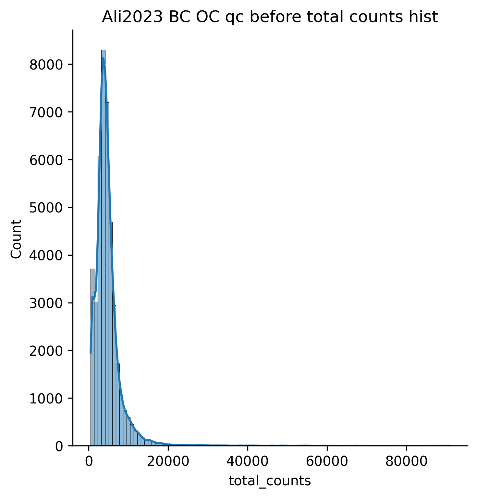 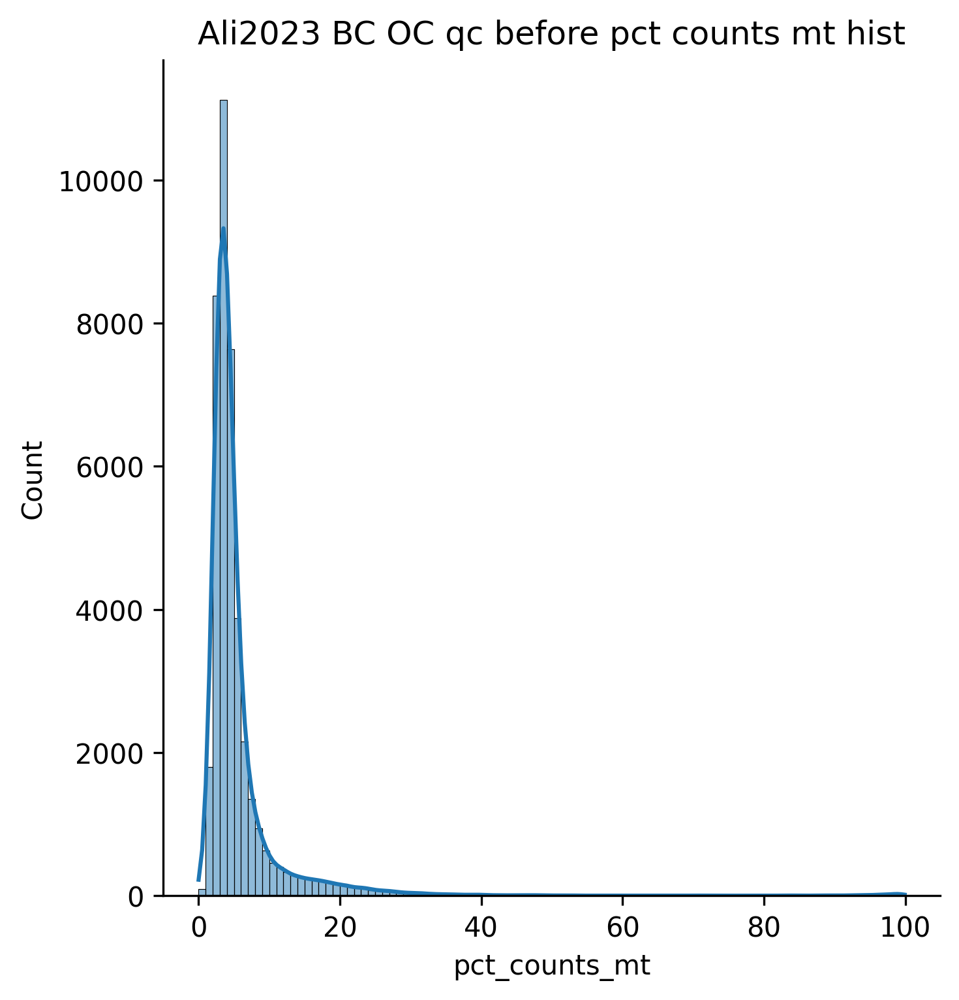 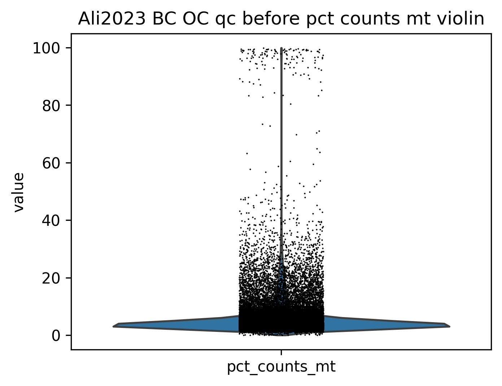 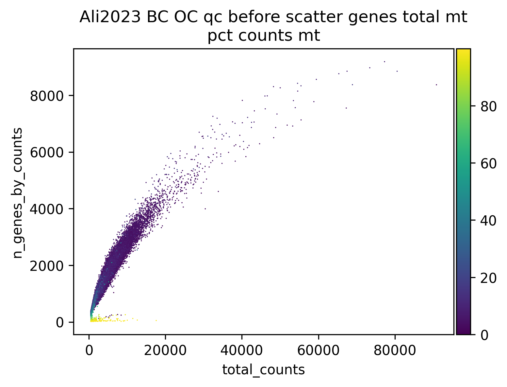


Per-sample QC on 'sample_id': 10 samples, 0 with < 100 cells
Number of count outliers with MAD > 5: 3006
Number of mitochondrial outliers with MAD > 5 or pct_counts_mt > 8: 5653
Count QC per sample
| index | sample | cells | count_outliers | mt_outliers | removed |
|---|---|---|---|---|---|
| 0 | GSM6215232 | 19503 | 1183 | 1416 | 1671 |
| 1 | GSM6215235 | 633 | 64 | 190 | 191 |
| 2 | GSM6215237 | 108 | 12 | 24 | 24 |
| 3 | GSM6215239 | 188 | 15 | 43 | 46 |
| 4 | GSM6215241 | 308 | 43 | 69 | 75 |
| 5 | GSM6215243 | 317 | 36 | 65 | 68 |
| 6 | GSM6215245 | 191 | 50 | 56 | 58 |
| 7 | GSM6215247 | 13768 | 1213 | 1654 | 1885 |
| 8 | GSM6215250 | 6863 | 326 | 1994 | 2031 |
| 9 | GSM6215253 | 142 | 64 | 142 | 142 |
Filtered out outliers: 6191 (14.73%)
Filtering out genes expressed in less than 0 cells
Removed 0 genes (0.00%), 36601 kept
After count QC:


1.1.3. Doublet QC
Per-sample QC on 'sample_id': 9 samples, 1 with < 100 cells
Running scrublet with expected doublet rate 0.05 on 8 sample(s)
Scrublet per sample
| index | sample | cells | doublets | threshold_found |
|---|---|---|---|---|
| 0 | GSM6215232 | 17832 | 1832 | True |
| 1 | GSM6215235 | 442 | 5 | True |
| 2 | GSM6215239 | 142 | 7 | True |
| 3 | GSM6215241 | 233 | 5 | True |
| 4 | GSM6215243 | 249 | 5 | True |
| 5 | GSM6215245 | 133 | 12 | True |
| 6 | GSM6215247 | 11883 | 1 | True |
| 7 | GSM6215250 | 4832 | 0 | True |

There are 1867 predicted doublets, applying filter
After doublet step: (33963, 36601) (removed 5.21% cells)
1.1.4. Gene exclusion
Excluding genes matching the following patterns:
Note: Showing at most 10 rows and 10 columns from data with 11 rows and 2 columns.
| mt_genes | ['MT-'] |
| ribo_genes | ['^RPS(?!6K)', '^RPL'] |
| hb_genes | ['^HBA|^HBB'] |
| stress_genes | ['G0S2', '^JUN', '^FOS', 'CDKN1A', '^ZFP36$', '^DUSP1$', '^TNFAIP3$', '^NR4A2$', '^DNAJB1$', '^HSPA1A$', '^HSPA1B$', '^HSPA6$'] |
| IFN_genes | ['^IRF(?!4$)', '^IFN(?!G$)'] |
| ccl_genes | ['^CCL(?!3|4|5)'] |
| MHC_genes | ['^HLA-(?!DR)[A-Z]'] |
| hist_genes | ['HIST'] |
| comp_genes | ['^C1Q'] |
| ig_genes | ['^IGH', '^IGK', '^IGL'] |
Removing 708 genes (1.93%)
Shape after exclusion panel filtering: (33963, 35893)
load_dataset
function: load_dataset parameters: filename: GSE185344.raw_counts_stand.h5ad max_cells: 200000 cache_file: data/load_dataset_c567faaed506.h5ad
load file 2: GSE185344.raw_counts_stand.h5ad
file_version: 2026-09-09 09:26:05.966599429
Loaded 'GSE185344.raw_counts_stand.h5ad' (backed): 57697 × 38224
Gene names: index → ENSG IDs (16855 without ensembl_id kept via symbol), dropped 3 duplicates → 38221 genes
Pre-computed QC metrics from gene_name column
1.1.5. Loaded: GSE185344.raw_counts_stand.h5ad
Shape: 57697 cells × 38221 genes
layers: ['counts'] | obsm: []
obs columns
| index | column | dtype | n_unique | top values |
|---|---|---|---|---|
| 0 | study_id | category | 1 | GSE185344 (57697) |
| 1 | sample_id | category | 14 | HYW_5742_Tumor (9470), HYW_5386_Tumor (6446), HYW_4701_Tumor (6359) |
| 2 | donor | category | 7 | ICC6 (13431), ICC5 (9576), ICC3 (8431) |
| 3 | tissue_group | category | 2 | TIL (41405), tissue (16292) |
| 4 | disease_group | category | 1 | CANCER (57697) |
| 5 | tissue | category | 1 | prostate (57697) |
| 6 | disease | category | 1 | PC (57697) |
| 7 | tissue_detail | category | 2 | tumour itself (41405), non tumour tissue from patient (16292) |
| 8 | disease_detail | category | 1 | ICC/IDC (57697) |
| 9 | chemistry | category | 2 | 10x_5p_v1 (37197), 10x_5p_v2 (20500) |
| 10 | n_genes_by_counts | int32 | min=201 mean=2.1e+03 max=7.96e+03 | |
| 11 | log1p_n_genes_by_counts | float64 | min=5.31 mean=7.46 max=8.98 | |
| 12 | total_counts | float64 | min=501 mean=8.56e+03 max=1.05e+05 | |
| 13 | log1p_total_counts | float64 | min=6.22 mean=8.61 max=11.6 | |
| 14 | pct_counts_in_top_50_genes | float64 | min=15.7 mean=34.9 max=94.6 | |
| 15 | pct_counts_in_top_100_genes | float64 | min=22.6 mean=46.8 max=96.3 | |
| 16 | pct_counts_in_top_200_genes | float64 | min=31.4 mean=58.3 max=99.7 | |
| 17 | pct_counts_in_top_500_genes | float64 | min=46.5 mean=73.9 max=100 | |
| 18 | total_counts_mt | float64 | min=0 mean=419 max=1.46e+04 | |
| 19 | log1p_total_counts_mt | float64 | min=0 mean=5.34 max=9.59 | |
| 20 | pct_counts_mt | float64 | min=0 mean=5.25 max=39.9 | |
| 21 | total_counts_ribo | float64 | min=2 mean=1.86e+03 max=3.87e+04 | |
| 22 | log1p_total_counts_ribo | float64 | min=1.1 mean=6.92 max=10.6 | |
| 23 | pct_counts_ribo | float64 | min=0.252 mean=20.3 max=68.8 | |
| 24 | total_counts_hb | float64 | min=0 mean=0.905 max=1.39e+03 | |
| 25 | log1p_total_counts_hb | float64 | min=0 mean=0.337 max=7.24 | |
| 26 | pct_counts_hb | float64 | min=0 mean=0.0114 max=36.3 |
var columns
Note: Showing at most 10 rows and 10 columns from data with 14 rows and 4 columns.
| index | column | dtype | n_unique | sample values |
|---|---|---|---|---|
| 0 | gene_name | object | 38221 | FAM231C (1), MIR1302-2HG (1), FAM138A (1) |
| 1 | ensembl_id | category | 21366 | ENSG00000310560 (1), ENSG00000000003 (1), ENSG00000000005 (1) |
| 2 | ensembl_source | category | 5 | direct_hgnc_exact (21357), unmapped (14937), ambiguous_direct_hgnc_exact (1918) |
| 3 | ensembl_gene_tag | category | 2 | single_gene (21365), multiple_genes (1) |
| 4 | mt | bool | min=0 mean=0.00034 max=1 | |
| 5 | ribo | bool | min=0 mean=0.00275 max=1 | |
| 6 | hb | bool | min=0 mean=0.000314 max=1 | |
| 7 | n_cells_by_counts | int64 | min=0 mean=3.17e+03 max=5.73e+04 | |
| 8 | mean_counts | float64 | min=0 mean=0.224 max=149 | |
| 9 | log1p_mean_counts | float64 | min=0 mean=0.0974 max=5.01 |
qc_full
function: qc_full parameters: excluded_gene_patterns: null expected_doublet_rate: 0.05 frac_treshold: 0.05 low_count_treshold: 1000 mad_outlier_var: 5 min_cells_per_gene: 0 min_cells_per_sample: 100 mitochondria_cutoff_percentage: 8 name: Wong2022_PrC_prostate sample_col: sample_id cache_file: data/qc_full_2dd0138ca090.h5ad
1.2. Quality Control
1.2.1. Ambient RNA QC
Checking if a cleanup is necessary, flagging cells with less than 1000 counts as potential ambient RNA contamination
No significant RNA contamination detected, skipping cleanup
1.2.2. Count QC
| index | count | mean | std | min | 25% | 50% | 75% | max |
|---|---|---|---|---|---|---|---|---|
| total_counts | 57697 | 8564.55 | 9282.21 | 501 | 2982 | 4832 | 10560 | 104972 |
| n_genes_by_counts | 57697 | 2101.54 | 1341.24 | 201 | 1147 | 1616 | 2806 | 7960 |
| pct_counts_mt | 57697 | 5.25 | 5.29 | 0 | 2.35 | 3.61 | 5.86 | 39.92 |
| pct_counts_ribo | 57697 | 20.30 | 8.11 | 0.25 | 14.86 | 20.07 | 25.56 | 68.82 |
| pct_counts_hb | 57697 | 0.01 | 0.22 | 0 | 0 | 0 | 0.01 | 36.26 |
| pct_counts_in_top_20_genes | 57697 | 22.32 | 6.67 | 9.21 | 17.97 | 21.03 | 24.98 | 93.17 |
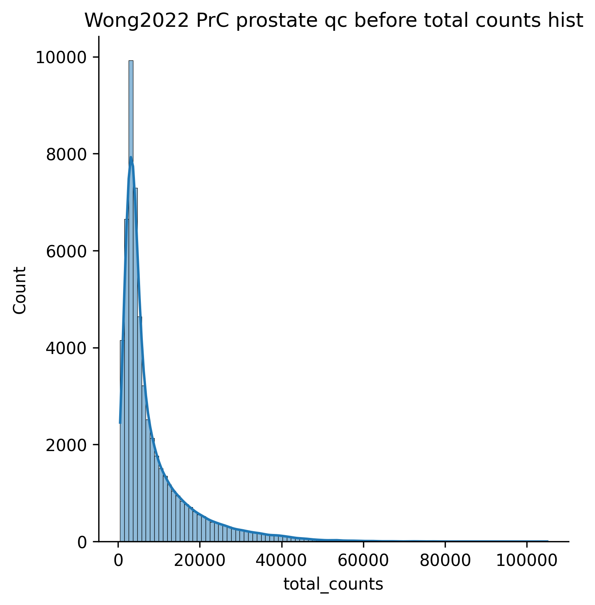 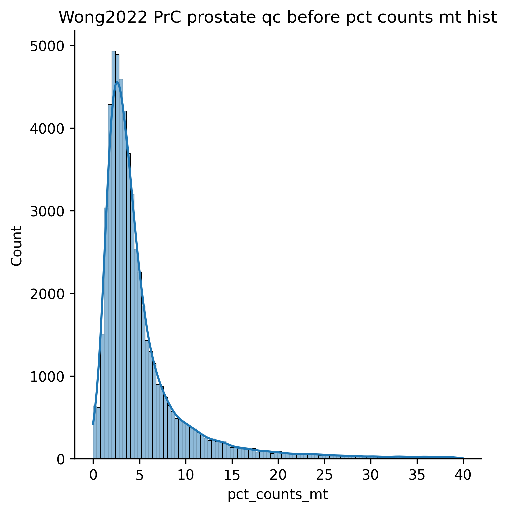 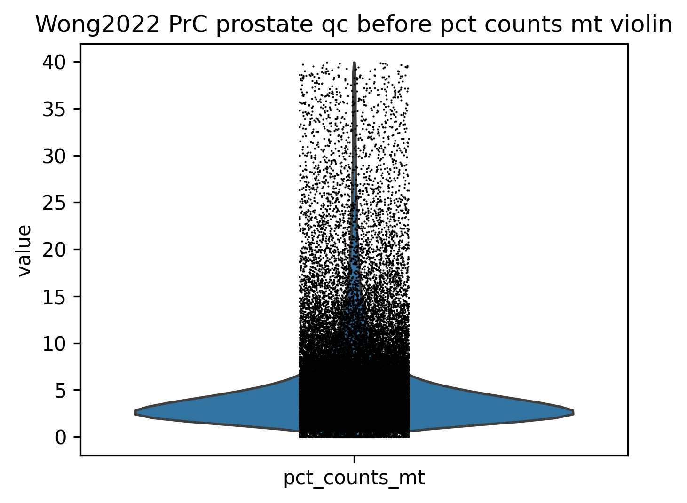 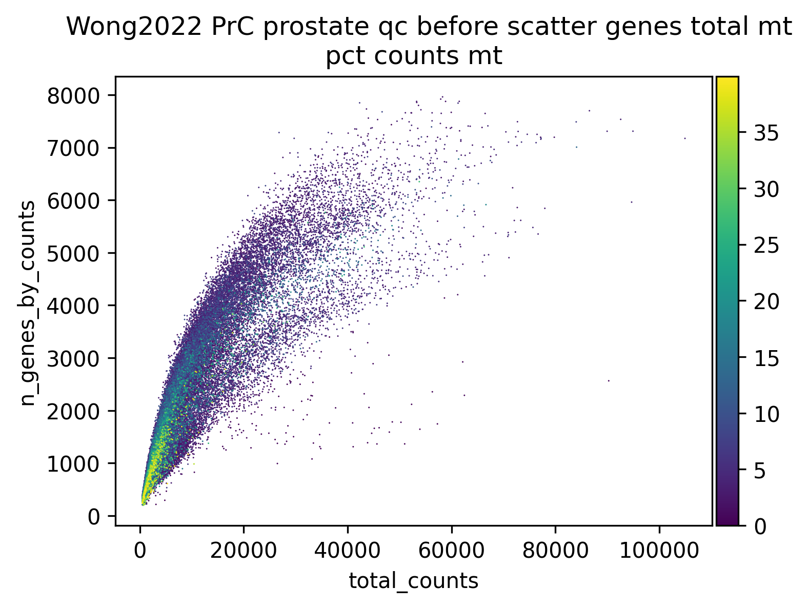


Per-sample QC on 'sample_id': 14 samples, 0 with < 100 cells
Number of count outliers with MAD > 5: 1921
Number of mitochondrial outliers with MAD > 5 or pct_counts_mt > 8: 9272
Count QC per sample
| index | sample | cells | count_outliers | mt_outliers | removed |
|---|---|---|---|---|---|
| 0 | HYW_4701_Benign | 721 | 28 | 71 | 82 |
| 1 | HYW_4701_Tumor | 6359 | 143 | 986 | 1049 |
| 2 | HYW_4847_Benign | 1345 | 22 | 120 | 124 |
| 3 | HYW_4847_Tumor | 3371 | 73 | 446 | 465 |
| 4 | HYW_4880_Benign | 2714 | 30 | 468 | 468 |
| 5 | HYW_4880_Tumor | 5717 | 126 | 949 | 973 |
| 6 | HYW_4881_Benign | 2463 | 26 | 234 | 255 |
| 7 | HYW_4881_Tumor | 4931 | 201 | 711 | 743 |
| 8 | HYW_5386_Benign | 3130 | 105 | 676 | 704 |
| 9 | HYW_5386_Tumor | 6446 | 340 | 2532 | 2554 |
| 10 | HYW_5742_Benign | 3961 | 174 | 331 | 448 |
| 11 | HYW_5742_Tumor | 9470 | 443 | 1038 | 1129 |
| 12 | HYW_5755_Benign | 1958 | 57 | 196 | 215 |
| 13 | HYW_5755_Tumor | 5111 | 153 | 514 | 572 |
Filtered out outliers: 9781 (16.95%)
Filtering out genes expressed in less than 0 cells
Removed 0 genes (0.00%), 38221 kept
After count QC:
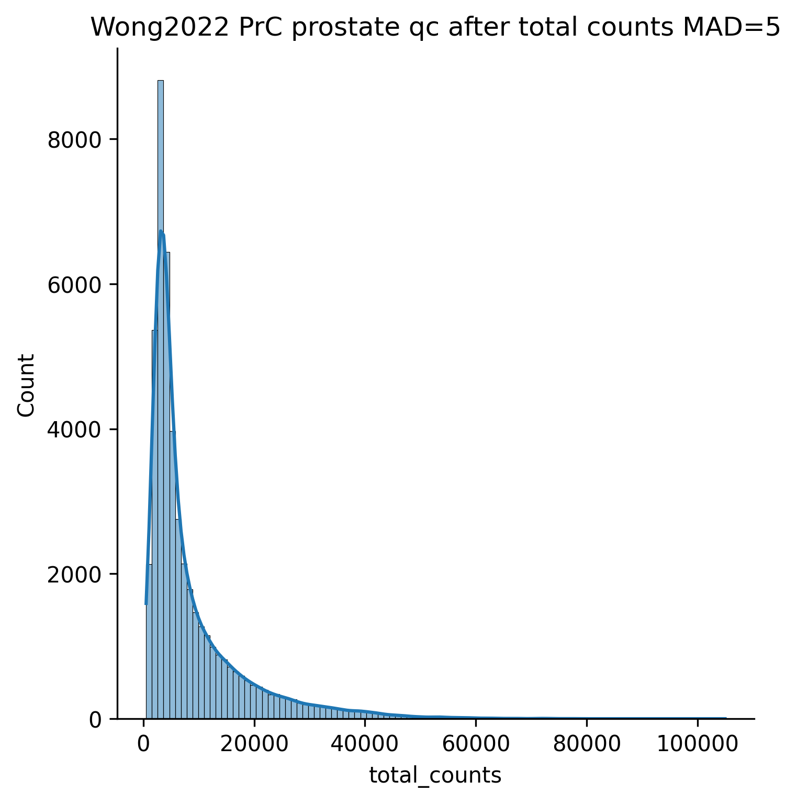 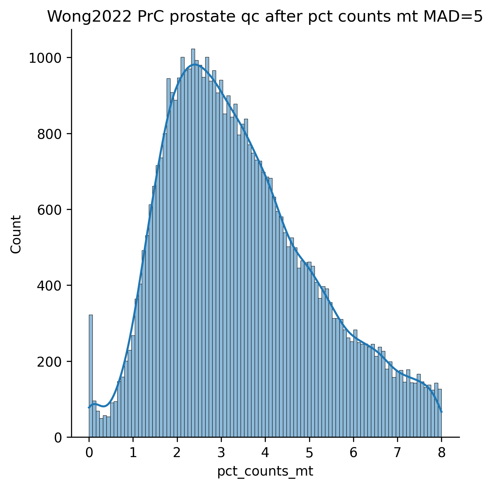 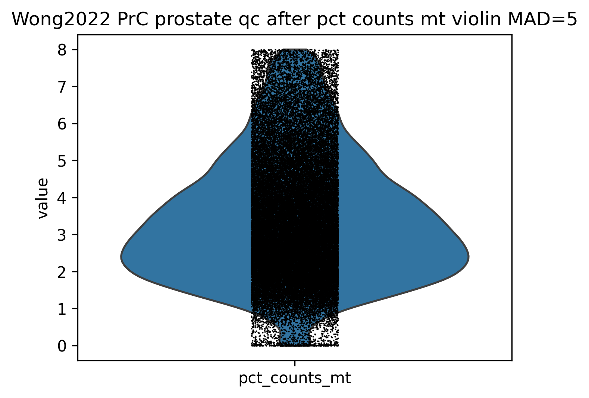 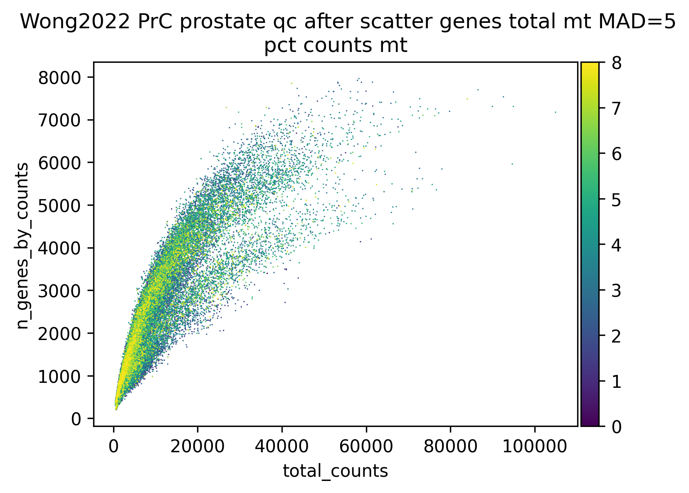


1.2.3. Doublet QC
Per-sample QC on 'sample_id': 14 samples, 0 with < 100 cells
Running scrublet with expected doublet rate 0.05 on 14 sample(s)
Scrublet per sample
| index | sample | cells | doublets | threshold_found |
|---|---|---|---|---|
| 0 | HYW_4701_Benign | 639 | 2 | True |
| 1 | HYW_4701_Tumor | 5310 | 81 | True |
| 2 | HYW_4847_Benign | 1221 | 2 | True |
| 3 | HYW_4847_Tumor | 2906 | 27 | True |
| 4 | HYW_4880_Benign | 2246 | 15 | True |
| 5 | HYW_4880_Tumor | 4744 | 56 | True |
| 6 | HYW_4881_Benign | 2208 | 7 | True |
| 7 | HYW_4881_Tumor | 4188 | 7 | True |
| 8 | HYW_5386_Benign | 2426 | 6 | True |
| 9 | HYW_5386_Tumor | 3892 | 9 | True |
| 10 | HYW_5742_Benign | 3513 | 54 | True |
| 11 | HYW_5742_Tumor | 8341 | 6 | True |
| 12 | HYW_5755_Benign | 1743 | 3 | True |
| 13 | HYW_5755_Tumor | 4539 | 45 | True |

There are 320 predicted doublets, applying filter
After doublet step: (47596, 38221) (removed 0.67% cells)
1.2.4. Gene exclusion
Excluding genes matching the following patterns:
Note: Showing at most 10 rows and 10 columns from data with 11 rows and 2 columns.
| mt_genes | ['MT-'] |
| ribo_genes | ['^RPS(?!6K)', '^RPL'] |
| hb_genes | ['^HBA|^HBB'] |
| stress_genes | ['G0S2', '^JUN', '^FOS', 'CDKN1A', '^ZFP36$', '^DUSP1$', '^TNFAIP3$', '^NR4A2$', '^DNAJB1$', '^HSPA1A$', '^HSPA1B$', '^HSPA6$'] |
| IFN_genes | ['^IRF(?!4$)', '^IFN(?!G$)'] |
| ccl_genes | ['^CCL(?!3|4|5)'] |
| MHC_genes | ['^HLA-(?!DR)[A-Z]'] |
| hist_genes | ['HIST'] |
| comp_genes | ['^C1Q'] |
| ig_genes | ['^IGH', '^IGK', '^IGL'] |
Removing 714 genes (1.87%)
Shape after exclusion panel filtering: (47596, 37507)
load_dataset
function: load_dataset parameters: filename: GSE165045.raw_counts_stand.h5ad max_cells: 200000 cache_file: data/load_dataset_9c7a522c5160.h5ad
load file 3: GSE165045.raw_counts_stand.h5ad
file_version: 2026-09-21 14:17:52.508620201
Loaded 'GSE165045.raw_counts_stand.h5ad' (backed): 34555 × 33538
Gene names: index → ENSG IDs (13057 without ensembl_id kept via symbol), dropped 0 duplicates → 33538 genes
Pre-computed QC metrics from gene_name column
1.2.5. Loaded: GSE165045.raw_counts_stand.h5ad
Shape: 34555 cells × 33538 genes
layers: ['counts'] | obsm: []
obs columns
| index | column | dtype | n_unique | top values |
|---|---|---|---|---|
| 0 | study_id | category | 1 | Lee2022 (34555) |
| 1 | study | category | 1 | GSE165045 (34555) |
| 2 | sample_id | category | 12 | GSM5025050 (7670), GSM5025049 (3826), GSM5025043 (3806) |
| 3 | donor | category | 12 | donor_11 (7670), donor_10 (3826), donor_4 (3806) |
| 4 | original_barcode | category | 33821 | CTCACACAGATCTGCT-1 (3), TGACGGCTCGCAGGCT-1 (3), CGCTATCCATGTCTCC-1 (3) |
| 5 | chemistry | category | 1 | 10x_5p (34555) |
| 6 | tissue | category | 1 | pancreas (34555) |
| 7 | tissue_group | category | 1 | tissue (34555) |
| 8 | disease_group | category | 1 | INFL (34555) |
| 9 | disease | category | 2 | CP (28866), H (5689) |
| 10 | disease_detail | category | 2 | idiopathic (14707), hereditary (14159) |
| 11 | tissue_detail | float64 | min=nan mean=nan max=nan | |
| 12 | mutations | float64 | min=nan mean=nan max=nan | |
| 13 | n_genes_by_counts | int32 | min=16 mean=1.41e+03 max=8.05e+03 | |
| 14 | log1p_n_genes_by_counts | float64 | min=2.83 mean=7.01 max=8.99 | |
| 15 | total_counts | float32 | min=500 mean=6.32e+03 max=9.06e+04 | |
| 16 | log1p_total_counts | float32 | min=6.22 mean=8.26 max=11.4 | |
| 17 | pct_counts_in_top_50_genes | float64 | min=22.6 mean=43.3 max=100 | |
| 18 | pct_counts_in_top_100_genes | float64 | min=30.1 mean=56.8 max=100 | |
| 19 | pct_counts_in_top_200_genes | float64 | min=42.1 mean=69 max=100 | |
| 20 | pct_counts_in_top_500_genes | float64 | min=58.3 mean=83.8 max=100 | |
| 21 | total_counts_mt | float32 | min=0 mean=299 max=1.24e+04 | |
| 22 | log1p_total_counts_mt | float32 | min=0 mean=5.1 max=9.43 | |
| 23 | pct_counts_mt | float32 | min=0 mean=7.05 max=96.6 | |
| 24 | total_counts_ribo | float32 | min=0 mean=1.4e+03 max=2.33e+04 | |
| 25 | log1p_total_counts_ribo | float32 | min=0 mean=6.7 max=10.1 | |
| 26 | pct_counts_ribo | float32 | min=0 mean=24.4 max=58.8 | |
| 27 | total_counts_hb | float32 | min=0 mean=0.844 max=41 | |
| 28 | log1p_total_counts_hb | float32 | min=0 mean=0.318 max=3.74 | |
| 29 | pct_counts_hb | float32 | min=0 mean=0.0116 max=0.845 |
var columns
Note: Showing at most 10 rows and 10 columns from data with 14 rows and 4 columns.
| index | column | dtype | n_unique | sample values |
|---|---|---|---|---|
| 0 | gene_name | object | 33538 | FAM231C (1), MIR1302-2HG (1), MT-CO1 (1) |
| 1 | ensembl_id | category | 20481 | ENSG00000310560 (1), ENSG00000284848 (1), ENSG00000284862 (1) |
| 2 | ensembl_source | category | 5 | direct_hgnc_exact (20471), unmapped (11191), ambiguous_direct_hgnc_exact (1866) |
| 3 | ensembl_gene_tag | category | 2 | single_gene (20480), multiple_genes (1) |
| 4 | mt | bool | min=0 mean=0.000388 max=1 | |
| 5 | ribo | bool | min=0 mean=0.0031 max=1 | |
| 6 | hb | bool | min=0 mean=0.000358 max=1 | |
| 7 | n_cells_by_counts | int64 | min=0 mean=1.45e+03 max=3.43e+04 | |
| 8 | mean_counts | float64 | min=0 mean=0.188 max=97.2 | |
| 9 | log1p_mean_counts | float64 | min=0 mean=0.0753 max=4.59 |
set_columns
function: set_columns parameters: overwrite: false values: {"cellranger": "4.0.0", "data_source": "GEO GSE165045"} cache_file: data/set_columns_a1ca89861621.h5ad
set_columns: data_source = 'GEO GSE165045'
set_columns: cellranger = '4.0.0'
qc_full
function: qc_full parameters: excluded_gene_patterns: null expected_doublet_rate: 0.05 frac_treshold: 0.05 low_count_treshold: 1000 mad_outlier_var: 5 min_cells_per_gene: 0 min_cells_per_sample: 100 mitochondria_cutoff_percentage: 8 name: Lee2022_pancreas sample_col: sample_id cache_file: data/qc_full_3d703717a9b9.h5ad
1.3. Quality Control
1.3.1. Ambient RNA QC
Checking if a cleanup is necessary, flagging cells with less than 1000 counts as potential ambient RNA contamination
Potential RNA contamination detected (6.1% of cells < 1000 counts)
IGNORE_AMBIENT_RNA set — skipping cleanup and continuing (count QC still removes low-count cells)
1.3.2. Count QC
| index | count | mean | std | min | 25% | 50% | 75% | max |
|---|---|---|---|---|---|---|---|---|
| total_counts | 34555 | 6316.89 | 8295.16 | 500 | 2122 | 3340 | 6810.50 | 90616 |
| n_genes_by_counts | 34555 | 1407.77 | 1059.46 | 16 | 801 | 1050 | 1696.50 | 8049 |
| pct_counts_mt | 34555 | 7.05 | 12.79 | 0 | 2.70 | 4.02 | 5.86 | 96.63 |
| pct_counts_ribo | 34555 | 24.41 | 10.24 | 0 | 18.37 | 24.44 | 31.26 | 58.80 |
| pct_counts_hb | 34555 | 0.01 | 0.03 | 0 | 0 | 0 | 0.01 | 0.85 |
| pct_counts_in_top_20_genes | 34555 | 28.66 | 14.61 | 13.04 | 22.22 | 24.74 | 27.91 | 100 |
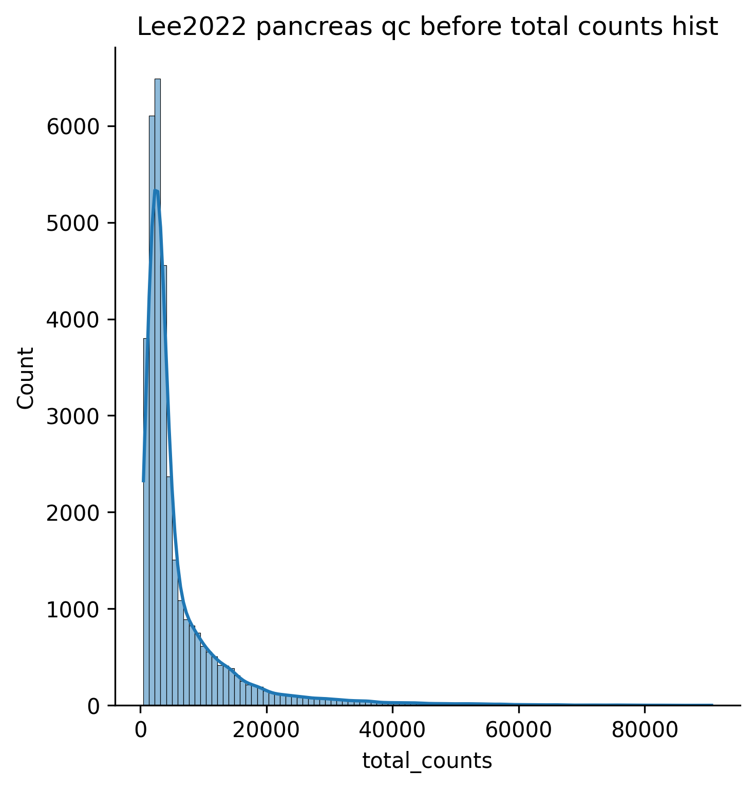 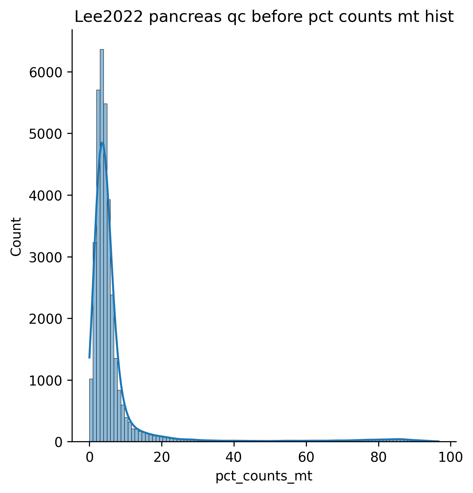 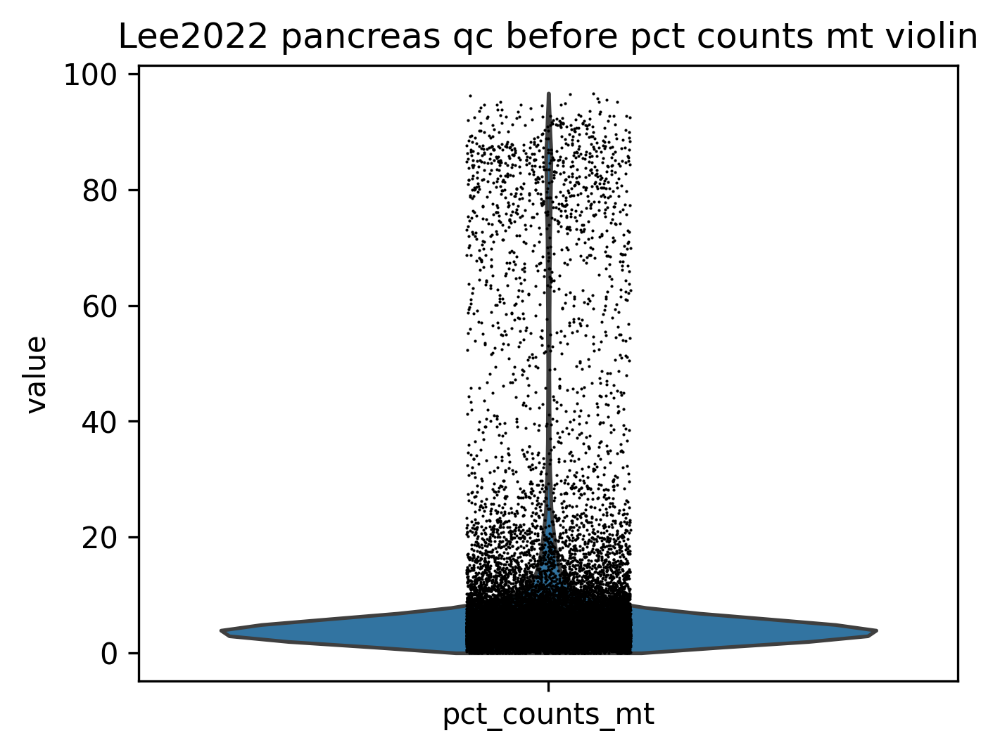 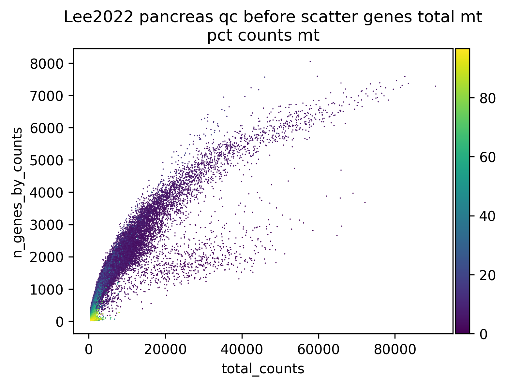


Per-sample QC on 'sample_id': 12 samples, 0 with < 100 cells
Number of count outliers with MAD > 5: 3629
Number of mitochondrial outliers with MAD > 5 or pct_counts_mt > 8: 4945
Count QC per sample
| index | sample | cells | count_outliers | mt_outliers | removed |
|---|---|---|---|---|---|
| 0 | GSM5025040 | 1539 | 148 | 104 | 191 |
| 1 | GSM5025041 | 2367 | 321 | 280 | 436 |
| 2 | GSM5025042 | 3010 | 218 | 247 | 332 |
| 3 | GSM5025043 | 3806 | 492 | 865 | 1140 |
| 4 | GSM5025044 | 3437 | 324 | 443 | 599 |
| 5 | GSM5025045 | 939 | 97 | 170 | 202 |
| 6 | GSM5025046 | 1525 | 178 | 329 | 330 |
| 7 | GSM5025047 | 3225 | 485 | 902 | 909 |
| 8 | GSM5025048 | 941 | 145 | 114 | 211 |
| 9 | GSM5025049 | 3826 | 154 | 172 | 283 |
| 10 | GSM5025050 | 7670 | 512 | 770 | 1101 |
| 11 | GSM5025051 | 2270 | 555 | 549 | 813 |
Filtered out outliers: 6547 (18.95%)
Filtering out genes expressed in less than 0 cells
Removed 0 genes (0.00%), 33538 kept
After count QC:
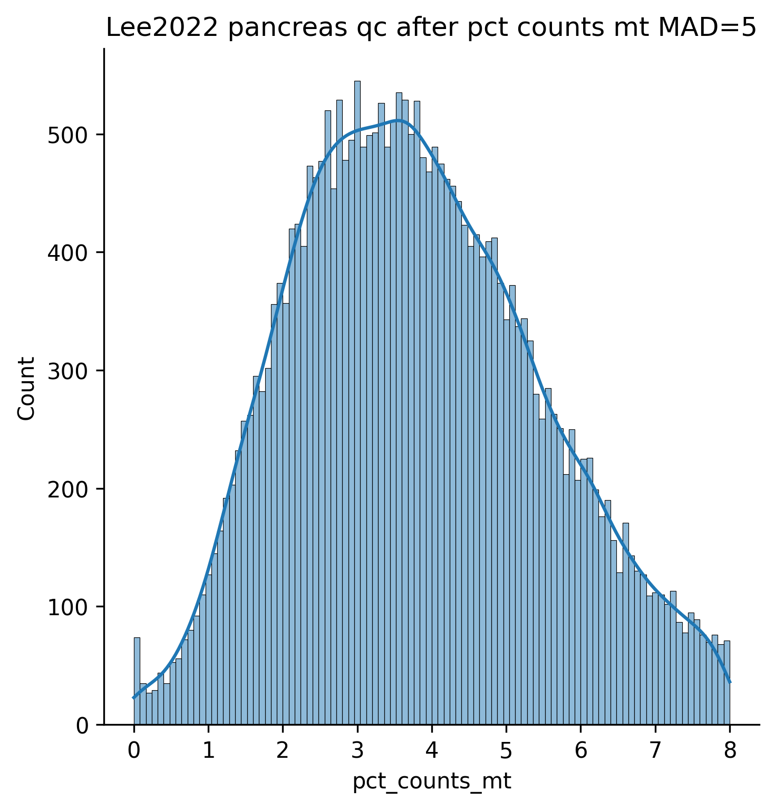 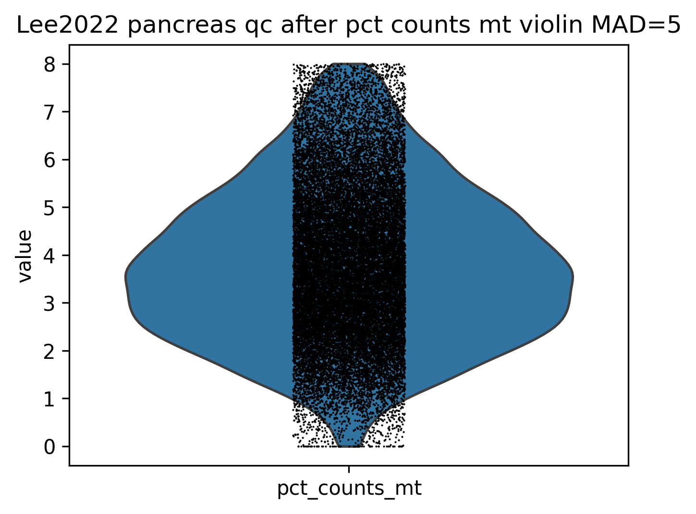 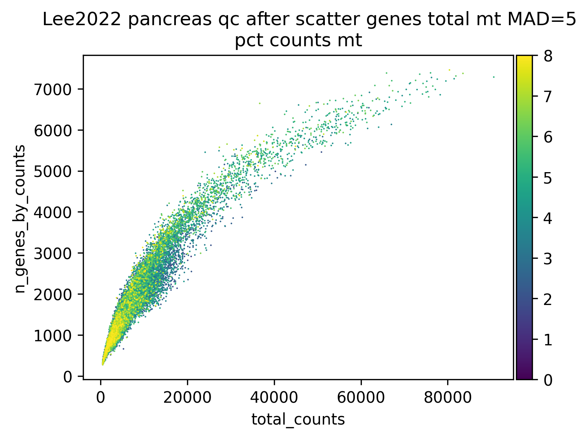


1.3.3. Doublet QC
Per-sample QC on 'sample_id': 12 samples, 0 with < 100 cells
Running scrublet with expected doublet rate 0.05 on 12 sample(s)
Scrublet per sample
| index | sample | cells | doublets | threshold_found |
|---|---|---|---|---|
| 0 | GSM5025040 | 1348 | 9 | True |
| 1 | GSM5025041 | 1931 | 5 | True |
| 2 | GSM5025042 | 2678 | 8 | True |
| 3 | GSM5025043 | 2666 | 7 | True |
| 4 | GSM5025044 | 2838 | 6 | True |
| 5 | GSM5025045 | 737 | 2 | True |
| 6 | GSM5025046 | 1195 | 1 | True |
| 7 | GSM5025047 | 2316 | 0 | True |
| 8 | GSM5025048 | 730 | 3 | True |
| 9 | GSM5025049 | 3543 | 13 | True |
| 10 | GSM5025050 | 6569 | 2 | True |
| 11 | GSM5025051 | 1457 | 6 | True |

There are 62 predicted doublets, applying filter
After doublet step: (27946, 33538) (removed 0.22% cells)
1.3.4. Gene exclusion
Excluding genes matching the following patterns:
Note: Showing at most 10 rows and 10 columns from data with 11 rows and 2 columns.
| mt_genes | ['MT-'] |
| ribo_genes | ['^RPS(?!6K)', '^RPL'] |
| hb_genes | ['^HBA|^HBB'] |
| stress_genes | ['G0S2', '^JUN', '^FOS', 'CDKN1A', '^ZFP36$', '^DUSP1$', '^TNFAIP3$', '^NR4A2$', '^DNAJB1$', '^HSPA1A$', '^HSPA1B$', '^HSPA6$'] |
| IFN_genes | ['^IRF(?!4$)', '^IFN(?!G$)'] |
| ccl_genes | ['^CCL(?!3|4|5)'] |
| MHC_genes | ['^HLA-(?!DR)[A-Z]'] |
| hist_genes | ['HIST'] |
| comp_genes | ['^C1Q'] |
| ig_genes | ['^IGH', '^IGK', '^IGL'] |
Removing 713 genes (2.13%)
Shape after exclusion panel filtering: (27946, 32825)
load_dataset
function: load_dataset parameters: filename: GSE212217.raw_counts_stand.h5ad max_cells: 200000 cache_file: data/load_dataset_b0c0e06c6735.h5ad
load file 4: GSE212217.raw_counts_stand.h5ad
file_version: 2026-09-09 09:27:43.840832498
Loaded 'GSE212217.raw_counts_stand.h5ad' (backed): 392717 × 36601
Subsampled to 200000 cells (backed → memory)
Gene names: index → ENSG IDs (15350 without ensembl_id kept via symbol), dropped 0 duplicates → 36601 genes
Pre-computed QC metrics from gene_name column
1.3.5. Loaded: GSE212217.raw_counts_stand.h5ad
Shape: 200000 cells × 36601 genes
layers: ['counts'] | obsm: []
obs columns
| index | column | dtype | n_unique | top values |
|---|---|---|---|---|
| 0 | study_id | category | 1 | GSE212217 (200000) |
| 1 | sample_id | category | 52 | GSM6514141 (7403), GSM6514139 (6574), GSM6514136 (6326) |
| 2 | original_barcode | category | 175499 | TGGGAAGGTTTAGCTG-1 (5), AAAGCAAGTGTGCCTG-1 (5), CTTAACTTCTCGATGA-1 (5) |
| 3 | pre_donor | category | 52 | PEM19C5 (7403), PEM18C5 (6574), PEM17C1 (6326) |
| 4 | donor | category | 22 | donor_11 (15923), donor_12 (13023), donor_6 (12967) |
| 5 | timepoint | category | 3 | timepoint_5 (82678), timepoint_1 (79639), timepoint_3 (37683) |
| 6 | tissue_group | category | 1 | PBMC (200000) |
| 7 | tissue | category | 1 | PBMC (200000) |
| 8 | disease_group | category | 1 | CANCER (200000) |
| 9 | disease | category | 1 | EC (200000) |
| 10 | disease_detail | category | 2 | Responder (115980), NonResponder (84020) |
| 11 | tissue_detail | category | 2 | epi-MMRd (155089), mut-MMRd (44911) |
| 12 | treatment | category | 1 | anti PD-1 (200000) |
| 13 | chemistry | category | 1 | 10x_5p_v1 (200000) |
| 14 | n_genes_by_counts | int32 | min=12 mean=1.15e+03 max=7.06e+03 | |
| 15 | log1p_n_genes_by_counts | float64 | min=2.56 mean=6.81 max=8.86 | |
| 16 | total_counts | float32 | min=224 mean=3.15e+03 max=6.76e+04 | |
| 17 | log1p_total_counts | float32 | min=5.42 mean=7.77 max=11.1 | |
| 18 | pct_counts_in_top_50_genes | float64 | min=16.8 mean=43.5 max=100 | |
| 19 | pct_counts_in_top_100_genes | float64 | min=24 mean=54.7 max=100 | |
| 20 | pct_counts_in_top_200_genes | float64 | min=35.6 mean=65.4 max=100 | |
| 21 | pct_counts_in_top_500_genes | float64 | min=51.6 mean=81.6 max=100 | |
| 22 | total_counts_mt | float32 | min=0 mean=298 max=5.74e+03 | |
| 23 | log1p_total_counts_mt | float32 | min=0 mean=5.5 max=8.66 | |
| 24 | pct_counts_mt | float32 | min=0 mean=16.2 max=99 | |
| 25 | total_counts_ribo | float32 | min=0 mean=843 max=1.73e+04 | |
| 26 | log1p_total_counts_ribo | float32 | min=0 mean=5.83 max=9.76 | |
| 27 | pct_counts_ribo | float32 | min=0 mean=21.5 max=67.9 | |
| 28 | total_counts_hb | float32 | min=0 mean=1.84 max=7.3e+03 | |
| 29 | log1p_total_counts_hb | float32 | min=0 mean=0.105 max=8.9 | |
| 30 | pct_counts_hb | float32 | min=0 mean=0.0912 max=96.4 |
var columns
Note: Showing at most 10 rows and 10 columns from data with 14 rows and 4 columns.
| index | column | dtype | n_unique | sample values |
|---|---|---|---|---|
| 0 | gene_name | object | 36601 | AC007325.2 (1), MIR1302-2HG (1), FAM138A (1) |
| 1 | ensembl_id | category | 21251 | ENSG00000310560 (1), ENSG00000000003 (1), ENSG00000000005 (1) |
| 2 | ensembl_source | category | 5 | direct_hgnc_exact (21243), unmapped (13447), ambiguous_direct_hgnc_exact (1903) |
| 3 | ensembl_gene_tag | category | 2 | single_gene (21250), multiple_genes (1) |
| 4 | mt | bool | min=0 mean=0.000355 max=1 | |
| 5 | ribo | bool | min=0 mean=0.00281 max=1 | |
| 6 | hb | bool | min=0 mean=0.000328 max=1 | |
| 7 | n_cells_by_counts | int64 | min=0 mean=6.27e+03 max=2e+05 | |
| 8 | mean_counts | float64 | min=0 mean=0.0859 max=77.1 | |
| 9 | log1p_mean_counts | float64 | min=0 mean=0.0432 max=4.36 |
set_columns
function: set_columns parameters: overwrite: false values: {"data_source": "GEO GSE212217"} cache_file: data/set_columns_0b08e542bf26.h5ad
set_columns: data_source = 'GEO GSE212217'
qc_full
function: qc_full parameters: excluded_gene_patterns: null expected_doublet_rate: 0.05 frac_treshold: 0.05 low_count_treshold: 1000 mad_outlier_var: 5 min_cells_per_gene: 0 min_cells_per_sample: 100 mitochondria_cutoff_percentage: 8 name: Chow2023_EC_PBMC sample_col: sample_id cache_file: data/qc_full_a6ec08581b13.h5ad
1.4. Quality Control
1.4.1. Ambient RNA QC
Checking if a cleanup is necessary, flagging cells with less than 1000 counts as potential ambient RNA contamination
Potential RNA contamination detected (18.2% of cells < 1000 counts)
IGNORE_AMBIENT_RNA set — skipping cleanup and continuing (count QC still removes low-count cells)
1.4.2. Count QC
| index | count | mean | std | min | 25% | 50% | 75% | max |
|---|---|---|---|---|---|---|---|---|
| total_counts | 200000 | 3145.59 | 2519.84 | 224 | 1298 | 2697 | 4200 | 67596 |
| n_genes_by_counts | 200000 | 1147.50 | 644.93 | 12 | 667 | 1126 | 1514 | 7058 |
| pct_counts_mt | 200000 | 16.24 | 19.08 | 0 | 5.40 | 8.16 | 19.05 | 99.01 |
| pct_counts_ribo | 200000 | 21.53 | 14.01 | 0 | 7.65 | 21.70 | 32.96 | 67.95 |
| pct_counts_hb | 200000 | 0.09 | 2.69 | 0 | 0 | 0 | 0 | 96.43 |
| pct_counts_in_top_20_genes | 200000 | 30.79 | 17.01 | 10.24 | 21.48 | 24.40 | 32.13 | 100 |
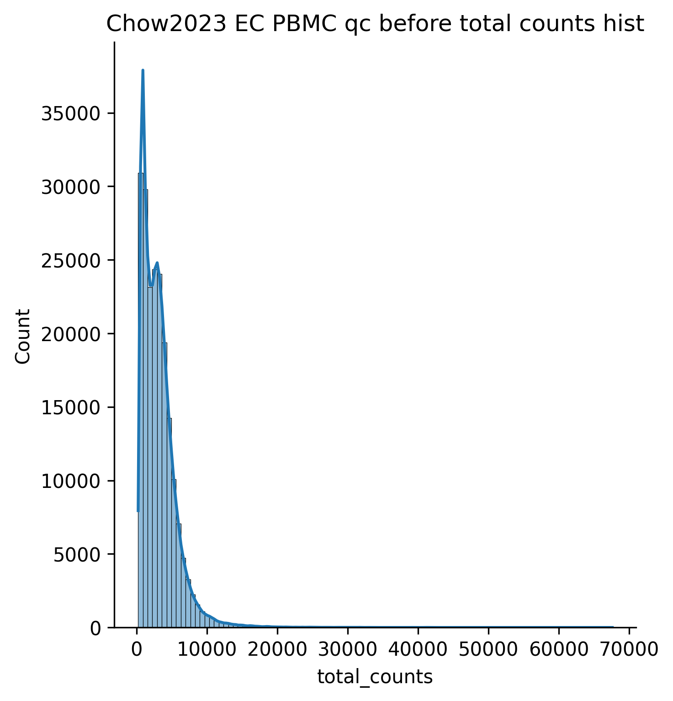 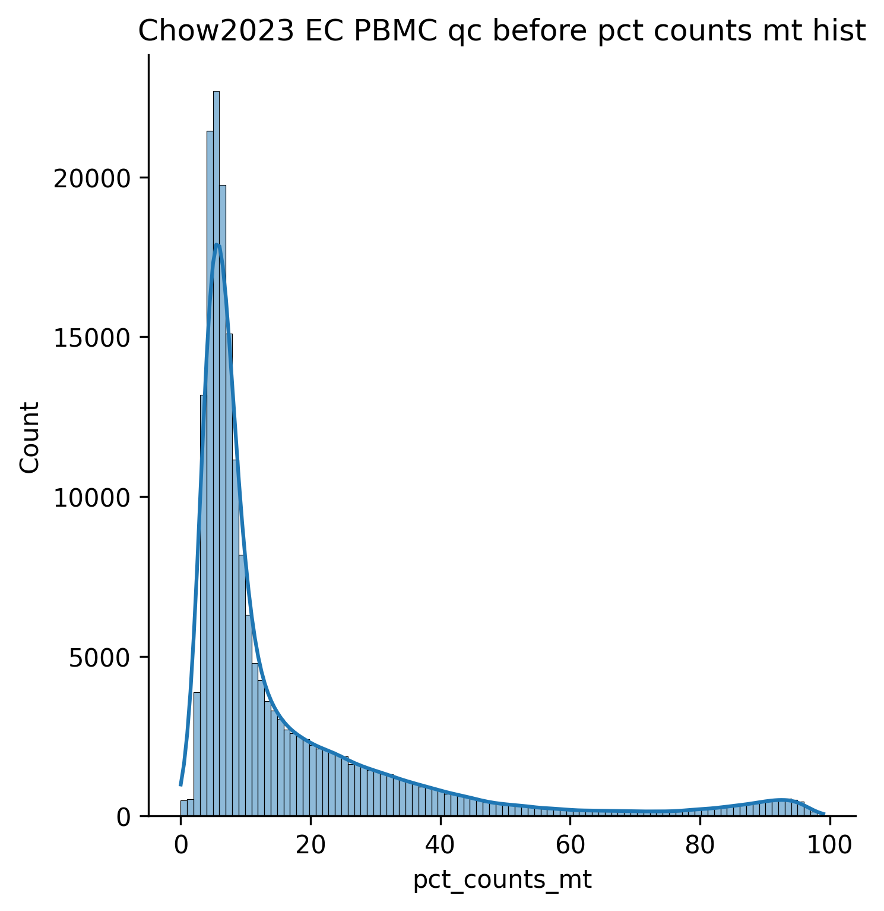 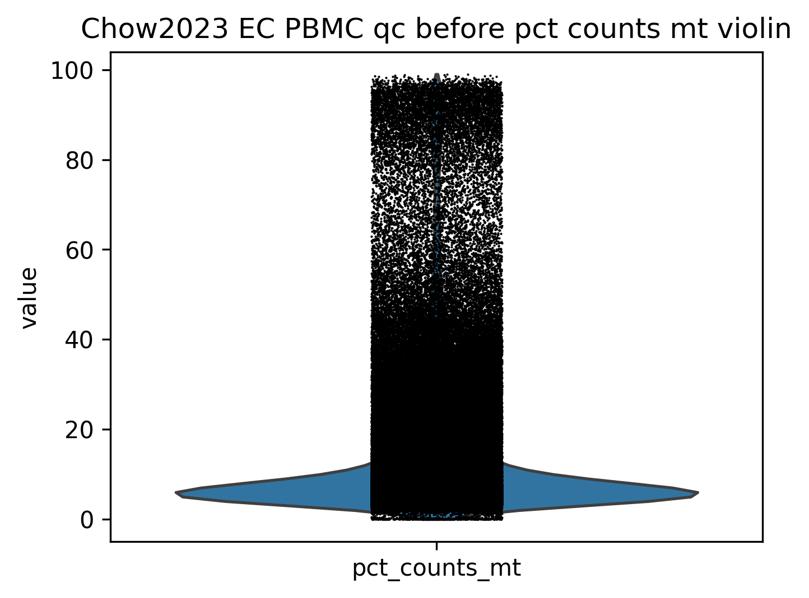 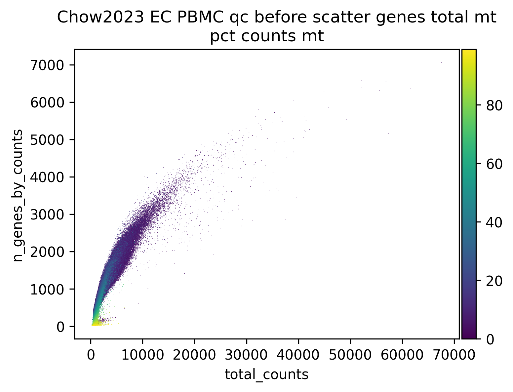


Per-sample QC on 'sample_id': 52 samples, 0 with < 100 cells
Number of count outliers with MAD > 5: 20143
Number of mitochondrial outliers with MAD > 5 or pct_counts_mt > 8: 102032
Count QC per sample
| index | sample | cells | count_outliers | mt_outliers | removed |
|---|---|---|---|---|---|
| 0 | GSM6514096 | 3381 | 466 | 1697 | 1720 |
| 1 | GSM6514097 | 2495 | 376 | 1176 | 1209 |
| 2 | GSM6514098 | 3586 | 492 | 1404 | 1418 |
| 3 | GSM6514099 | 2700 | 336 | 838 | 871 |
| 4 | GSM6514100 | 3156 | 337 | 1376 | 1381 |
| 5 | GSM6514101 | 2909 | 451 | 1128 | 1133 |
| 6 | GSM6514102 | 2755 | 471 | 1308 | 1317 |
| 7 | GSM6514103 | 1962 | 288 | 621 | 624 |
| 8 | GSM6514104 | 898 | 47 | 235 | 238 |
| 9 | GSM6514105 | 3236 | 269 | 790 | 821 |
| 10 | GSM6514106 | 4285 | 477 | 980 | 1083 |
| 11 | GSM6514107 | 4286 | 348 | 433 | 574 |
| 12 | GSM6514108 | 4065 | 280 | 529 | 605 |
| 13 | GSM6514109 | 4616 | 436 | 2816 | 2820 |
| 14 | GSM6514110 | 5437 | 333 | 1890 | 1940 |
| 15 | GSM6514111 | 4321 | 563 | 1317 | 1348 |
| 16 | GSM6514112 | 2965 | 70 | 1922 | 1922 |
| 17 | GSM6514113 | 3215 | 365 | 1026 | 1058 |
| 18 | GSM6514114 | 2846 | 393 | 710 | 806 |
| 19 | GSM6514115 | 2964 | 353 | 1871 | 1871 |
| 20 | GSM6514116 | 3236 | 376 | 776 | 822 |
| 21 | GSM6514117 | 2464 | 278 | 1722 | 1723 |
| 22 | GSM6514118 | 4603 | 622 | 2613 | 2614 |
| 23 | GSM6514119 | 2432 | 341 | 1631 | 1635 |
| 24 | GSM6514120 | 4369 | 640 | 2752 | 2753 |
| 25 | GSM6514121 | 4517 | 667 | 2729 | 2731 |
| 26 | GSM6514122 | 6267 | 314 | 4368 | 4373 |
| 27 | GSM6514123 | 3999 | 483 | 1757 | 1772 |
| 28 | GSM6514124 | 5657 | 727 | 1616 | 1647 |
| 29 | GSM6514125 | 3174 | 370 | 2290 | 2291 |
| 30 | GSM6514126 | 4433 | 638 | 1537 | 1565 |
| 31 | GSM6514127 | 5416 | 557 | 1090 | 1176 |
| 32 | GSM6514128 | 3419 | 249 | 1716 | 1728 |
| 33 | GSM6514129 | 3051 | 287 | 1064 | 1081 |
| 34 | GSM6514130 | 4513 | 604 | 1878 | 1915 |
| 35 | GSM6514131 | 3192 | 303 | 854 | 913 |
| 36 | GSM6514132 | 3719 | 390 | 1946 | 1958 |
| 37 | GSM6514133 | 4546 | 244 | 2778 | 2811 |
| 38 | GSM6514134 | 3630 | 344 | 1367 | 1378 |
| 39 | GSM6514135 | 3056 | 182 | 701 | 727 |
| 40 | GSM6514136 | 6326 | 107 | 5563 | 5564 |
| 41 | GSM6514137 | 5872 | 563 | 5046 | 5050 |
| 42 | GSM6514138 | 4478 | 19 | 3794 | 3794 |
| 43 | GSM6514139 | 6574 | 574 | 5239 | 5243 |
| 44 | GSM6514140 | 5458 | 308 | 4168 | 4169 |
| 45 | GSM6514141 | 7403 | 491 | 5661 | 5661 |
| 46 | GSM6514142 | 6006 | 380 | 4355 | 4359 |
| 47 | GSM6514143 | 1165 | 439 | 1165 | 1165 |
| 48 | GSM6514144 | 883 | 319 | 708 | 708 |
| 49 | GSM6514145 | 3686 | 335 | 1051 | 1070 |
| 50 | GSM6514146 | 2386 | 445 | 2386 | 2386 |
| 51 | GSM6514147 | 3992 | 396 | 1644 | 1677 |
Filtered out outliers: 103218 (51.61%)
Filtering out genes expressed in less than 0 cells
Removed 0 genes (0.00%), 36601 kept
After count QC:
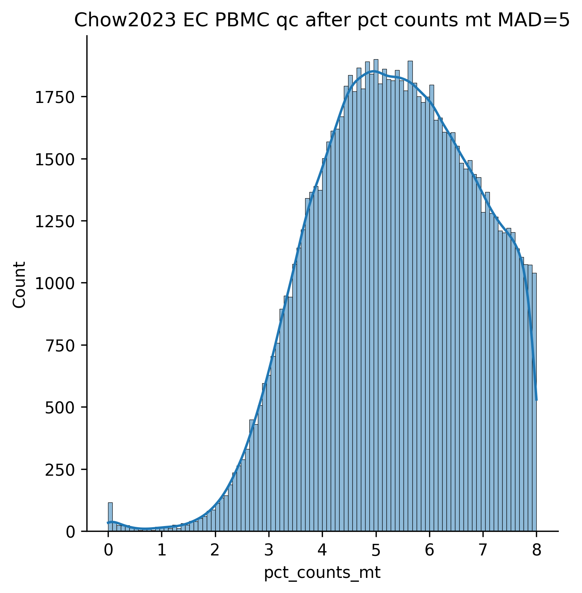 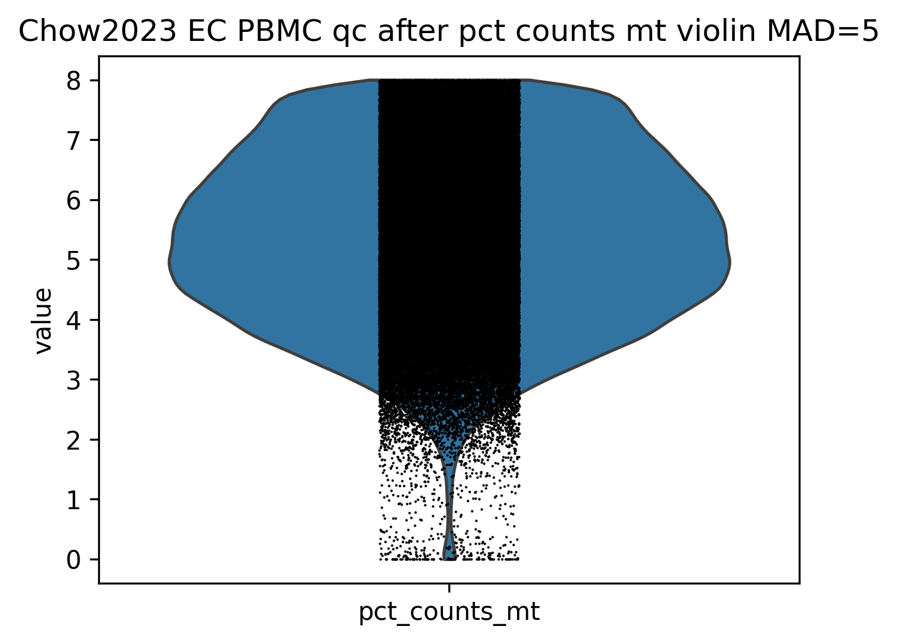 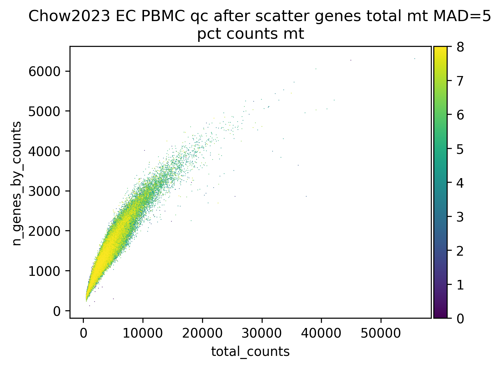


1.4.3. Doublet QC
Per-sample QC on 'sample_id': 50 samples, 0 with < 100 cells
Running scrublet with expected doublet rate 0.05 on 50 sample(s)
Scrublet per sample
| index | sample | cells | doublets | threshold_found |
|---|---|---|---|---|
| 0 | GSM6514096 | 1661 | 17 | True |
| 1 | GSM6514097 | 1286 | 21 | True |
| 2 | GSM6514098 | 2168 | 17 | True |
| 3 | GSM6514099 | 1829 | 23 | True |
| 4 | GSM6514100 | 1775 | 67 | True |
| 5 | GSM6514101 | 1776 | 50 | True |
| 6 | GSM6514102 | 1438 | 11 | True |
| 7 | GSM6514103 | 1338 | 19 | True |
| 8 | GSM6514104 | 660 | 1 | True |
| 9 | GSM6514105 | 2415 | 22 | True |
| 10 | GSM6514106 | 3202 | 9 | True |
| 11 | GSM6514107 | 3712 | 257 | True |
| 12 | GSM6514108 | 3460 | 93 | True |
| 13 | GSM6514109 | 1796 | 11 | True |
| 14 | GSM6514110 | 3497 | 117 | True |
| 15 | GSM6514111 | 2973 | 20 | True |
| 16 | GSM6514112 | 1043 | 25 | True |
| 17 | GSM6514113 | 2157 | 49 | True |
| 18 | GSM6514114 | 2040 | 54 | True |
| 19 | GSM6514115 | 1093 | 10 | True |
| 20 | GSM6514116 | 2414 | 54 | True |
| 21 | GSM6514117 | 741 | 6 | True |
| 22 | GSM6514118 | 1989 | 50 | True |
| 23 | GSM6514119 | 797 | 15 | True |
| 24 | GSM6514120 | 1616 | 19 | True |
| 25 | GSM6514121 | 1786 | 22 | True |
| 26 | GSM6514122 | 1894 | 20 | True |
| 27 | GSM6514123 | 2227 | 96 | True |
| 28 | GSM6514124 | 4010 | 192 | True |
| 29 | GSM6514125 | 883 | 12 | True |
| 30 | GSM6514126 | 2868 | 13 | True |
| 31 | GSM6514127 | 4240 | 7 | True |
| 32 | GSM6514128 | 1691 | 12 | True |
| 33 | GSM6514129 | 1970 | 70 | True |
| 34 | GSM6514130 | 2598 | 10 | True |
| 35 | GSM6514131 | 2279 | 12 | True |
| 36 | GSM6514132 | 1761 | 14 | True |
| 37 | GSM6514133 | 1735 | 13 | True |
| 38 | GSM6514134 | 2252 | 47 | True |
| 39 | GSM6514135 | 2329 | 43 | True |
| 40 | GSM6514136 | 762 | 17 | True |
| 41 | GSM6514137 | 822 | 24 | True |
| 42 | GSM6514138 | 684 | 9 | True |
| 43 | GSM6514139 | 1331 | 55 | True |
| 44 | GSM6514140 | 1289 | 18 | True |
| 45 | GSM6514141 | 1742 | 13 | True |
| 46 | GSM6514142 | 1647 | 20 | True |
| 47 | GSM6514144 | 175 | 2 | True |
| 48 | GSM6514145 | 2616 | 95 | True |
| 49 | GSM6514147 | 2315 | 20 | True |

There are 1893 predicted doublets, applying filter
After doublet step: (94889, 36601) (removed 1.96% cells)
1.4.4. Gene exclusion
Excluding genes matching the following patterns:
Note: Showing at most 10 rows and 10 columns from data with 11 rows and 2 columns.
| mt_genes | ['MT-'] |
| ribo_genes | ['^RPS(?!6K)', '^RPL'] |
| hb_genes | ['^HBA|^HBB'] |
| stress_genes | ['G0S2', '^JUN', '^FOS', 'CDKN1A', '^ZFP36$', '^DUSP1$', '^TNFAIP3$', '^NR4A2$', '^DNAJB1$', '^HSPA1A$', '^HSPA1B$', '^HSPA6$'] |
| IFN_genes | ['^IRF(?!4$)', '^IFN(?!G$)'] |
| ccl_genes | ['^CCL(?!3|4|5)'] |
| MHC_genes | ['^HLA-(?!DR)[A-Z]'] |
| hist_genes | ['HIST'] |
| comp_genes | ['^C1Q'] |
| ig_genes | ['^IGH', '^IGK', '^IGL'] |
Removing 708 genes (1.93%)
Shape after exclusion panel filtering: (94889, 35893)
load_dataset
function: load_dataset parameters: filename: GSE121636.raw_counts_stand.h5ad max_cells: 200000 cache_file: data/load_dataset_56fa763c7706.h5ad
load file 5: GSE121636.raw_counts_stand.h5ad
file_version: 2026-09-09 09:26:35.540482876
Loaded 'GSE121636.raw_counts_stand.h5ad' (backed): 25688 × 33694
Gene names: index → ENSG IDs (14680 without ensembl_id kept via symbol), dropped 34 duplicates → 33660 genes
Pre-computed QC metrics from gene_name column
1.4.5. Loaded: GSE121636.raw_counts_stand.h5ad
Shape: 25688 cells × 33660 genes
layers: ['counts'] | obsm: []
obs columns
| index | column | dtype | n_unique | top values |
|---|---|---|---|---|
| 0 | study_id | category | 1 | GSE121636 (25688) |
| 1 | sample_id | category | 6 | GSM3440847 (5850), GSM3440848 (5125), GSM3440844 (4859) |
| 2 | original_barcode | category | 25316 | ACCTTTAGTAACGCGA-1 (3), TTCGAAGTCTAACCGA-1 (3), GATCAGTGTTCACGGC-1 (3) |
| 3 | donor | category | 3 | donor_700 (10709), donor_715 (9805), donor_744 (5174) |
| 4 | tissue_group | category | 2 | PBMC (13434), TIL (12254) |
| 5 | disease_group | category | 1 | CANCER (25688) |
| 6 | tissue | category | 2 | PBMC (13434), kidney (12254) |
| 7 | disease | category | 1 | ccRCC (25688) |
| 8 | disease_detail | float64 | min=nan mean=nan max=nan | |
| 9 | tissue_detail | float64 | min=nan mean=nan max=nan | |
| 10 | chemistry | category | 1 | 10x_5p_v2 (25688) |
| 11 | n_genes_by_counts | int32 | min=94 mean=1.68e+03 max=7.19e+03 | |
| 12 | log1p_n_genes_by_counts | float64 | min=4.55 mean=7.35 max=8.88 | |
| 13 | total_counts | int64 | min=1.31e+03 mean=6.05e+03 max=6.69e+04 | |
| 14 | log1p_total_counts | float64 | min=7.18 mean=8.53 max=11.1 | |
| 15 | pct_counts_in_top_50_genes | float64 | min=21.2 mean=38.5 max=98 | |
| 16 | pct_counts_in_top_100_genes | float64 | min=28.4 mean=52.6 max=100 | |
| 17 | pct_counts_in_top_200_genes | float64 | min=37.4 mean=64.2 max=100 | |
| 18 | pct_counts_in_top_500_genes | float64 | min=53.4 mean=77.7 max=100 | |
| 19 | total_counts_mt | int64 | min=0 mean=337 max=3.61e+03 | |
| 20 | log1p_total_counts_mt | float64 | min=0 mean=5.6 max=8.19 | |
| 21 | pct_counts_mt | float64 | min=0 mean=6.06 max=68.7 | |
| 22 | total_counts_ribo | int64 | min=8 mean=1.61e+03 max=1.45e+04 | |
| 23 | log1p_total_counts_ribo | float64 | min=2.2 mean=7.18 max=9.58 | |
| 24 | pct_counts_ribo | float64 | min=0.507 mean=28.7 max=63 | |
| 25 | total_counts_hb | int64 | min=0 mean=0.89 max=6.73e+03 | |
| 26 | log1p_total_counts_hb | float64 | min=0 mean=0.25 max=8.82 | |
| 27 | pct_counts_hb | float64 | min=0 mean=0.0118 max=94.6 |
var columns
Note: Showing at most 10 rows and 10 columns from data with 14 rows and 4 columns.
| index | column | dtype | n_unique | sample values |
|---|---|---|---|---|
| 0 | gene_name | category | 33660 | hsa-mir-1253 (1), A1BG (1), A1BG-AS1 (1) |
| 1 | ensembl_id | category | 18990 | ENSG00000304384 (1), ENSG00000000003 (1), ENSG00000000005 (1) |
| 2 | ensembl_source | category | 5 | direct_hgnc_exact (18974), unmapped (12880), ambiguous_direct_hgnc_exact (1790) |
| 3 | ensembl_gene_tag | category | 2 | single_gene (18989), multiple_genes (1) |
| 4 | mt | bool | min=0 mean=0.000386 max=1 | |
| 5 | ribo | bool | min=0 mean=0.00306 max=1 | |
| 6 | hb | bool | min=0 mean=0.000357 max=1 | |
| 7 | n_cells_by_counts | int64 | min=0 mean=1.28e+03 max=2.57e+04 | |
| 8 | mean_counts | float64 | min=0 mean=0.18 max=91.8 | |
| 9 | log1p_mean_counts | float64 | min=0 mean=0.074 max=4.53 |
set_columns
function: set_columns parameters: overwrite: false values: {"cellranger": "2.2.0", "data_source": "GEO GSE121636"} cache_file: data/set_columns_57b07388459c.h5ad
set_columns: data_source = 'GEO GSE121636'
set_columns: cellranger = '2.2.0'
qc_full
function: qc_full parameters: excluded_gene_patterns: null expected_doublet_rate: 0.05 frac_treshold: 0.05 low_count_treshold: 1000 mad_outlier_var: 5 min_cells_per_gene: 0 min_cells_per_sample: 100 mitochondria_cutoff_percentage: 8 name: Borcherding2021_ccRCC sample_col: sample_id cache_file: data/qc_full_62dccf37493a.h5ad
1.5. Quality Control
1.5.1. Ambient RNA QC
Checking if a cleanup is necessary, flagging cells with less than 1000 counts as potential ambient RNA contamination
No significant RNA contamination detected, skipping cleanup
1.5.2. Count QC
| index | count | mean | std | min | 25% | 50% | 75% | max |
|---|---|---|---|---|---|---|---|---|
| total_counts | 25688 | 6048.29 | 4569.02 | 1307 | 3517 | 4427 | 6571.25 | 66890 |
| n_genes_by_counts | 25688 | 1678.36 | 708.80 | 94 | 1221.75 | 1448.50 | 1947 | 7191 |
| pct_counts_mt | 25688 | 6.06 | 4.31 | 0 | 4.03 | 5.25 | 6.80 | 68.70 |
| pct_counts_ribo | 25688 | 28.69 | 12.21 | 0.51 | 19.66 | 26.03 | 37.89 | 62.99 |
| pct_counts_hb | 25688 | 0.01 | 0.61 | 0 | 0 | 0 | 0.01 | 94.63 |
| pct_counts_in_top_20_genes | 25688 | 23.11 | 5.71 | 13.19 | 19.80 | 21.97 | 25.31 | 96.66 |
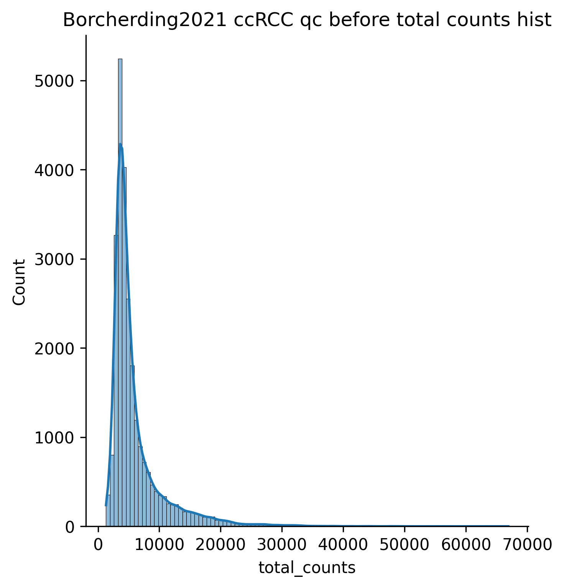 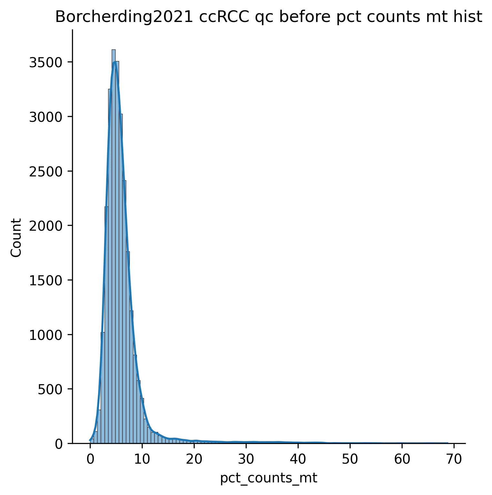 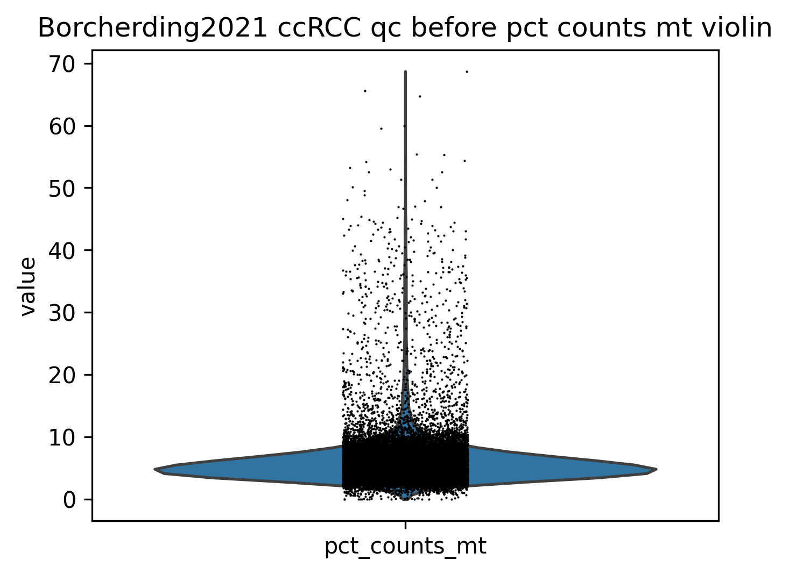 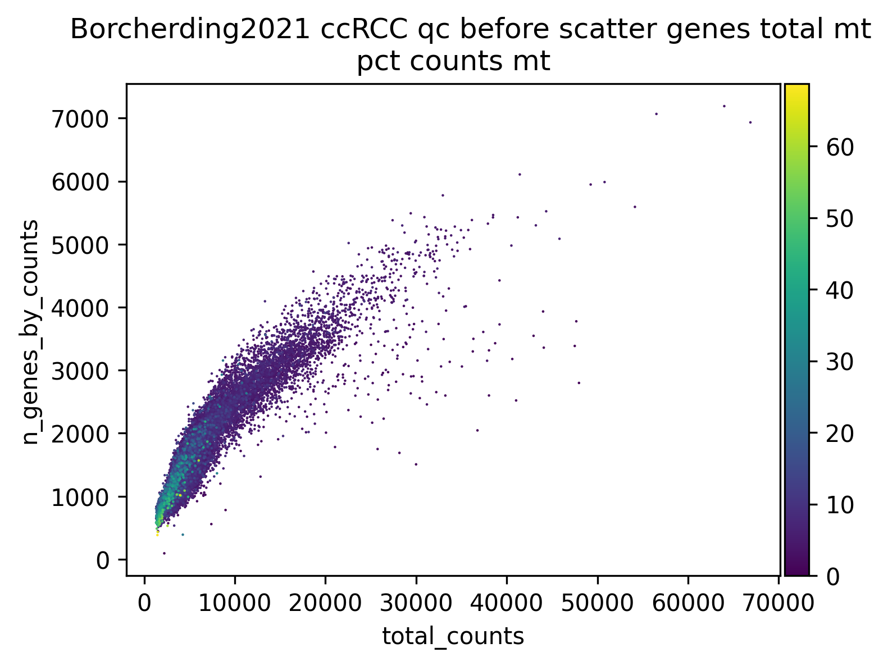


Per-sample QC on 'sample_id': 6 samples, 0 with < 100 cells
Number of count outliers with MAD > 5: 1579
Number of mitochondrial outliers with MAD > 5 or pct_counts_mt > 8: 3630
Count QC per sample
| index | sample | cells | count_outliers | mt_outliers | removed |
|---|---|---|---|---|---|
| 0 | GSM3440844 | 4859 | 203 | 196 | 344 |
| 1 | GSM3440845 | 4680 | 478 | 433 | 805 |
| 2 | GSM3440846 | 2715 | 370 | 686 | 839 |
| 3 | GSM3440847 | 5850 | 210 | 279 | 478 |
| 4 | GSM3440848 | 5125 | 134 | 1441 | 1486 |
| 5 | GSM3440849 | 2459 | 184 | 595 | 682 |
Filtered out outliers: 4634 (18.04%)
Filtering out genes expressed in less than 0 cells
Removed 0 genes (0.00%), 33660 kept
After count QC:
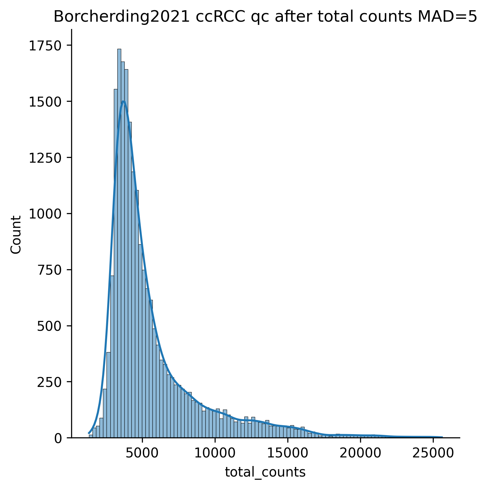 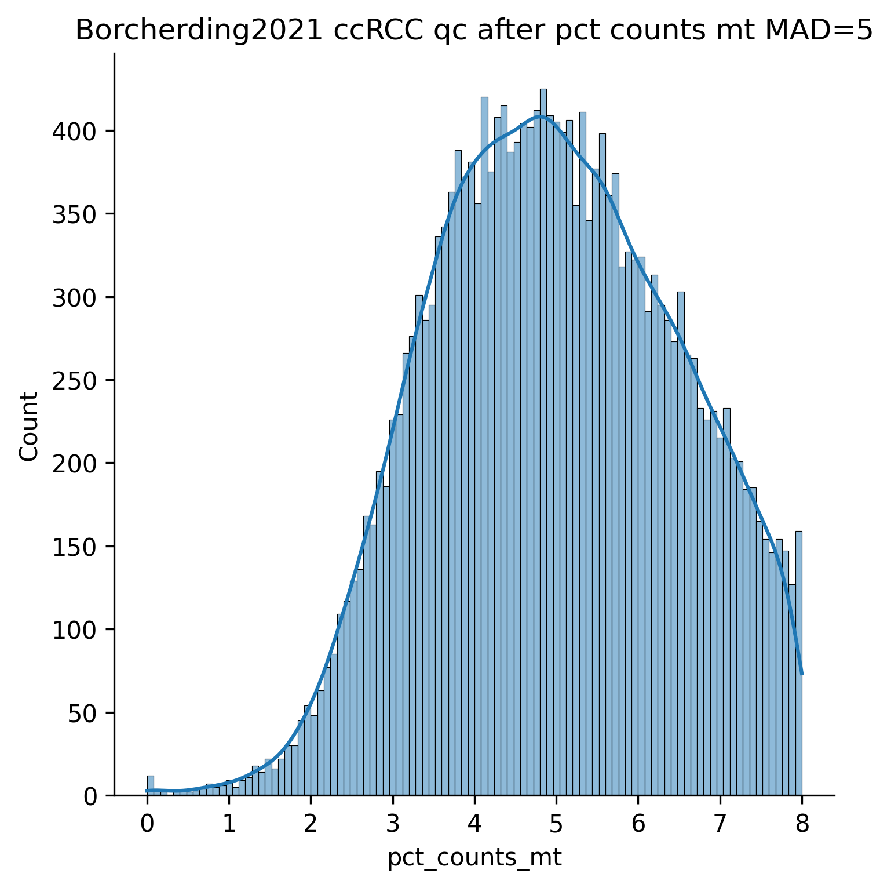 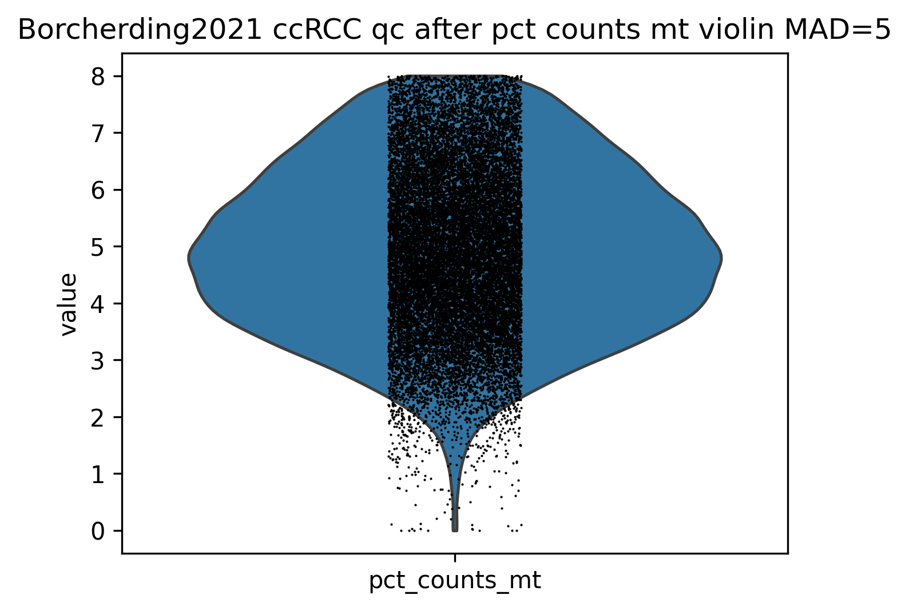 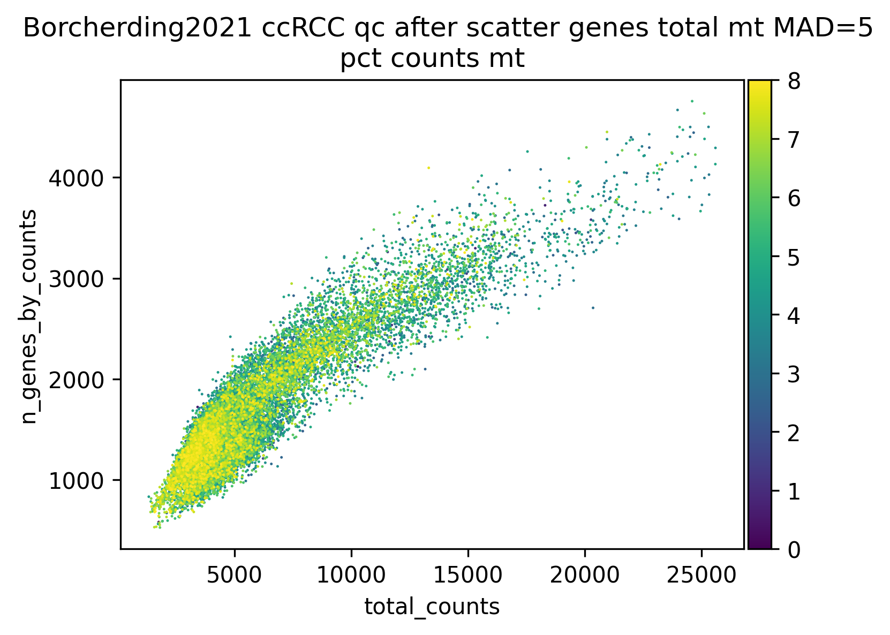


1.5.3. Doublet QC
Per-sample QC on 'sample_id': 6 samples, 0 with < 100 cells
Running scrublet with expected doublet rate 0.05 on 6 sample(s)
Scrublet per sample
| index | sample | cells | doublets | threshold_found |
|---|---|---|---|---|
| 0 | GSM3440844 | 4515 | 4 | True |
| 1 | GSM3440845 | 3875 | 20 | True |
| 2 | GSM3440846 | 1876 | 6 | True |
| 3 | GSM3440847 | 5372 | 191 | True |
| 4 | GSM3440848 | 3639 | 80 | True |
| 5 | GSM3440849 | 1777 | 22 | True |

There are 323 predicted doublets, applying filter
After doublet step: (20731, 33660) (removed 1.53% cells)
1.5.4. Gene exclusion
Excluding genes matching the following patterns:
Note: Showing at most 10 rows and 10 columns from data with 11 rows and 2 columns.
| mt_genes | ['MT-'] |
| ribo_genes | ['^RPS(?!6K)', '^RPL'] |
| hb_genes | ['^HBA|^HBB'] |
| stress_genes | ['G0S2', '^JUN', '^FOS', 'CDKN1A', '^ZFP36$', '^DUSP1$', '^TNFAIP3$', '^NR4A2$', '^DNAJB1$', '^HSPA1A$', '^HSPA1B$', '^HSPA6$'] |
| IFN_genes | ['^IRF(?!4$)', '^IFN(?!G$)'] |
| ccl_genes | ['^CCL(?!3|4|5)'] |
| MHC_genes | ['^HLA-(?!DR)[A-Z]'] |
| hist_genes | ['HIST'] |
| comp_genes | ['^C1Q'] |
| ig_genes | ['^IGH', '^IGK', '^IGL'] |
Removing 703 genes (2.09%)
Shape after exclusion panel filtering: (20731, 32957)
load_dataset
function: load_dataset parameters: filename: Agne_CD.raw_counts_stand.h5ad max_cells: 200000 cache_file: data/load_dataset_ece4a7a1b4a3.h5ad
load file 6: Agne_CD.raw_counts_stand.h5ad
file_version: 2026-10-06 12:31:32.239318799
Loaded 'Agne_CD.raw_counts_stand.h5ad' (backed): 4125 × 36346
Gene names: index → ENSG IDs (15319 without ensembl_id kept via symbol), dropped 0 duplicates → 36346 genes
Pre-computed QC metrics from gene_name column
1.5.5. Loaded: Agne_CD.raw_counts_stand.h5ad
Shape: 4125 cells × 36346 genes
layers: ['counts'] | obsm: []
obs columns
| index | column | dtype | n_unique | top values |
|---|---|---|---|---|
| 0 | study_name | category | 1 | CD (4125) |
| 1 | sample_id | category | 16 | CD_GI_7833 (1147), CD_GI_7738 (497), CD_TIP_652 (463) |
| 2 | batch | category | 7 | batch_pool1_run5 (1179), batch_pool2_run5 (938), batch_pool1_run1 (858) |
| 3 | donor | category | 16 | CD_GI_7833 (1147), CD_GI_7738 (497), CD_TIP_652 (463) |
| 4 | tissue | category | 1 | small_intestine (4125) |
| 5 | disease | category | 2 | CrD (3863), H (262) |
| 6 | tissue_group | category | 1 | tissue (4125) |
| 7 | disease_group | category | 2 | IMID (3863), NORMAL (262) |
| 8 | tissue_detail | category | 1 | ileal/epithelium (4125) |
| 9 | disease_detail | category | 6 | stricturing (1802), inflammatory (895), fistulating (471) |
| 10 | chemistry | category | 1 | 10x_5p_v1 (4125) |
| 11 | seq_prime | category | 1 | 5prime (4125) |
| 12 | n_genes_by_counts | int32 | min=458 mean=1.38e+03 max=4.73e+03 | |
| 13 | log1p_n_genes_by_counts | float64 | min=6.13 mean=7.16 max=8.46 | |
| 14 | total_counts | float64 | min=956 mean=2.23e+03 max=4.18e+03 | |
| 15 | log1p_total_counts | float64 | min=6.86 mean=7.69 max=8.34 | |
| 16 | pct_counts_in_top_50_genes | float64 | min=3.26 mean=7.33 max=14.5 | |
| 17 | pct_counts_in_top_100_genes | float64 | min=6.04 mean=13.1 max=25.3 | |
| 18 | pct_counts_in_top_200_genes | float64 | min=11 mean=23.3 max=45.5 | |
| 19 | pct_counts_in_top_500_genes | float64 | min=23.2 mean=48.3 max=100 | |
| 20 | total_counts_mt | float64 | min=0 mean=2.78 max=10.2 | |
| 21 | log1p_total_counts_mt | float64 | min=0 mean=1.2 max=2.42 | |
| 22 | pct_counts_mt | float64 | min=0 mean=0.126 max=0.657 | |
| 23 | total_counts_ribo | float64 | min=0 mean=0.119 max=3.43 | |
| 24 | log1p_total_counts_ribo | float64 | min=0 mean=0.0726 max=1.49 | |
| 25 | pct_counts_ribo | float64 | min=0 mean=0.00526 max=0.174 | |
| 26 | total_counts_hb | float64 | min=0 mean=0.408 max=8.76 | |
| 27 | log1p_total_counts_hb | float64 | min=0 mean=0.235 max=2.28 | |
| 28 | pct_counts_hb | float64 | min=0 mean=0.0182 max=0.459 |
var columns
Note: Showing at most 10 rows and 10 columns from data with 14 rows and 4 columns.
| index | column | dtype | n_unique | sample values |
|---|---|---|---|---|
| 0 | gene_name | object | 36346 | AC007325.2 (1), MIR1302-2HG (1), FAM138A (1) |
| 1 | ensembl_id | category | 21027 | ENSG00000310560 (1), ENSG00000000003 (1), ENSG00000000005 (1) |
| 2 | ensembl_source | category | 5 | direct_hgnc_exact (21019), unmapped (13441), ambiguous_direct_hgnc_exact (1878) |
| 3 | ensembl_gene_tag | category | 2 | single_gene (21026), multiple_genes (1) |
| 4 | mt | bool | min=0 mean=5.5e-05 max=1 | |
| 5 | ribo | bool | min=0 mean=0.00033 max=1 | |
| 6 | hb | bool | min=0 mean=0.00033 max=1 | |
| 7 | n_cells_by_counts | int64 | min=0 mean=156 max=3.91e+03 | |
| 8 | mean_counts | float64 | min=0 mean=0.0614 max=3.26 | |
| 9 | log1p_mean_counts | float64 | min=0 mean=0.0508 max=1.45 |
recover_counts_from_log
function: recover_counts_from_log parameters: min_integer_frac: 0.99 tolerance: 0.05 cache_file: data/recover_counts_from_log_eb5d5f4ab005.h5ad
Count recovery: 100.00% of values above one read are whole numbers (±0.05; required 99%)
Count recovery OK: median 1946 counts per cell, max value 1469
set_columns
function: set_columns parameters: overwrite: false values: {"data_source": "in-house (Agne)", "study_id": "Agne_CD"} cache_file: data/set_columns_3f21a4430ea8.h5ad
set_columns: study_id = 'Agne_CD'
set_columns: data_source = 'in-house (Agne)'
qc_full
function: qc_full parameters: excluded_gene_patterns: null expected_doublet_rate: 0.05 frac_treshold: 0.05 low_count_treshold: 1000 mad_outlier_var: 5 min_cells_per_gene: 0 min_cells_per_sample: 100 mitochondria_cutoff_percentage: 8 name: Agne_CD_ileum sample_col: sample_id cache_file: data/qc_full_3648f86c8d83.h5ad
1.6. Quality Control
1.6.1. Ambient RNA QC
Checking if a cleanup is necessary, flagging cells with less than 1000 counts as potential ambient RNA contamination
Potential RNA contamination detected (7.3% of cells < 1000 counts)
IGNORE_AMBIENT_RNA set — skipping cleanup and continuing (count QC still removes low-count cells)
1.6.2. Count QC
| index | count | mean | std | min | 25% | 50% | 75% | max |
|---|---|---|---|---|---|---|---|---|
| total_counts | 4125 | 2165.15 | 1097.94 | 517 | 1431 | 1946 | 2611 | 11926 |
| n_genes_by_counts | 4125 | 1375.36 | 505.13 | 458 | 1018 | 1297 | 1644 | 4730 |
| pct_counts_mt | 4125 | 0.23 | 0.32 | 0 | 0.07 | 0.16 | 0.29 | 7.11 |
| pct_counts_ribo | 4125 | 0 | 0.02 | 0 | 0 | 0 | 0 | 0.21 |
| pct_counts_hb | 4125 | 0.02 | 0.03 | 0 | 0 | 0 | 0 | 0.67 |
| pct_counts_in_top_20_genes | 4125 | 12.02 | 4 | 4.37 | 9.32 | 11.13 | 13.64 | 57.47 |
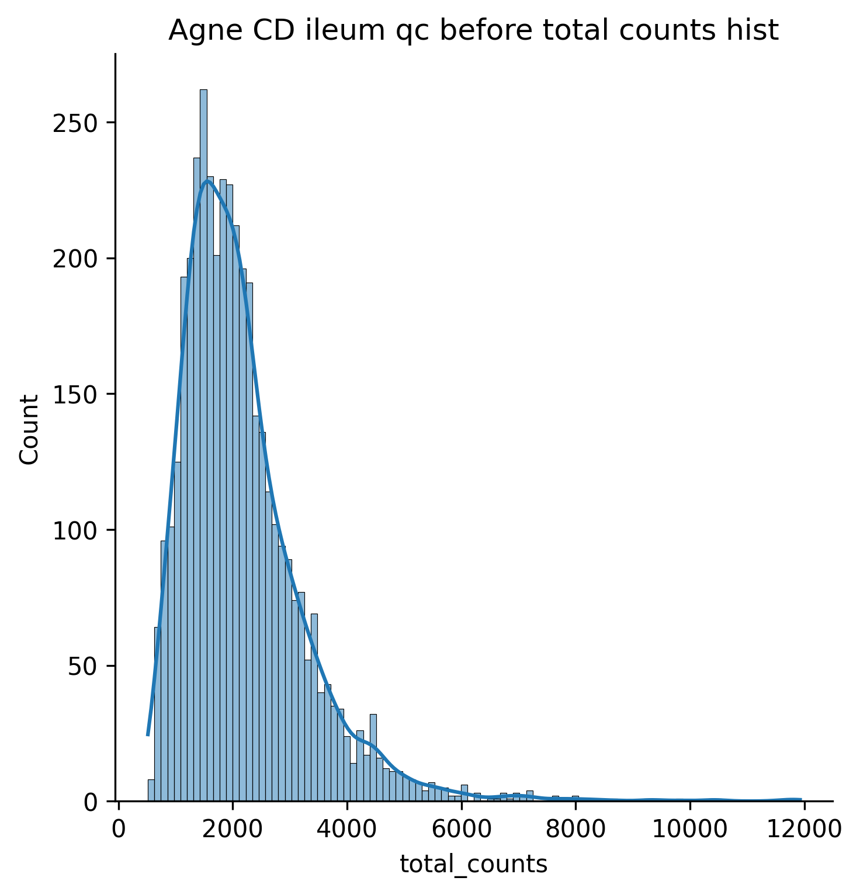 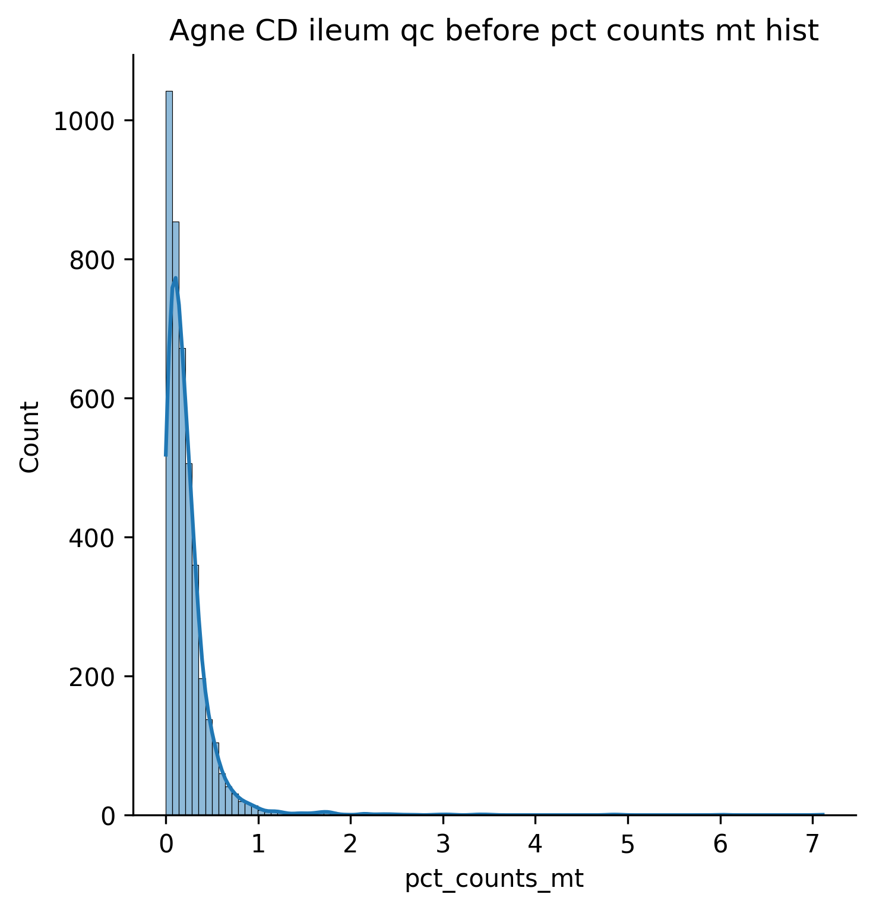 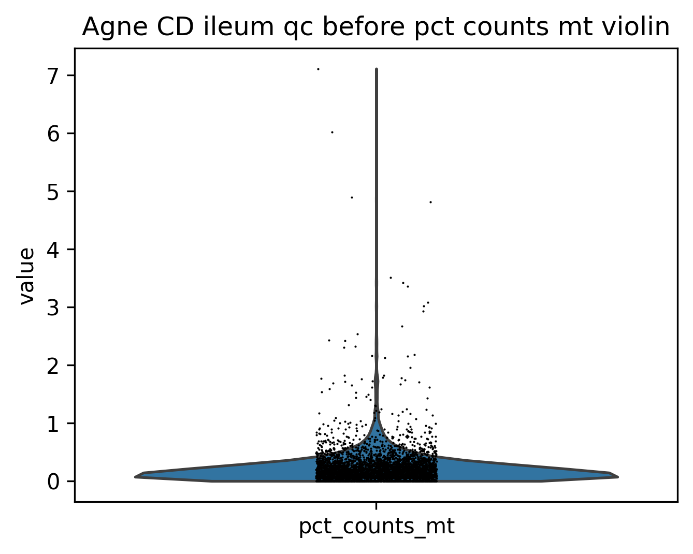 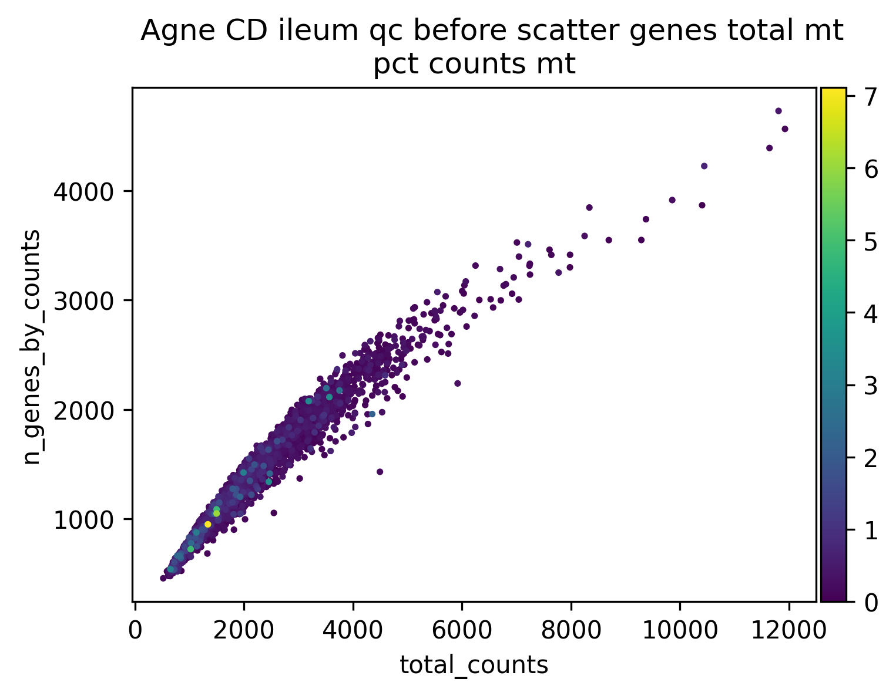


Per-sample QC on 'sample_id': 16 samples, 6 with < 100 cells
Number of count outliers with MAD > 5: 134
Number of mitochondrial outliers with MAD > 5 or pct_counts_mt > 8: 156
Count QC per sample
| index | sample | cells | count_outliers | mt_outliers | removed |
|---|---|---|---|---|---|
| 0 | (small samples) | 147 | 4 | 20 | 24 |
| 1 | CD_GI_6788 | 390 | 10 | 23 | 32 |
| 2 | CD_GI_7071 | 314 | 4 | 16 | 20 |
| 3 | CD_GI_7738 | 497 | 8 | 16 | 24 |
| 4 | CD_GI_7833 | 1147 | 49 | 31 | 79 |
| 5 | CD_TIP_420 | 393 | 12 | 10 | 22 |
| 6 | CD_TIP_473 | 340 | 16 | 7 | 22 |
| 7 | CD_TIP_522 | 128 | 4 | 0 | 4 |
| 8 | CD_TIP_525 | 114 | 5 | 6 | 10 |
| 9 | CD_TIP_535 | 192 | 9 | 7 | 16 |
| 10 | CD_TIP_652 | 463 | 13 | 20 | 31 |
Filtered out outliers: 284 (6.88%)
Filtering out genes expressed in less than 0 cells
Removed 0 genes (0.00%), 36346 kept
After count QC:
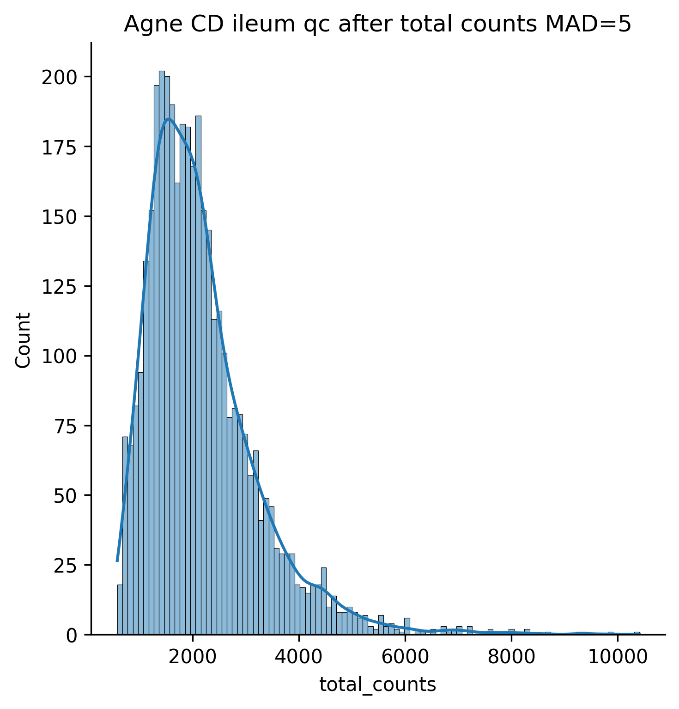 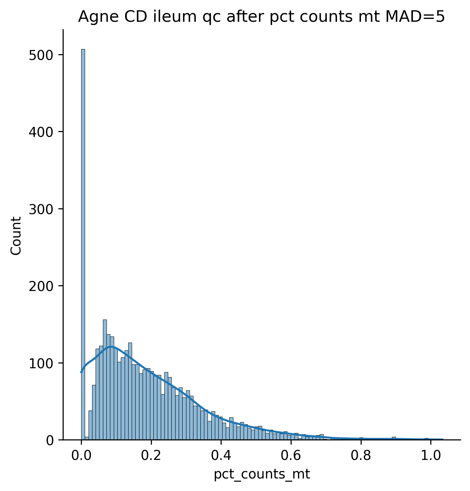 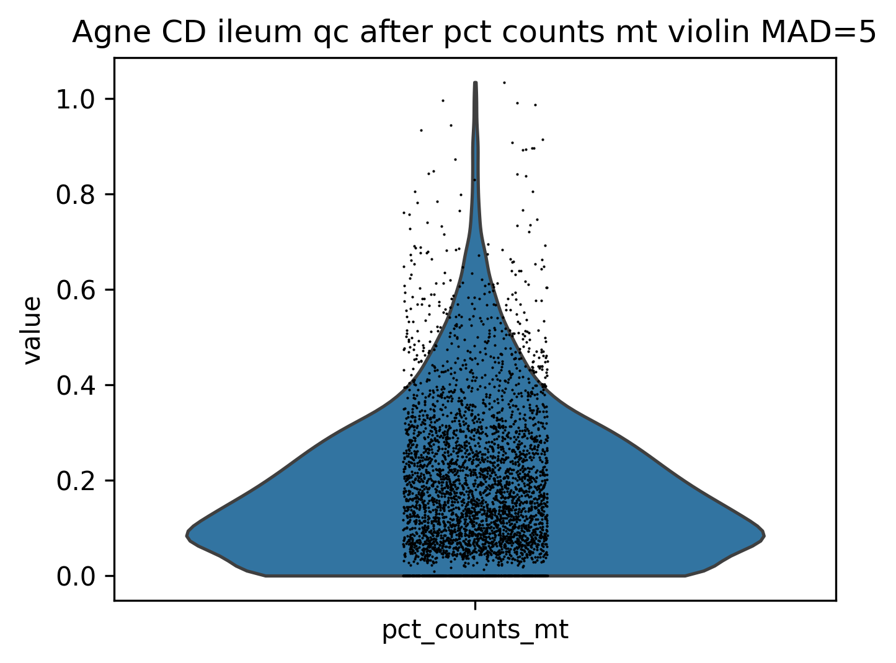 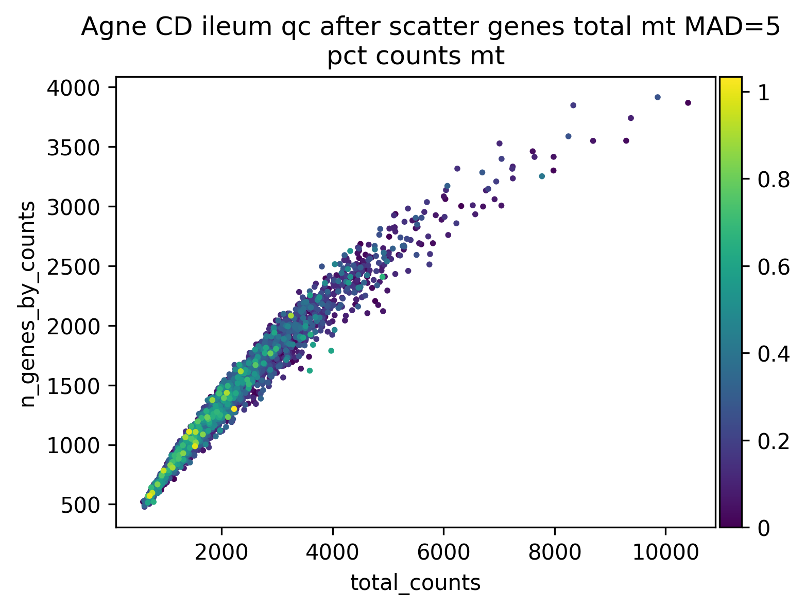


1.6.3. Doublet QC
Per-sample QC on 'sample_id': 16 samples, 6 with < 100 cells
Running scrublet with expected doublet rate 0.05 on 10 sample(s)
Scrublet per sample
| index | sample | cells | doublets | threshold_found |
|---|---|---|---|---|
| 0 | CD_GI_6788 | 358 | 3 | True |
| 1 | CD_GI_7071 | 294 | 23 | True |
| 2 | CD_GI_7738 | 473 | 7 | True |
| 3 | CD_GI_7833 | 1068 | 8 | True |
| 4 | CD_TIP_420 | 371 | 6 | True |
| 5 | CD_TIP_473 | 318 | 3 | True |
| 6 | CD_TIP_522 | 124 | 5 | True |
| 7 | CD_TIP_525 | 104 | 14 | True |
| 8 | CD_TIP_535 | 176 | 16 | True |
| 9 | CD_TIP_652 | 432 | 12 | True |

There are 97 predicted doublets, applying filter
After doublet step: (3744, 36346) (removed 2.53% cells)
1.6.4. Gene exclusion
Excluding genes matching the following patterns:
Note: Showing at most 10 rows and 10 columns from data with 11 rows and 2 columns.
| mt_genes | ['MT-'] |
| ribo_genes | ['^RPS(?!6K)', '^RPL'] |
| hb_genes | ['^HBA|^HBB'] |
| stress_genes | ['G0S2', '^JUN', '^FOS', 'CDKN1A', '^ZFP36$', '^DUSP1$', '^TNFAIP3$', '^NR4A2$', '^DNAJB1$', '^HSPA1A$', '^HSPA1B$', '^HSPA6$'] |
| IFN_genes | ['^IRF(?!4$)', '^IFN(?!G$)'] |
| ccl_genes | ['^CCL(?!3|4|5)'] |
| MHC_genes | ['^HLA-(?!DR)[A-Z]'] |
| hist_genes | ['HIST'] |
| comp_genes | ['^C1Q'] |
| ig_genes | ['^IGH', '^IGK', '^IGL'] |
Removing 607 genes (1.67%)
Shape after exclusion panel filtering: (3744, 35739)
load_dataset
function: load_dataset parameters: filename: Agne_CD_merad.raw_counts_stand.h5ad max_cells: 200000 cache_file: data/load_dataset_629540954e28.h5ad
load file 7: Agne_CD_merad.raw_counts_stand.h5ad
file_version: 2026-10-06 12:31:31.569275871
Loaded 'Agne_CD_merad.raw_counts_stand.h5ad' (backed): 51419 × 33538
Gene names: index → ENSG IDs (13057 without ensembl_id kept via symbol), dropped 0 duplicates → 33538 genes
Pre-computed QC metrics from gene_name column
1.6.5. Loaded: Agne_CD_merad.raw_counts_stand.h5ad
Shape: 51419 cells × 33538 genes
layers: ['counts'] | obsm: []
obs columns
| index | column | dtype | n_unique | top values |
|---|---|---|---|---|
| 0 | study_id | category | 1 | CD_merad (51419) |
| 1 | sample_id | category | 22 | SAMN12356568 (6358), SAMN12356569 (5027), SAMN12356574 (4661) |
| 2 | donor | category | 11 | CD_merad_P14 (11385), CD_merad_PX (7010), CD_merad_P11 (6711) |
| 3 | tissue | category | 1 | small_intestine (51419) |
| 4 | disease | category | 1 | CrD (51419) |
| 5 | tissue_group | category | 1 | tissue (51419) |
| 6 | disease_group | category | 1 | IMID (51419) |
| 7 | disease_detail | category | 2 | inflammed (28321), uninflammed (23098) |
| 8 | chemistry | category | 2 | 10x_3p_V2 (47715), 10x_3p_V1 (3704) |
| 9 | seq_prime | category | 1 | 3prime (51419) |
| 10 | tissue_detail | category | 1 | ileal (51419) |
| 11 | n_genes_by_counts | int32 | min=501 mean=833 max=5.62e+03 | |
| 12 | log1p_n_genes_by_counts | float64 | min=6.22 mean=6.66 max=8.63 | |
| 13 | total_counts | float64 | min=800 mean=3.65e+03 max=5.77e+04 | |
| 14 | log1p_total_counts | float64 | min=6.69 mean=7.93 max=11 | |
| 15 | pct_counts_in_top_50_genes | float64 | min=25.9 mean=53.6 max=95 | |
| 16 | pct_counts_in_top_100_genes | float64 | min=35.9 mean=66.4 max=96 | |
| 17 | pct_counts_in_top_200_genes | float64 | min=47.6 mean=76.6 max=97.2 | |
| 18 | pct_counts_in_top_500_genes | float64 | min=65.1 mean=90.8 max=100 | |
| 19 | total_counts_mt | float64 | min=0 mean=110 max=2.52e+03 | |
| 20 | log1p_total_counts_mt | float64 | min=0 mean=4.49 max=7.83 | |
| 21 | pct_counts_mt | float64 | min=0 mean=3.63 max=9.8 | |
| 22 | total_counts_ribo | float64 | min=20 mean=897 max=2.39e+04 | |
| 23 | log1p_total_counts_ribo | float64 | min=3.04 mean=6.64 max=10.1 | |
| 24 | pct_counts_ribo | float64 | min=0.643 mean=31.2 max=64.2 | |
| 25 | total_counts_hb | float64 | min=0 mean=0.264 max=1.39e+03 | |
| 26 | log1p_total_counts_hb | float64 | min=0 mean=0.0665 max=7.24 | |
| 27 | pct_counts_hb | float64 | min=0 mean=0.00791 max=47.9 |
var columns
Note: Showing at most 10 rows and 10 columns from data with 14 rows and 4 columns.
| index | column | dtype | n_unique | sample values |
|---|---|---|---|---|
| 0 | gene_name | object | 33538 | FAM231C (1), MIR1302-2HG (1), MT-CO1 (1) |
| 1 | ensembl_id | category | 20481 | ENSG00000310560 (1), ENSG00000284848 (1), ENSG00000284862 (1) |
| 2 | ensembl_source | category | 5 | direct_hgnc_exact (20471), unmapped (11191), ambiguous_direct_hgnc_exact (1866) |
| 3 | ensembl_gene_tag | category | 2 | single_gene (20480), multiple_genes (1) |
| 4 | mt | bool | min=0 mean=0.000388 max=1 | |
| 5 | ribo | bool | min=0 mean=0.0031 max=1 | |
| 6 | hb | bool | min=0 mean=0.000358 max=1 | |
| 7 | n_cells_by_counts | int64 | min=0 mean=1.28e+03 max=5.14e+04 | |
| 8 | mean_counts | float64 | min=0 mean=0.109 max=463 | |
| 9 | log1p_mean_counts | float64 | min=0 mean=0.036 max=6.14 |
set_columns
function: set_columns parameters: overwrite: false values: {"cellranger": "2.0", "data_source": "published (PMID 31474370)"} cache_file: data/set_columns_0a4f1990ff94.h5ad
set_columns: data_source = 'published (PMID 31474370)'
set_columns: cellranger = '2.0'
qc_full
function: qc_full parameters: excluded_gene_patterns: null expected_doublet_rate: 0.05 frac_treshold: 0.05 low_count_treshold: 1000 mad_outlier_var: 5 min_cells_per_gene: 0 min_cells_per_sample: 100 mitochondria_cutoff_percentage: 8 name: Martin_CD_ileum sample_col: sample_id cache_file: data/qc_full_537915e00fbe.h5ad
1.7. Quality Control
1.7.1. Ambient RNA QC
Checking if a cleanup is necessary, flagging cells with less than 1000 counts as potential ambient RNA contamination
No significant RNA contamination detected, skipping cleanup
1.7.2. Count QC
| index | count | mean | std | min | 25% | 50% | 75% | max |
|---|---|---|---|---|---|---|---|---|
| total_counts | 51419 | 3649 | 3586.31 | 800 | 1743 | 2343 | 3727 | 57684 |
| n_genes_by_counts | 51419 | 833.20 | 362.43 | 501 | 603 | 722 | 919 | 5623 |
| pct_counts_mt | 51419 | 3.63 | 1.79 | 0 | 2.36 | 3.42 | 4.65 | 9.80 |
| pct_counts_ribo | 51419 | 31.21 | 12.92 | 0.64 | 23.20 | 33.14 | 40.63 | 64.18 |
| pct_counts_hb | 51419 | 0.01 | 0.35 | 0 | 0 | 0 | 0 | 47.93 |
| pct_counts_in_top_20_genes | 51419 | 38.56 | 17.02 | 15.57 | 29.04 | 31.74 | 35.87 | 93.56 |


Per-sample QC on 'sample_id': 22 samples, 0 with < 100 cells
Number of count outliers with MAD > 5: 9035
Number of mitochondrial outliers with MAD > 5 or pct_counts_mt > 8: 1522
Count QC per sample
| index | sample | cells | count_outliers | mt_outliers | removed |
|---|---|---|---|---|---|
| 0 | SAMN12356568 | 6358 | 1087 | 157 | 1230 |
| 1 | SAMN12356569 | 5027 | 577 | 298 | 844 |
| 2 | SAMN12356570 | 3176 | 294 | 113 | 397 |
| 3 | SAMN12356571 | 3834 | 475 | 135 | 594 |
| 4 | SAMN12356572 | 524 | 181 | 1 | 182 |
| 5 | SAMN12356573 | 1405 | 286 | 39 | 321 |
| 6 | SAMN12356574 | 4661 | 957 | 64 | 1017 |
| 7 | SAMN12356575 | 2050 | 531 | 22 | 546 |
| 8 | SAMN12356576 | 1866 | 252 | 37 | 285 |
| 9 | SAMN12356577 | 2341 | 624 | 24 | 646 |
| 10 | SAMN12356578 | 2538 | 448 | 51 | 486 |
| 11 | SAMN12356579 | 1726 | 209 | 31 | 233 |
| 12 | SAMN12356580 | 1698 | 197 | 30 | 217 |
| 13 | SAMN12356581 | 2042 | 557 | 28 | 582 |
| 14 | SAMN12356582 | 168 | 52 | 2 | 54 |
| 15 | SAMN12356583 | 317 | 99 | 4 | 103 |
| 16 | SAMN12356584 | 2430 | 263 | 152 | 302 |
| 17 | SAMN12356585 | 1274 | 419 | 5 | 424 |
| 18 | SAMN12356586 | 2741 | 541 | 123 | 647 |
| 19 | SAMN12356587 | 2305 | 289 | 108 | 386 |
| 20 | SAMN12356588 | 1691 | 453 | 59 | 497 |
| 21 | SAMN12356589 | 1247 | 244 | 39 | 280 |
Filtered out outliers: 10273 (19.98%)
Filtering out genes expressed in less than 0 cells
Removed 0 genes (0.00%), 33538 kept
After count QC:


1.7.3. Doublet QC
Per-sample QC on 'sample_id': 22 samples, 0 with < 100 cells
Running scrublet with expected doublet rate 0.05 on 22 sample(s)
Scrublet per sample
| index | sample | cells | doublets | threshold_found |
|---|---|---|---|---|
| 0 | SAMN12356568 | 5128 | 20 | True |
| 1 | SAMN12356569 | 4183 | 16 | True |
| 2 | SAMN12356570 | 2779 | 10 | True |
| 3 | SAMN12356571 | 3240 | 15 | True |
| 4 | SAMN12356572 | 342 | 8 | True |
| 5 | SAMN12356573 | 1084 | 8 | True |
| 6 | SAMN12356574 | 3644 | 1 | True |
| 7 | SAMN12356575 | 1504 | 4 | True |
| 8 | SAMN12356576 | 1581 | 9 | True |
| 9 | SAMN12356577 | 1695 | 3 | True |
| 10 | SAMN12356578 | 2052 | 10 | True |
| 11 | SAMN12356579 | 1493 | 10 | True |
| 12 | SAMN12356580 | 1481 | 6 | True |
| 13 | SAMN12356581 | 1460 | 5 | True |
| 14 | SAMN12356582 | 114 | 40 | True |
| 15 | SAMN12356583 | 214 | 6 | True |
| 16 | SAMN12356584 | 2128 | 4 | True |
| 17 | SAMN12356585 | 850 | 3 | True |
| 18 | SAMN12356586 | 2094 | 3 | True |
| 19 | SAMN12356587 | 1919 | 8 | True |
| 20 | SAMN12356588 | 1194 | 6 | True |
| 21 | SAMN12356589 | 967 | 4 | True |

There are 199 predicted doublets, applying filter
After doublet step: (40947, 33538) (removed 0.48% cells)
1.7.4. Gene exclusion
Excluding genes matching the following patterns:
Note: Showing at most 10 rows and 10 columns from data with 11 rows and 2 columns.
| mt_genes | ['MT-'] |
| ribo_genes | ['^RPS(?!6K)', '^RPL'] |
| hb_genes | ['^HBA|^HBB'] |
| stress_genes | ['G0S2', '^JUN', '^FOS', 'CDKN1A', '^ZFP36$', '^DUSP1$', '^TNFAIP3$', '^NR4A2$', '^DNAJB1$', '^HSPA1A$', '^HSPA1B$', '^HSPA6$'] |
| IFN_genes | ['^IRF(?!4$)', '^IFN(?!G$)'] |
| ccl_genes | ['^CCL(?!3|4|5)'] |
| MHC_genes | ['^HLA-(?!DR)[A-Z]'] |
| hist_genes | ['HIST'] |
| comp_genes | ['^C1Q'] |
| ig_genes | ['^IGH', '^IGK', '^IGL'] |
Removing 713 genes (2.13%)
Shape after exclusion panel filtering: (40947, 32825)
load_dataset
function: load_dataset parameters: filename: GSE144469.raw_counts_stand.h5ad max_cells: 200000 cache_file: data/load_dataset_f9a2abdb6020.h5ad
load file 8: GSE144469.raw_counts_stand.h5ad
file_version: 2026-10-06 12:31:52.123592475
Loaded 'GSE144469.raw_counts_stand.h5ad' (backed): 81490 × 33538
Gene names: index → ENSG IDs (13057 without ensembl_id kept via symbol), dropped 0 duplicates → 33538 genes
Pre-computed QC metrics from gene_name column
1.7.5. Loaded: GSE144469.raw_counts_stand.h5ad
Shape: 81490 cells × 33538 genes
layers: ['counts'] | obsm: []
obs columns
| index | column | dtype | n_unique | top values |
|---|---|---|---|---|
| 0 | study_name | category | 1 | GSE144469 (81490) |
| 1 | sample_id | category | 22 | GSM4288845 (4848), GSM4288828 (4511), GSM4288827 (4209) |
| 2 | donor | category | 22 | GSE144469_CT6 (4848), GSE144469_C3 (4511), GSE144469_C2 (4209) |
| 3 | tissue | category | 1 | colon (81490) |
| 4 | disease | category | 2 | H (50286), Colitis (31204) |
| 5 | tissue_group | category | 2 | tissue (50286), TIL (20416) |
| 6 | disease_group | category | 2 | NORMAL (50286), IMID (31204) |
| 7 | tissue_detail | category | 5 | Descending, sigmoidal colon/rectum (65592), Ascending, transverse, descending, sigmoidal colon/rectum (4209), Ascending, Descending, sigmoidal colon/rectum (4049) |
| 8 | disease_detail | category | 2 | CPI-treated (52984), no-treatment (28506) |
| 9 | chemistry | category | 1 | 10x_5p_v1 (81490) |
| 10 | seq_prime | category | 1 | 5prime (81490) |
| 11 | n_genes_by_counts | int32 | min=13 mean=1.97e+03 max=8.88e+03 | |
| 12 | log1p_n_genes_by_counts | float64 | min=2.64 mean=7.46 max=9.09 | |
| 13 | total_counts | float32 | min=500 mean=6.28e+03 max=1.12e+05 | |
| 14 | log1p_total_counts | float32 | min=6.22 mean=8.53 max=11.6 | |
| 15 | pct_counts_in_top_50_genes | float64 | min=18.3 mean=35 max=100 | |
| 16 | pct_counts_in_top_100_genes | float64 | min=26.3 mean=47.2 max=100 | |
| 17 | pct_counts_in_top_200_genes | float64 | min=36.8 mean=58.3 max=100 | |
| 18 | pct_counts_in_top_500_genes | float64 | min=52.4 mean=72.8 max=100 | |
| 19 | total_counts_mt | float32 | min=0 mean=332 max=2.48e+04 | |
| 20 | log1p_total_counts_mt | float32 | min=0 mean=5.56 max=10.1 | |
| 21 | pct_counts_mt | float32 | min=0 mean=7.32 max=100 | |
| 22 | total_counts_ribo | float32 | min=0 mean=1.49e+03 max=3.68e+04 | |
| 23 | log1p_total_counts_ribo | float32 | min=0 mean=6.93 max=10.5 | |
| 24 | pct_counts_ribo | float32 | min=0 mean=23.6 max=54.7 | |
| 25 | total_counts_hb | float32 | min=0 mean=0.244 max=32 | |
| 26 | log1p_total_counts_hb | float32 | min=0 mean=0.149 max=3.5 | |
| 27 | pct_counts_hb | float32 | min=0 mean=0.00376 max=0.397 |
var columns
Note: Showing at most 10 rows and 10 columns from data with 14 rows and 4 columns.
| index | column | dtype | n_unique | sample values |
|---|---|---|---|---|
| 0 | gene_name | object | 33538 | FAM231C (1), MIR1302-2HG (1), MT-CO1 (1) |
| 1 | ensembl_id | category | 20481 | ENSG00000310560 (1), ENSG00000284848 (1), ENSG00000284862 (1) |
| 2 | ensembl_source | category | 5 | direct_hgnc_exact (20471), unmapped (11191), ambiguous_direct_hgnc_exact (1866) |
| 3 | ensembl_gene_tag | category | 2 | single_gene (20480), multiple_genes (1) |
| 4 | mt | bool | min=0 mean=0.000388 max=1 | |
| 5 | ribo | bool | min=0 mean=0.0031 max=1 | |
| 6 | hb | bool | min=0 mean=0.000358 max=1 | |
| 7 | n_cells_by_counts | int64 | min=0 mean=4.79e+03 max=8.14e+04 | |
| 8 | mean_counts | float64 | min=0 mean=0.187 max=89.1 | |
| 9 | log1p_mean_counts | float64 | min=0 mean=0.0835 max=4.5 |
set_columns
function: set_columns parameters: overwrite: false values: {"cellranger": "3.0.2", "data_source": "GEO GSE144469", "study_id": "Luoma2020"} cache_file: data/set_columns_e895118e8f7b.h5ad
set_columns: study_id = 'Luoma2020'
set_columns: data_source = 'GEO GSE144469'
set_columns: cellranger = '3.0.2'
set_columns
function: set_columns parameters: overwrite: true values: {"tissue_group": "tissue"} cache_file: data/set_columns_8c0dea15568b.h5ad
set_columns: tissue_group was {'tissue': 50286, 'TIL': 20416, np.str_('nan'): 10788} → 'tissue'
qc_full
function: qc_full parameters: excluded_gene_patterns: null expected_doublet_rate: 0.05 frac_treshold: 0.05 low_count_treshold: 1000 mad_outlier_var: 5 min_cells_per_gene: 0 min_cells_per_sample: 100 mitochondria_cutoff_percentage: 8 name: Luoma2020_Colitis_colon sample_col: sample_id cache_file: data/qc_full_69881843874a.h5ad
1.8. Quality Control
1.8.1. Ambient RNA QC
Checking if a cleanup is necessary, flagging cells with less than 1000 counts as potential ambient RNA contamination
No significant RNA contamination detected, skipping cleanup
1.8.2. Count QC
| index | count | mean | std | min | 25% | 50% | 75% | max |
|---|---|---|---|---|---|---|---|---|
| total_counts | 81490 | 6279.18 | 5384.61 | 500 | 3973 | 5183 | 6789 | 111766 |
| n_genes_by_counts | 81490 | 1972.26 | 862.42 | 13 | 1540 | 1858 | 2268 | 8882 |
| pct_counts_mt | 81490 | 7.32 | 11.73 | 0 | 3.49 | 4.69 | 6.49 | 100 |
| pct_counts_ribo | 81490 | 23.64 | 8.91 | 0 | 19.04 | 24.33 | 29.61 | 54.72 |
| pct_counts_hb | 81490 | 0 | 0.01 | 0 | 0 | 0 | 0 | 0.40 |
| pct_counts_in_top_20_genes | 81490 | 22.08 | 10.80 | 10.36 | 18.29 | 19.80 | 21.57 | 100 |


Per-sample QC on 'sample_id': 22 samples, 0 with < 100 cells
Number of count outliers with MAD > 5: 8346
Number of mitochondrial outliers with MAD > 5 or pct_counts_mt > 8: 12878
Count QC per sample
| index | sample | cells | count_outliers | mt_outliers | removed |
|---|---|---|---|---|---|
| 0 | GSM4288826 | 3862 | 453 | 754 | 793 |
| 1 | GSM4288827 | 4209 | 302 | 369 | 421 |
| 2 | GSM4288828 | 4511 | 403 | 517 | 617 |
| 3 | GSM4288829 | 3694 | 374 | 639 | 767 |
| 4 | GSM4288830 | 4140 | 376 | 279 | 466 |
| 5 | GSM4288831 | 3293 | 391 | 427 | 543 |
| 6 | GSM4288832 | 3717 | 390 | 329 | 486 |
| 7 | GSM4288833 | 3778 | 320 | 413 | 485 |
| 8 | GSM4288834 | 3135 | 275 | 409 | 527 |
| 9 | GSM4288835 | 4049 | 446 | 919 | 992 |
| 10 | GSM4288836 | 3078 | 521 | 785 | 818 |
| 11 | GSM4288837 | 3784 | 424 | 594 | 686 |
| 12 | GSM4288838 | 3534 | 404 | 413 | 552 |
| 13 | GSM4288839 | 4200 | 335 | 533 | 678 |
| 14 | GSM4288840 | 3937 | 358 | 462 | 530 |
| 15 | GSM4288841 | 2962 | 374 | 446 | 501 |
| 16 | GSM4288842 | 3896 | 357 | 537 | 647 |
| 17 | GSM4288843 | 2740 | 309 | 409 | 481 |
| 18 | GSM4288844 | 3079 | 457 | 852 | 940 |
| 19 | GSM4288845 | 4848 | 413 | 1349 | 1445 |
| 20 | GSM4288846 | 3612 | 308 | 729 | 816 |
| 21 | GSM4288847 | 3432 | 356 | 714 | 781 |
Filtered out outliers: 14972 (18.37%)
Filtering out genes expressed in less than 0 cells
Removed 0 genes (0.00%), 33538 kept
After count QC:


1.8.3. Doublet QC
Per-sample QC on 'sample_id': 22 samples, 0 with < 100 cells
Running scrublet with expected doublet rate 0.05 on 22 sample(s)
Scrublet per sample
| index | sample | cells | doublets | threshold_found |
|---|---|---|---|---|
| 0 | GSM4288826 | 3069 | 7 | True |
| 1 | GSM4288827 | 3788 | 1 | True |
| 2 | GSM4288828 | 3894 | 6 | True |
| 3 | GSM4288829 | 2927 | 1 | True |
| 4 | GSM4288830 | 3674 | 10 | True |
| 5 | GSM4288831 | 2750 | 3 | True |
| 6 | GSM4288832 | 3231 | 6 | True |
| 7 | GSM4288833 | 3293 | 5 | True |
| 8 | GSM4288834 | 2608 | 10 | True |
| 9 | GSM4288835 | 3057 | 3 | True |
| 10 | GSM4288836 | 2260 | 13 | True |
| 11 | GSM4288837 | 3098 | 6 | True |
| 12 | GSM4288838 | 2982 | 4 | True |
| 13 | GSM4288839 | 3522 | 2 | True |
| 14 | GSM4288840 | 3407 | 10 | True |
| 15 | GSM4288841 | 2461 | 6 | True |
| 16 | GSM4288842 | 3249 | 4 | True |
| 17 | GSM4288843 | 2259 | 9 | True |
| 18 | GSM4288844 | 2139 | 9 | True |
| 19 | GSM4288845 | 3403 | 4 | True |
| 20 | GSM4288846 | 2796 | 10 | True |
| 21 | GSM4288847 | 2651 | 5 | True |

There are 134 predicted doublets, applying filter
After doublet step: (66384, 33538) (removed 0.20% cells)
1.8.4. Gene exclusion
Excluding genes matching the following patterns:
Note: Showing at most 10 rows and 10 columns from data with 11 rows and 2 columns.
| mt_genes | ['MT-'] |
| ribo_genes | ['^RPS(?!6K)', '^RPL'] |
| hb_genes | ['^HBA|^HBB'] |
| stress_genes | ['G0S2', '^JUN', '^FOS', 'CDKN1A', '^ZFP36$', '^DUSP1$', '^TNFAIP3$', '^NR4A2$', '^DNAJB1$', '^HSPA1A$', '^HSPA1B$', '^HSPA6$'] |
| IFN_genes | ['^IRF(?!4$)', '^IFN(?!G$)'] |
| ccl_genes | ['^CCL(?!3|4|5)'] |
| MHC_genes | ['^HLA-(?!DR)[A-Z]'] |
| hist_genes | ['HIST'] |
| comp_genes | ['^C1Q'] |
| ig_genes | ['^IGH', '^IGK', '^IGL'] |
Removing 713 genes (2.13%)
Shape after exclusion panel filtering: (66384, 32825)
load_dataset
function: load_dataset parameters: filename: Agne_Celiac_ds2_CD45.raw_counts_stand.h5ad max_cells: 200000 cache_file: data/load_dataset_fe02447a2093.h5ad
load file 9: Agne_Celiac_ds2_CD45.raw_counts_stand.h5ad
file_version: 2026-10-06 12:31:34.844485700
Loaded 'Agne_Celiac_ds2_CD45.raw_counts_stand.h5ad' (backed): 13097 × 33538
Gene names: index → ENSG IDs (13057 without ensembl_id kept via symbol), dropped 0 duplicates → 33538 genes
Pre-computed QC metrics from gene_name column
1.8.5. Loaded: Agne_Celiac_ds2_CD45.raw_counts_stand.h5ad
Shape: 13097 cells × 33538 genes
layers: ['counts'] | obsm: []
obs columns
| index | column | dtype | n_unique | top values |
|---|---|---|---|---|
| 0 | study_name | category | 1 | Celiac_ds2_45 (13097) |
| 1 | sample_id | category | 16 | GI4401_DUO_EPI_GEX (2479), GI4345_DUO_45_GEX (1630), GI4345_DUO_EPI_GEX (1497) |
| 2 | donor | category | 8 | Celiac_ds2_45_GI4401 (3148), Celiac_ds2_45_GI4345 (3127), Celiac_ds2_45_GI4290 (2066) |
| 3 | tissue | category | 1 | duodenum (13097) |
| 4 | disease | category | 2 | CeD (11253), H (1844) |
| 5 | tissue_group | category | 1 | tissue (13097) |
| 6 | disease_group | category | 2 | IMID (11253), NORMAL (1844) |
| 7 | tissue_detail | category | 1 | (13097) |
| 8 | disease_detail | category | 3 | active (7006), treated (4247), healthy (1844) |
| 9 | Isolation | category | 2 | EPI (6706), 45 (6391) |
| 10 | chemistry | category | 1 | 10x_5p_v1 (13097) |
| 11 | seq_prime | category | 1 | 5prime (13097) |
| 12 | n_genes_by_counts | int32 | min=501 mean=1.28e+03 max=6.2e+03 | |
| 13 | log1p_n_genes_by_counts | float64 | min=6.22 mean=7.08 max=8.73 | |
| 14 | total_counts | float64 | min=678 mean=3.42e+03 max=5.97e+04 | |
| 15 | log1p_total_counts | float64 | min=6.52 mean=8 max=11 | |
| 16 | pct_counts_in_top_50_genes | float64 | min=20.9 mean=35.6 max=72.4 | |
| 17 | pct_counts_in_top_100_genes | float64 | min=29.2 mean=48.5 max=77.1 | |
| 18 | pct_counts_in_top_200_genes | float64 | min=40 mean=60.9 max=82.2 | |
| 19 | pct_counts_in_top_500_genes | float64 | min=56.2 mean=78 max=99.9 | |
| 20 | total_counts_mt | float64 | min=0 mean=195 max=1.76e+03 | |
| 21 | log1p_total_counts_mt | float64 | min=0 mean=5.09 max=7.47 | |
| 22 | pct_counts_mt | float64 | min=0 mean=5.8 max=10 | |
| 23 | total_counts_ribo | float64 | min=7 mean=781 max=1.18e+04 | |
| 24 | log1p_total_counts_ribo | float64 | min=2.08 mean=6.49 max=9.38 | |
| 25 | pct_counts_ribo | float64 | min=0.835 mean=23 max=51 | |
| 26 | total_counts_hb | float64 | min=0 mean=0.132 max=5 | |
| 27 | log1p_total_counts_hb | float64 | min=0 mean=0.087 max=1.79 | |
| 28 | pct_counts_hb | float64 | min=0 mean=0.00389 max=0.229 |
var columns
Note: Showing at most 10 rows and 10 columns from data with 14 rows and 4 columns.
| index | column | dtype | n_unique | sample values |
|---|---|---|---|---|
| 0 | gene_name | object | 33538 | FAM231C (1), MIR1302-2HG (1), MT-CO1 (1) |
| 1 | ensembl_id | category | 20481 | ENSG00000310560 (1), ENSG00000284848 (1), ENSG00000284862 (1) |
| 2 | ensembl_source | category | 5 | direct_hgnc_exact (20471), unmapped (11191), ambiguous_direct_hgnc_exact (1866) |
| 3 | ensembl_gene_tag | category | 2 | single_gene (20480), multiple_genes (1) |
| 4 | mt | bool | min=0 mean=0.000388 max=1 | |
| 5 | ribo | bool | min=0 mean=0.0031 max=1 | |
| 6 | hb | bool | min=0 mean=0.000358 max=1 | |
| 7 | n_cells_by_counts | int64 | min=0 mean=500 max=1.31e+04 | |
| 8 | mean_counts | float64 | min=0 mean=0.102 max=63.5 | |
| 9 | log1p_mean_counts | float64 | min=0 mean=0.0506 max=4.17 |
set_columns
function: set_columns parameters: overwrite: false values: {"cell_sort": "CD45+", "data_source": "in-house (Agne)", "study_id": "Agne_Celiac_ds2"} cache_file: data/set_columns_f0a4332019e0.h5ad
set_columns: study_id = 'Agne_Celiac_ds2'
set_columns: data_source = 'in-house (Agne)'
set_columns: cell_sort = 'CD45+'
qc_full
function: qc_full parameters: excluded_gene_patterns: null expected_doublet_rate: 0.05 frac_treshold: 0.05 low_count_treshold: 1000 mad_outlier_var: 5 min_cells_per_gene: 0 min_cells_per_sample: 100 mitochondria_cutoff_percentage: 8 name: Agne_Celiac_ds2_CD45_duodenum sample_col: sample_id cache_file: data/qc_full_da8466a52ad4.h5ad
1.9. Quality Control
1.9.1. Ambient RNA QC
Checking if a cleanup is necessary, flagging cells with less than 1000 counts as potential ambient RNA contamination
No significant RNA contamination detected, skipping cleanup
1.9.2. Count QC
| index | count | mean | std | min | 25% | 50% | 75% | max |
|---|---|---|---|---|---|---|---|---|
| total_counts | 13097 | 3416.31 | 1936.25 | 678 | 2010 | 3019 | 4457 | 59739 |
| n_genes_by_counts | 13097 | 1279.11 | 515.86 | 501 | 869 | 1194 | 1605 | 6197 |
| pct_counts_mt | 13097 | 5.80 | 1.79 | 0 | 4.64 | 5.72 | 6.97 | 10 |
| pct_counts_ribo | 13097 | 23.02 | 6.15 | 0.84 | 19.21 | 23.02 | 26.89 | 51.03 |
| pct_counts_hb | 13097 | 0 | 0.01 | 0 | 0 | 0 | 0 | 0.23 |
| pct_counts_in_top_20_genes | 13097 | 21.79 | 3.01 | 13.30 | 19.82 | 21.47 | 23.39 | 67.24 |


Per-sample QC on 'sample_id': 16 samples, 2 with < 100 cells
Number of count outliers with MAD > 5: 414
Number of mitochondrial outliers with MAD > 5 or pct_counts_mt > 8: 1595
Count QC per sample
| index | sample | cells | count_outliers | mt_outliers | removed |
|---|---|---|---|---|---|
| 0 | (small samples) | 63 | 0 | 12 | 12 |
| 1 | GI4112_DUO_45_GEX | 187 | 8 | 18 | 24 |
| 2 | GI4253_DUO_45_GEX | 112 | 4 | 17 | 20 |
| 3 | GI4288_DUO_45_GEX | 1263 | 47 | 160 | 188 |
| 4 | GI4288_DUO_EPI_GEX | 529 | 18 | 47 | 63 |
| 5 | GI4290_DUO_45_GEX | 1396 | 43 | 168 | 199 |
| 6 | GI4290_DUO_EPI_GEX | 670 | 17 | 81 | 97 |
| 7 | GI4345_DUO_45_GEX | 1630 | 91 | 245 | 302 |
| 8 | GI4345_DUO_EPI_GEX | 1497 | 28 | 254 | 271 |
| 9 | GI4359_DUO_45_GEX | 337 | 18 | 22 | 38 |
| 10 | GI4359_DUO_EPI_GEX | 783 | 20 | 75 | 91 |
| 11 | GI4394_DUO_45_GEX | 797 | 26 | 90 | 107 |
| 12 | GI4394_DUO_EPI_GEX | 685 | 7 | 66 | 72 |
| 13 | GI4401_DUO_45_GEX | 669 | 37 | 107 | 131 |
| 14 | GI4401_DUO_EPI_GEX | 2479 | 50 | 233 | 273 |
Filtered out outliers: 1888 (14.42%)
Filtering out genes expressed in less than 0 cells
Removed 0 genes (0.00%), 33538 kept
After count QC:


1.9.3. Doublet QC
Per-sample QC on 'sample_id': 16 samples, 3 with < 100 cells
Running scrublet with expected doublet rate 0.05 on 13 sample(s)
Scrublet per sample
| index | sample | cells | doublets | threshold_found |
|---|---|---|---|---|
| 0 | GI4112_DUO_45_GEX | 163 | 10 | True |
| 1 | GI4288_DUO_45_GEX | 1075 | 10 | True |
| 2 | GI4288_DUO_EPI_GEX | 466 | 14 | True |
| 3 | GI4290_DUO_45_GEX | 1197 | 7 | True |
| 4 | GI4290_DUO_EPI_GEX | 573 | 10 | True |
| 5 | GI4345_DUO_45_GEX | 1328 | 13 | True |
| 6 | GI4345_DUO_EPI_GEX | 1226 | 5 | True |
| 7 | GI4359_DUO_45_GEX | 299 | 15 | True |
| 8 | GI4359_DUO_EPI_GEX | 692 | 19 | True |
| 9 | GI4394_DUO_45_GEX | 690 | 11 | True |
| 10 | GI4394_DUO_EPI_GEX | 613 | 19 | True |
| 11 | GI4401_DUO_45_GEX | 538 | 6 | True |
| 12 | GI4401_DUO_EPI_GEX | 2206 | 3 | True |

There are 142 predicted doublets, applying filter
After doublet step: (11067, 33538) (removed 1.27% cells)
1.9.4. Gene exclusion
Excluding genes matching the following patterns:
Note: Showing at most 10 rows and 10 columns from data with 11 rows and 2 columns.
| mt_genes | ['MT-'] |
| ribo_genes | ['^RPS(?!6K)', '^RPL'] |
| hb_genes | ['^HBA|^HBB'] |
| stress_genes | ['G0S2', '^JUN', '^FOS', 'CDKN1A', '^ZFP36$', '^DUSP1$', '^TNFAIP3$', '^NR4A2$', '^DNAJB1$', '^HSPA1A$', '^HSPA1B$', '^HSPA6$'] |
| IFN_genes | ['^IRF(?!4$)', '^IFN(?!G$)'] |
| ccl_genes | ['^CCL(?!3|4|5)'] |
| MHC_genes | ['^HLA-(?!DR)[A-Z]'] |
| hist_genes | ['HIST'] |
| comp_genes | ['^C1Q'] |
| ig_genes | ['^IGH', '^IGK', '^IGL'] |
Removing 713 genes (2.13%)
Shape after exclusion panel filtering: (11067, 32825)
load_dataset
function: load_dataset parameters: filename: GSE173303.raw_counts_stand.h5ad max_cells: 200000 cache_file: data/load_dataset_4556c1835b53.h5ad
load file 10: GSE173303.raw_counts_stand.h5ad
file_version: 2026-09-09 09:26:45.339106903
Loaded 'GSE173303.raw_counts_stand.h5ad' (backed): 89717 × 21831
Gene names: index → ENSG IDs (6160 without ensembl_id kept via symbol), dropped 0 duplicates → 21831 genes
Pre-computed QC metrics from gene_name column
1.9.5. Loaded: GSE173303.raw_counts_stand.h5ad
Shape: 89717 cells × 21831 genes
layers: ['counts'] | obsm: []
obs columns
| index | column | dtype | n_unique | top values |
|---|---|---|---|---|
| 0 | study_id | category | 1 | Kim2022 (89717) |
| 1 | study | category | 1 | GSE173303 (89717) |
| 2 | sample_id | category | 16 | GSM5265182 (10772), GSM5265188 (8481), GSM5265186 (8282) |
| 3 | original_barcode | object | 89717 | A7B_TTTGTCATCTGCTTGC (1), 45_AAACCTGAGAATGTGT (1), 45_AAACCTGAGACTAGAT (1) |
| 4 | donor | category | 8 | donor_65 (14656), donor_45 (14328), donor_7 (14070) |
| 5 | tissue_group | category | 2 | PBMC (59255), tissue (30462) |
| 6 | tissue | category | 2 | PBMC (59255), synovial fluid (30462) |
| 7 | disease_group | category | 1 | IMID (89717) |
| 8 | disease | category | 1 | RA (89717) |
| 9 | disease_detail | category | 1 | ICI induced (89717) |
| 10 | chemistry | category | 1 | 10x_5p_v1 (89717) |
| 11 | tissue_detail | float64 | min=nan mean=nan max=nan | |
| 12 | n_genes_by_counts | int32 | min=202 mean=1.59e+03 max=7.71e+03 | |
| 13 | log1p_n_genes_by_counts | float64 | min=5.31 mean=7.22 max=8.95 | |
| 14 | total_counts | float32 | min=353 mean=4.97e+03 max=8.78e+04 | |
| 15 | log1p_total_counts | float32 | min=5.87 mean=8.21 max=11.4 | |
| 16 | pct_counts_in_top_50_genes | float64 | min=13.2 mean=36.8 max=96.6 | |
| 17 | pct_counts_in_top_100_genes | float64 | min=19.4 mean=49.8 max=98.1 | |
| 18 | pct_counts_in_top_200_genes | float64 | min=28.8 mean=61.4 max=99.9 | |
| 19 | pct_counts_in_top_500_genes | float64 | min=44 mean=77.7 max=100 | |
| 20 | total_counts_mt | float32 | min=0 mean=270 max=4.56e+03 | |
| 21 | log1p_total_counts_mt | float32 | min=0 mean=5.32 max=8.43 | |
| 22 | pct_counts_mt | float32 | min=0 mean=6.07 max=15 | |
| 23 | total_counts_ribo | float32 | min=1 mean=1.27e+03 max=2.02e+04 | |
| 24 | log1p_total_counts_ribo | float32 | min=0.693 mean=6.77 max=9.91 | |
| 25 | pct_counts_ribo | float32 | min=0.144 mean=26.3 max=59.6 | |
| 26 | total_counts_hb | float32 | min=0 mean=2.18 max=6.76e+03 | |
| 27 | log1p_total_counts_hb | float32 | min=0 mean=0.19 max=8.82 | |
| 28 | pct_counts_hb | float32 | min=0 mean=0.0634 max=91.4 |
var columns
Note: Showing at most 10 rows and 10 columns from data with 14 rows and 4 columns.
| index | column | dtype | n_unique | sample values |
|---|---|---|---|---|
| 0 | gene_name | object | 21831 | KRTAP10-9 (1), AL627309.1 (1), AL669831.5 (1) |
| 1 | ensembl_id | category | 15671 | ENSG00000310560 (1), ENSG00000000003 (1), ENSG00000000419 (1) |
| 2 | ensembl_source | category | 5 | direct_hgnc_exact (15663), unmapped (4911), ambiguous_direct_hgnc_exact (1249) |
| 3 | ensembl_gene_tag | category | 2 | single_gene (15670), multiple_genes (1) |
| 4 | mt | bool | min=0 mean=0.000595 max=1 | |
| 5 | ribo | bool | min=0 mean=0.00467 max=1 | |
| 6 | hb | bool | min=0 mean=0.00055 max=1 | |
| 7 | n_cells_by_counts | int64 | min=0 mean=6.52e+03 max=8.96e+04 | |
| 8 | mean_counts | float64 | min=0 mean=0.228 max=71.2 | |
| 9 | log1p_mean_counts | float64 | min=0 mean=0.105 max=4.28 |
set_columns
function: set_columns parameters: overwrite: false values: {"cellranger": "3.1.0", "data_source": "GEO GSE173303"} cache_file: data/set_columns_d76069973270.h5ad
set_columns: data_source = 'GEO GSE173303'
set_columns: cellranger = '3.1.0'
qc_full
function: qc_full parameters: excluded_gene_patterns: null expected_doublet_rate: 0.05 frac_treshold: 0.05 low_count_treshold: 1000 mad_outlier_var: 5 min_cells_per_gene: 0 min_cells_per_sample: 100 mitochondria_cutoff_percentage: 8 name: Kim2022_RA_synovial sample_col: sample_id cache_file: data/qc_full_0f1a19830a65.h5ad
1.10. Quality Control
1.10.1. Ambient RNA QC
Checking if a cleanup is necessary, flagging cells with less than 1000 counts as potential ambient RNA contamination
Potential RNA contamination detected (9.2% of cells < 1000 counts)
IGNORE_AMBIENT_RNA set — skipping cleanup and continuing (count QC still removes low-count cells)
1.10.2. Count QC
| index | count | mean | std | min | 25% | 50% | 75% | max |
|---|---|---|---|---|---|---|---|---|
| total_counts | 89717 | 4974.30 | 4254.34 | 353 | 2373 | 4260 | 6067 | 87816 |
| n_genes_by_counts | 89717 | 1586.28 | 835.23 | 202 | 986 | 1537 | 1988 | 7709 |
| pct_counts_mt | 89717 | 6.07 | 2.67 | 0 | 4.15 | 5.60 | 7.42 | 15 |
| pct_counts_ribo | 89717 | 26.30 | 10.55 | 0.14 | 19.38 | 25.54 | 32.28 | 59.59 |
| pct_counts_hb | 89717 | 0.06 | 1.78 | 0 | 0 | 0 | 0 | 91.36 |
| pct_counts_in_top_20_genes | 89717 | 22.31 | 4.81 | 8.22 | 19.45 | 21.41 | 24.11 | 94.66 |


Per-sample QC on 'sample_id': 16 samples, 0 with < 100 cells
Number of count outliers with MAD > 5: 5905
Number of mitochondrial outliers with MAD > 5 or pct_counts_mt > 8: 17888
Count QC per sample
| index | sample | cells | count_outliers | mt_outliers | removed |
|---|---|---|---|---|---|
| 0 | GSM5265174 | 3298 | 96 | 758 | 812 |
| 1 | GSM5265175 | 2520 | 187 | 533 | 635 |
| 2 | GSM5265176 | 7724 | 373 | 2171 | 2485 |
| 3 | GSM5265177 | 1177 | 46 | 457 | 476 |
| 4 | GSM5265178 | 1645 | 53 | 308 | 347 |
| 5 | GSM5265179 | 6931 | 639 | 610 | 1108 |
| 6 | GSM5265180 | 6175 | 418 | 758 | 987 |
| 7 | GSM5265181 | 992 | 34 | 202 | 222 |
| 8 | GSM5265182 | 10772 | 945 | 483 | 1136 |
| 9 | GSM5265183 | 5614 | 771 | 1238 | 1490 |
| 10 | GSM5265184 | 6604 | 173 | 4234 | 4287 |
| 11 | GSM5265185 | 5080 | 203 | 1455 | 1564 |
| 12 | GSM5265186 | 8282 | 124 | 1627 | 1711 |
| 13 | GSM5265187 | 6996 | 593 | 1185 | 1591 |
| 14 | GSM5265188 | 8481 | 208 | 1165 | 1319 |
| 15 | GSM5265189 | 7426 | 1042 | 704 | 1582 |
Filtered out outliers: 21752 (24.25%)
Filtering out genes expressed in less than 0 cells
Removed 0 genes (0.00%), 21831 kept
After count QC:


1.10.3. Doublet QC
Per-sample QC on 'sample_id': 16 samples, 0 with < 100 cells
Running scrublet with expected doublet rate 0.05 on 16 sample(s)
Scrublet per sample
| index | sample | cells | doublets | threshold_found |
|---|---|---|---|---|
| 0 | GSM5265174 | 2486 | 5 | True |
| 1 | GSM5265175 | 1885 | 7 | True |
| 2 | GSM5265176 | 5239 | 5 | True |
| 3 | GSM5265177 | 701 | 2 | True |
| 4 | GSM5265178 | 1298 | 2 | True |
| 5 | GSM5265179 | 5823 | 3 | True |
| 6 | GSM5265180 | 5188 | 1 | True |
| 7 | GSM5265181 | 770 | 7 | True |
| 8 | GSM5265182 | 9636 | 3 | True |
| 9 | GSM5265183 | 4124 | 99 | True |
| 10 | GSM5265184 | 2317 | 11 | True |
| 11 | GSM5265185 | 3516 | 86 | True |
| 12 | GSM5265186 | 6571 | 0 | True |
| 13 | GSM5265187 | 5405 | 132 | True |
| 14 | GSM5265188 | 7162 | 15 | True |
| 15 | GSM5265189 | 5844 | 21 | True |

There are 399 predicted doublets, applying filter
After doublet step: (67566, 21831) (removed 0.59% cells)
1.10.4. Gene exclusion
Excluding genes matching the following patterns:
Note: Showing at most 10 rows and 10 columns from data with 11 rows and 2 columns.
| mt_genes | ['MT-'] |
| ribo_genes | ['^RPS(?!6K)', '^RPL'] |
| hb_genes | ['^HBA|^HBB'] |
| stress_genes | ['G0S2', '^JUN', '^FOS', 'CDKN1A', '^ZFP36$', '^DUSP1$', '^TNFAIP3$', '^NR4A2$', '^DNAJB1$', '^HSPA1A$', '^HSPA1B$', '^HSPA6$'] |
| IFN_genes | ['^IRF(?!4$)', '^IFN(?!G$)'] |
| ccl_genes | ['^CCL(?!3|4|5)'] |
| MHC_genes | ['^HLA-(?!DR)[A-Z]'] |
| hist_genes | ['HIST'] |
| comp_genes | ['^C1Q'] |
| ig_genes | ['^IGH', '^IGK', '^IGL'] |
Removing 443 genes (2.03%)
Shape after exclusion panel filtering: (67566, 21388)
load_dataset
function: load_dataset parameters: filename: GSE166489.raw_counts_stand.h5ad max_cells: 200000 cache_file: data/load_dataset_b80e19453e09.h5ad
load file 11: GSE166489.raw_counts_stand.h5ad
file_version: 2026-10-14 10:21:58.952002266
Loaded 'GSE166489.raw_counts_stand.h5ad' (backed): 165765 × 33538
Gene names: index → ENSG IDs (13057 without ensembl_id kept via symbol), dropped 0 duplicates → 33538 genes
Pre-computed QC metrics from gene_name column
1.10.5. Loaded: GSE166489.raw_counts_stand.h5ad
Shape: 165765 cells × 33538 genes
layers: ['counts'] | obsm: []
obs columns
| index | column | dtype | n_unique | top values |
|---|---|---|---|---|
| 0 | study_id | category | 1 | Ramaswamy2021 (165765) |
| 1 | study | category | 1 | GSE166489 (165765) |
| 2 | sample_id | category | 18 | GSM5073059 (12374), GSM5073072 (11561), GSM5073068 (11413) |
| 3 | donor | category | 18 | donor_5 (12374), donor_18 (11561), donor_14 (11413) |
| 4 | tissue_group | category | 1 | PBMC (165765) |
| 5 | disease_group | category | 1 | IMID (165765) |
| 6 | tissue | category | 1 | PBMC (165765) |
| 7 | tissue_detail | category | 2 | pediatric (135644), adult (30121) |
| 8 | disease | category | 3 | H (90228), MIS-C (54768), Recovered MIS-C (20769) |
| 9 | disease_detail | category | 2 | severe (43752), moderate (31785) |
| 10 | chemistry | category | 1 | 10x_5p_v1 (165765) |
| 11 | n_genes_by_counts | int32 | min=15 mean=1.28e+03 max=7.2e+03 | |
| 12 | log1p_n_genes_by_counts | float64 | min=2.77 mean=7.04 max=8.88 | |
| 13 | total_counts | float32 | min=500 mean=3.93e+03 max=7.9e+04 | |
| 14 | log1p_total_counts | float32 | min=6.22 mean=8.08 max=11.3 | |
| 15 | pct_counts_in_top_50_genes | float64 | min=18.9 mean=41.7 max=100 | |
| 16 | pct_counts_in_top_100_genes | float64 | min=26.7 mean=55.1 max=100 | |
| 17 | pct_counts_in_top_200_genes | float64 | min=37 mean=66 max=100 | |
| 18 | pct_counts_in_top_500_genes | float64 | min=53.8 mean=80.7 max=100 | |
| 19 | total_counts_mt | float32 | min=0 mean=111 max=4e+03 | |
| 20 | log1p_total_counts_mt | float32 | min=0 mean=4.25 max=8.3 | |
| 21 | pct_counts_mt | float32 | min=0 mean=3.16 max=97 | |
| 22 | total_counts_ribo | float32 | min=0 mean=1.3e+03 max=1.64e+04 | |
| 23 | log1p_total_counts_ribo | float32 | min=0 mean=6.77 max=9.7 | |
| 24 | pct_counts_ribo | float32 | min=0 mean=32.2 max=66.9 | |
| 25 | total_counts_hb | float32 | min=0 mean=17.5 max=8.93e+03 | |
| 26 | log1p_total_counts_hb | float32 | min=0 mean=0.243 max=9.1 | |
| 27 | pct_counts_hb | float32 | min=0 mean=0.759 max=98.3 |
var columns
Note: Showing at most 10 rows and 10 columns from data with 14 rows and 4 columns.
| index | column | dtype | n_unique | sample values |
|---|---|---|---|---|
| 0 | gene_name | object | 33538 | FAM231C (1), MIR1302-2HG (1), MT-CO1 (1) |
| 1 | ensembl_id | category | 20481 | ENSG00000310560 (1), ENSG00000284848 (1), ENSG00000284862 (1) |
| 2 | ensembl_source | category | 5 | direct_hgnc_exact (20471), unmapped (11191), ambiguous_direct_hgnc_exact (1866) |
| 3 | ensembl_gene_tag | category | 2 | single_gene (20480), multiple_genes (1) |
| 4 | mt | bool | min=0 mean=0.000388 max=1 | |
| 5 | ribo | bool | min=0 mean=0.0031 max=1 | |
| 6 | hb | bool | min=0 mean=0.000358 max=1 | |
| 7 | n_cells_by_counts | int64 | min=0 mean=6.31e+03 max=1.63e+05 | |
| 8 | mean_counts | float64 | min=0 mean=0.117 max=67 | |
| 9 | log1p_mean_counts | float64 | min=0 mean=0.0541 max=4.22 |
set_columns
function: set_columns parameters: overwrite: false values: {"cellranger": "3.1.0", "data_source": "GEO GSE166489"} cache_file: data/set_columns_ce7022594046.h5ad
set_columns: data_source = 'GEO GSE166489'
set_columns: cellranger = '3.1.0'
qc_full
function: qc_full parameters: excluded_gene_patterns: null expected_doublet_rate: 0.05 frac_treshold: 0.05 low_count_treshold: 1000 mad_outlier_var: 5 min_cells_per_gene: 0 min_cells_per_sample: 100 mitochondria_cutoff_percentage: 8 name: Ramaswamy2021_MISC_PBMC sample_col: sample_id cache_file: data/qc_full_06b815b42188.h5ad
1.11. Quality Control
1.11.1. Ambient RNA QC
Checking if a cleanup is necessary, flagging cells with less than 1000 counts as potential ambient RNA contamination
Potential RNA contamination detected (6.2% of cells < 1000 counts)
IGNORE_AMBIENT_RNA set — skipping cleanup and continuing (count QC still removes low-count cells)
1.11.2. Count QC
| index | count | mean | std | min | 25% | 50% | 75% | max |
|---|---|---|---|---|---|---|---|---|
| total_counts | 165765 | 3934.12 | 3059.18 | 500 | 2457 | 3407 | 4568 | 79005 |
| n_genes_by_counts | 165765 | 1277.65 | 596.39 | 15 | 953 | 1210 | 1497 | 7197 |
| pct_counts_mt | 165765 | 3.16 | 4.56 | 0 | 1.49 | 2.50 | 3.67 | 96.95 |
| pct_counts_ribo | 165765 | 32.23 | 12.91 | 0 | 23.67 | 34.29 | 42.26 | 66.91 |
| pct_counts_hb | 165765 | 0.76 | 8.05 | 0 | 0 | 0 | 0 | 98.28 |
| pct_counts_in_top_20_genes | 165765 | 25.59 | 9.34 | 10.61 | 21.30 | 23.98 | 26.73 | 100 |


Per-sample QC on 'sample_id': 18 samples, 0 with < 100 cells
Number of count outliers with MAD > 5: 8935
Number of mitochondrial outliers with MAD > 5 or pct_counts_mt > 8: 6628
Count QC per sample
| index | sample | cells | count_outliers | mt_outliers | removed |
|---|---|---|---|---|---|
| 0 | GSM5073055 | 9375 | 51 | 168 | 213 |
| 1 | GSM5073056 | 5610 | 597 | 214 | 694 |
| 2 | GSM5073057 | 3034 | 151 | 234 | 310 |
| 3 | GSM5073058 | 8786 | 460 | 391 | 633 |
| 4 | GSM5073059 | 12374 | 548 | 642 | 882 |
| 5 | GSM5073060 | 10807 | 764 | 254 | 911 |
| 6 | GSM5073061 | 4782 | 331 | 270 | 521 |
| 7 | GSM5073062 | 10144 | 417 | 201 | 524 |
| 8 | GSM5073063 | 10625 | 454 | 379 | 640 |
| 9 | GSM5073064 | 9665 | 560 | 236 | 698 |
| 10 | GSM5073065 | 7776 | 655 | 1653 | 1728 |
| 11 | GSM5073066 | 10624 | 489 | 509 | 730 |
| 12 | GSM5073067 | 10994 | 489 | 228 | 584 |
| 13 | GSM5073068 | 11413 | 314 | 253 | 494 |
| 14 | GSM5073069 | 9635 | 313 | 334 | 530 |
| 15 | GSM5073070 | 8822 | 498 | 193 | 589 |
| 16 | GSM5073071 | 9738 | 418 | 277 | 603 |
| 17 | GSM5073072 | 11561 | 1426 | 192 | 1548 |
Filtered out outliers: 12832 (7.74%)
Filtering out genes expressed in less than 0 cells
Removed 0 genes (0.00%), 33538 kept
After count QC:


1.11.3. Doublet QC
Per-sample QC on 'sample_id': 18 samples, 0 with < 100 cells
Running scrublet with expected doublet rate 0.05 on 18 sample(s)
Scrublet per sample
| index | sample | cells | doublets | threshold_found |
|---|---|---|---|---|
| 0 | GSM5073055 | 9162 | 41 | True |
| 1 | GSM5073056 | 4916 | 214 | True |
| 2 | GSM5073057 | 2724 | 59 | True |
| 3 | GSM5073058 | 8153 | 389 | True |
| 4 | GSM5073059 | 11492 | 606 | True |
| 5 | GSM5073060 | 9896 | 558 | True |
| 6 | GSM5073061 | 4261 | 73 | True |
| 7 | GSM5073062 | 9620 | 490 | True |
| 8 | GSM5073063 | 9985 | 545 | True |
| 9 | GSM5073064 | 8967 | 370 | True |
| 10 | GSM5073065 | 6048 | 11 | True |
| 11 | GSM5073066 | 9894 | 565 | True |
| 12 | GSM5073067 | 10410 | 467 | True |
| 13 | GSM5073068 | 10919 | 577 | True |
| 14 | GSM5073069 | 9105 | 287 | True |
| 15 | GSM5073070 | 8233 | 466 | True |
| 16 | GSM5073071 | 9135 | 755 | True |
| 17 | GSM5073072 | 10013 | 933 | True |

There are 7406 predicted doublets, applying filter
After doublet step: (145527, 33538) (removed 4.84% cells)
1.11.4. Gene exclusion
Excluding genes matching the following patterns:
Note: Showing at most 10 rows and 10 columns from data with 11 rows and 2 columns.
| mt_genes | ['MT-'] |
| ribo_genes | ['^RPS(?!6K)', '^RPL'] |
| hb_genes | ['^HBA|^HBB'] |
| stress_genes | ['G0S2', '^JUN', '^FOS', 'CDKN1A', '^ZFP36$', '^DUSP1$', '^TNFAIP3$', '^NR4A2$', '^DNAJB1$', '^HSPA1A$', '^HSPA1B$', '^HSPA6$'] |
| IFN_genes | ['^IRF(?!4$)', '^IFN(?!G$)'] |
| ccl_genes | ['^CCL(?!3|4|5)'] |
| MHC_genes | ['^HLA-(?!DR)[A-Z]'] |
| hist_genes | ['HIST'] |
| comp_genes | ['^C1Q'] |
| ig_genes | ['^IGH', '^IGK', '^IGL'] |
Removing 713 genes (2.13%)
Shape after exclusion panel filtering: (145527, 32825)
load_dataset
function: load_dataset parameters: filename: GSE212797.raw_counts_stand.h5ad max_cells: 200000 cache_file: data/load_dataset_064ae4df62e9.h5ad
load file 12: GSE212797.raw_counts_stand.h5ad
file_version: 2026-09-09 09:27:44.672885485
Loaded 'GSE212797.raw_counts_stand.h5ad' (backed): 8245 × 13305
Gene names: index → ENSG IDs (1504 without ensembl_id kept via symbol), dropped 0 duplicates → 13305 genes
Pre-computed QC metrics from gene_name column
1.11.5. Loaded: GSE212797.raw_counts_stand.h5ad
Shape: 8245 cells × 13305 genes
layers: ['counts'] | obsm: []
obs columns
| index | column | dtype | n_unique | top values |
|---|---|---|---|---|
| 0 | study_id | category | 1 | GSE212797 (8245) |
| 1 | sample_id | category | 6 | GSM6552609 (4120), GSM6552605 (770), GSM6552600 (453) |
| 2 | donor | category | 5 | donor_129 (3687), donor_118 (1471), donor_126 (1218) |
| 3 | batch | category | 8 | batch_6 (4120), batch_3 (1018), batch_1 (839) |
| 4 | tissue_group | category | 2 | TIL (6747), tissue (1498) |
| 5 | tissue | category | 2 | mouth/throat (6747), lymph_node (1498) |
| 6 | disease_group | category | 1 | CANCER (8245) |
| 7 | disease | category | 1 | HNSCC (8245) |
| 8 | chemistry | category | 1 | 10x_5p_v1 (8245) |
| 9 | n_genes_by_counts | int32 | min=244 mean=825 max=2.96e+03 | |
| 10 | log1p_n_genes_by_counts | float64 | min=5.5 mean=6.62 max=7.99 | |
| 11 | total_counts | float32 | min=452 mean=1.94e+03 max=1.53e+04 | |
| 12 | log1p_total_counts | float32 | min=6.12 mean=7.39 max=9.64 | |
| 13 | pct_counts_in_top_50_genes | float64 | min=17.1 mean=38.2 max=68.7 | |
| 14 | pct_counts_in_top_100_genes | float64 | min=24.4 mean=51.2 max=78.4 | |
| 15 | pct_counts_in_top_200_genes | float64 | min=35.7 mean=64.5 max=91.8 | |
| 16 | pct_counts_in_top_500_genes | float64 | min=56.9 mean=86 max=100 | |
| 17 | total_counts_mt | float32 | min=0 mean=29.8 max=469 | |
| 18 | log1p_total_counts_mt | float32 | min=0 mean=2.88 max=6.15 | |
| 19 | pct_counts_mt | float32 | min=0 mean=1.62 max=30.4 | |
| 20 | total_counts_ribo | float32 | min=7 mean=536 max=6.45e+03 | |
| 21 | log1p_total_counts_ribo | float32 | min=2.08 mean=5.94 max=8.77 | |
| 22 | pct_counts_ribo | float32 | min=1.35 mean=26.4 max=65.4 | |
| 23 | total_counts_hb | float32 | min=0 mean=0.11 max=19 | |
| 24 | log1p_total_counts_hb | float32 | min=0 mean=0.0702 max=3 | |
| 25 | pct_counts_hb | float32 | min=0 mean=0.00579 max=0.583 |
var columns
Note: Showing at most 10 rows and 10 columns from data with 14 rows and 4 columns.
| index | column | dtype | n_unique | sample values |
|---|---|---|---|---|
| 0 | gene_name | object | 13305 | AC240274.1 (1), LINC01128 (1), LINC00115 (1) |
| 1 | ensembl_id | category | 11801 | ENSG00000293495 (1), ENSG00000000003 (1), ENSG00000000419 (1) |
| 2 | ensembl_source | category | 5 | direct_hgnc_exact (11797), ambiguous_direct_hgnc_exact (955), unmapped (549) |
| 3 | ensembl_gene_tag | category | 1 | single_gene (11801) |
| 4 | mt | bool | min=0 mean=0.000977 max=1 | |
| 5 | ribo | bool | min=0 mean=0.00729 max=1 | |
| 6 | hb | bool | min=0 mean=0.000451 max=1 | |
| 7 | n_cells_by_counts | int64 | min=3 mean=511 max=8.24e+03 | |
| 8 | mean_counts | float64 | min=0.000364 mean=0.146 max=37.1 | |
| 9 | log1p_mean_counts | float64 | min=0.000364 mean=0.0823 max=3.64 |
set_columns
function: set_columns parameters: overwrite: false values: {"cell_sort": "CD8+ (author subset)", "cellranger": "3.0.2", "data_source": "GEO GSE212797", "disease_detail": "Head and neck squamous cell carcinoma"} cache_file: data/set_columns_d7f9b3398656.h5ad
set_columns: disease_detail = 'Head and neck squamous cell carcinoma'
set_columns: data_source = 'GEO GSE212797'
set_columns: cell_sort = 'CD8+ (author subset)'
set_columns: cellranger = '3.0.2'
qc_full
function: qc_full parameters: excluded_gene_patterns: null expected_doublet_rate: 0.05 frac_treshold: 0.05 low_count_treshold: 1000 mad_outlier_var: 5 min_cells_per_gene: 0 min_cells_per_sample: 100 mitochondria_cutoff_percentage: 8 name: Rahim2023_HNSCC_LN sample_col: sample_id cache_file: data/qc_full_9046b47213d7.h5ad
1.12. Quality Control
1.12.1. Ambient RNA QC
Checking if a cleanup is necessary, flagging cells with less than 1000 counts as potential ambient RNA contamination
Potential RNA contamination detected (21.6% of cells < 1000 counts)
IGNORE_AMBIENT_RNA set — skipping cleanup and continuing (count QC still removes low-count cells)
1.12.2. Count QC
| index | count | mean | std | min | 25% | 50% | 75% | max |
|---|---|---|---|---|---|---|---|---|
| total_counts | 8245 | 1944.09 | 1418.52 | 452 | 1060 | 1544 | 2294 | 15342 |
| n_genes_by_counts | 8245 | 825.39 | 388.38 | 244 | 548 | 760 | 985 | 2955 |
| pct_counts_mt | 8245 | 1.62 | 1.99 | 0 | 0.53 | 0.95 | 1.99 | 30.41 |
| pct_counts_ribo | 8245 | 26.44 | 10.89 | 1.35 | 20.53 | 25.19 | 32.28 | 65.43 |
| pct_counts_hb | 8245 | 0.01 | 0.02 | 0 | 0 | 0 | 0 | 0.58 |
| pct_counts_in_top_20_genes | 8245 | 23.30 | 5.24 | 9.78 | 19.50 | 21.76 | 26.33 | 58.06 |


Per-sample QC on 'sample_id': 7 samples, 0 with < 100 cells
Number of count outliers with MAD > 5: 365
Number of mitochondrial outliers with MAD > 5 or pct_counts_mt > 8: 422
Count QC per sample
| index | sample | cells | count_outliers | mt_outliers | removed |
|---|---|---|---|---|---|
| 0 | GSM6552596 | 291 | 17 | 7 | 24 |
| 1 | GSM6552600 | 453 | 9 | 21 | 27 |
| 2 | GSM6552604 | 448 | 14 | 47 | 60 |
| 3 | GSM6552605 | 770 | 4 | 163 | 165 |
| 4 | GSM6552608 | 306 | 3 | 10 | 13 |
| 5 | GSM6552609 | 4120 | 314 | 140 | 428 |
| 6 | nan | 1857 | 4 | 34 | 38 |
Filtered out outliers: 755 (9.16%)
Filtering out genes expressed in less than 0 cells
Removed 0 genes (0.00%), 13305 kept
After count QC:


1.12.3. Doublet QC
Per-sample QC on 'sample_id': 7 samples, 0 with < 100 cells
Running scrublet with expected doublet rate 0.05 on 7 sample(s)
Scrublet per sample
| index | sample | cells | doublets | threshold_found |
|---|---|---|---|---|
| 0 | GSM6552596 | 267 | 36 | True |
| 1 | GSM6552600 | 426 | 14 | True |
| 2 | GSM6552604 | 388 | 26 | True |
| 3 | GSM6552605 | 605 | 10 | True |
| 4 | GSM6552608 | 293 | 10 | True |
| 5 | GSM6552609 | 3692 | 3 | True |
| 6 | nan | 1819 | 0 | True |

There are 99 predicted doublets, applying filter
After doublet step: (7391, 13305) (removed 1.32% cells)
1.12.4. Gene exclusion
Excluding genes matching the following patterns:
Note: Showing at most 10 rows and 10 columns from data with 11 rows and 2 columns.
| mt_genes | ['MT-'] |
| ribo_genes | ['^RPS(?!6K)', '^RPL'] |
| hb_genes | ['^HBA|^HBB'] |
| stress_genes | ['G0S2', '^JUN', '^FOS', 'CDKN1A', '^ZFP36$', '^DUSP1$', '^TNFAIP3$', '^NR4A2$', '^DNAJB1$', '^HSPA1A$', '^HSPA1B$', '^HSPA6$'] |
| IFN_genes | ['^IRF(?!4$)', '^IFN(?!G$)'] |
| ccl_genes | ['^CCL(?!3|4|5)'] |
| MHC_genes | ['^HLA-(?!DR)[A-Z]'] |
| hist_genes | ['HIST'] |
| comp_genes | ['^C1Q'] |
| ig_genes | ['^IGH', '^IGK', '^IGL'] |
Removing 323 genes (2.43%)
Shape after exclusion panel filtering: (7391, 12982)
load_dataset
function: load_dataset parameters: filename: GSE145370.raw_counts_stand.h5ad max_cells: 200000 cache_file: data/load_dataset_bb69cc0ed14c.h5ad
load file 13: GSE145370.raw_counts_stand.h5ad
file_version: 2026-09-09 09:27:06.096428821
Loaded 'GSE145370.raw_counts_stand.h5ad' (backed): 115157 × 33538
Gene names: index → ENSG IDs (13057 without ensembl_id kept via symbol), dropped 0 duplicates → 33538 genes
Pre-computed QC metrics from gene_name column
1.12.5. Loaded: GSE145370.raw_counts_stand.h5ad
Shape: 115157 cells × 33538 genes
layers: ['counts'] | obsm: []
obs columns
| index | column | dtype | n_unique | top values |
|---|---|---|---|---|
| 0 | study_id | category | 1 | GSE145370 (115157) |
| 1 | sample_id | category | 14 | GSM4317413 (15820), GSM4317409 (12342), GSM4317411 (11018) |
| 2 | original_barcode | category | 107087 | TCGTAGACAGATGGCA-1 (5), GTAACGTAGCTTATCG-1 (5), GAATAAGAGCCCAACC-1 (4) |
| 3 | donor | category | 7 | S135 (21698), S150 (19322), S133 (18476) |
| 4 | tissue_group | category | 2 | TIL (70556), tissue (44601) |
| 5 | tissue | category | 1 | esophagus (115157) |
| 6 | tissue_detail | category | 2 | malignant tissue (70556), adjacent normal tissue (44601) |
| 7 | disease_group | category | 1 | CANCER (115157) |
| 8 | disease | category | 1 | ESCC (115157) |
| 9 | disease_detail | category | 4 | pathological stage IIIB (53379), pathological stage IIA (36800), pathological stage IIIA (13395) |
| 10 | chemistry | category | 1 | 10x_5p_v1 (115157) |
| 11 | n_genes_by_counts | int32 | min=14 mean=1.24e+03 max=8.77e+03 | |
| 12 | log1p_n_genes_by_counts | float64 | min=2.71 mean=6.95 max=9.08 | |
| 13 | total_counts | float32 | min=500 mean=3.72e+03 max=8.3e+04 | |
| 14 | log1p_total_counts | float32 | min=6.22 mean=7.86 max=11.3 | |
| 15 | pct_counts_in_top_50_genes | float64 | min=16.7 mean=38 max=100 | |
| 16 | pct_counts_in_top_100_genes | float64 | min=23.9 mean=50 max=100 | |
| 17 | pct_counts_in_top_200_genes | float64 | min=32.9 mean=62.2 max=100 | |
| 18 | pct_counts_in_top_500_genes | float64 | min=47.3 mean=80.1 max=100 | |
| 19 | total_counts_mt | float32 | min=0 mean=168 max=1.36e+04 | |
| 20 | log1p_total_counts_mt | float32 | min=0 mean=4.55 max=9.52 | |
| 21 | pct_counts_mt | float32 | min=0 mean=5.01 max=99.8 | |
| 22 | total_counts_ribo | float32 | min=0 mean=741 max=1.82e+04 | |
| 23 | log1p_total_counts_ribo | float32 | min=0 mean=6.15 max=9.81 | |
| 24 | pct_counts_ribo | float32 | min=0 mean=21.2 max=71.9 | |
| 25 | total_counts_hb | float32 | min=0 mean=0.606 max=3.64e+03 | |
| 26 | log1p_total_counts_hb | float32 | min=0 mean=0.184 max=8.2 | |
| 27 | pct_counts_hb | float32 | min=0 mean=0.0242 max=97.5 |
var columns
Note: Showing at most 10 rows and 10 columns from data with 14 rows and 4 columns.
| index | column | dtype | n_unique | sample values |
|---|---|---|---|---|
| 0 | gene_name | object | 33538 | FAM231C (1), MIR1302-2HG (1), MT-CO1 (1) |
| 1 | ensembl_id | category | 20481 | ENSG00000310560 (1), ENSG00000284848 (1), ENSG00000284862 (1) |
| 2 | ensembl_source | category | 5 | direct_hgnc_exact (20471), unmapped (11191), ambiguous_direct_hgnc_exact (1866) |
| 3 | ensembl_gene_tag | category | 2 | single_gene (20480), multiple_genes (1) |
| 4 | mt | bool | min=0 mean=0.000388 max=1 | |
| 5 | ribo | bool | min=0 mean=0.0031 max=1 | |
| 6 | hb | bool | min=0 mean=0.000358 max=1 | |
| 7 | n_cells_by_counts | int64 | min=0 mean=4.25e+03 max=1.13e+05 | |
| 8 | mean_counts | float64 | min=0 mean=0.111 max=45.1 | |
| 9 | log1p_mean_counts | float64 | min=0 mean=0.0579 max=3.83 |
set_columns
function: set_columns parameters: overwrite: false values: {"cellranger": "3.1.0", "data_source": "GEO GSE145370"} cache_file: data/set_columns_7e8c7532aa3a.h5ad
set_columns: data_source = 'GEO GSE145370'
set_columns: cellranger = '3.1.0'
qc_full
function: qc_full parameters: excluded_gene_patterns: null expected_doublet_rate: 0.05 frac_treshold: 0.05 low_count_treshold: 1000 mad_outlier_var: 5 min_cells_per_gene: 0 min_cells_per_sample: 100 mitochondria_cutoff_percentage: 8 name: Zheng2020_ESCC_esophagus sample_col: sample_id cache_file: data/qc_full_6e12068652b0.h5ad
1.13. Quality Control
1.13.1. Ambient RNA QC
Checking if a cleanup is necessary, flagging cells with less than 1000 counts as potential ambient RNA contamination
Potential RNA contamination detected (12.0% of cells < 1000 counts)
IGNORE_AMBIENT_RNA set — skipping cleanup and continuing (count QC still removes low-count cells)
1.13.2. Count QC
| index | count | mean | std | min | 25% | 50% | 75% | max |
|---|---|---|---|---|---|---|---|---|
| total_counts | 115157 | 3721.67 | 4167.85 | 500 | 1515 | 2542 | 4107 | 83031 |
| n_genes_by_counts | 115157 | 1238.78 | 786.06 | 14 | 743 | 1049 | 1494 | 8773 |
| pct_counts_mt | 115157 | 5.01 | 6.04 | 0 | 2.50 | 4.15 | 5.97 | 99.85 |
| pct_counts_ribo | 115157 | 21.17 | 10.57 | 0 | 13.89 | 19.95 | 27.32 | 71.86 |
| pct_counts_hb | 115157 | 0.02 | 1.17 | 0 | 0 | 0 | 0 | 97.49 |
| pct_counts_in_top_20_genes | 115157 | 24.92 | 12.50 | 9.49 | 19.08 | 21.65 | 25.06 | 100 |


Per-sample QC on 'sample_id': 14 samples, 0 with < 100 cells
Number of count outliers with MAD > 5: 10943
Number of mitochondrial outliers with MAD > 5 or pct_counts_mt > 8: 12990
Count QC per sample
| index | sample | cells | count_outliers | mt_outliers | removed |
|---|---|---|---|---|---|
| 0 | GSM4317409 | 12342 | 1329 | 1293 | 2374 |
| 1 | GSM4317410 | 8338 | 721 | 1174 | 1696 |
| 2 | GSM4317411 | 11018 | 2009 | 669 | 2414 |
| 3 | GSM4317412 | 10727 | 771 | 527 | 1153 |
| 4 | GSM4317413 | 15820 | 1370 | 713 | 1943 |
| 5 | GSM4317414 | 4986 | 1000 | 1119 | 2064 |
| 6 | GSM4317415 | 7325 | 442 | 1262 | 1506 |
| 7 | GSM4317416 | 6134 | 453 | 1247 | 1437 |
| 8 | GSM4317417 | 5057 | 500 | 880 | 1122 |
| 9 | GSM4317418 | 10680 | 791 | 1095 | 1601 |
| 10 | GSM4317419 | 4375 | 378 | 287 | 603 |
| 11 | GSM4317420 | 3502 | 287 | 95 | 355 |
| 12 | GSM4317421 | 6597 | 490 | 1057 | 1329 |
| 13 | GSM4317422 | 8256 | 402 | 1572 | 1807 |
Filtered out outliers: 21404 (18.59%)
Filtering out genes expressed in less than 0 cells
Removed 0 genes (0.00%), 33538 kept
After count QC:


1.13.3. Doublet QC
Per-sample QC on 'sample_id': 14 samples, 0 with < 100 cells
Running scrublet with expected doublet rate 0.05 on 14 sample(s)
Scrublet per sample
| index | sample | cells | doublets | threshold_found |
|---|---|---|---|---|
| 0 | GSM4317409 | 9968 | 1 | True |
| 1 | GSM4317410 | 6642 | 0 | True |
| 2 | GSM4317411 | 8604 | 5 | True |
| 3 | GSM4317412 | 9574 | 0 | True |
| 4 | GSM4317413 | 13877 | 0 | True |
| 5 | GSM4317414 | 2922 | 18 | True |
| 6 | GSM4317415 | 5819 | 2 | True |
| 7 | GSM4317416 | 4697 | 9 | True |
| 8 | GSM4317417 | 3935 | 16 | True |
| 9 | GSM4317418 | 9079 | 633 | True |
| 10 | GSM4317419 | 3772 | 3 | True |
| 11 | GSM4317420 | 3147 | 9 | True |
| 12 | GSM4317421 | 5268 | 183 | True |
| 13 | GSM4317422 | 6449 | 4 | True |

There are 883 predicted doublets, applying filter
After doublet step: (92870, 33538) (removed 0.94% cells)
1.13.4. Gene exclusion
Excluding genes matching the following patterns:
Note: Showing at most 10 rows and 10 columns from data with 11 rows and 2 columns.
| mt_genes | ['MT-'] |
| ribo_genes | ['^RPS(?!6K)', '^RPL'] |
| hb_genes | ['^HBA|^HBB'] |
| stress_genes | ['G0S2', '^JUN', '^FOS', 'CDKN1A', '^ZFP36$', '^DUSP1$', '^TNFAIP3$', '^NR4A2$', '^DNAJB1$', '^HSPA1A$', '^HSPA1B$', '^HSPA6$'] |
| IFN_genes | ['^IRF(?!4$)', '^IFN(?!G$)'] |
| ccl_genes | ['^CCL(?!3|4|5)'] |
| MHC_genes | ['^HLA-(?!DR)[A-Z]'] |
| hist_genes | ['HIST'] |
| comp_genes | ['^C1Q'] |
| ig_genes | ['^IGH', '^IGK', '^IGL'] |
Removing 713 genes (2.13%)
Shape after exclusion panel filtering: (92870, 32825)
load_dataset
function: load_dataset parameters: filename: GSE156728_BC.raw_counts_stand.h5ad max_cells: 200000 cache_file: data/load_dataset_7449958aa91e.h5ad
load file 14: GSE156728_BC.raw_counts_stand.h5ad
file_version: 2026-09-21 14:19:14.784861271
Loaded 'GSE156728_BC.raw_counts_stand.h5ad' (backed): 7354 × 24148
Gene names: index → ENSG IDs (7981 without ensembl_id kept via symbol), dropped 5 duplicates → 24143 genes
Pre-computed QC metrics from gene_name column
1.13.5. Loaded: GSE156728_BC.raw_counts_stand.h5ad
Shape: 7354 cells × 24143 genes
layers: ['counts'] | obsm: []
obs columns
| index | column | dtype | n_unique | top values |
|---|---|---|---|---|
| 0 | study_id | category | 1 | GSE156728 (7354) |
| 1 | sample_id | category | 2 | GSM4743191 (5173), GSM4743190 (2181) |
| 2 | original_barcode | object | 7354 | TTTGTCATCACCACCT.4 (1), AAACGGGAGCCACCTG.1 (1), AAACGGGCAAAGAATC.1 (1) |
| 3 | donor | category | 2 | BC.P20190123 (5173), BC.P20190403 (2181) |
| 4 | tissue_group | category | 2 | TIL (4148), tissue (3206) |
| 5 | disease_group | category | 1 | CANCER (7354) |
| 6 | tissue | category | 1 | breast (7354) |
| 7 | disease | category | 1 | BC (7354) |
| 8 | chemistry | category | 1 | 10x_5p_v3 (7354) |
| 9 | sc_tech | category | 1 | 10X (7354) |
| 10 | annotated_tcell | category | 2 | CD8 (4291), CD4 (3063) |
| 11 | tissue_detail | float64 | min=nan mean=nan max=nan | |
| 12 | disease_detail | category | 2 | clinical stage II (5173), clinical stage III (2181) |
| 13 | n_genes_by_counts | int32 | min=452 mean=1.74e+03 max=5.14e+03 | |
| 14 | log1p_n_genes_by_counts | float64 | min=6.12 mean=7.43 max=8.55 | |
| 15 | total_counts | int64 | min=637 mean=5.08e+03 max=3.04e+04 | |
| 16 | log1p_total_counts | float64 | min=6.46 mean=8.47 max=10.3 | |
| 17 | pct_counts_in_top_50_genes | float64 | min=21.4 mean=33.5 max=59.1 | |
| 18 | pct_counts_in_top_100_genes | float64 | min=28.8 mean=46.2 max=68.1 | |
| 19 | pct_counts_in_top_200_genes | float64 | min=37.8 mean=58.1 max=77.3 | |
| 20 | pct_counts_in_top_500_genes | float64 | min=53.9 mean=73.3 max=100 | |
| 21 | total_counts_mt | int64 | min=0 mean=240 max=1.27e+03 | |
| 22 | log1p_total_counts_mt | float64 | min=0 mean=5.38 max=7.15 | |
| 23 | pct_counts_mt | float64 | min=0 mean=4.89 max=10 | |
| 24 | total_counts_ribo | int64 | min=21 mean=1.2e+03 max=5.67e+03 | |
| 25 | log1p_total_counts_ribo | float64 | min=3.09 mean=6.97 max=8.64 | |
| 26 | pct_counts_ribo | float64 | min=1.27 mean=23.2 max=50.6 | |
| 27 | total_counts_hb | int64 | min=0 mean=0.225 max=15 | |
| 28 | log1p_total_counts_hb | float64 | min=0 mean=0.144 max=2.77 | |
| 29 | pct_counts_hb | float64 | min=0 mean=0.00437 max=0.304 |
var columns
Note: Showing at most 10 rows and 10 columns from data with 14 rows and 4 columns.
| index | column | dtype | n_unique | sample values |
|---|---|---|---|---|
| 0 | gene_name | object | 24143 | AC240274.1 (1), RP11-34P13.3 (1), RP11-34P13.7 (1) |
| 1 | ensembl_id | category | 16167 | ENSG00000293495 (1), ENSG00000000003 (1), ENSG00000000419 (1) |
| 2 | ensembl_source | category | 5 | direct_hgnc_exact (16153), unmapped (6637), ambiguous_direct_hgnc_exact (1339) |
| 3 | ensembl_gene_tag | category | 2 | single_gene (16166), multiple_genes (1) |
| 4 | mt | bool | min=0 mean=0.000538 max=1 | |
| 5 | ribo | bool | min=0 mean=0.00422 max=1 | |
| 6 | hb | bool | min=0 mean=0.000414 max=1 | |
| 7 | n_cells_by_counts | int64 | min=0 mean=530 max=7.35e+03 | |
| 8 | mean_counts | float64 | min=0 mean=0.21 max=131 | |
| 9 | log1p_mean_counts | float64 | min=0 mean=0.0952 max=4.88 |
set_columns
function: set_columns parameters: overwrite: false values: {"cellranger": "3", "data_source": "GEO GSE156728"} cache_file: data/set_columns_f052e52e45fa.h5ad
set_columns: data_source = 'GEO GSE156728'
set_columns: cellranger = '3'
qc_full
function: qc_full parameters: excluded_gene_patterns: null expected_doublet_rate: 0.05 frac_treshold: 0.05 low_count_treshold: 1000 mad_outlier_var: 5 min_cells_per_gene: 0 min_cells_per_sample: 100 mitochondria_cutoff_percentage: 8 name: Zheng2021_BC sample_col: sample_id cache_file: data/qc_full_9c75ea8de40d.h5ad
1.14. Quality Control
1.14.1. Ambient RNA QC
Checking if a cleanup is necessary, flagging cells with less than 1000 counts as potential ambient RNA contamination
No significant RNA contamination detected, skipping cleanup
1.14.2. Count QC
| index | count | mean | std | min | 25% | 50% | 75% | max |
|---|---|---|---|---|---|---|---|---|
| total_counts | 7354 | 5078.14 | 1966.11 | 637 | 3888.75 | 4762.50 | 5899.75 | 30382 |
| n_genes_by_counts | 7354 | 1739.46 | 437.13 | 452 | 1466 | 1687 | 1953 | 5145 |
| pct_counts_mt | 7354 | 4.89 | 1.83 | 0 | 3.54 | 4.70 | 6.06 | 10 |
| pct_counts_ribo | 7354 | 23.24 | 6.47 | 1.27 | 18.84 | 22.84 | 27.28 | 50.55 |
| pct_counts_hb | 7354 | 0 | 0.01 | 0 | 0 | 0 | 0 | 0.30 |
| pct_counts_in_top_20_genes | 7354 | 20.35 | 3.14 | 12.33 | 18.46 | 19.86 | 21.52 | 46.22 |


Per-sample QC on 'sample_id': 2 samples, 0 with < 100 cells
Number of count outliers with MAD > 5: 314
Number of mitochondrial outliers with MAD > 5 or pct_counts_mt > 8: 475
Count QC per sample
| index | sample | cells | count_outliers | mt_outliers | removed |
|---|---|---|---|---|---|
| 0 | GSM4743190 | 2181 | 164 | 33 | 190 |
| 1 | GSM4743191 | 5173 | 150 | 442 | 569 |
Filtered out outliers: 759 (10.32%)
Filtering out genes expressed in less than 0 cells
Removed 0 genes (0.00%), 24143 kept
After count QC:


1.14.3. Doublet QC
Per-sample QC on 'sample_id': 2 samples, 0 with < 100 cells
Running scrublet with expected doublet rate 0.05 on 2 sample(s)
Scrublet per sample
| index | sample | cells | doublets | threshold_found |
|---|---|---|---|---|
| 0 | GSM4743190 | 1991 | 5 | True |
| 1 | GSM4743191 | 4604 | 4 | True |

There are 9 predicted doublets, applying filter
After doublet step: (6586, 24143) (removed 0.14% cells)
1.14.4. Gene exclusion
Excluding genes matching the following patterns:
Note: Showing at most 10 rows and 10 columns from data with 11 rows and 2 columns.
| mt_genes | ['MT-'] |
| ribo_genes | ['^RPS(?!6K)', '^RPL'] |
| hb_genes | ['^HBA|^HBB'] |
| stress_genes | ['G0S2', '^JUN', '^FOS', 'CDKN1A', '^ZFP36$', '^DUSP1$', '^TNFAIP3$', '^NR4A2$', '^DNAJB1$', '^HSPA1A$', '^HSPA1B$', '^HSPA6$'] |
| IFN_genes | ['^IRF(?!4$)', '^IFN(?!G$)'] |
| ccl_genes | ['^CCL(?!3|4|5)'] |
| MHC_genes | ['^HLA-(?!DR)[A-Z]'] |
| hist_genes | ['HIST'] |
| comp_genes | ['^C1Q'] |
| ig_genes | ['^IGH', '^IGK', '^IGL'] |
Removing 452 genes (1.87%)
Shape after exclusion panel filtering: (6586, 23691)
load_dataset
function: load_dataset parameters: filename: GSE156728_ESCA.raw_counts_stand.h5ad max_cells: 200000 cache_file: data/load_dataset_56b8b555423d.h5ad
load file 15: GSE156728_ESCA.raw_counts_stand.h5ad
file_version: 2026-09-09 09:59:42.533054136
Loaded 'GSE156728_ESCA.raw_counts_stand.h5ad' (backed): 24884 × 24148
Gene names: index → ENSG IDs (7981 without ensembl_id kept via symbol), dropped 5 duplicates → 24143 genes
Pre-computed QC metrics from gene_name column
1.14.5. Loaded: GSE156728_ESCA.raw_counts_stand.h5ad
Shape: 24884 cells × 24143 genes
layers: ['counts'] | obsm: []
obs columns
| index | column | dtype | n_unique | top values |
|---|---|---|---|---|
| 0 | study_id | category | 1 | GSE156728 (24884) |
| 1 | sample_id | category | 7 | GSM4743193 (4952), GSM4743196 (4718), GSM4743197 (4558) |
| 2 | original_barcode | object | 24884 | TGGGAAGTCTAACGGT.18 (1), AAACGGGAGCAATATG.5 (1), AAACGGGCAAGCGCTC.5 (1) |
| 3 | donor | category | 7 | ESCA.P20190410 (4952), ESCA.P20181123 (4718), ESCA.P20190613 (4558) |
| 4 | tissue_group | category | 2 | TIL (15116), tissue (9768) |
| 5 | disease_group | category | 1 | CANCER (24884) |
| 6 | tissue | category | 1 | esophagus (24884) |
| 7 | disease | category | 1 | ESCA (24884) |
| 8 | chemistry | category | 1 | 10x_5p_v3 (24884) |
| 9 | sc_tech | category | 1 | 10X (24884) |
| 10 | annotated_tcell | category | 2 | CD8 (12526), CD4 (12358) |
| 11 | tissue_detail | float64 | min=nan mean=nan max=nan | |
| 12 | disease_detail | category | 4 | clinical stage I (9098), clinical stage II (7214), clinical stage O (4558) |
| 13 | n_genes_by_counts | int32 | min=229 mean=1.72e+03 max=7.56e+03 | |
| 14 | log1p_n_genes_by_counts | float64 | min=5.44 mean=7.38 max=8.93 | |
| 15 | total_counts | int64 | min=511 mean=4.81e+03 max=8.59e+04 | |
| 16 | log1p_total_counts | float64 | min=6.24 mean=8.33 max=11.4 | |
| 17 | pct_counts_in_top_50_genes | float64 | min=17.2 mean=32.4 max=78.1 | |
| 18 | pct_counts_in_top_100_genes | float64 | min=24.1 mean=44.2 max=84.5 | |
| 19 | pct_counts_in_top_200_genes | float64 | min=33.3 mean=55.8 max=96.5 | |
| 20 | pct_counts_in_top_500_genes | float64 | min=47.9 mean=71.8 max=100 | |
| 21 | total_counts_mt | int64 | min=0 mean=135 max=3.03e+03 | |
| 22 | log1p_total_counts_mt | float64 | min=0 mean=4.67 max=8.02 | |
| 23 | pct_counts_mt | float64 | min=0 mean=3.06 max=10 | |
| 24 | total_counts_ribo | int64 | min=11 mean=974 max=1.83e+04 | |
| 25 | log1p_total_counts_ribo | float64 | min=2.48 mean=6.68 max=9.82 | |
| 26 | pct_counts_ribo | float64 | min=1.2 mean=20.7 max=54.3 | |
| 27 | total_counts_hb | int64 | min=0 mean=0.341 max=69 | |
| 28 | log1p_total_counts_hb | float64 | min=0 mean=0.203 max=4.25 | |
| 29 | pct_counts_hb | float64 | min=0 mean=0.00665 max=0.702 |
var columns
Note: Showing at most 10 rows and 10 columns from data with 14 rows and 4 columns.
| index | column | dtype | n_unique | sample values |
|---|---|---|---|---|
| 0 | gene_name | object | 24143 | AC240274.1 (1), RP11-34P13.3 (1), RP11-34P13.7 (1) |
| 1 | ensembl_id | category | 16167 | ENSG00000293495 (1), ENSG00000000003 (1), ENSG00000000419 (1) |
| 2 | ensembl_source | category | 5 | direct_hgnc_exact (16153), unmapped (6637), ambiguous_direct_hgnc_exact (1339) |
| 3 | ensembl_gene_tag | category | 2 | single_gene (16166), multiple_genes (1) |
| 4 | mt | bool | min=0 mean=0.000538 max=1 | |
| 5 | ribo | bool | min=0 mean=0.00422 max=1 | |
| 6 | hb | bool | min=0 mean=0.000414 max=1 | |
| 7 | n_cells_by_counts | int64 | min=0 mean=1.77e+03 max=2.49e+04 | |
| 8 | mean_counts | float64 | min=0 mean=0.199 max=91 | |
| 9 | log1p_mean_counts | float64 | min=0 mean=0.0983 max=4.52 |
set_columns
function: set_columns parameters: overwrite: false values: {"cellranger": "3", "data_source": "GEO GSE156728"} cache_file: data/set_columns_d3e76d402c6f.h5ad
set_columns: data_source = 'GEO GSE156728'
set_columns: cellranger = '3'
qc_full
function: qc_full parameters: excluded_gene_patterns: null expected_doublet_rate: 0.05 frac_treshold: 0.05 low_count_treshold: 1000 mad_outlier_var: 5 min_cells_per_gene: 0 min_cells_per_sample: 100 mitochondria_cutoff_percentage: 8 name: Zheng2021_ESCA sample_col: sample_id cache_file: data/qc_full_8b8346aaaac9.h5ad
1.15. Quality Control
1.15.1. Ambient RNA QC
Checking if a cleanup is necessary, flagging cells with less than 1000 counts as potential ambient RNA contamination
No significant RNA contamination detected, skipping cleanup
1.15.2. Count QC
| index | count | mean | std | min | 25% | 50% | 75% | max |
|---|---|---|---|---|---|---|---|---|
| total_counts | 24884 | 4805.51 | 3614.27 | 511 | 3070 | 3952 | 5274 | 85914 |
| n_genes_by_counts | 24884 | 1719.66 | 705.67 | 229 | 1287 | 1548.50 | 1946 | 7564 |
| pct_counts_mt | 24884 | 3.06 | 1.77 | 0 | 1.74 | 2.73 | 4.01 | 10 |
| pct_counts_ribo | 24884 | 20.67 | 7.74 | 1.20 | 14.97 | 19.73 | 25.50 | 54.30 |
| pct_counts_hb | 24884 | 0.01 | 0.01 | 0 | 0 | 0 | 0 | 0.70 |
| pct_counts_in_top_20_genes | 24884 | 20.17 | 3.23 | 10.09 | 18.02 | 19.78 | 21.86 | 70.84 |


Per-sample QC on 'sample_id': 7 samples, 0 with < 100 cells
Number of count outliers with MAD > 5: 902
Number of mitochondrial outliers with MAD > 5 or pct_counts_mt > 8: 625
Count QC per sample
| index | sample | cells | count_outliers | mt_outliers | removed |
|---|---|---|---|---|---|
| 0 | GSM4743192 | 4146 | 195 | 130 | 317 |
| 1 | GSM4743193 | 4952 | 152 | 100 | 240 |
| 2 | GSM4743194 | 3900 | 94 | 169 | 252 |
| 3 | GSM4743195 | 2496 | 120 | 49 | 163 |
| 4 | GSM4743196 | 4718 | 193 | 70 | 253 |
| 5 | GSM4743197 | 4558 | 146 | 104 | 240 |
| 6 | GSM4743198 | 114 | 2 | 3 | 5 |
Filtered out outliers: 1470 (5.91%)
Filtering out genes expressed in less than 0 cells
Removed 0 genes (0.00%), 24143 kept
After count QC:


1.15.3. Doublet QC
Per-sample QC on 'sample_id': 7 samples, 0 with < 100 cells
Running scrublet with expected doublet rate 0.05 on 7 sample(s)
Scrublet per sample
| index | sample | cells | doublets | threshold_found |
|---|---|---|---|---|
| 0 | GSM4743192 | 3829 | 2 | True |
| 1 | GSM4743193 | 4712 | 2 | True |
| 2 | GSM4743194 | 3648 | 2 | True |
| 3 | GSM4743195 | 2333 | 4 | True |
| 4 | GSM4743196 | 4465 | 1 | True |
| 5 | GSM4743197 | 4318 | 1 | True |
| 6 | GSM4743198 | 109 | 27 | True |

There are 39 predicted doublets, applying filter
After doublet step: (23375, 24143) (removed 0.17% cells)
1.15.4. Gene exclusion
Excluding genes matching the following patterns:
Note: Showing at most 10 rows and 10 columns from data with 11 rows and 2 columns.
| mt_genes | ['MT-'] |
| ribo_genes | ['^RPS(?!6K)', '^RPL'] |
| hb_genes | ['^HBA|^HBB'] |
| stress_genes | ['G0S2', '^JUN', '^FOS', 'CDKN1A', '^ZFP36$', '^DUSP1$', '^TNFAIP3$', '^NR4A2$', '^DNAJB1$', '^HSPA1A$', '^HSPA1B$', '^HSPA6$'] |
| IFN_genes | ['^IRF(?!4$)', '^IFN(?!G$)'] |
| ccl_genes | ['^CCL(?!3|4|5)'] |
| MHC_genes | ['^HLA-(?!DR)[A-Z]'] |
| hist_genes | ['HIST'] |
| comp_genes | ['^C1Q'] |
| ig_genes | ['^IGH', '^IGK', '^IGL'] |
Removing 452 genes (1.87%)
Shape after exclusion panel filtering: (23375, 23691)
load_dataset
function: load_dataset parameters: filename: GSE156728_OV.raw_counts_stand.h5ad max_cells: 200000 cache_file: data/load_dataset_4cf450079f11.h5ad
load file 16: GSE156728_OV.raw_counts_stand.h5ad
file_version: 2026-09-09 09:59:45.069215650
Loaded 'GSE156728_OV.raw_counts_stand.h5ad' (backed): 4523 × 24148
Gene names: index → ENSG IDs (7981 without ensembl_id kept via symbol), dropped 5 duplicates → 24143 genes
Pre-computed QC metrics from gene_name column
1.15.5. Loaded: GSE156728_OV.raw_counts_stand.h5ad
Shape: 4523 cells × 24143 genes
layers: ['counts'] | obsm: []
obs columns
| index | column | dtype | n_unique | top values |
|---|---|---|---|---|
| 0 | study_id | category | 1 | GSE156728 (4523) |
| 1 | sample_id | category | 1 | GSM4743199 (4523) |
| 2 | original_barcode | object | 4523 | TTTGTCATCTTGGGTA.34 (1), AAACGGGGTGGGTATG.33 (1), AAACGGGGTGTAATGA.33 (1) |
| 3 | donor | category | 1 | OV.P20190304 (4523) |
| 4 | disease_group | category | 1 | CANCER (4523) |
| 5 | tissue_group | category | 2 | TIL (3613), tissue (910) |
| 6 | disease | category | 1 | OV (4523) |
| 7 | tissue | category | 1 | ovary (4523) |
| 8 | disease_detail | category | 1 | clinical stage II (4523) |
| 9 | tissue_detail | float64 | min=nan mean=nan max=nan | |
| 10 | sc_tech | category | 1 | 10X (4523) |
| 11 | chemistry | category | 1 | 10x_5p_v3 (4523) |
| 12 | n_genes_by_counts | int32 | min=341 mean=2.1e+03 max=6.44e+03 | |
| 13 | log1p_n_genes_by_counts | float64 | min=5.83 mean=7.61 max=8.77 | |
| 14 | total_counts | int64 | min=506 mean=6.66e+03 max=5.39e+04 | |
| 15 | log1p_total_counts | float64 | min=6.23 mean=8.72 max=10.9 | |
| 16 | pct_counts_in_top_50_genes | float64 | min=18.8 mean=31 max=52.9 | |
| 17 | pct_counts_in_top_100_genes | float64 | min=26.7 mean=43.2 max=65.9 | |
| 18 | pct_counts_in_top_200_genes | float64 | min=37.1 mean=55.5 max=78 | |
| 19 | pct_counts_in_top_500_genes | float64 | min=53.3 mean=71.2 max=100 | |
| 20 | total_counts_mt | int64 | min=0 mean=176 max=1.37e+03 | |
| 21 | log1p_total_counts_mt | float64 | min=0 mean=5.04 max=7.22 | |
| 22 | pct_counts_mt | float64 | min=0 mean=2.83 max=9.95 | |
| 23 | total_counts_ribo | int64 | min=28 mean=1.31e+03 max=1.23e+04 | |
| 24 | log1p_total_counts_ribo | float64 | min=3.37 mean=7.09 max=9.41 | |
| 25 | pct_counts_ribo | float64 | min=2.75 mean=20.4 max=52 | |
| 26 | total_counts_hb | int64 | min=0 mean=0.515 max=788 | |
| 27 | log1p_total_counts_hb | float64 | min=0 mean=0.208 max=6.67 | |
| 28 | pct_counts_hb | float64 | min=0 mean=0.00968 max=21.2 |
var columns
Note: Showing at most 10 rows and 10 columns from data with 14 rows and 4 columns.
| index | column | dtype | n_unique | sample values |
|---|---|---|---|---|
| 0 | gene_name | object | 24143 | AC240274.1 (1), RP11-34P13.3 (1), RP11-34P13.7 (1) |
| 1 | ensembl_id | category | 16167 | ENSG00000293495 (1), ENSG00000000003 (1), ENSG00000000419 (1) |
| 2 | ensembl_source | category | 5 | direct_hgnc_exact (16153), unmapped (6637), ambiguous_direct_hgnc_exact (1339) |
| 3 | ensembl_gene_tag | category | 2 | single_gene (16166), multiple_genes (1) |
| 4 | mt | bool | min=0 mean=0.000538 max=1 | |
| 5 | ribo | bool | min=0 mean=0.00422 max=1 | |
| 6 | hb | bool | min=0 mean=0.000414 max=1 | |
| 7 | n_cells_by_counts | int64 | min=0 mean=393 max=4.52e+03 | |
| 8 | mean_counts | float64 | min=0 mean=0.276 max=146 | |
| 9 | log1p_mean_counts | float64 | min=0 mean=0.119 max=4.99 |
set_columns
function: set_columns parameters: overwrite: false values: {"cellranger": "3", "data_source": "GEO GSE156728"} cache_file: data/set_columns_99023c209409.h5ad
set_columns: data_source = 'GEO GSE156728'
set_columns: cellranger = '3'
qc_full
function: qc_full parameters: excluded_gene_patterns: null expected_doublet_rate: 0.05 frac_treshold: 0.05 low_count_treshold: 1000 mad_outlier_var: 5 min_cells_per_gene: 0 min_cells_per_sample: 100 mitochondria_cutoff_percentage: 8 name: Zheng2021_OC sample_col: sample_id cache_file: data/qc_full_2349ed6a80ec.h5ad
1.16. Quality Control
1.16.1. Ambient RNA QC
Checking if a cleanup is necessary, flagging cells with less than 1000 counts as potential ambient RNA contamination
No significant RNA contamination detected, skipping cleanup
1.16.2. Count QC
| index | count | mean | std | min | 25% | 50% | 75% | max |
|---|---|---|---|---|---|---|---|---|
| total_counts | 4523 | 6664.85 | 3124.25 | 506 | 4762 | 6261 | 7684 | 53880 |
| n_genes_by_counts | 4523 | 2098.69 | 640.30 | 341 | 1654.50 | 2068 | 2383.50 | 6437 |
| pct_counts_mt | 4523 | 2.83 | 1.43 | 0 | 1.85 | 2.53 | 3.52 | 9.95 |
| pct_counts_ribo | 4523 | 20.42 | 6.17 | 2.75 | 16.49 | 19.53 | 23.23 | 51.98 |
| pct_counts_hb | 4523 | 0.01 | 0.31 | 0 | 0 | 0 | 0.01 | 21.17 |
| pct_counts_in_top_20_genes | 4523 | 18.75 | 2.27 | 11.93 | 17.40 | 18.51 | 19.83 | 39.96 |


Per-sample QC on 'sample_id': 1 samples, 0 with < 100 cells
Number of count outliers with MAD > 5: 152
Number of mitochondrial outliers with MAD > 5 or pct_counts_mt > 8: 110
Count QC per sample
| index | sample | cells | count_outliers | mt_outliers | removed |
|---|---|---|---|---|---|
| 0 | GSM4743199 | 4523 | 152 | 110 | 241 |
Filtered out outliers: 241 (5.33%)
Filtering out genes expressed in less than 0 cells
Removed 0 genes (0.00%), 24143 kept
After count QC:


1.16.3. Doublet QC
Per-sample QC on 'sample_id': 1 samples, 0 with < 100 cells
Running scrublet with expected doublet rate 0.05 on 1 sample(s)
Scrublet per sample
| index | sample | cells | doublets | threshold_found |
|---|---|---|---|---|
| 0 | GSM4743199 | 4282 | 6 | True |

There are 6 predicted doublets, applying filter
After doublet step: (4276, 24143) (removed 0.14% cells)
1.16.4. Gene exclusion
Excluding genes matching the following patterns:
Note: Showing at most 10 rows and 10 columns from data with 11 rows and 2 columns.
| mt_genes | ['MT-'] |
| ribo_genes | ['^RPS(?!6K)', '^RPL'] |
| hb_genes | ['^HBA|^HBB'] |
| stress_genes | ['G0S2', '^JUN', '^FOS', 'CDKN1A', '^ZFP36$', '^DUSP1$', '^TNFAIP3$', '^NR4A2$', '^DNAJB1$', '^HSPA1A$', '^HSPA1B$', '^HSPA6$'] |
| IFN_genes | ['^IRF(?!4$)', '^IFN(?!G$)'] |
| ccl_genes | ['^CCL(?!3|4|5)'] |
| MHC_genes | ['^HLA-(?!DR)[A-Z]'] |
| hist_genes | ['HIST'] |
| comp_genes | ['^C1Q'] |
| ig_genes | ['^IGH', '^IGK', '^IGL'] |
Removing 452 genes (1.87%)
Shape after exclusion panel filtering: (4276, 23691)
load_dataset
function: load_dataset parameters: filename: GSE156728_PACA.raw_counts_stand.h5ad max_cells: 200000 cache_file: data/load_dataset_5a6f8a02d3ff.h5ad
load file 17: GSE156728_PACA.raw_counts_stand.h5ad
file_version: 2026-09-09 09:59:46.385299464
Loaded 'GSE156728_PACA.raw_counts_stand.h5ad' (backed): 9860 × 24148
Gene names: index → ENSG IDs (7981 without ensembl_id kept via symbol), dropped 5 duplicates → 24143 genes
Pre-computed QC metrics from gene_name column
1.16.5. Loaded: GSE156728_PACA.raw_counts_stand.h5ad
Shape: 9860 cells × 24143 genes
layers: ['counts'] | obsm: []
obs columns
| index | column | dtype | n_unique | top values |
|---|---|---|---|---|
| 0 | study_id | category | 1 | GSE156728 (9860) |
| 1 | sample_id | category | 6 | GSM4743201 (3571), GSM4743203 (2605), GSM4743200 (2010) |
| 2 | original_barcode | object | 9860 | TAGCCGGTCCTGCAGG.41 (1), AAACCTGAGGAGTTGC.35 (1), AAACCTGAGTTTCCTT.35 (1) |
| 3 | donor | category | 6 | PACA.P20181128 (3571), PACA.P20190306 (2605), PACA.P20181121 (2010) |
| 4 | tissue_group | category | 2 | TIL (9355), tissue (505) |
| 5 | disease_group | category | 1 | CANCER (9860) |
| 6 | tissue | category | 1 | pancreas (9860) |
| 7 | disease | category | 1 | PACA (9860) |
| 8 | chemistry | category | 1 | 10x_5p_v3 (9860) |
| 9 | sc_tech | category | 1 | 10X (9860) |
| 10 | annotated_tcell | category | 2 | CD8 (5957), CD4 (3903) |
| 11 | tissue_detail | float64 | min=nan mean=nan max=nan | |
| 12 | disease_detail | category | 2 | clinical stage I (7243), clinical stage II (2617) |
| 13 | n_genes_by_counts | int32 | min=322 mean=1.66e+03 max=6.42e+03 | |
| 14 | log1p_n_genes_by_counts | float64 | min=5.78 mean=7.37 max=8.77 | |
| 15 | total_counts | int64 | min=507 mean=4.54e+03 max=5.24e+04 | |
| 16 | log1p_total_counts | float64 | min=6.23 mean=8.32 max=10.9 | |
| 17 | pct_counts_in_top_50_genes | float64 | min=19.3 mean=32.7 max=61.3 | |
| 18 | pct_counts_in_top_100_genes | float64 | min=26.4 mean=44.5 max=68.8 | |
| 19 | pct_counts_in_top_200_genes | float64 | min=35.3 mean=56.3 max=82.2 | |
| 20 | pct_counts_in_top_500_genes | float64 | min=49.7 mean=72.4 max=100 | |
| 21 | total_counts_mt | int64 | min=0 mean=144 max=2.45e+03 | |
| 22 | log1p_total_counts_mt | float64 | min=0 mean=4.71 max=7.8 | |
| 23 | pct_counts_mt | float64 | min=0 mean=3.31 max=9.98 | |
| 24 | total_counts_ribo | int64 | min=17 mean=884 max=9.54e+03 | |
| 25 | log1p_total_counts_ribo | float64 | min=2.89 mean=6.64 max=9.16 | |
| 26 | pct_counts_ribo | float64 | min=1.96 mean=19.5 max=51.7 | |
| 27 | total_counts_hb | int64 | min=0 mean=0.288 max=28 | |
| 28 | log1p_total_counts_hb | float64 | min=0 mean=0.173 max=3.37 | |
| 29 | pct_counts_hb | float64 | min=0 mean=0.00601 max=0.424 |
var columns
Note: Showing at most 10 rows and 10 columns from data with 14 rows and 4 columns.
| index | column | dtype | n_unique | sample values |
|---|---|---|---|---|
| 0 | gene_name | object | 24143 | AC240274.1 (1), RP11-34P13.3 (1), RP11-34P13.7 (1) |
| 1 | ensembl_id | category | 16167 | ENSG00000293495 (1), ENSG00000000003 (1), ENSG00000000419 (1) |
| 2 | ensembl_source | category | 5 | direct_hgnc_exact (16153), unmapped (6637), ambiguous_direct_hgnc_exact (1339) |
| 3 | ensembl_gene_tag | category | 2 | single_gene (16166), multiple_genes (1) |
| 4 | mt | bool | min=0 mean=0.000538 max=1 | |
| 5 | ribo | bool | min=0 mean=0.00422 max=1 | |
| 6 | hb | bool | min=0 mean=0.000414 max=1 | |
| 7 | n_cells_by_counts | int64 | min=0 mean=678 max=9.86e+03 | |
| 8 | mean_counts | float64 | min=0 mean=0.188 max=86.8 | |
| 9 | log1p_mean_counts | float64 | min=0 mean=0.0921 max=4.47 |
set_columns
function: set_columns parameters: overwrite: false values: {"cellranger": "3", "data_source": "GEO GSE156728"} cache_file: data/set_columns_417fd5120963.h5ad
set_columns: data_source = 'GEO GSE156728'
set_columns: cellranger = '3'
qc_full
function: qc_full parameters: excluded_gene_patterns: null expected_doublet_rate: 0.05 frac_treshold: 0.05 low_count_treshold: 1000 mad_outlier_var: 5 min_cells_per_gene: 0 min_cells_per_sample: 100 mitochondria_cutoff_percentage: 8 name: Zheng2021_PCC sample_col: sample_id cache_file: data/qc_full_b2ff487f957d.h5ad
1.17. Quality Control
1.17.1. Ambient RNA QC
Checking if a cleanup is necessary, flagging cells with less than 1000 counts as potential ambient RNA contamination
No significant RNA contamination detected, skipping cleanup
1.17.2. Count QC
| index | count | mean | std | min | 25% | 50% | 75% | max |
|---|---|---|---|---|---|---|---|---|
| total_counts | 9860 | 4536.55 | 2413.34 | 507 | 3211 | 4142 | 5249.25 | 52389 |
| n_genes_by_counts | 9860 | 1660.80 | 534.90 | 322 | 1339 | 1582 | 1877.25 | 6422 |
| pct_counts_mt | 9860 | 3.31 | 1.88 | 0 | 1.84 | 3.21 | 4.45 | 9.98 |
| pct_counts_ribo | 9860 | 19.53 | 6.07 | 1.96 | 15.29 | 19.11 | 23.23 | 51.69 |
| pct_counts_hb | 9860 | 0.01 | 0.02 | 0 | 0 | 0 | 0 | 0.42 |
| pct_counts_in_top_20_genes | 9860 | 20.48 | 3.38 | 12.48 | 18.15 | 19.82 | 22.14 | 54.23 |


Per-sample QC on 'sample_id': 6 samples, 1 with < 100 cells
Number of count outliers with MAD > 5: 281
Number of mitochondrial outliers with MAD > 5 or pct_counts_mt > 8: 252
Count QC per sample
| index | sample | cells | count_outliers | mt_outliers | removed |
|---|---|---|---|---|---|
| 0 | (small samples) | 12 | 1 | 0 | 1 |
| 1 | GSM4743200 | 2010 | 45 | 51 | 91 |
| 2 | GSM4743201 | 3571 | 79 | 80 | 143 |
| 3 | GSM4743202 | 1208 | 69 | 12 | 79 |
| 4 | GSM4743203 | 2605 | 69 | 72 | 124 |
| 5 | GSM4743204 | 454 | 18 | 37 | 51 |
Filtered out outliers: 489 (4.96%)
Filtering out genes expressed in less than 0 cells
Removed 0 genes (0.00%), 24143 kept
After count QC:


1.17.3. Doublet QC
Per-sample QC on 'sample_id': 6 samples, 1 with < 100 cells
Running scrublet with expected doublet rate 0.05 on 5 sample(s)
Scrublet per sample
| index | sample | cells | doublets | threshold_found |
|---|---|---|---|---|
| 0 | GSM4743200 | 1919 | 3 | True |
| 1 | GSM4743201 | 3428 | 4 | True |
| 2 | GSM4743202 | 1129 | 5 | True |
| 3 | GSM4743203 | 2481 | 6 | True |
| 4 | GSM4743204 | 403 | 14 | True |

There are 32 predicted doublets, applying filter
After doublet step: (9339, 24143) (removed 0.34% cells)
1.17.4. Gene exclusion
Excluding genes matching the following patterns:
Note: Showing at most 10 rows and 10 columns from data with 11 rows and 2 columns.
| mt_genes | ['MT-'] |
| ribo_genes | ['^RPS(?!6K)', '^RPL'] |
| hb_genes | ['^HBA|^HBB'] |
| stress_genes | ['G0S2', '^JUN', '^FOS', 'CDKN1A', '^ZFP36$', '^DUSP1$', '^TNFAIP3$', '^NR4A2$', '^DNAJB1$', '^HSPA1A$', '^HSPA1B$', '^HSPA6$'] |
| IFN_genes | ['^IRF(?!4$)', '^IFN(?!G$)'] |
| ccl_genes | ['^CCL(?!3|4|5)'] |
| MHC_genes | ['^HLA-(?!DR)[A-Z]'] |
| hist_genes | ['HIST'] |
| comp_genes | ['^C1Q'] |
| ig_genes | ['^IGH', '^IGK', '^IGL'] |
Removing 452 genes (1.87%)
Shape after exclusion panel filtering: (9339, 23691)
load_dataset
function: load_dataset parameters: filename: GSE156728_RC.raw_counts_stand.h5ad max_cells: 200000 cache_file: data/load_dataset_fc99b3accb02.h5ad
load file 18: GSE156728_RC.raw_counts_stand.h5ad
file_version: 2026-09-09 09:59:48.962463589
Loaded 'GSE156728_RC.raw_counts_stand.h5ad' (backed): 26649 × 24148
Gene names: index → ENSG IDs (7981 without ensembl_id kept via symbol), dropped 5 duplicates → 24143 genes
Pre-computed QC metrics from gene_name column
1.17.5. Loaded: GSE156728_RC.raw_counts_stand.h5ad
Shape: 26649 cells × 24143 genes
layers: ['counts'] | obsm: []
obs columns
| index | column | dtype | n_unique | top values |
|---|---|---|---|---|
| 0 | study_id | category | 1 | GSE156728 (26649) |
| 1 | sample_id | category | 6 | GSM4743210 (8874), GSM4743211 (7692), GSM4743206 (4013) |
| 2 | original_barcode | object | 26649 | TTTGTCATCTGCGTAA.53 (1), AAACCTGCATTTGCCC.42 (1), AAACGGGCAGTCGATT.42 (1) |
| 3 | donor | category | 6 | RC.P20190923 (8874), RC.P20190925 (7692), RC.P20181217 (4013) |
| 4 | tissue_group | category | 2 | TIL (15544), tissue (11105) |
| 5 | disease_group | category | 1 | CANCER (26649) |
| 6 | tissue | category | 1 | kidney (26649) |
| 7 | disease | category | 1 | RC (26649) |
| 8 | chemistry | category | 1 | 10x_5p_v3 (26649) |
| 9 | sc_tech | category | 1 | 10X (26649) |
| 10 | annotated_tcell | category | 2 | CD8 (16544), CD4 (10105) |
| 11 | tissue_detail | float64 | min=nan mean=nan max=nan | |
| 12 | disease_detail | category | 3 | clinical stage I (15145), clinical stage III (8874), clinical stage II (2630) |
| 13 | n_genes_by_counts | int32 | min=316 mean=1.54e+03 max=6e+03 | |
| 14 | log1p_n_genes_by_counts | float64 | min=5.76 mean=7.3 max=8.7 | |
| 15 | total_counts | int64 | min=512 mean=4.22e+03 max=4.07e+04 | |
| 16 | log1p_total_counts | float64 | min=6.24 mean=8.27 max=10.6 | |
| 17 | pct_counts_in_top_50_genes | float64 | min=17.9 mean=33.1 max=52.3 | |
| 18 | pct_counts_in_top_100_genes | float64 | min=25.7 mean=46.1 max=69.1 | |
| 19 | pct_counts_in_top_200_genes | float64 | min=35.1 mean=58.3 max=79.5 | |
| 20 | pct_counts_in_top_500_genes | float64 | min=51.5 mean=74.2 max=100 | |
| 21 | total_counts_mt | int64 | min=0 mean=157 max=1.6e+03 | |
| 22 | log1p_total_counts_mt | float64 | min=0 mean=4.88 max=7.38 | |
| 23 | pct_counts_mt | float64 | min=0 mean=3.79 max=9.99 | |
| 24 | total_counts_ribo | int64 | min=29 mean=1.01e+03 max=8.69e+03 | |
| 25 | log1p_total_counts_ribo | float64 | min=3.4 mean=6.81 max=9.07 | |
| 26 | pct_counts_ribo | float64 | min=1.99 mean=24.3 max=50.7 | |
| 27 | total_counts_hb | int64 | min=0 mean=0.223 max=95 | |
| 28 | log1p_total_counts_hb | float64 | min=0 mean=0.138 max=4.56 | |
| 29 | pct_counts_hb | float64 | min=0 mean=0.00504 max=2.6 |
var columns
Note: Showing at most 10 rows and 10 columns from data with 14 rows and 4 columns.
| index | column | dtype | n_unique | sample values |
|---|---|---|---|---|
| 0 | gene_name | object | 24143 | AC240274.1 (1), RP11-34P13.3 (1), RP11-34P13.7 (1) |
| 1 | ensembl_id | category | 16167 | ENSG00000293495 (1), ENSG00000000003 (1), ENSG00000000419 (1) |
| 2 | ensembl_source | category | 5 | direct_hgnc_exact (16153), unmapped (6637), ambiguous_direct_hgnc_exact (1339) |
| 3 | ensembl_gene_tag | category | 2 | single_gene (16166), multiple_genes (1) |
| 4 | mt | bool | min=0 mean=0.000538 max=1 | |
| 5 | ribo | bool | min=0 mean=0.00422 max=1 | |
| 6 | hb | bool | min=0 mean=0.000414 max=1 | |
| 7 | n_cells_by_counts | int64 | min=0 mean=1.7e+03 max=2.66e+04 | |
| 8 | mean_counts | float64 | min=0 mean=0.175 max=75.8 | |
| 9 | log1p_mean_counts | float64 | min=0 mean=0.0842 max=4.34 |
set_columns
function: set_columns parameters: overwrite: false values: {"cellranger": "3", "data_source": "GEO GSE156728"} cache_file: data/set_columns_6da72d856715.h5ad
set_columns: data_source = 'GEO GSE156728'
set_columns: cellranger = '3'
qc_full
function: qc_full parameters: excluded_gene_patterns: null expected_doublet_rate: 0.05 frac_treshold: 0.05 low_count_treshold: 1000 mad_outlier_var: 5 min_cells_per_gene: 0 min_cells_per_sample: 100 mitochondria_cutoff_percentage: 8 name: Zheng2021_RC sample_col: sample_id cache_file: data/qc_full_81b9d5aa8522.h5ad
1.18. Quality Control
1.18.1. Ambient RNA QC
Checking if a cleanup is necessary, flagging cells with less than 1000 counts as potential ambient RNA contamination
No significant RNA contamination detected, skipping cleanup
1.18.2. Count QC
| index | count | mean | std | min | 25% | 50% | 75% | max |
|---|---|---|---|---|---|---|---|---|
| total_counts | 26649 | 4224.65 | 2024.57 | 512 | 3095 | 3838 | 4852 | 40723 |
| n_genes_by_counts | 26649 | 1543.15 | 476.36 | 316 | 1253 | 1460 | 1734 | 6001 |
| pct_counts_mt | 26649 | 3.79 | 1.61 | 0 | 2.72 | 3.73 | 4.75 | 9.99 |
| pct_counts_ribo | 26649 | 24.27 | 6.50 | 1.99 | 19.83 | 24.04 | 28.42 | 50.69 |
| pct_counts_hb | 26649 | 0.01 | 0.02 | 0 | 0 | 0 | 0 | 2.60 |
| pct_counts_in_top_20_genes | 26649 | 19.56 | 2.38 | 10.78 | 18.04 | 19.40 | 20.82 | 40.86 |


Per-sample QC on 'sample_id': 6 samples, 0 with < 100 cells
Number of count outliers with MAD > 5: 1025
Number of mitochondrial outliers with MAD > 5 or pct_counts_mt > 8: 442
Count QC per sample
| index | sample | cells | count_outliers | mt_outliers | removed |
|---|---|---|---|---|---|
| 0 | GSM4743206 | 4013 | 157 | 47 | 190 |
| 1 | GSM4743207 | 3114 | 120 | 38 | 140 |
| 2 | GSM4743208 | 326 | 12 | 6 | 18 |
| 3 | GSM4743209 | 2630 | 16 | 81 | 97 |
| 4 | GSM4743210 | 8874 | 348 | 134 | 465 |
| 5 | GSM4743211 | 7692 | 372 | 136 | 503 |
Filtered out outliers: 1413 (5.30%)
Filtering out genes expressed in less than 0 cells
Removed 0 genes (0.00%), 24143 kept
After count QC:


1.18.3. Doublet QC
Per-sample QC on 'sample_id': 6 samples, 0 with < 100 cells
Running scrublet with expected doublet rate 0.05 on 6 sample(s)
Scrublet per sample
| index | sample | cells | doublets | threshold_found |
|---|---|---|---|---|
| 0 | GSM4743206 | 3823 | 10 | True |
| 1 | GSM4743207 | 2974 | 3 | True |
| 2 | GSM4743208 | 308 | 5 | True |
| 3 | GSM4743209 | 2533 | 1 | True |
| 4 | GSM4743210 | 8409 | 13 | True |
| 5 | GSM4743211 | 7189 | 8 | True |

There are 40 predicted doublets, applying filter
After doublet step: (25196, 24143) (removed 0.16% cells)
1.18.4. Gene exclusion
Excluding genes matching the following patterns:
Note: Showing at most 10 rows and 10 columns from data with 11 rows and 2 columns.
| mt_genes | ['MT-'] |
| ribo_genes | ['^RPS(?!6K)', '^RPL'] |
| hb_genes | ['^HBA|^HBB'] |
| stress_genes | ['G0S2', '^JUN', '^FOS', 'CDKN1A', '^ZFP36$', '^DUSP1$', '^TNFAIP3$', '^NR4A2$', '^DNAJB1$', '^HSPA1A$', '^HSPA1B$', '^HSPA6$'] |
| IFN_genes | ['^IRF(?!4$)', '^IFN(?!G$)'] |
| ccl_genes | ['^CCL(?!3|4|5)'] |
| MHC_genes | ['^HLA-(?!DR)[A-Z]'] |
| hist_genes | ['HIST'] |
| comp_genes | ['^C1Q'] |
| ig_genes | ['^IGH', '^IGK', '^IGL'] |
Removing 452 genes (1.87%)
Shape after exclusion panel filtering: (25196, 23691)
load_dataset
function: load_dataset parameters: filename: GSE156728_BCL.raw_counts_stand.h5ad max_cells: 200000 cache_file: data/load_dataset_798161e90b23.h5ad
load file 19: GSE156728_BCL.raw_counts_stand.h5ad
file_version: 2026-09-09 09:59:38.203778428
Loaded 'GSE156728_BCL.raw_counts_stand.h5ad' (backed): 7719 × 28855
Gene names: index → ENSG IDs (11035 without ensembl_id kept via symbol), dropped 7 duplicates → 28848 genes
Pre-computed QC metrics from gene_name column
1.18.5. Loaded: GSE156728_BCL.raw_counts_stand.h5ad
Shape: 7719 cells × 28848 genes
layers: ['counts'] | obsm: []
obs columns
| index | column | dtype | n_unique | top values |
|---|---|---|---|---|
| 0 | study_id | category | 1 | GSE156728 (7719) |
| 1 | sample_id | category | 2 | GSM4743232 (6198), GSM4743233 (1521) |
| 2 | original_barcode | object | 7719 | TTTGTCATCACCTTAT.22 (1), AAACCTGCACTGTGTA.20 (1), AAACCTGGTACTCTCC.20 (1) |
| 3 | donor | category | 2 | L.P20190404 (6198), L.P20181123 (1521) |
| 4 | tissue_group | category | 2 | PBMC (4226), TIL (3493) |
| 5 | disease_group | category | 1 | CANCER (7719) |
| 6 | tissue | category | 2 | PBMC (4226), bone_marrow (3493) |
| 7 | disease | category | 1 | BCL (7719) |
| 8 | chemistry | category | 1 | 10x_5p_v3 (7719) |
| 9 | sc_tech | category | 1 | 10X (7719) |
| 10 | annotated_tcell | category | 2 | CD4 (4237), CD8 (3482) |
| 11 | tissue_detail | float64 | min=nan mean=nan max=nan | |
| 12 | disease_detail | category | 1 | Ann Arbor: IV (7719) |
| 13 | n_genes_by_counts | int32 | min=581 mean=1.8e+03 max=6.92e+03 | |
| 14 | log1p_n_genes_by_counts | float64 | min=6.37 mean=7.47 max=8.84 | |
| 15 | total_counts | int64 | min=955 mean=5.25e+03 max=5.75e+04 | |
| 16 | log1p_total_counts | float64 | min=6.86 mean=8.49 max=11 | |
| 17 | pct_counts_in_top_50_genes | float64 | min=20.9 mean=34.5 max=56.8 | |
| 18 | pct_counts_in_top_100_genes | float64 | min=29.3 mean=47.8 max=67.5 | |
| 19 | pct_counts_in_top_200_genes | float64 | min=39.5 mean=58.9 max=75.1 | |
| 20 | pct_counts_in_top_500_genes | float64 | min=55.1 mean=73 max=91.5 | |
| 21 | total_counts_mt | int64 | min=5 mean=197 max=3.38e+03 | |
| 22 | log1p_total_counts_mt | float64 | min=1.79 mean=5.2 max=8.13 | |
| 23 | pct_counts_mt | float64 | min=0.13 mean=3.89 max=9.92 | |
| 24 | total_counts_ribo | int64 | min=88 mean=1.58e+03 max=1.45e+04 | |
| 25 | log1p_total_counts_ribo | float64 | min=4.49 mean=7.21 max=9.58 | |
| 26 | pct_counts_ribo | float64 | min=2.86 mean=29.2 max=50.2 | |
| 27 | total_counts_hb | int64 | min=0 mean=0.691 max=2.7e+03 | |
| 28 | log1p_total_counts_hb | float64 | min=0 mean=0.15 max=7.9 | |
| 29 | pct_counts_hb | float64 | min=0 mean=0.0105 max=31.7 |
var columns
Note: Showing at most 10 rows and 10 columns from data with 15 rows and 4 columns.
| index | column | dtype | n_unique | sample values |
|---|---|---|---|---|
| 0 | gene_id | object | 28848 | AC240274.1 (1), RP11-34P13.3 (1), RP11-34P13.7 (1) |
| 1 | ensembl_id | category | 17820 | ENSG00000293511 (1), ENSG00000000003 (1), ENSG00000000005 (1) |
| 2 | ensembl_source | category | 5 | direct_hgnc_exact (17804), unmapped (9505), ambiguous_direct_hgnc_exact (1523) |
| 3 | ensembl_gene_tag | category | 2 | single_gene (17819), multiple_genes (1) |
| 4 | gene_name | object | 28848 | AC240274.1 (1), RP11-34P13.3 (1), RP11-34P13.7 (1) |
| 5 | mt | bool | min=0 mean=0.000451 max=1 | |
| 6 | ribo | bool | min=0 mean=0.00354 max=1 | |
| 7 | hb | bool | min=0 mean=0.000416 max=1 | |
| 8 | n_cells_by_counts | int64 | min=0 mean=482 max=7.72e+03 | |
| 9 | mean_counts | float64 | min=0 mean=0.182 max=89.6 |
set_columns
function: set_columns parameters: overwrite: false values: {"cellranger": "3", "data_source": "GEO GSE156728"} cache_file: data/set_columns_4ae137b89fd0.h5ad
set_columns: data_source = 'GEO GSE156728'
set_columns: cellranger = '3'
qc_full
function: qc_full parameters: excluded_gene_patterns: null expected_doublet_rate: 0.05 frac_treshold: 0.05 low_count_treshold: 1000 mad_outlier_var: 5 min_cells_per_gene: 0 min_cells_per_sample: 100 mitochondria_cutoff_percentage: 8 name: Zheng2021_BCL sample_col: sample_id cache_file: data/qc_full_3f9710b940b5.h5ad
1.19. Quality Control
1.19.1. Ambient RNA QC
Checking if a cleanup is necessary, flagging cells with less than 1000 counts as potential ambient RNA contamination
No significant RNA contamination detected, skipping cleanup
1.19.2. Count QC
| index | count | mean | std | min | 25% | 50% | 75% | max |
|---|---|---|---|---|---|---|---|---|
| total_counts | 7719 | 5250.91 | 2406.94 | 955 | 3834.50 | 4964 | 6079 | 57537 |
| n_genes_by_counts | 7719 | 1802.20 | 474.42 | 581 | 1515 | 1758 | 2006 | 6923 |
| pct_counts_mt | 7719 | 3.89 | 1.31 | 0.13 | 2.97 | 3.65 | 4.57 | 9.92 |
| pct_counts_ribo | 7719 | 29.22 | 8.69 | 2.86 | 22.34 | 30.85 | 36.15 | 50.23 |
| pct_counts_hb | 7719 | 0.01 | 0.40 | 0 | 0 | 0 | 0 | 31.67 |
| pct_counts_in_top_20_genes | 7719 | 19.85 | 2.38 | 12.25 | 18.18 | 19.94 | 21.48 | 45.18 |


Per-sample QC on 'sample_id': 2 samples, 0 with < 100 cells
Number of count outliers with MAD > 5: 192
Number of mitochondrial outliers with MAD > 5 or pct_counts_mt > 8: 127
Count QC per sample
| index | sample | cells | count_outliers | mt_outliers | removed |
|---|---|---|---|---|---|
| 0 | GSM4743232 | 6198 | 128 | 73 | 192 |
| 1 | GSM4743233 | 1521 | 64 | 54 | 116 |
Filtered out outliers: 308 (3.99%)
Filtering out genes expressed in less than 0 cells
Removed 0 genes (0.00%), 28848 kept
After count QC:


1.19.3. Doublet QC
Per-sample QC on 'sample_id': 2 samples, 0 with < 100 cells
Running scrublet with expected doublet rate 0.05 on 2 sample(s)
Scrublet per sample
| index | sample | cells | doublets | threshold_found |
|---|---|---|---|---|
| 0 | GSM4743232 | 6006 | 5 | True |
| 1 | GSM4743233 | 1405 | 6 | True |

There are 11 predicted doublets, applying filter
After doublet step: (7400, 28848) (removed 0.15% cells)
1.19.4. Gene exclusion
Excluding genes matching the following patterns:
Note: Showing at most 10 rows and 10 columns from data with 11 rows and 2 columns.
| mt_genes | ['MT-'] |
| ribo_genes | ['^RPS(?!6K)', '^RPL'] |
| hb_genes | ['^HBA|^HBB'] |
| stress_genes | ['G0S2', '^JUN', '^FOS', 'CDKN1A', '^ZFP36$', '^DUSP1$', '^TNFAIP3$', '^NR4A2$', '^DNAJB1$', '^HSPA1A$', '^HSPA1B$', '^HSPA6$'] |
| IFN_genes | ['^IRF(?!4$)', '^IFN(?!G$)'] |
| ccl_genes | ['^CCL(?!3|4|5)'] |
| MHC_genes | ['^HLA-(?!DR)[A-Z]'] |
| hist_genes | ['HIST'] |
| comp_genes | ['^C1Q'] |
| ig_genes | ['^IGH', '^IGK', '^IGL'] |
Removing 540 genes (1.87%)
Shape after exclusion panel filtering: (7400, 28308)
load_dataset
function: load_dataset parameters: filename: GSE156728_MM.raw_counts_stand.h5ad max_cells: 200000 cache_file: data/load_dataset_253651a3408a.h5ad
load file 20: GSE156728_MM.raw_counts_stand.h5ad
file_version: 2026-09-09 09:59:43.902141326
Loaded 'GSE156728_MM.raw_counts_stand.h5ad' (backed): 12274 × 28855
Gene names: index → ENSG IDs (11035 without ensembl_id kept via symbol), dropped 7 duplicates → 28848 genes
Pre-computed QC metrics from gene_name column
1.19.5. Loaded: GSE156728_MM.raw_counts_stand.h5ad
Shape: 12274 cells × 28848 genes
layers: ['counts'] | obsm: []
obs columns
| index | column | dtype | n_unique | top values |
|---|---|---|---|---|
| 0 | study_id | category | 1 | GSE156728 (12274) |
| 1 | sample_id | category | 3 | GSM4743235 (5392), GSM4743236 (4615), GSM4743234 (2267) |
| 2 | original_barcode | object | 12274 | TTTGTCATCTATGTGG.31 (1), AAACCTGCATCTCCCA.25 (1), AAACGGGAGGATTCGG.25 (1) |
| 3 | donor | category | 3 | MM.P20190122 (5392), MM.P20190322 (4615), MM.P20181219 (2267) |
| 4 | tissue_group | category | 2 | TIL (8279), PBMC (3995) |
| 5 | disease_group | category | 1 | CANCER (12274) |
| 6 | tissue | category | 2 | bone_marrow (8279), PBMC (3995) |
| 7 | disease | category | 1 | MM (12274) |
| 8 | chemistry | category | 1 | 10x_5p_v3 (12274) |
| 9 | sc_tech | category | 1 | 10X (12274) |
| 10 | annotated_tcell | category | 2 | CD8 (8629), CD4 (3645) |
| 11 | tissue_detail | float64 | min=nan mean=nan max=nan | |
| 12 | disease_detail | category | 2 | ISS: III (7659), ISS: I (4615) |
| 13 | n_genes_by_counts | int32 | min=526 mean=1.71e+03 max=6.33e+03 | |
| 14 | log1p_n_genes_by_counts | float64 | min=6.27 mean=7.4 max=8.75 | |
| 15 | total_counts | int64 | min=879 mean=5.03e+03 max=5.61e+04 | |
| 16 | log1p_total_counts | float64 | min=6.78 mean=8.43 max=10.9 | |
| 17 | pct_counts_in_top_50_genes | float64 | min=19.8 mean=34.5 max=56 | |
| 18 | pct_counts_in_top_100_genes | float64 | min=26.3 mean=47.7 max=70.7 | |
| 19 | pct_counts_in_top_200_genes | float64 | min=34.9 mean=59.1 max=79.6 | |
| 20 | pct_counts_in_top_500_genes | float64 | min=51.2 mean=73.7 max=97 | |
| 21 | total_counts_mt | int64 | min=7 mean=199 max=2.06e+03 | |
| 22 | log1p_total_counts_mt | float64 | min=2.08 mean=5.17 max=7.63 | |
| 23 | pct_counts_mt | float64 | min=0.204 mean=4.05 max=9.97 | |
| 24 | total_counts_ribo | int64 | min=47 mean=1.41e+03 max=1.35e+04 | |
| 25 | log1p_total_counts_ribo | float64 | min=3.87 mean=7.1 max=9.51 | |
| 26 | pct_counts_ribo | float64 | min=2.76 mean=28.2 max=55.8 | |
| 27 | total_counts_hb | int64 | min=0 mean=0.57 max=337 | |
| 28 | log1p_total_counts_hb | float64 | min=0 mean=0.264 max=5.82 | |
| 29 | pct_counts_hb | float64 | min=0 mean=0.0123 max=8.19 |
var columns
Note: Showing at most 10 rows and 10 columns from data with 14 rows and 4 columns.
| index | column | dtype | n_unique | sample values |
|---|---|---|---|---|
| 0 | gene_name | object | 28848 | AC240274.1 (1), RP11-34P13.3 (1), RP11-34P13.7 (1) |
| 1 | ensembl_id | category | 17820 | ENSG00000293511 (1), ENSG00000000003 (1), ENSG00000000005 (1) |
| 2 | ensembl_source | category | 5 | direct_hgnc_exact (17804), unmapped (9505), ambiguous_direct_hgnc_exact (1523) |
| 3 | ensembl_gene_tag | category | 2 | single_gene (17819), multiple_genes (1) |
| 4 | mt | bool | min=0 mean=0.000451 max=1 | |
| 5 | ribo | bool | min=0 mean=0.00354 max=1 | |
| 6 | hb | bool | min=0 mean=0.000416 max=1 | |
| 7 | n_cells_by_counts | int64 | min=0 mean=729 max=1.23e+04 | |
| 8 | mean_counts | float64 | min=0 mean=0.174 max=85 | |
| 9 | log1p_mean_counts | float64 | min=0 mean=0.0785 max=4.45 |
set_columns
function: set_columns parameters: overwrite: false values: {"cellranger": "3", "data_source": "GEO GSE156728"} cache_file: data/set_columns_0b912e894b1d.h5ad
set_columns: data_source = 'GEO GSE156728'
set_columns: cellranger = '3'
qc_full
function: qc_full parameters: excluded_gene_patterns: null expected_doublet_rate: 0.05 frac_treshold: 0.05 low_count_treshold: 1000 mad_outlier_var: 5 min_cells_per_gene: 0 min_cells_per_sample: 100 mitochondria_cutoff_percentage: 8 name: Zheng2021_MM sample_col: sample_id cache_file: data/qc_full_0caa03393ea6.h5ad
1.20. Quality Control
1.20.1. Ambient RNA QC
Checking if a cleanup is necessary, flagging cells with less than 1000 counts as potential ambient RNA contamination
No significant RNA contamination detected, skipping cleanup
1.20.2. Count QC
| index | count | mean | std | min | 25% | 50% | 75% | max |
|---|---|---|---|---|---|---|---|---|
| total_counts | 12274 | 5030.64 | 2723.70 | 879 | 3703 | 4544.50 | 5537 | 56095 |
| n_genes_by_counts | 12274 | 1713.08 | 546.66 | 526 | 1385 | 1617 | 1887 | 6330 |
| pct_counts_mt | 12274 | 4.05 | 1.45 | 0.20 | 3.02 | 3.85 | 4.85 | 9.97 |
| pct_counts_ribo | 12274 | 28.18 | 10.26 | 2.76 | 20.96 | 25.40 | 35.33 | 55.78 |
| pct_counts_hb | 12274 | 0.01 | 0.09 | 0 | 0 | 0 | 0.01 | 8.19 |
| pct_counts_in_top_20_genes | 12274 | 20.16 | 3.28 | 12.61 | 17.69 | 19.47 | 22.34 | 34.49 |


Per-sample QC on 'sample_id': 3 samples, 0 with < 100 cells
Number of count outliers with MAD > 5: 513
Number of mitochondrial outliers with MAD > 5 or pct_counts_mt > 8: 204
Count QC per sample
| index | sample | cells | count_outliers | mt_outliers | removed |
|---|---|---|---|---|---|
| 0 | GSM4743234 | 2267 | 60 | 19 | 75 |
| 1 | GSM4743235 | 5392 | 301 | 130 | 421 |
| 2 | GSM4743236 | 4615 | 152 | 55 | 204 |
Filtered out outliers: 700 (5.70%)
Filtering out genes expressed in less than 0 cells
Removed 0 genes (0.00%), 28848 kept
After count QC:


1.20.3. Doublet QC
Per-sample QC on 'sample_id': 3 samples, 0 with < 100 cells
Running scrublet with expected doublet rate 0.05 on 3 sample(s)
Scrublet per sample
| index | sample | cells | doublets | threshold_found |
|---|---|---|---|---|
| 0 | GSM4743234 | 2192 | 8 | True |
| 1 | GSM4743235 | 4971 | 6 | True |
| 2 | GSM4743236 | 4411 | 14 | True |

There are 28 predicted doublets, applying filter
After doublet step: (11546, 28848) (removed 0.24% cells)
1.20.4. Gene exclusion
Excluding genes matching the following patterns:
Note: Showing at most 10 rows and 10 columns from data with 11 rows and 2 columns.
| mt_genes | ['MT-'] |
| ribo_genes | ['^RPS(?!6K)', '^RPL'] |
| hb_genes | ['^HBA|^HBB'] |
| stress_genes | ['G0S2', '^JUN', '^FOS', 'CDKN1A', '^ZFP36$', '^DUSP1$', '^TNFAIP3$', '^NR4A2$', '^DNAJB1$', '^HSPA1A$', '^HSPA1B$', '^HSPA6$'] |
| IFN_genes | ['^IRF(?!4$)', '^IFN(?!G$)'] |
| ccl_genes | ['^CCL(?!3|4|5)'] |
| MHC_genes | ['^HLA-(?!DR)[A-Z]'] |
| hist_genes | ['HIST'] |
| comp_genes | ['^C1Q'] |
| ig_genes | ['^IGH', '^IGK', '^IGL'] |
Removing 540 genes (1.87%)
Shape after exclusion panel filtering: (11546, 28308)
load_dataset
function: load_dataset parameters: filename: GSE211644.raw_counts_stand.h5ad max_cells: 200000 cache_file: data/load_dataset_4ff1cf027550.h5ad
load file 21: GSE211644.raw_counts_stand.h5ad
file_version: 2026-09-09 09:26:54.978720799
Loaded 'GSE211644.raw_counts_stand.h5ad' (backed): 62229 × 33538
Gene names: index → ENSG IDs (13057 without ensembl_id kept via symbol), dropped 0 duplicates → 33538 genes
1.20.5. Loaded: GSE211644.raw_counts_stand.h5ad
Shape: 62229 cells × 33538 genes
layers: ['counts'] | obsm: []
obs columns
| index | column | dtype | n_unique | top values |
|---|---|---|---|---|
| 0 | study_id | category | 1 | GSE211644 (62229) |
| 1 | sample_id | category | 50 | GSM6481950 (7728), GSM6481952 (7339), GSM6481951 (7030) |
| 2 | donor | category | 33 | donor_4 (8055), donor_5 (8041), donor_2 (7756) |
| 3 | batch | category | 2 | MDA1 (43210), MDA2 (19019) |
| 4 | sample_detail | category | 2 | grown (40065), fresh (22164) |
| 5 | tissue_group | category | 2 | ACT (40065), TIL (22164) |
| 6 | tissue | category | 1 | pancreas (62229) |
| 7 | tissue_detail | category | 2 | malignant (58893), uninvolved tissue (3336) |
| 8 | disease_detail | category | 2 | pretreatment (48298), no pretreatment (9141) |
| 9 | disease | category | 1 | PCC (62229) |
| 10 | disease_group | category | 1 | CANCER (62229) |
| 11 | chemistry | category | 1 | 10x_5p_v1 (62229) |
var columns
| index | column | dtype | n_unique | sample values |
|---|---|---|---|---|
| 0 | gene_symbol | object | 33538 | FAM231C (1), MIR1302-2HG (1), MT-CO1 (1) |
| 1 | ensembl_id | category | 20481 | ENSG00000310560 (1), ENSG00000284848 (1), ENSG00000284862 (1) |
| 2 | ensembl_source | category | 5 | direct_hgnc_exact (20471), unmapped (11191), ambiguous_direct_hgnc_exact (1866) |
| 3 | ensembl_gene_tag | category | 2 | single_gene (20480), multiple_genes (1) |
| 4 | var_names | index | 33538 | ENSG00000243485, ENSG00000237613, ENSG00000186092, AL627309.1, AL627309.3 |
qc_full
function: qc_full parameters: excluded_gene_patterns: null expected_doublet_rate: 0.05 frac_treshold: 0.05 low_count_treshold: 1000 mad_outlier_var: 5 min_cells_per_gene: 0 min_cells_per_sample: 100 mitochondria_cutoff_percentage: 8 name: Schalck2022_PCC_pancreas sample_col: sample_id cache_file: data/qc_full_b2db540d3d0e.h5ad
1.21. Quality Control
1.21.1. Ambient RNA QC
Checking if a cleanup is necessary, flagging cells with less than 1000 counts as potential ambient RNA contamination
Potential RNA contamination detected (5.1% of cells < 1000 counts)
IGNORE_AMBIENT_RNA set — skipping cleanup and continuing (count QC still removes low-count cells)
1.21.2. Count QC
| index | count | mean | std | min | 25% | 50% | 75% | max |
|---|---|---|---|---|---|---|---|---|
| total_counts | 62229 | 3858.98 | 2502.35 | 460 | 2087 | 3186 | 5040 | 35426 |
| n_genes_by_counts | 62229 | 1427.51 | 694.33 | 201 | 883 | 1305 | 1866 | 5825 |
| pct_counts_mt | 62229 | 4.92 | 1.91 | 0 | 3.58 | 4.70 | 5.99 | 12.36 |
| pct_counts_ribo | 62229 | 25.17 | 7.18 | 1.95 | 20.34 | 24.10 | 28.75 | 71.07 |
| pct_counts_hb | 62229 | 0.15 | 1.98 | 0 | 0 | 0 | 0.01 | 72.49 |
| pct_counts_in_top_20_genes | 62229 | 22.85 | 5.37 | 12.62 | 19.08 | 21.23 | 26.03 | 79.77 |


Per-sample QC on 'sample_id': 50 samples, 9 with < 100 cells
Number of count outliers with MAD > 5: 1069
Number of mitochondrial outliers with MAD > 5 or pct_counts_mt > 8: 4426
Count QC per sample
| index | sample | cells | count_outliers | mt_outliers | removed |
|---|---|---|---|---|---|
| 0 | (small samples) | 504 | 33 | 173 | 188 |
| 1 | GSM6481906 | 160 | 5 | 22 | 27 |
| 2 | GSM6481907 | 1371 | 75 | 44 | 103 |
| 3 | GSM6481908 | 1185 | 128 | 36 | 157 |
| 4 | GSM6481911 | 214 | 19 | 120 | 128 |
| 5 | GSM6481912 | 104 | 7 | 33 | 36 |
| 6 | GSM6481913 | 961 | 16 | 74 | 85 |
| 7 | GSM6481914 | 218 | 14 | 50 | 60 |
| 8 | GSM6481915 | 104 | 6 | 3 | 7 |
| 9 | GSM6481916 | 287 | 11 | 96 | 105 |
| 10 | GSM6481917 | 191 | 4 | 37 | 37 |
| 11 | GSM6481918 | 105 | 2 | 13 | 13 |
| 12 | GSM6481920 | 246 | 7 | 213 | 218 |
| 13 | GSM6481921 | 1414 | 30 | 50 | 80 |
| 14 | GSM6481922 | 2558 | 91 | 93 | 161 |
| 15 | GSM6481923 | 631 | 20 | 141 | 154 |
| 16 | GSM6481924 | 236 | 4 | 10 | 13 |
| 17 | GSM6481925 | 108 | 4 | 2 | 5 |
| 18 | GSM6481926 | 235 | 6 | 124 | 127 |
| 19 | GSM6481927 | 1115 | 24 | 39 | 58 |
| 20 | GSM6481928 | 2074 | 35 | 66 | 94 |
| 21 | GSM6481930 | 674 | 36 | 31 | 60 |
| 22 | GSM6481931 | 802 | 34 | 55 | 83 |
| 23 | GSM6481934 | 531 | 41 | 36 | 62 |
| 24 | GSM6481935 | 1110 | 36 | 153 | 173 |
| 25 | GSM6481936 | 112 | 12 | 16 | 27 |
| 26 | GSM6481937 | 138 | 9 | 74 | 79 |
| 27 | GSM6481938 | 132 | 5 | 6 | 9 |
| 28 | GSM6481939 | 1396 | 82 | 139 | 200 |
| 29 | GSM6481940 | 204 | 8 | 69 | 75 |
| 30 | GSM6481941 | 508 | 16 | 35 | 47 |
| 31 | GSM6481942 | 655 | 30 | 158 | 184 |
| 32 | GSM6481944 | 111 | 6 | 8 | 12 |
| 33 | GSM6481945 | 716 | 20 | 19 | 38 |
| 34 | GSM6481947 | 626 | 22 | 23 | 43 |
| 35 | GSM6481948 | 428 | 16 | 18 | 33 |
| 36 | GSM6481949 | 4886 | 10 | 521 | 526 |
| 37 | GSM6481950 | 7728 | 15 | 417 | 432 |
| 38 | GSM6481951 | 7030 | 18 | 395 | 407 |
| 39 | GSM6481952 | 7339 | 30 | 100 | 127 |
| 40 | GSM6481953 | 6878 | 51 | 168 | 213 |
| 41 | GSM6481954 | 6204 | 31 | 546 | 572 |
Filtered out outliers: 5258 (8.45%)
Filtering out genes expressed in less than 0 cells
Removed 0 genes (0.00%), 33538 kept
After count QC:


1.21.3. Doublet QC
Per-sample QC on 'sample_id': 50 samples, 17 with < 100 cells
Running scrublet with expected doublet rate 0.05 on 33 sample(s)
Scrublet per sample
| index | sample | cells | doublets | threshold_found |
|---|---|---|---|---|
| 0 | GSM6481906 | 133 | 28 | True |
| 1 | GSM6481907 | 1268 | 7 | True |
| 2 | GSM6481908 | 1028 | 6 | True |
| 3 | GSM6481913 | 876 | 5 | True |
| 4 | GSM6481914 | 158 | 48 | True |
| 5 | GSM6481916 | 182 | 13 | True |
| 6 | GSM6481917 | 154 | 28 | True |
| 7 | GSM6481921 | 1334 | 4 | True |
| 8 | GSM6481922 | 2397 | 5 | True |
| 9 | GSM6481923 | 477 | 11 | True |
| 10 | GSM6481924 | 223 | 11 | True |
| 11 | GSM6481925 | 103 | 64 | True |
| 12 | GSM6481926 | 108 | 34 | True |
| 13 | GSM6481927 | 1057 | 4 | True |
| 14 | GSM6481928 | 1980 | 3 | True |
| 15 | GSM6481930 | 614 | 20 | True |
| 16 | GSM6481931 | 719 | 14 | True |
| 17 | GSM6481934 | 469 | 18 | True |
| 18 | GSM6481935 | 937 | 10 | True |
| 19 | GSM6481938 | 123 | 15 | True |
| 20 | GSM6481939 | 1196 | 5 | True |
| 21 | GSM6481940 | 129 | 15 | True |
| 22 | GSM6481941 | 461 | 8 | True |
| 23 | GSM6481942 | 471 | 18 | True |
| 24 | GSM6481945 | 678 | 10 | True |
| 25 | GSM6481947 | 583 | 15 | True |
| 26 | GSM6481948 | 395 | 9 | True |
| 27 | GSM6481949 | 4360 | 6 | True |
| 28 | GSM6481950 | 7296 | 4 | True |
| 29 | GSM6481951 | 6623 | 0 | True |
| 30 | GSM6481952 | 7212 | 3 | True |
| 31 | GSM6481953 | 6665 | 5 | True |
| 32 | GSM6481954 | 5632 | 5 | True |

There are 451 predicted doublets, applying filter
After doublet step: (56520, 33538) (removed 0.79% cells)
1.21.4. Gene exclusion
Excluding genes matching the following patterns:
Note: Showing at most 10 rows and 10 columns from data with 11 rows and 2 columns.
| mt_genes | ['MT-'] |
| ribo_genes | ['^RPS(?!6K)', '^RPL'] |
| hb_genes | ['^HBA|^HBB'] |
| stress_genes | ['G0S2', '^JUN', '^FOS', 'CDKN1A', '^ZFP36$', '^DUSP1$', '^TNFAIP3$', '^NR4A2$', '^DNAJB1$', '^HSPA1A$', '^HSPA1B$', '^HSPA6$'] |
| IFN_genes | ['^IRF(?!4$)', '^IFN(?!G$)'] |
| ccl_genes | ['^CCL(?!3|4|5)'] |
| MHC_genes | ['^HLA-(?!DR)[A-Z]'] |
| hist_genes | ['HIST'] |
| comp_genes | ['^C1Q'] |
| ig_genes | ['^IGH', '^IGK', '^IGL'] |
Removing 713 genes (2.13%)
Shape after exclusion panel filtering: (56520, 32825)
load_dataset
function: load_dataset parameters: filename: Agne_developmental.raw_counts_stand.h5ad max_cells: 200000 cache_file: data/load_dataset_e46afeeaa0bc.h5ad
load file 22: Agne_developmental.raw_counts_stand.h5ad
file_version: 2026-10-06 12:31:38.553723320
Loaded 'Agne_developmental.raw_counts_stand.h5ad' (backed): 39011 × 36601
Gene names: index → ENSG IDs (15350 without ensembl_id kept via symbol), dropped 0 duplicates → 36601 genes
Pre-computed QC metrics from gene_name column
1.21.5. Loaded: Agne_developmental.raw_counts_stand.h5ad
Shape: 39011 cells × 36601 genes
layers: ['counts'] | obsm: []
obs columns
| index | column | dtype | n_unique | top values |
|---|---|---|---|---|
| 0 | study_name | category | 1 | developmental (39011) |
| 1 | sample_id | category | 49 | MIM_ADH (2768), MIM_ADA (2426), MIM_ACS (2296) |
| 2 | donor | category | 49 | developmental_PED_MIM_ADH (2768), developmental_PED_MIM_ADA (2426), developmental_PED_MIM_ACS (2296) |
| 3 | batch | category | 26 | SEQ10_ATAC_CD45_POOL1 (5544), SEQ10_ATAC_CD45_POOL2 (5340), SEQ04_CD45_POOL2_RUN2 (3499) |
| 4 | tissue | category | 3 | small intestine (25434), large intestine (11873), Rectum (1704) |
| 5 | disease | category | 1 | H (39011) |
| 6 | disease_group | category | 1 | NORMAL (39011) |
| 7 | tissue_detail | category | 3 | pediatric (35998), adult (2729), fetal (284) |
| 8 | tissue_group | category | 1 | tissue (39011) |
| 9 | chemistry | category | 1 | 3prime multiome (39011) |
| 10 | seq_prime | category | 1 | 3prime (39011) |
| 11 | n_genes_by_counts | int32 | min=202 mean=944 max=5.13e+03 | |
| 12 | log1p_n_genes_by_counts | float64 | min=5.31 mean=6.81 max=8.54 | |
| 13 | total_counts | float64 | min=249 mean=1.55e+03 max=1.56e+04 | |
| 14 | log1p_total_counts | float64 | min=5.52 mean=7.27 max=9.66 | |
| 15 | pct_counts_in_top_50_genes | float64 | min=9.34 mean=22.3 max=77.3 | |
| 16 | pct_counts_in_top_100_genes | float64 | min=14.8 mean=32.9 max=80.1 | |
| 17 | pct_counts_in_top_200_genes | float64 | min=23.1 mean=47.5 max=99.2 | |
| 18 | pct_counts_in_top_500_genes | float64 | min=40.4 mean=73.8 max=100 | |
| 19 | total_counts_mt | float64 | min=0 mean=9.45 max=396 | |
| 20 | log1p_total_counts_mt | float64 | min=0 mean=1.93 max=5.98 | |
| 21 | pct_counts_mt | float64 | min=0 mean=0.653 max=13.5 | |
| 22 | total_counts_ribo | float64 | min=0 mean=8.76 max=176 | |
| 23 | log1p_total_counts_ribo | float64 | min=0 mean=2.02 max=5.18 | |
| 24 | pct_counts_ribo | float64 | min=0 mean=0.585 max=20.7 | |
| 25 | total_counts_hb | float64 | min=0 mean=0.388 max=27 | |
| 26 | log1p_total_counts_hb | float64 | min=0 mean=0.227 max=3.33 | |
| 27 | pct_counts_hb | float64 | min=0 mean=0.0241 max=0.64 |
var columns
Note: Showing at most 10 rows and 10 columns from data with 14 rows and 4 columns.
| index | column | dtype | n_unique | sample values |
|---|---|---|---|---|
| 0 | gene_name | object | 36601 | AC007325.2 (1), MIR1302-2HG (1), FAM138A (1) |
| 1 | ensembl_id | category | 21251 | ENSG00000310560 (1), ENSG00000000003 (1), ENSG00000000005 (1) |
| 2 | ensembl_source | category | 5 | direct_hgnc_exact (21243), unmapped (13447), ambiguous_direct_hgnc_exact (1903) |
| 3 | ensembl_gene_tag | category | 2 | single_gene (21250), multiple_genes (1) |
| 4 | mt | bool | min=0 mean=0.000355 max=1 | |
| 5 | ribo | bool | min=0 mean=0.00281 max=1 | |
| 6 | hb | bool | min=0 mean=0.000328 max=1 | |
| 7 | n_cells_by_counts | int64 | min=0 mean=1.01e+03 max=3.86e+04 | |
| 8 | mean_counts | float64 | min=0 mean=0.0424 max=14.8 | |
| 9 | log1p_mean_counts | float64 | min=0 mean=0.033 max=2.76 |
set_columns
function: set_columns parameters: overwrite: false values: {"cell_sort": "CD45+ (T-cell subset)", "cellranger": "7.0.0", "data_source": "in-house (Agne)", "disease_detail": "Pediatric and fetal development (intestine)", "study_id": "Agne_developmental"} cache_file: data/set_columns_8fe1944b7233.h5ad
set_columns: study_id = 'Agne_developmental'
set_columns: disease_detail = 'Pediatric and fetal development (intestine)'
set_columns: data_source = 'in-house (Agne)'
set_columns: cell_sort = 'CD45+ (T-cell subset)'
set_columns: cellranger = '7.0.0'
qc_full
function: qc_full parameters: excluded_gene_patterns: null expected_doublet_rate: 0.05 frac_treshold: 0.05 low_count_treshold: 1000 mad_outlier_var: 5 min_cells_per_gene: 0 min_cells_per_sample: 100 mitochondria_cutoff_percentage: 8 name: Agne_dev_intestine sample_col: sample_id cache_file: data/qc_full_ecd2e6473fcf.h5ad
1.22. Quality Control
1.22.1. Ambient RNA QC
Checking if a cleanup is necessary, flagging cells with less than 1000 counts as potential ambient RNA contamination
Potential RNA contamination detected (16.3% of cells < 1000 counts)
IGNORE_AMBIENT_RNA set — skipping cleanup and continuing (count QC still removes low-count cells)
1.22.2. Count QC
| index | count | mean | std | min | 25% | 50% | 75% | max |
|---|---|---|---|---|---|---|---|---|
| total_counts | 39011 | 1552.15 | 682.77 | 249 | 1121.50 | 1432 | 1820 | 15614 |
| n_genes_by_counts | 39011 | 943.57 | 300.38 | 202 | 752 | 902 | 1080 | 5131 |
| pct_counts_mt | 39011 | 0.65 | 0.79 | 0 | 0.18 | 0.41 | 0.86 | 13.53 |
| pct_counts_ribo | 39011 | 0.59 | 0.54 | 0 | 0.28 | 0.46 | 0.73 | 20.71 |
| pct_counts_hb | 39011 | 0.02 | 0.05 | 0 | 0 | 0 | 0.04 | 0.64 |
| pct_counts_in_top_20_genes | 39011 | 12.93 | 2.65 | 4.92 | 11.21 | 12.63 | 14.23 | 74.59 |


Per-sample QC on 'sample_id': 49 samples, 6 with < 100 cells
Number of count outliers with MAD > 5: 780
Number of mitochondrial outliers with MAD > 5 or pct_counts_mt > 8: 914
Count QC per sample
| index | sample | cells | count_outliers | mt_outliers | removed |
|---|---|---|---|---|---|
| 0 | (small samples) | 353 | 27 | 26 | 51 |
| 1 | GI7863_healthy | 572 | 13 | 13 | 25 |
| 2 | GI7952_healthy | 1291 | 32 | 22 | 53 |
| 3 | GI8816_Healthy | 443 | 23 | 11 | 29 |
| 4 | HDBR_ACC1 | 412 | 13 | 9 | 19 |
| 5 | HDBR_ACC2 | 388 | 10 | 8 | 16 |
| 6 | HDBR_ADC1 | 103 | 1 | 3 | 4 |
| 7 | HDBR_ADY1 | 103 | 1 | 3 | 4 |
| 8 | HDBR_AEI1 | 1053 | 13 | 22 | 30 |
| 9 | HDBR_AEI2 | 150 | 9 | 2 | 10 |
| 10 | MIM_AAC/2 | 2054 | 76 | 36 | 106 |
| 11 | MIM_AAF | 682 | 13 | 12 | 25 |
| 12 | MIM_AAH | 751 | 3 | 27 | 30 |
| 13 | MIM_AAK | 252 | 7 | 2 | 9 |
| 14 | MIM_AAL | 447 | 21 | 13 | 34 |
| 15 | MIM_AAM | 685 | 7 | 34 | 41 |
| 16 | MIM_AAV | 149 | 2 | 3 | 5 |
| 17 | MIM_AAX | 411 | 5 | 9 | 13 |
| 18 | MIM_AAY | 572 | 4 | 16 | 20 |
| 19 | MIM_AAZ | 307 | 7 | 4 | 10 |
| 20 | MIM_ABA | 928 | 9 | 24 | 33 |
| 21 | MIM_ABC | 454 | 9 | 9 | 16 |
| 22 | MIM_ABE/2 | 433 | 6 | 8 | 14 |
| 23 | MIM_ABE2 | 411 | 6 | 6 | 12 |
| 24 | MIM_ABK | 1002 | 13 | 54 | 65 |
| 25 | MIM_ABO | 761 | 16 | 13 | 28 |
| 26 | MIM_ABR | 479 | 7 | 12 | 19 |
| 27 | MIM_ABV | 1182 | 38 | 28 | 63 |
| 28 | MIM_ABZ | 1237 | 19 | 25 | 43 |
| 29 | MIM_ACA | 614 | 5 | 12 | 16 |
| 30 | MIM_ACB | 826 | 23 | 11 | 31 |
| 31 | MIM_ACC2 | 1096 | 22 | 13 | 33 |
| 32 | MIM_ACF | 1660 | 15 | 38 | 53 |
| 33 | MIM_ACF/2 | 409 | 12 | 11 | 22 |
| 34 | MIM_ACN | 2019 | 55 | 41 | 92 |
| 35 | MIM_ACS | 2296 | 36 | 43 | 78 |
| 36 | MIM_ADA | 2426 | 22 | 40 | 61 |
| 37 | MIM_ADB | 1874 | 38 | 100 | 134 |
| 38 | MIM_ADE | 953 | 18 | 24 | 41 |
| 39 | MIM_ADH | 2768 | 49 | 38 | 86 |
| 40 | MIM_ADI | 2254 | 25 | 43 | 67 |
| 41 | MIM_ADK | 1328 | 32 | 37 | 68 |
| 42 | TIP_863_healthy | 315 | 14 | 5 | 19 |
| 43 | TP588_healthy | 108 | 4 | 4 | 7 |
Filtered out outliers: 1635 (4.19%)
Filtering out genes expressed in less than 0 cells
Removed 0 genes (0.00%), 36601 kept
After count QC:


1.22.3. Doublet QC
Per-sample QC on 'sample_id': 49 samples, 8 with < 100 cells
Running scrublet with expected doublet rate 0.05 on 41 sample(s)
Scrublet per sample
| index | sample | cells | doublets | threshold_found |
|---|---|---|---|---|
| 0 | GI7863_healthy | 547 | 18 | True |
| 1 | GI7952_healthy | 1238 | 3 | True |
| 2 | GI8816_Healthy | 414 | 16 | True |
| 3 | HDBR_ACC1 | 393 | 1 | True |
| 4 | HDBR_ACC2 | 372 | 2 | True |
| 5 | HDBR_AEI1 | 1023 | 6 | True |
| 6 | HDBR_AEI2 | 140 | 17 | True |
| 7 | MIM_AAC/2 | 1948 | 6 | True |
| 8 | MIM_AAF | 657 | 13 | True |
| 9 | MIM_AAH | 721 | 10 | True |
| 10 | MIM_AAK | 243 | 14 | True |
| 11 | MIM_AAL | 413 | 9 | True |
| 12 | MIM_AAM | 644 | 8 | True |
| 13 | MIM_AAV | 144 | 29 | True |
| 14 | MIM_AAX | 398 | 7 | True |
| 15 | MIM_AAY | 552 | 11 | True |
| 16 | MIM_AAZ | 297 | 9 | True |
| 17 | MIM_ABA | 895 | 6 | True |
| 18 | MIM_ABC | 438 | 6 | True |
| 19 | MIM_ABE/2 | 419 | 8 | True |
| 20 | MIM_ABE2 | 399 | 10 | True |
| 21 | MIM_ABK | 937 | 4 | True |
| 22 | MIM_ABO | 733 | 3 | True |
| 23 | MIM_ABR | 460 | 6 | True |
| 24 | MIM_ABV | 1119 | 8 | True |
| 25 | MIM_ABZ | 1194 | 4 | True |
| 26 | MIM_ACA | 598 | 6 | True |
| 27 | MIM_ACB | 795 | 11 | True |
| 28 | MIM_ACC2 | 1063 | 10 | True |
| 29 | MIM_ACF | 1607 | 9 | True |
| 30 | MIM_ACF/2 | 387 | 2 | True |
| 31 | MIM_ACN | 1927 | 10 | True |
| 32 | MIM_ACS | 2218 | 6 | True |
| 33 | MIM_ADA | 2365 | 7 | True |
| 34 | MIM_ADB | 1740 | 6 | True |
| 35 | MIM_ADE | 912 | 6 | True |
| 36 | MIM_ADH | 2682 | 10 | True |
| 37 | MIM_ADI | 2187 | 9 | True |
| 38 | MIM_ADK | 1260 | 7 | True |
| 39 | TIP_863_healthy | 296 | 21 | True |
| 40 | TP588_healthy | 101 | 18 | True |

There are 372 predicted doublets, applying filter
After doublet step: (37004, 36601) (removed 1.00% cells)
1.22.4. Gene exclusion
Excluding genes matching the following patterns:
Note: Showing at most 10 rows and 10 columns from data with 11 rows and 2 columns.
| mt_genes | ['MT-'] |
| ribo_genes | ['^RPS(?!6K)', '^RPL'] |
| hb_genes | ['^HBA|^HBB'] |
| stress_genes | ['G0S2', '^JUN', '^FOS', 'CDKN1A', '^ZFP36$', '^DUSP1$', '^TNFAIP3$', '^NR4A2$', '^DNAJB1$', '^HSPA1A$', '^HSPA1B$', '^HSPA6$'] |
| IFN_genes | ['^IRF(?!4$)', '^IFN(?!G$)'] |
| ccl_genes | ['^CCL(?!3|4|5)'] |
| MHC_genes | ['^HLA-(?!DR)[A-Z]'] |
| hist_genes | ['HIST'] |
| comp_genes | ['^C1Q'] |
| ig_genes | ['^IGH', '^IGK', '^IGL'] |
Removing 708 genes (1.93%)
Shape after exclusion panel filtering: (37004, 35893)
load_dataset
function: load_dataset parameters: filename: Agne_colonpolyp.raw_counts_stand.h5ad max_cells: 200000 cache_file: data/load_dataset_fd7cd5f07a7b.h5ad
load file 23: Agne_colonpolyp.raw_counts_stand.h5ad
file_version: 2026-10-06 12:31:36.169570589
Loaded 'Agne_colonpolyp.raw_counts_stand.h5ad' (backed): 19182 × 36601
Gene names: index → ENSG IDs (15350 without ensembl_id kept via symbol), dropped 0 duplicates → 36601 genes
Pre-computed QC metrics from gene_name column
1.22.5. Loaded: Agne_colonpolyp.raw_counts_stand.h5ad
Shape: 19182 cells × 36601 genes
layers: ['counts'] | obsm: []
obs columns
| index | column | dtype | n_unique | top values |
|---|---|---|---|---|
| 0 | study_name | category | 1 | Agne_polyp (19182) |
| 1 | sample_id | category | 24 | TP-OX-762_polyp (2587), TP-OX-758_polyp (2553), RG-016_polyp (2434) |
| 2 | batch | category | 10 | SEQ03 (4294), SEQ09_POOL2 (2882), SEQ04 (2659) |
| 3 | donor | category | 3 | Agne_polyp_donor2 (11754), Agne_polyp_donor1 (4361), Agne_polyp_donor3 (3067) |
| 4 | tissue | category | 1 | large intestine (19182) |
| 5 | disease | category | 2 | pcancer (11848), H (7334) |
| 6 | tissue_group | category | 1 | tissue (19182) |
| 7 | disease_group | category | 2 | PRE_CANCER (11848), NORMAL (7334) |
| 8 | tissue_detail | category | 4 | Ascending colon (6980), Caecum (5120), Sigmoid colon (5109) |
| 9 | disease_detail | category | 3 | Tubular adenoma (8209), (7334), Tubulovillous adenoma (3639) |
| 10 | chemistry | category | 1 | 10x_3p_dogma-seq (19182) |
| 11 | seq_prime | category | 1 | 3prime (19182) |
| 12 | n_genes_by_counts | int32 | min=275 mean=852 max=2.33e+03 | |
| 13 | log1p_n_genes_by_counts | float64 | min=5.62 mean=6.69 max=7.75 | |
| 14 | total_counts | float64 | min=500 mean=1.39e+03 max=4.22e+03 | |
| 15 | log1p_total_counts | float64 | min=6.22 mean=7.14 max=8.35 | |
| 16 | pct_counts_in_top_50_genes | float64 | min=11.6 mean=24.3 max=61 | |
| 17 | pct_counts_in_top_100_genes | float64 | min=18.4 mean=35.3 max=71.2 | |
| 18 | pct_counts_in_top_200_genes | float64 | min=28.5 mean=50 max=87.7 | |
| 19 | pct_counts_in_top_500_genes | float64 | min=48.5 mean=78.6 max=100 | |
| 20 | total_counts_mt | float64 | min=0 mean=12.7 max=198 | |
| 21 | log1p_total_counts_mt | float64 | min=0 mean=2.25 max=5.29 | |
| 22 | pct_counts_mt | float64 | min=0 mean=1.28 max=25.7 | |
| 23 | total_counts_ribo | float64 | min=0 mean=10.9 max=310 | |
| 24 | log1p_total_counts_ribo | float64 | min=0 mean=2.3 max=5.74 | |
| 25 | pct_counts_ribo | float64 | min=0 mean=0.936 max=20.7 | |
| 26 | total_counts_hb | float64 | min=0 mean=0.314 max=21 | |
| 27 | log1p_total_counts_hb | float64 | min=0 mean=0.188 max=3.09 | |
| 28 | pct_counts_hb | float64 | min=0 mean=0.0213 max=0.767 |
var columns
Note: Showing at most 10 rows and 10 columns from data with 14 rows and 4 columns.
| index | column | dtype | n_unique | sample values |
|---|---|---|---|---|
| 0 | gene_name | object | 36601 | AC007325.2 (1), MIR1302-2HG (1), FAM138A (1) |
| 1 | ensembl_id | category | 21251 | ENSG00000310560 (1), ENSG00000000003 (1), ENSG00000000005 (1) |
| 2 | ensembl_source | category | 5 | direct_hgnc_exact (21243), unmapped (13447), ambiguous_direct_hgnc_exact (1903) |
| 3 | ensembl_gene_tag | category | 2 | single_gene (21250), multiple_genes (1) |
| 4 | mt | bool | min=0 mean=0.000355 max=1 | |
| 5 | ribo | bool | min=0 mean=0.00281 max=1 | |
| 6 | hb | bool | min=0 mean=0.000328 max=1 | |
| 7 | n_cells_by_counts | int64 | min=0 mean=447 max=1.91e+04 | |
| 8 | mean_counts | float64 | min=0 mean=0.0381 max=16.9 | |
| 9 | log1p_mean_counts | float64 | min=0 mean=0.0296 max=2.89 |
set_columns
function: set_columns parameters: overwrite: false values: {"cell_sort": "CD45+ (T-cell subset)", "cellranger": "7.0.0", "data_source": "in-house (Agne)", "study_id": "Agne_polyp"} cache_file: data/set_columns_c65152338c2f.h5ad
set_columns: study_id = 'Agne_polyp'
set_columns: data_source = 'in-house (Agne)'
set_columns: cell_sort = 'CD45+ (T-cell subset)'
set_columns: cellranger = '7.0.0'
qc_full
function: qc_full parameters: excluded_gene_patterns: null expected_doublet_rate: 0.05 frac_treshold: 0.05 low_count_treshold: 1000 mad_outlier_var: 5 min_cells_per_gene: 0 min_cells_per_sample: 100 mitochondria_cutoff_percentage: 8 name: Agne_polyp_colon sample_col: sample_id cache_file: data/qc_full_63466a26e877.h5ad
1.23. Quality Control
1.23.1. Ambient RNA QC
Checking if a cleanup is necessary, flagging cells with less than 1000 counts as potential ambient RNA contamination
Potential RNA contamination detected (33.0% of cells < 1000 counts)
IGNORE_AMBIENT_RNA set — skipping cleanup and continuing (count QC still removes low-count cells)
1.23.2. Count QC
| index | count | mean | std | min | 25% | 50% | 75% | max |
|---|---|---|---|---|---|---|---|---|
| total_counts | 19182 | 1394.28 | 623.52 | 500 | 885 | 1298 | 1777 | 4222 |
| n_genes_by_counts | 19182 | 852.31 | 294.21 | 275 | 610 | 825 | 1051 | 2332 |
| pct_counts_mt | 19182 | 1.28 | 1.69 | 0 | 0.27 | 0.60 | 1.52 | 25.66 |
| pct_counts_ribo | 19182 | 0.94 | 0.91 | 0 | 0.44 | 0.65 | 1.03 | 20.71 |
| pct_counts_hb | 19182 | 0.02 | 0.05 | 0 | 0 | 0 | 0 | 0.77 |
| pct_counts_in_top_20_genes | 19182 | 14.66 | 3.67 | 5.82 | 12.09 | 13.94 | 16.52 | 55.54 |


Per-sample QC on 'sample_id': 24 samples, 4 with < 100 cells
Number of count outliers with MAD > 5: 482
Number of mitochondrial outliers with MAD > 5 or pct_counts_mt > 8: 564
Count QC per sample
| index | sample | cells | count_outliers | mt_outliers | removed |
|---|---|---|---|---|---|
| 0 | (small samples) | 298 | 2 | 90 | 91 |
| 1 | GI7863_healthy | 525 | 5 | 8 | 13 |
| 2 | GI7952_healthy | 1640 | 44 | 32 | 74 |
| 3 | GI7957_normal | 159 | 3 | 0 | 3 |
| 4 | GI7957_polyp | 917 | 26 | 24 | 45 |
| 5 | GI8816_Healthy | 506 | 22 | 12 | 30 |
| 6 | RG-016_normal | 314 | 8 | 8 | 13 |
| 7 | RG-016_polyp | 2434 | 29 | 55 | 82 |
| 8 | TIP-863_healthy | 761 | 31 | 10 | 38 |
| 9 | TP-OX-696_normal | 191 | 3 | 4 | 7 |
| 10 | TP-OX-696_polyp | 876 | 13 | 7 | 19 |
| 11 | TP-OX-709_normal | 687 | 17 | 4 | 20 |
| 12 | TP-OX-758_normal | 990 | 12 | 14 | 26 |
| 13 | TP-OX-758_polyp | 2553 | 49 | 25 | 73 |
| 14 | TP-OX-759_polyp | 1497 | 43 | 125 | 161 |
| 15 | TP-OX-762_normal | 951 | 36 | 37 | 63 |
| 16 | TP-OX-762_polyp | 2587 | 97 | 69 | 146 |
| 17 | TP-OX-765_polyp | 548 | 23 | 16 | 34 |
| 18 | TP-OX-817_normal | 306 | 13 | 7 | 17 |
| 19 | TP-OX-817_polyp | 301 | 4 | 15 | 19 |
| 20 | TP588_healthy | 141 | 2 | 2 | 4 |
Filtered out outliers: 978 (5.10%)
Filtering out genes expressed in less than 0 cells
Removed 0 genes (0.00%), 36601 kept
After count QC:


1.23.3. Doublet QC
Per-sample QC on 'sample_id': 24 samples, 4 with < 100 cells
Running scrublet with expected doublet rate 0.05 on 20 sample(s)
Scrublet per sample
| index | sample | cells | doublets | threshold_found |
|---|---|---|---|---|
| 0 | GI7863_healthy | 512 | 20 | True |
| 1 | GI7952_healthy | 1566 | 5 | True |
| 2 | GI7957_normal | 156 | 30 | True |
| 3 | GI7957_polyp | 872 | 8 | True |
| 4 | GI8816_Healthy | 476 | 18 | True |
| 5 | RG-016_normal | 301 | 10 | True |
| 6 | RG-016_polyp | 2352 | 5 | True |
| 7 | TIP-863_healthy | 723 | 22 | True |
| 8 | TP-OX-696_normal | 184 | 12 | True |
| 9 | TP-OX-696_polyp | 857 | 9 | True |
| 10 | TP-OX-709_normal | 667 | 9 | True |
| 11 | TP-OX-758_normal | 964 | 7 | True |
| 12 | TP-OX-758_polyp | 2480 | 9 | True |
| 13 | TP-OX-759_polyp | 1336 | 6 | True |
| 14 | TP-OX-762_normal | 888 | 9 | True |
| 15 | TP-OX-762_polyp | 2441 | 5 | True |
| 16 | TP-OX-765_polyp | 514 | 25 | True |
| 17 | TP-OX-817_normal | 289 | 19 | True |
| 18 | TP-OX-817_polyp | 282 | 7 | True |
| 19 | TP588_healthy | 137 | 11 | True |

There are 246 predicted doublets, applying filter
After doublet step: (17958, 36601) (removed 1.35% cells)
1.23.4. Gene exclusion
Excluding genes matching the following patterns:
Note: Showing at most 10 rows and 10 columns from data with 11 rows and 2 columns.
| mt_genes | ['MT-'] |
| ribo_genes | ['^RPS(?!6K)', '^RPL'] |
| hb_genes | ['^HBA|^HBB'] |
| stress_genes | ['G0S2', '^JUN', '^FOS', 'CDKN1A', '^ZFP36$', '^DUSP1$', '^TNFAIP3$', '^NR4A2$', '^DNAJB1$', '^HSPA1A$', '^HSPA1B$', '^HSPA6$'] |
| IFN_genes | ['^IRF(?!4$)', '^IFN(?!G$)'] |
| ccl_genes | ['^CCL(?!3|4|5)'] |
| MHC_genes | ['^HLA-(?!DR)[A-Z]'] |
| hist_genes | ['HIST'] |
| comp_genes | ['^C1Q'] |
| ig_genes | ['^IGH', '^IGK', '^IGL'] |
Removing 708 genes (1.93%)
Shape after exclusion panel filtering: (17958, 35893)
load_dataset
function: load_dataset parameters: filename: Agne_UC_CD8.raw_counts_stand.h5ad max_cells: 200000 cache_file: data/load_dataset_fb29fdd6b952.h5ad
load file 24: Agne_UC_CD8.raw_counts_stand.h5ad
file_version: 2026-10-06 12:31:40.248831905
Loaded 'Agne_UC_CD8.raw_counts_stand.h5ad' (backed): 17587 × 24170
Gene names: index → ENSG IDs (9135 without ensembl_id kept via symbol), dropped 2 duplicates → 24168 genes
Pre-computed QC metrics from gene_name column
1.23.5. Loaded: Agne_UC_CD8.raw_counts_stand.h5ad
Shape: 17587 cells × 24168 genes
layers: ['counts'] | obsm: []
obs columns
| index | column | dtype | n_unique | top values |
|---|---|---|---|---|
| 0 | study_name | category | 1 | UC_CD8 (17587) |
| 1 | sample_id | category | 10 | P34 (2908), Pmiseq (2177), P910 (2068) |
| 2 | batch | category | 2 | citeseq (9053), old (8534) |
| 3 | tissue | category | 1 | large intestine (17587) |
| 4 | disease | category | 2 | UC (10233), H (7354) |
| 5 | tissue_group | category | 1 | tissue (17587) |
| 6 | disease_group | category | 2 | IMID (10233), NORMAL (7354) |
| 7 | tissue_detail | category | 1 | (17587) |
| 8 | disease_detail | category | 2 | UC (10233), HC (7354) |
| 9 | chemistry | category | 1 | 10x_5p_v1 (17587) |
| 10 | seq_prime | category | 1 | 5prime (17587) |
| 11 | n_genes_by_counts | int32 | min=182 mean=1.56e+03 max=4.97e+03 | |
| 12 | log1p_n_genes_by_counts | float64 | min=5.21 mean=7.3 max=8.51 | |
| 13 | total_counts | float64 | min=498 mean=4.28e+03 max=2.75e+04 | |
| 14 | log1p_total_counts | float64 | min=6.21 mean=8.27 max=10.2 | |
| 15 | pct_counts_in_top_50_genes | float64 | min=20.3 mean=33.8 max=92.1 | |
| 16 | pct_counts_in_top_100_genes | float64 | min=28 mean=46.3 max=95.3 | |
| 17 | pct_counts_in_top_200_genes | float64 | min=37.4 mean=58.3 max=100 | |
| 18 | pct_counts_in_top_500_genes | float64 | min=52.3 mean=74.3 max=100 | |
| 19 | total_counts_mt | float64 | min=0 mean=246 max=1.65e+03 | |
| 20 | log1p_total_counts_mt | float64 | min=0 mean=5.36 max=7.41 | |
| 21 | pct_counts_mt | float64 | min=0 mean=5.88 max=15 | |
| 22 | total_counts_ribo | float64 | min=10 mean=984 max=6.23e+03 | |
| 23 | log1p_total_counts_ribo | float64 | min=2.4 mean=6.72 max=8.74 | |
| 24 | pct_counts_ribo | float64 | min=1.11 mean=22.5 max=52.8 | |
| 25 | total_counts_hb | float64 | min=0 mean=0.224 max=13 | |
| 26 | log1p_total_counts_hb | float64 | min=0 mean=0.145 max=2.64 | |
| 27 | pct_counts_hb | float64 | min=0 mean=0.00527 max=0.235 |
var columns
Note: Showing at most 10 rows and 10 columns from data with 14 rows and 4 columns.
| index | column | dtype | n_unique | sample values |
|---|---|---|---|---|
| 0 | gene_name | object | 24168 | AC007325.4 (1), RP11-34P13.7 (1), RP11-34P13.8 (1) |
| 1 | ensembl_id | category | 15033 | ENSG00000310560 (1), ENSG00000000003 (1), ENSG00000000419 (1) |
| 2 | ensembl_source | category | 5 | direct_hgnc_exact (15022), unmapped (7965), ambiguous_direct_hgnc_exact (1170) |
| 3 | ensembl_gene_tag | category | 2 | single_gene (15032), multiple_genes (1) |
| 4 | mt | bool | min=0 mean=0.000538 max=1 | |
| 5 | ribo | bool | min=0 mean=0.00418 max=1 | |
| 6 | hb | bool | min=0 mean=0.000414 max=1 | |
| 7 | n_cells_by_counts | int64 | min=0 mean=1.14e+03 max=1.76e+04 | |
| 8 | mean_counts | float64 | min=0 mean=0.177 max=98.5 | |
| 9 | log1p_mean_counts | float64 | min=0 mean=0.0848 max=4.6 |
set_columns
function: set_columns parameters: overwrite: false values: {"cell_sort": "CD8+", "cellranger": "3.0.2", "data_source": "in-house (Agne)", "study_id": "Agne_UC_CD8"} cache_file: data/set_columns_b070a632c49a.h5ad
set_columns: study_id = 'Agne_UC_CD8'
set_columns: data_source = 'in-house (Agne)'
set_columns: cell_sort = 'CD8+'
set_columns: cellranger = '3.0.2'
qc_full
function: qc_full parameters: excluded_gene_patterns: null expected_doublet_rate: 0.05 frac_treshold: 0.05 low_count_treshold: 1000 mad_outlier_var: 5 min_cells_per_gene: 0 min_cells_per_sample: 100 mitochondria_cutoff_percentage: 8 name: Agne_UC_CD8_colon sample_col: sample_id cache_file: data/qc_full_a1c11a987a33.h5ad
1.24. Quality Control
1.24.1. Ambient RNA QC
Checking if a cleanup is necessary, flagging cells with less than 1000 counts as potential ambient RNA contamination
No significant RNA contamination detected, skipping cleanup
1.24.2. Count QC
| index | count | mean | std | min | 25% | 50% | 75% | max |
|---|---|---|---|---|---|---|---|---|
| total_counts | 17587 | 4284.64 | 1834.45 | 498 | 3104.50 | 4130 | 5224.50 | 27470 |
| n_genes_by_counts | 17587 | 1561.63 | 476.18 | 182 | 1255 | 1549 | 1844 | 4972 |
| pct_counts_mt | 17587 | 5.88 | 2.32 | 0 | 4.24 | 5.50 | 7.12 | 15.04 |
| pct_counts_ribo | 17587 | 22.49 | 6.97 | 1.11 | 18.15 | 22.17 | 26.59 | 52.84 |
| pct_counts_hb | 17587 | 0.01 | 0.01 | 0 | 0 | 0 | 0 | 0.24 |
| pct_counts_in_top_20_genes | 17587 | 20.58 | 3.09 | 11.49 | 18.64 | 20.22 | 22.05 | 88.25 |


Per-sample QC on 'sample_id': 10 samples, 0 with < 100 cells
Number of count outliers with MAD > 5: 764
Number of mitochondrial outliers with MAD > 5 or pct_counts_mt > 8: 2895
Count QC per sample
| index | sample | cells | count_outliers | mt_outliers | removed |
|---|---|---|---|---|---|
| 0 | P34 | 2908 | 155 | 265 | 381 |
| 1 | P67 | 1900 | 167 | 180 | 310 |
| 2 | P910 | 2068 | 129 | 163 | 259 |
| 3 | Pmiseq | 2177 | 69 | 109 | 158 |
| 4 | S21 | 850 | 38 | 169 | 181 |
| 5 | S22 | 1411 | 27 | 691 | 695 |
| 6 | S23 | 1636 | 39 | 452 | 468 |
| 7 | S24 | 1779 | 74 | 301 | 327 |
| 8 | S33 | 1251 | 23 | 240 | 251 |
| 9 | S34 | 1607 | 43 | 325 | 346 |
Filtered out outliers: 3376 (19.20%)
Filtering out genes expressed in less than 0 cells
Removed 0 genes (0.00%), 24168 kept
After count QC:


1.24.3. Doublet QC
Per-sample QC on 'sample_id': 10 samples, 0 with < 100 cells
Running scrublet with expected doublet rate 0.05 on 10 sample(s)
Scrublet per sample
| index | sample | cells | doublets | threshold_found |
|---|---|---|---|---|
| 0 | P34 | 2527 | 3 | True |
| 1 | P67 | 1590 | 5 | True |
| 2 | P910 | 1809 | 5 | True |
| 3 | Pmiseq | 2019 | 10 | True |
| 4 | S21 | 669 | 11 | True |
| 5 | S22 | 716 | 5 | True |
| 6 | S23 | 1168 | 5 | True |
| 7 | S24 | 1452 | 7 | True |
| 8 | S33 | 1000 | 1 | True |
| 9 | S34 | 1261 | 1 | True |

There are 53 predicted doublets, applying filter
After doublet step: (14158, 24168) (removed 0.37% cells)
1.24.4. Gene exclusion
Excluding genes matching the following patterns:
Note: Showing at most 10 rows and 10 columns from data with 11 rows and 2 columns.
| mt_genes | ['MT-'] |
| ribo_genes | ['^RPS(?!6K)', '^RPL'] |
| hb_genes | ['^HBA|^HBB'] |
| stress_genes | ['G0S2', '^JUN', '^FOS', 'CDKN1A', '^ZFP36$', '^DUSP1$', '^TNFAIP3$', '^NR4A2$', '^DNAJB1$', '^HSPA1A$', '^HSPA1B$', '^HSPA6$'] |
| IFN_genes | ['^IRF(?!4$)', '^IFN(?!G$)'] |
| ccl_genes | ['^CCL(?!3|4|5)'] |
| MHC_genes | ['^HLA-(?!DR)[A-Z]'] |
| hist_genes | ['HIST'] |
| comp_genes | ['^C1Q'] |
| ig_genes | ['^IGH', '^IGK', '^IGL'] |
Removing 415 genes (1.72%)
Shape after exclusion panel filtering: (14158, 23753)
load_dataset
function: load_dataset parameters: filename: GSE123813_bcc.raw_counts_stand.h5ad max_cells: 200000 cache_file: data/load_dataset_5a3c8f1a3ea9.h5ad
load file 25: GSE123813_bcc.raw_counts_stand.h5ad
file_version: 2026-09-09 09:26:22.517653508
Loaded 'GSE123813_bcc.raw_counts_stand.h5ad' (backed): 33445 × 23309
Gene names: index → ENSG IDs (7210 without ensembl_id kept via symbol), dropped 1 duplicates → 23308 genes
Pre-computed QC metrics from gene_name column
1.24.5. Loaded: GSE123813_bcc.raw_counts_stand.h5ad
Shape: 33445 cells × 23308 genes
layers: ['counts'] | obsm: []
obs columns
| index | column | dtype | n_unique | top values |
|---|---|---|---|---|
| 0 | study_id | category | 1 | GSE123813_bcc (33445) |
| 1 | sample_id | category | 24 | GSM3721448 (4991), GSM3721449 (4063), GSM3511738 (3949) |
| 2 | original_barcode | category | 32757 | AGTTGGTTCAACGGCC (4), CTGCCTAAGGCAAAGA (3), AGCATACTCGCTTAGA (3) |
| 3 | donor | category | 11 | su009 (9054), su001 (5003), su008 (4809) |
| 4 | treatment | category | 2 | post (19275), pre (14170) |
| 5 | disease_group | category | 1 | CANCER (33445) |
| 6 | tissue_group | category | 1 | TIL (33445) |
| 7 | disease | category | 1 | BCC (33445) |
| 8 | tissue | category | 1 | skin (33445) |
| 9 | disease_detail | float64 | min=nan mean=nan max=nan | |
| 10 | tissue_detail | float64 | min=nan mean=nan max=nan | |
| 11 | chemistry | category | 1 | 10x_5p_v1 (33445) |
| 12 | n_genes_by_counts | int32 | min=195 mean=1.76e+03 max=7.62e+03 | |
| 13 | log1p_n_genes_by_counts | float64 | min=5.28 mean=7.4 max=8.94 | |
| 14 | total_counts | int64 | min=282 mean=5.31e+03 max=8.14e+04 | |
| 15 | log1p_total_counts | float64 | min=5.65 mean=8.41 max=11.3 | |
| 16 | pct_counts_in_top_50_genes | float64 | min=18.8 mean=34.2 max=91.4 | |
| 17 | pct_counts_in_top_100_genes | float64 | min=26.5 mean=46.4 max=92.8 | |
| 18 | pct_counts_in_top_200_genes | float64 | min=36.1 mean=57.8 max=100 | |
| 19 | pct_counts_in_top_500_genes | float64 | min=52.4 mean=73.2 max=100 | |
| 20 | total_counts_mt | int64 | min=0 mean=196 max=3.68e+03 | |
| 21 | log1p_total_counts_mt | float64 | min=0 mean=5.06 max=8.21 | |
| 22 | pct_counts_mt | float64 | min=0 mean=3.84 max=9.99 | |
| 23 | total_counts_ribo | int64 | min=6 mean=1.29e+03 max=2.21e+04 | |
| 24 | log1p_total_counts_ribo | float64 | min=1.95 mean=6.94 max=10 | |
| 25 | pct_counts_ribo | float64 | min=0.346 mean=24.1 max=66 | |
| 26 | total_counts_hb | int64 | min=0 mean=0.275 max=86 | |
| 27 | log1p_total_counts_hb | float64 | min=0 mean=0.165 max=4.47 | |
| 28 | pct_counts_hb | float64 | min=0 mean=0.00479 max=0.508 |
var columns
Note: Showing at most 10 rows and 10 columns from data with 14 rows and 4 columns.
| index | column | dtype | n_unique | sample values |
|---|---|---|---|---|
| 0 | gene_name | object | 23308 | GGTLC2 (1), FO538757.2 (1), AP006222.2 (1) |
| 1 | ensembl_id | category | 16098 | ENSG00000293511 (1), ENSG00000000003 (1), ENSG00000282608 (1) |
| 2 | ensembl_source | category | 5 | direct_hgnc_exact (16084), unmapped (5894), ambiguous_direct_hgnc_exact (1316) |
| 3 | ensembl_gene_tag | category | 2 | single_gene (16097), multiple_genes (1) |
| 4 | mt | bool | min=0 mean=0.000558 max=1 | |
| 5 | ribo | bool | min=0 mean=0.00438 max=1 | |
| 6 | hb | bool | min=0 mean=0.000386 max=1 | |
| 7 | n_cells_by_counts | int64 | min=0 mean=2.52e+03 max=3.34e+04 | |
| 8 | mean_counts | float64 | min=0 mean=0.228 max=81.1 | |
| 9 | log1p_mean_counts | float64 | min=0 mean=0.106 max=4.41 |
set_columns
function: set_columns parameters: overwrite: false values: {"cell_sort": "T cells (author-filtered)", "cellranger": "2.1.0", "data_source": "GEO GSE123813"} cache_file: data/set_columns_d4984470228e.h5ad
set_columns: data_source = 'GEO GSE123813'
set_columns: cell_sort = 'T cells (author-filtered)'
set_columns: cellranger = '2.1.0'
qc_full
function: qc_full parameters: excluded_gene_patterns: null expected_doublet_rate: 0.05 frac_treshold: 0.05 low_count_treshold: 1000 mad_outlier_var: 5 min_cells_per_gene: 0 min_cells_per_sample: 100 mitochondria_cutoff_percentage: 8 name: Yost2019_BCC_skin sample_col: sample_id cache_file: data/qc_full_27f1474e4da6.h5ad
1.25. Quality Control
1.25.1. Ambient RNA QC
Checking if a cleanup is necessary, flagging cells with less than 1000 counts as potential ambient RNA contamination
No significant RNA contamination detected, skipping cleanup
1.25.2. Count QC
| index | count | mean | std | min | 25% | 50% | 75% | max |
|---|---|---|---|---|---|---|---|---|
| total_counts | 33445 | 5310.82 | 4447.01 | 282 | 3438 | 4440 | 5621 | 81436 |
| n_genes_by_counts | 33445 | 1757.21 | 713.66 | 195 | 1351 | 1642 | 1962 | 7617 |
| pct_counts_mt | 33445 | 3.84 | 1.71 | 0 | 2.63 | 3.57 | 4.75 | 9.99 |
| pct_counts_ribo | 33445 | 24.10 | 7.14 | 0.35 | 19.57 | 24.09 | 28.55 | 66.05 |
| pct_counts_hb | 33445 | 0 | 0.01 | 0 | 0 | 0 | 0 | 0.51 |
| pct_counts_in_top_20_genes | 33445 | 21.19 | 4.09 | 10.78 | 18.68 | 20.78 | 23.05 | 88.73 |


Per-sample QC on 'sample_id': 24 samples, 0 with < 100 cells
Number of count outliers with MAD > 5: 1288
Number of mitochondrial outliers with MAD > 5 or pct_counts_mt > 8: 1046
Count QC per sample
| index | sample | cells | count_outliers | mt_outliers | removed |
|---|---|---|---|---|---|
| 0 | GSM3511735 | 883 | 35 | 48 | 77 |
| 1 | GSM3511737 | 171 | 8 | 6 | 14 |
| 2 | GSM3511738 | 3949 | 112 | 100 | 208 |
| 3 | GSM3511740 | 143 | 7 | 9 | 16 |
| 4 | GSM3511741 | 178 | 11 | 8 | 19 |
| 5 | GSM3511743 | 235 | 0 | 36 | 36 |
| 6 | GSM3511746 | 111 | 5 | 7 | 10 |
| 7 | GSM3511747 | 560 | 14 | 70 | 81 |
| 8 | GSM3511749 | 313 | 12 | 15 | 25 |
| 9 | GSM3511752 | 1022 | 24 | 66 | 88 |
| 10 | GSM3511754 | 2333 | 32 | 35 | 67 |
| 11 | GSM3511757 | 1840 | 97 | 25 | 120 |
| 12 | GSM3511760 | 1957 | 73 | 41 | 104 |
| 13 | GSM3511762 | 1448 | 47 | 54 | 91 |
| 14 | GSM3511764 | 249 | 27 | 28 | 44 |
| 15 | GSM3511766 | 1157 | 50 | 48 | 98 |
| 16 | GSM3721445 | 231 | 7 | 7 | 14 |
| 17 | GSM3721447 | 3652 | 142 | 89 | 208 |
| 18 | GSM3721448 | 4991 | 249 | 81 | 309 |
| 19 | GSM3721449 | 4063 | 170 | 191 | 332 |
| 20 | GSM3721450 | 528 | 25 | 6 | 29 |
| 21 | GSM3721453 | 108 | 12 | 7 | 16 |
| 22 | GSM3721459 | 783 | 35 | 31 | 55 |
| 23 | GSM3721460 | 2540 | 94 | 38 | 124 |
Filtered out outliers: 2185 (6.53%)
Filtering out genes expressed in less than 0 cells
Removed 0 genes (0.00%), 23308 kept
After count QC:


1.25.3. Doublet QC
Per-sample QC on 'sample_id': 24 samples, 1 with < 100 cells
Running scrublet with expected doublet rate 0.05 on 23 sample(s)
Scrublet per sample
| index | sample | cells | doublets | threshold_found |
|---|---|---|---|---|
| 0 | GSM3511735 | 806 | 2 | True |
| 1 | GSM3511737 | 157 | 4 | True |
| 2 | GSM3511738 | 3741 | 5 | True |
| 3 | GSM3511740 | 127 | 4 | True |
| 4 | GSM3511741 | 159 | 9 | True |
| 5 | GSM3511743 | 199 | 2 | True |
| 6 | GSM3511746 | 101 | 17 | True |
| 7 | GSM3511747 | 479 | 4 | True |
| 8 | GSM3511749 | 288 | 8 | True |
| 9 | GSM3511752 | 934 | 3 | True |
| 10 | GSM3511754 | 2266 | 4 | True |
| 11 | GSM3511757 | 1720 | 4 | True |
| 12 | GSM3511760 | 1853 | 11 | True |
| 13 | GSM3511762 | 1357 | 2 | True |
| 14 | GSM3511764 | 205 | 3 | True |
| 15 | GSM3511766 | 1059 | 6 | True |
| 16 | GSM3721445 | 217 | 2 | True |
| 17 | GSM3721447 | 3444 | 3 | True |
| 18 | GSM3721448 | 4682 | 11 | True |
| 19 | GSM3721449 | 3731 | 7 | True |
| 20 | GSM3721450 | 499 | 12 | True |
| 21 | GSM3721459 | 728 | 7 | True |
| 22 | GSM3721460 | 2416 | 9 | True |

There are 139 predicted doublets, applying filter
After doublet step: (31121, 23308) (removed 0.44% cells)
1.25.4. Gene exclusion
Excluding genes matching the following patterns:
Note: Showing at most 10 rows and 10 columns from data with 11 rows and 2 columns.
| mt_genes | ['MT-'] |
| ribo_genes | ['^RPS(?!6K)', '^RPL'] |
| hb_genes | ['^HBA|^HBB'] |
| stress_genes | ['G0S2', '^JUN', '^FOS', 'CDKN1A', '^ZFP36$', '^DUSP1$', '^TNFAIP3$', '^NR4A2$', '^DNAJB1$', '^HSPA1A$', '^HSPA1B$', '^HSPA6$'] |
| IFN_genes | ['^IRF(?!4$)', '^IFN(?!G$)'] |
| ccl_genes | ['^CCL(?!3|4|5)'] |
| MHC_genes | ['^HLA-(?!DR)[A-Z]'] |
| hist_genes | ['HIST'] |
| comp_genes | ['^C1Q'] |
| ig_genes | ['^IGH', '^IGK', '^IGL'] |
Removing 503 genes (2.16%)
Shape after exclusion panel filtering: (31121, 22805)
load_dataset
function: load_dataset parameters: filename: GSE123813_scc.raw_counts_stand.h5ad max_cells: 200000 cache_file: data/load_dataset_56b9cd05d4c3.h5ad
load file 26: GSE123813_scc.raw_counts_stand.h5ad
file_version: 2026-09-09 09:26:25.301830821
Loaded 'GSE123813_scc.raw_counts_stand.h5ad' (backed): 26016 × 18347
Gene names: index → ENSG IDs (4930 without ensembl_id kept via symbol), dropped 1 duplicates → 18346 genes
Pre-computed QC metrics from gene_name column
1.25.5. Loaded: GSE123813_scc.raw_counts_stand.h5ad
Shape: 26016 cells × 18346 genes
layers: ['counts'] | obsm: []
obs columns
| index | column | dtype | n_unique | top values |
|---|---|---|---|---|
| 0 | study_id | category | 1 | GSE123813_scc (26016) |
| 1 | sample_id | category | 11 | GSM3721462 (4488), GSM3721452 (4405), GSM3721456 (4306) |
| 2 | original_barcode | category | 25596 | GATGAGGAGGCAATTA (3), AATCCAGTCTGTCAAG (3), ATCTGCCCAATTCCTT (2) |
| 3 | donor | category | 4 | su010 (10475), su011 (7552), su013 (4557) |
| 4 | treatment | category | 2 | pre (14522), post (11494) |
| 5 | tissue_group | category | 1 | TIL (26016) |
| 6 | disease_group | category | 1 | CANCER (26016) |
| 7 | tissue | category | 1 | skin (26016) |
| 8 | disease | category | 1 | SCC (26016) |
| 9 | tissue_detail | float64 | min=nan mean=nan max=nan | |
| 10 | disease_detail | float64 | min=nan mean=nan max=nan | |
| 11 | chemistry | category | 1 | 10x_5p_v1 (26016) |
| 12 | n_genes_by_counts | int32 | min=331 mean=1.8e+03 max=5.7e+03 | |
| 13 | log1p_n_genes_by_counts | float64 | min=5.81 mean=7.45 max=8.65 | |
| 14 | total_counts | int64 | min=466 mean=5.12e+03 max=3.94e+04 | |
| 15 | log1p_total_counts | float64 | min=6.15 mean=8.43 max=10.6 | |
| 16 | pct_counts_in_top_50_genes | float64 | min=17.9 mean=32.5 max=54.5 | |
| 17 | pct_counts_in_top_100_genes | float64 | min=26.1 mean=44.3 max=71.6 | |
| 18 | pct_counts_in_top_200_genes | float64 | min=35.7 mean=55.7 max=82.7 | |
| 19 | pct_counts_in_top_500_genes | float64 | min=52 mean=71.5 max=100 | |
| 20 | total_counts_mt | int64 | min=0 mean=169 max=1.8e+03 | |
| 21 | log1p_total_counts_mt | float64 | min=0 mean=4.95 max=7.49 | |
| 22 | pct_counts_mt | float64 | min=0 mean=3.48 max=9.99 | |
| 23 | total_counts_ribo | int64 | min=6 mean=1.21e+03 max=1.11e+04 | |
| 24 | log1p_total_counts_ribo | float64 | min=1.95 mean=6.92 max=9.32 | |
| 25 | pct_counts_ribo | float64 | min=0.695 mean=23.4 max=55.9 | |
| 26 | total_counts_hb | int64 | min=0 mean=0.265 max=10 | |
| 27 | log1p_total_counts_hb | float64 | min=0 mean=0.167 max=2.4 | |
| 28 | pct_counts_hb | float64 | min=0 mean=0.00515 max=0.198 |
var columns
Note: Showing at most 10 rows and 10 columns from data with 14 rows and 4 columns.
| index | column | dtype | n_unique | sample values |
|---|---|---|---|---|
| 0 | gene_name | object | 18346 | CTD-2306A12.1 (1), RP11-34P13.7 (1), FO538757.3 (1) |
| 1 | ensembl_id | category | 13416 | ENSG00000293495 (1), ENSG00000000003 (1), ENSG00000000419 (1) |
| 2 | ensembl_source | category | 5 | direct_hgnc_exact (13406), unmapped (3808), ambiguous_direct_hgnc_exact (1122) |
| 3 | ensembl_gene_tag | category | 1 | single_gene (13416) |
| 4 | mt | bool | min=0 mean=0.000709 max=1 | |
| 5 | ribo | bool | min=0 mean=0.00545 max=1 | |
| 6 | hb | bool | min=0 mean=0.000327 max=1 | |
| 7 | n_cells_by_counts | int64 | min=0 mean=2.55e+03 max=2.6e+04 | |
| 8 | mean_counts | float64 | min=0 mean=0.279 max=88.3 | |
| 9 | log1p_mean_counts | float64 | min=0 mean=0.131 max=4.49 |
set_columns
function: set_columns parameters: overwrite: false values: {"cell_sort": "T cells (author-filtered)", "cellranger": "2.1.0", "data_source": "GEO GSE123813"} cache_file: data/set_columns_0e86a6ef0da5.h5ad
set_columns: data_source = 'GEO GSE123813'
set_columns: cell_sort = 'T cells (author-filtered)'
set_columns: cellranger = '2.1.0'
qc_full
function: qc_full parameters: excluded_gene_patterns: null expected_doublet_rate: 0.05 frac_treshold: 0.05 low_count_treshold: 1000 mad_outlier_var: 5 min_cells_per_gene: 0 min_cells_per_sample: 100 mitochondria_cutoff_percentage: 8 name: Yost2019_SCC_skin sample_col: sample_id cache_file: data/qc_full_4a013e32b25c.h5ad
1.26. Quality Control
1.26.1. Ambient RNA QC
Checking if a cleanup is necessary, flagging cells with less than 1000 counts as potential ambient RNA contamination
No significant RNA contamination detected, skipping cleanup
1.26.2. Count QC
| index | count | mean | std | min | 25% | 50% | 75% | max |
|---|---|---|---|---|---|---|---|---|
| total_counts | 26016 | 5116.79 | 2858.09 | 466 | 3603 | 4465 | 5838 | 39415 |
| n_genes_by_counts | 26016 | 1796.38 | 580.26 | 331 | 1439 | 1694 | 2044 | 5705 |
| pct_counts_mt | 26016 | 3.48 | 1.69 | 0 | 2.32 | 3.22 | 4.34 | 9.99 |
| pct_counts_ribo | 26016 | 23.37 | 7.33 | 0.69 | 17.99 | 23.20 | 28.65 | 55.86 |
| pct_counts_hb | 26016 | 0.01 | 0.01 | 0 | 0 | 0 | 0 | 0.20 |
| pct_counts_in_top_20_genes | 26016 | 19.93 | 3.05 | 10.21 | 17.82 | 19.60 | 21.65 | 41.54 |


Per-sample QC on 'sample_id': 11 samples, 1 with < 100 cells
Number of count outliers with MAD > 5: 840
Number of mitochondrial outliers with MAD > 5 or pct_counts_mt > 8: 662
Count QC per sample
| index | sample | cells | count_outliers | mt_outliers | removed |
|---|---|---|---|---|---|
| 0 | (small samples) | 69 | 8 | 3 | 8 |
| 1 | GSM3721451 | 2090 | 130 | 24 | 153 |
| 2 | GSM3721452 | 4405 | 95 | 60 | 154 |
| 3 | GSM3721454 | 2112 | 103 | 119 | 193 |
| 4 | GSM3721455 | 1868 | 110 | 105 | 174 |
| 5 | GSM3721456 | 4306 | 196 | 56 | 252 |
| 6 | GSM3721457 | 1288 | 21 | 70 | 91 |
| 7 | GSM3721458 | 1958 | 33 | 64 | 96 |
| 8 | GSM3721462 | 4488 | 86 | 80 | 162 |
| 9 | GSM3721463 | 624 | 11 | 38 | 49 |
| 10 | GSM3721464 | 2808 | 47 | 43 | 89 |
Filtered out outliers: 1421 (5.46%)
Filtering out genes expressed in less than 0 cells
Removed 0 genes (0.00%), 18346 kept
After count QC:


1.26.3. Doublet QC
Per-sample QC on 'sample_id': 11 samples, 1 with < 100 cells
Running scrublet with expected doublet rate 0.05 on 10 sample(s)
Scrublet per sample
| index | sample | cells | doublets | threshold_found |
|---|---|---|---|---|
| 0 | GSM3721451 | 1937 | 13 | True |
| 1 | GSM3721452 | 4251 | 3 | True |
| 2 | GSM3721454 | 1919 | 3 | True |
| 3 | GSM3721455 | 1694 | 2 | True |
| 4 | GSM3721456 | 4054 | 19 | True |
| 5 | GSM3721457 | 1197 | 10 | True |
| 6 | GSM3721458 | 1862 | 8 | True |
| 7 | GSM3721462 | 4326 | 3 | True |
| 8 | GSM3721463 | 575 | 4 | True |
| 9 | GSM3721464 | 2719 | 11 | True |

There are 76 predicted doublets, applying filter
After doublet step: (24519, 18346) (removed 0.31% cells)
1.26.4. Gene exclusion
Excluding genes matching the following patterns:
Note: Showing at most 10 rows and 10 columns from data with 11 rows and 2 columns.
| mt_genes | ['MT-'] |
| ribo_genes | ['^RPS(?!6K)', '^RPL'] |
| hb_genes | ['^HBA|^HBB'] |
| stress_genes | ['G0S2', '^JUN', '^FOS', 'CDKN1A', '^ZFP36$', '^DUSP1$', '^TNFAIP3$', '^NR4A2$', '^DNAJB1$', '^HSPA1A$', '^HSPA1B$', '^HSPA6$'] |
| IFN_genes | ['^IRF(?!4$)', '^IFN(?!G$)'] |
| ccl_genes | ['^CCL(?!3|4|5)'] |
| MHC_genes | ['^HLA-(?!DR)[A-Z]'] |
| hist_genes | ['HIST'] |
| comp_genes | ['^C1Q'] |
| ig_genes | ['^IGH', '^IGK', '^IGL'] |
Removing 433 genes (2.36%)
Shape after exclusion panel filtering: (24519, 17913)
load_dataset
function: load_dataset parameters: filename: GSE162097_raw.counts_stand.h5ad max_cells: 200000 cache_file: data/load_dataset_d523af65120f.h5ad
load file 27: GSE162097_raw.counts_stand.h5ad
file_version: 2026-11-03 10:44:28.140466472
Loaded 'GSE162097_raw.counts_stand.h5ad' (backed): 33032 × 36601
Gene names: index → ENSG IDs (15350 without ensembl_id kept via symbol), dropped 0 duplicates → 36601 genes
Pre-computed QC metrics from gene_name column
1.26.5. Loaded: GSE162097_raw.counts_stand.h5ad
Shape: 33032 cells × 36601 genes
layers: ['counts'] | obsm: []
obs columns
| index | column | dtype | n_unique | top values |
|---|---|---|---|---|
| 0 | study_id | category | 1 | GSE162097 (33032) |
| 1 | sample_id | category | 12 | GSM4933103 (3898), GSM4933105 (3578), GSM4933104 (3204) |
| 2 | donor | category | 12 | HUP213_Blood (3898), HUP217_Blood (3578), HUP213_TDL (3204) |
| 3 | tissue_group | category | 2 | PBMC (17054), tissue (15978) |
| 4 | disease_group | category | 2 | NORMAL (19080), INFC (13952) |
| 5 | tissue | category | 2 | PBMC (17054), thoracic duct lymph (15978) |
| 6 | disease | category | 2 | H (19080), HIV (13952) |
| 7 | disease_detail | category | 3 | (19080), antigen-CMV (11864), antigen-HIV (2088) |
| 8 | n_genes_by_counts | int32 | min=19 mean=1.63e+03 max=6.02e+03 | |
| 9 | log1p_n_genes_by_counts | float64 | min=3 mean=7.35 max=8.7 | |
| 10 | total_counts | float32 | min=501 mean=4.92e+03 max=5.14e+04 | |
| 11 | log1p_total_counts | float32 | min=6.22 mean=8.4 max=10.8 | |
| 12 | pct_counts_in_top_50_genes | float64 | min=11.3 mean=37.3 max=100 | |
| 13 | pct_counts_in_top_100_genes | float64 | min=17.4 mean=50.1 max=100 | |
| 14 | pct_counts_in_top_200_genes | float64 | min=26.3 mean=60.9 max=100 | |
| 15 | pct_counts_in_top_500_genes | float64 | min=42.6 mean=75.3 max=100 | |
| 16 | total_counts_mt | float32 | min=0 mean=131 max=1.24e+03 | |
| 17 | log1p_total_counts_mt | float32 | min=0 mean=4.67 max=7.12 | |
| 18 | pct_counts_mt | float32 | min=0 mean=2.82 max=65.3 | |
| 19 | total_counts_ribo | float32 | min=0 mean=1.6e+03 max=1.24e+04 | |
| 20 | log1p_total_counts_ribo | float32 | min=0 mean=7.22 max=9.42 | |
| 21 | pct_counts_ribo | float32 | min=0 mean=32.2 max=64.9 | |
| 22 | total_counts_hb | float32 | min=0 mean=0.592 max=3.37e+03 | |
| 23 | log1p_total_counts_hb | float32 | min=0 mean=0.151 max=8.12 | |
| 24 | pct_counts_hb | float32 | min=0 mean=0.0308 max=98.3 |
var columns
Note: Showing at most 10 rows and 10 columns from data with 14 rows and 4 columns.
| index | column | dtype | n_unique | sample values |
|---|---|---|---|---|
| 0 | gene_name | object | 36601 | AC007325.2 (1), MIR1302-2HG (1), FAM138A (1) |
| 1 | ensembl_id | category | 21251 | ENSG00000310560 (1), ENSG00000000003 (1), ENSG00000000005 (1) |
| 2 | ensembl_source | category | 5 | direct_hgnc_exact (21243), unmapped (13447), ambiguous_direct_hgnc_exact (1903) |
| 3 | ensembl_gene_tag | category | 2 | single_gene (21250), multiple_genes (1) |
| 4 | mt | bool | min=0 mean=0.000355 max=1 | |
| 5 | ribo | bool | min=0 mean=0.00281 max=1 | |
| 6 | hb | bool | min=0 mean=0.000328 max=1 | |
| 7 | n_cells_by_counts | int64 | min=0 mean=1.47e+03 max=3.3e+04 | |
| 8 | mean_counts | float64 | min=0 mean=0.134 max=89 | |
| 9 | log1p_mean_counts | float64 | min=0 mean=0.0597 max=4.5 |
set_columns
function: set_columns parameters: overwrite: false values: {"data_source": "GEO GSE162097", "study_id": "Buggert2020"} cache_file: data/set_columns_4b63f0ac9d58.h5ad
set_columns: data_source = 'GEO GSE162097'
qc_full
function: qc_full parameters: excluded_gene_patterns: null expected_doublet_rate: 0.05 frac_treshold: 0.05 low_count_treshold: 1000 mad_outlier_var: 5 min_cells_per_gene: 0 min_cells_per_sample: 100 mitochondria_cutoff_percentage: 8 name: Buggert2020 sample_col: sample_id cache_file: data/qc_full_b1dd8ee76c19.h5ad
1.27. Quality Control
1.27.1. Ambient RNA QC
Checking if a cleanup is necessary, flagging cells with less than 1000 counts as potential ambient RNA contamination
No significant RNA contamination detected, skipping cleanup
1.27.2. Count QC
| index | count | mean | std | min | 25% | 50% | 75% | max |
|---|---|---|---|---|---|---|---|---|
| total_counts | 33032 | 4917.11 | 2702.21 | 501 | 3592 | 4357 | 5539 | 51355 |
| n_genes_by_counts | 33032 | 1631.06 | 501.89 | 19 | 1355 | 1557 | 1807 | 6025 |
| pct_counts_mt | 33032 | 2.82 | 1.85 | 0 | 1.88 | 2.61 | 3.51 | 65.32 |
| pct_counts_ribo | 33032 | 32.23 | 8.18 | 0 | 28.42 | 33.12 | 37.48 | 64.90 |
| pct_counts_hb | 33032 | 0.03 | 1.57 | 0 | 0 | 0 | 0 | 98.27 |
| pct_counts_in_top_20_genes | 33032 | 22.25 | 4.30 | 6.24 | 20.70 | 22.14 | 23.65 | 100 |


Per-sample QC on 'sample_id': 12 samples, 0 with < 100 cells
Number of count outliers with MAD > 5: 2357
Number of mitochondrial outliers with MAD > 5 or pct_counts_mt > 8: 530
Count QC per sample
| index | sample | cells | count_outliers | mt_outliers | removed |
|---|---|---|---|---|---|
| 0 | GSM4933103 | 3898 | 210 | 63 | 239 |
| 1 | GSM4933104 | 3204 | 275 | 47 | 289 |
| 2 | GSM4933105 | 3578 | 166 | 32 | 181 |
| 3 | GSM4933106 | 2958 | 236 | 40 | 249 |
| 4 | GSM4933107 | 2650 | 173 | 62 | 207 |
| 5 | GSM4933108 | 2792 | 239 | 75 | 280 |
| 6 | GSM4933109 | 1926 | 154 | 21 | 162 |
| 7 | GSM4933110 | 2857 | 167 | 31 | 188 |
| 8 | GSM4933111 | 2961 | 197 | 27 | 221 |
| 9 | GSM4933112 | 2079 | 111 | 36 | 129 |
| 10 | GSM4933113 | 2041 | 234 | 29 | 241 |
| 11 | GSM4933114 | 2088 | 195 | 67 | 245 |
Filtered out outliers: 2631 (7.97%)
Filtering out genes expressed in less than 0 cells
Removed 0 genes (0.00%), 36601 kept
After count QC:


1.27.3. Doublet QC
Per-sample QC on 'sample_id': 12 samples, 0 with < 100 cells
Running scrublet with expected doublet rate 0.05 on 12 sample(s)
Scrublet per sample
| index | sample | cells | doublets | threshold_found |
|---|---|---|---|---|
| 0 | GSM4933103 | 3659 | 15 | True |
| 1 | GSM4933104 | 2915 | 21 | True |
| 2 | GSM4933105 | 3397 | 13 | True |
| 3 | GSM4933106 | 2709 | 15 | True |
| 4 | GSM4933107 | 2443 | 8 | True |
| 5 | GSM4933108 | 2512 | 11 | True |
| 6 | GSM4933109 | 1764 | 5 | True |
| 7 | GSM4933110 | 2669 | 23 | True |
| 8 | GSM4933111 | 2740 | 17 | True |
| 9 | GSM4933112 | 1950 | 11 | True |
| 10 | GSM4933113 | 1800 | 15 | True |
| 11 | GSM4933114 | 1843 | 17 | True |

There are 171 predicted doublets, applying filter
After doublet step: (30230, 36601) (removed 0.56% cells)
1.27.4. Gene exclusion
Excluding genes matching the following patterns:
Note: Showing at most 10 rows and 10 columns from data with 11 rows and 2 columns.
| mt_genes | ['MT-'] |
| ribo_genes | ['^RPS(?!6K)', '^RPL'] |
| hb_genes | ['^HBA|^HBB'] |
| stress_genes | ['G0S2', '^JUN', '^FOS', 'CDKN1A', '^ZFP36$', '^DUSP1$', '^TNFAIP3$', '^NR4A2$', '^DNAJB1$', '^HSPA1A$', '^HSPA1B$', '^HSPA6$'] |
| IFN_genes | ['^IRF(?!4$)', '^IFN(?!G$)'] |
| ccl_genes | ['^CCL(?!3|4|5)'] |
| MHC_genes | ['^HLA-(?!DR)[A-Z]'] |
| hist_genes | ['HIST'] |
| comp_genes | ['^C1Q'] |
| ig_genes | ['^IGH', '^IGK', '^IGL'] |
Removing 708 genes (1.93%)
Shape after exclusion panel filtering: (30230, 35893)
load_dataset
function: load_dataset parameters: filename: GSE182536.raw_counts_stand.h5ad max_cells: 200000 cache_file: data/load_dataset_78738c43cb54.h5ad
load file 28: GSE182536.raw_counts_stand.h5ad
file_version: 2026-11-03 10:53:15.078696785
Loaded 'GSE182536.raw_counts_stand.h5ad' (backed): 21656 × 33694
Gene names: index → ENSG IDs (14703 without ensembl_id kept via symbol), dropped 1 duplicates → 33693 genes
Pre-computed QC metrics from gene_name column
1.27.5. Loaded: GSE182536.raw_counts_stand.h5ad
Shape: 21656 cells × 33693 genes
layers: ['counts'] | obsm: []
obs columns
| index | column | dtype | n_unique | top values |
|---|---|---|---|---|
| 0 | study_id | category | 1 | GSE182536 (21656) |
| 1 | study_name | category | 1 | furtado2023 (21656) |
| 2 | sample_id | category | 6 | GSM5531029 (5614), GSM5531030 (4407), GSM5531027 (4226) |
| 3 | donor | category | 4 | GSE182536_donor83 (10021), GSE182536_donor79 (4226), GSE182536_donor104 (3959) |
| 4 | Tcell | category | 1 | CD4 (21656) |
| 5 | tissue_group | category | 1 | PBMC (21656) |
| 6 | disease_group | category | 1 | INFC (21656) |
| 7 | tissue | category | 1 | PBMC (21656) |
| 8 | chemistry | category | 1 | 10x_5p_v1 (21656) |
| 9 | prime_seq | category | 1 | 5prime (21656) |
| 10 | tissue_detail | category | 1 | (21656) |
| 11 | disease_detail | category | 1 | (21656) |
| 12 | n_genes_by_counts | int32 | min=20 mean=1.16e+03 max=5.39e+03 | |
| 13 | log1p_n_genes_by_counts | float64 | min=3.04 mean=7 max=8.59 | |
| 14 | total_counts | float32 | min=529 mean=3.84e+03 max=4.06e+04 | |
| 15 | log1p_total_counts | float32 | min=6.27 mean=8.15 max=10.6 | |
| 16 | pct_counts_in_top_50_genes | float64 | min=23.9 mean=44.7 max=100 | |
| 17 | pct_counts_in_top_100_genes | float64 | min=34.7 mean=59.9 max=100 | |
| 18 | pct_counts_in_top_200_genes | float64 | min=46.1 mean=70.4 max=100 | |
| 19 | pct_counts_in_top_500_genes | float64 | min=61.1 mean=83.6 max=100 | |
| 20 | total_counts_mt | float32 | min=4 mean=165 max=2.47e+03 | |
| 21 | log1p_total_counts_mt | float32 | min=1.61 mean=5 max=7.81 | |
| 22 | pct_counts_mt | float32 | min=0.127 mean=4.88 max=99.7 | |
| 23 | total_counts_ribo | float32 | min=1 mean=1.6e+03 max=1e+04 | |
| 24 | log1p_total_counts_ribo | float32 | min=0.693 mean=7.2 max=9.21 | |
| 25 | pct_counts_ribo | float32 | min=0.084 mean=40.9 max=61.6 | |
| 26 | total_counts_hb | float32 | min=0 mean=0.158 max=8 | |
| 27 | log1p_total_counts_hb | float32 | min=0 mean=0.104 max=2.2 | |
| 28 | pct_counts_hb | float32 | min=0 mean=0.00436 max=0.19 |
var columns
Note: Showing at most 10 rows and 10 columns from data with 14 rows and 4 columns.
| index | column | dtype | n_unique | sample values |
|---|---|---|---|---|
| 0 | gene_name | object | 33693 | FAM231B (1), RP11-34P13.3 (1), FAM138A (1) |
| 1 | ensembl_id | category | 18990 | ENSG00000304384 (1), ENSG00000000003 (1), ENSG00000000005 (1) |
| 2 | ensembl_source | category | 5 | direct_hgnc_exact (18974), unmapped (12913), ambiguous_direct_hgnc_exact (1790) |
| 3 | ensembl_gene_tag | category | 2 | single_gene (18989), multiple_genes (1) |
| 4 | mt | bool | min=0 mean=0.000386 max=1 | |
| 5 | ribo | bool | min=0 mean=0.00306 max=1 | |
| 6 | hb | bool | min=0 mean=0.000356 max=1 | |
| 7 | n_cells_by_counts | int64 | min=0 mean=743 max=2.17e+04 | |
| 8 | mean_counts | float64 | min=0 mean=0.114 max=74.7 | |
| 9 | log1p_mean_counts | float64 | min=0 mean=0.0451 max=4.33 |
set_columns
function: set_columns parameters: overwrite: false values: {"data_source": "GEO GSE182536", "study_id": "Furtado2023"} cache_file: data/set_columns_4924cbade10e.h5ad
set_columns: data_source = 'GEO GSE182536'
qc_full
function: qc_full parameters: excluded_gene_patterns: null expected_doublet_rate: 0.05 frac_treshold: 0.05 low_count_treshold: 1000 mad_outlier_var: 5 min_cells_per_gene: 0 min_cells_per_sample: 100 mitochondria_cutoff_percentage: 8 name: Furtado2023 sample_col: sample_id cache_file: data/qc_full_d7c3e977472e.h5ad
1.28. Quality Control
1.28.1. Ambient RNA QC
Checking if a cleanup is necessary, flagging cells with less than 1000 counts as potential ambient RNA contamination
No significant RNA contamination detected, skipping cleanup
1.28.2. Count QC
| index | count | mean | std | min | 25% | 50% | 75% | max |
|---|---|---|---|---|---|---|---|---|
| total_counts | 21656 | 3838.71 | 1911.34 | 529 | 2683 | 3664 | 4678.25 | 40643 |
| n_genes_by_counts | 21656 | 1155.65 | 403.66 | 20 | 902 | 1120 | 1353 | 5388 |
| pct_counts_mt | 21656 | 4.88 | 3.44 | 0.13 | 3.12 | 4.05 | 5.51 | 99.66 |
| pct_counts_ribo | 21656 | 40.91 | 10.14 | 0.08 | 35.87 | 43.29 | 48.13 | 61.56 |
| pct_counts_hb | 21656 | 0 | 0.01 | 0 | 0 | 0 | 0 | 0.19 |
| pct_counts_in_top_20_genes | 21656 | 25.75 | 3.39 | 13.86 | 23.63 | 25.82 | 27.74 | 100 |


Per-sample QC on 'sample_id': 6 samples, 0 with < 100 cells
Number of count outliers with MAD > 5: 787
Number of mitochondrial outliers with MAD > 5 or pct_counts_mt > 8: 2107
Count QC per sample
| index | sample | cells | count_outliers | mt_outliers | removed |
|---|---|---|---|---|---|
| 0 | GSM5531025 | 3176 | 99 | 163 | 226 |
| 1 | GSM5531026 | 783 | 58 | 156 | 159 |
| 2 | GSM5531027 | 4226 | 56 | 356 | 387 |
| 3 | GSM5531028 | 3450 | 289 | 447 | 507 |
| 4 | GSM5531029 | 5614 | 27 | 707 | 719 |
| 5 | GSM5531030 | 4407 | 258 | 278 | 378 |
Filtered out outliers: 2376 (10.97%)
Filtering out genes expressed in less than 0 cells
Removed 0 genes (0.00%), 33693 kept
After count QC:


1.28.3. Doublet QC
Per-sample QC on 'sample_id': 6 samples, 0 with < 100 cells
Running scrublet with expected doublet rate 0.05 on 6 sample(s)
Scrublet per sample
| index | sample | cells | doublets | threshold_found |
|---|---|---|---|---|
| 0 | GSM5531025 | 2950 | 6 | True |
| 1 | GSM5531026 | 624 | 30 | True |
| 2 | GSM5531027 | 3839 | 2 | True |
| 3 | GSM5531028 | 2943 | 7 | True |
| 4 | GSM5531029 | 4895 | 5 | True |
| 5 | GSM5531030 | 4029 | 7 | True |

There are 57 predicted doublets, applying filter
After doublet step: (19223, 33693) (removed 0.30% cells)
1.28.4. Gene exclusion
Excluding genes matching the following patterns:
Note: Showing at most 10 rows and 10 columns from data with 11 rows and 2 columns.
| mt_genes | ['MT-'] |
| ribo_genes | ['^RPS(?!6K)', '^RPL'] |
| hb_genes | ['^HBA|^HBB'] |
| stress_genes | ['G0S2', '^JUN', '^FOS', 'CDKN1A', '^ZFP36$', '^DUSP1$', '^TNFAIP3$', '^NR4A2$', '^DNAJB1$', '^HSPA1A$', '^HSPA1B$', '^HSPA6$'] |
| IFN_genes | ['^IRF(?!4$)', '^IFN(?!G$)'] |
| ccl_genes | ['^CCL(?!3|4|5)'] |
| MHC_genes | ['^HLA-(?!DR)[A-Z]'] |
| hist_genes | ['HIST'] |
| comp_genes | ['^C1Q'] |
| ig_genes | ['^IGH', '^IGK', '^IGL'] |
Removing 705 genes (2.09%)
Shape after exclusion panel filtering: (19223, 32988)
load_dataset
function: load_dataset parameters: filename: GSE166796.raw_counts_stand.h5ad max_cells: 200000 cache_file: data/load_dataset_77b1124d15fb.h5ad
load file 29: GSE166796.raw_counts_stand.h5ad
file_version: 2026-11-03 11:07:21.788723298
Loaded 'GSE166796.raw_counts_stand.h5ad' (backed): 86327 × 33538
Gene names: index → ENSG IDs (13057 without ensembl_id kept via symbol), dropped 0 duplicates → 33538 genes
Pre-computed QC metrics from gene_name column
1.28.5. Loaded: GSE166796.raw_counts_stand.h5ad
Shape: 86327 cells × 33538 genes
layers: ['counts'] | obsm: []
obs columns
| index | column | dtype | n_unique | top values |
|---|---|---|---|---|
| 0 | study_id | category | 1 | GSE166796 (86327) |
| 1 | study_name | category | 1 | jiang2021 (86327) |
| 2 | sample_id | category | 12 | GSM5085808 (14872), GSM5085803 (14002), GSM5085801 (11864) |
| 3 | donor | category | 12 | 192567SKL (14872), 192565SKL (14002), 192564SKL (11864) |
| 4 | tissue | category | 2 | skin (80835), PBMC (5492) |
| 5 | disease | category | 2 | Lyme Disease (61904), H (24423) |
| 6 | disease_detail | category | 2 | acute-recent onset (61904), (24423) |
| 7 | tissue_detail | category | 3 | EM lesion (56412), unaffected (24423), (5492) |
| 8 | chemistry | category | 1 | 10x_5p_v1 (86327) |
| 9 | prime_seq | category | 1 | 5prime (86327) |
| 10 | tissue_group | category | 2 | tissue (80835), PBMC (5492) |
| 11 | disease_group | category | 1 | INFC (86327) |
| 12 | n_genes_by_counts | int32 | min=9 mean=1.05e+03 max=7.05e+03 | |
| 13 | log1p_n_genes_by_counts | float64 | min=2.3 mean=6.75 max=8.86 | |
| 14 | total_counts | float32 | min=500 mean=3.25e+03 max=6.68e+04 | |
| 15 | log1p_total_counts | float32 | min=6.22 mean=7.66 max=11.1 | |
| 16 | pct_counts_in_top_50_genes | float64 | min=19.7 mean=40.7 max=100 | |
| 17 | pct_counts_in_top_100_genes | float64 | min=27.1 mean=53.9 max=100 | |
| 18 | pct_counts_in_top_200_genes | float64 | min=39.6 mean=66.8 max=100 | |
| 19 | pct_counts_in_top_500_genes | float64 | min=58.5 mean=86.2 max=100 | |
| 20 | total_counts_mt | float32 | min=0 mean=201 max=3.78e+03 | |
| 21 | log1p_total_counts_mt | float32 | min=0 mean=4.95 max=8.24 | |
| 22 | pct_counts_mt | float32 | min=0 mean=8.03 max=96.6 | |
| 23 | total_counts_ribo | float32 | min=0 mean=801 max=3.33e+04 | |
| 24 | log1p_total_counts_ribo | float32 | min=0 mean=6.09 max=10.4 | |
| 25 | pct_counts_ribo | float32 | min=0 mean=23.2 max=62.9 | |
| 26 | total_counts_hb | float32 | min=0 mean=1.53 max=2.44e+03 | |
| 27 | log1p_total_counts_hb | float32 | min=0 mean=0.297 max=7.8 | |
| 28 | pct_counts_hb | float32 | min=0 mean=0.0573 max=95.8 |
var columns
Note: Showing at most 10 rows and 10 columns from data with 14 rows and 4 columns.
| index | column | dtype | n_unique | sample values |
|---|---|---|---|---|
| 0 | gene_name | object | 33538 | FAM231C (1), MIR1302-2HG (1), MT-CO1 (1) |
| 1 | ensembl_id | category | 20481 | ENSG00000310560 (1), ENSG00000284848 (1), ENSG00000284862 (1) |
| 2 | ensembl_source | category | 5 | direct_hgnc_exact (20471), unmapped (11191), ambiguous_direct_hgnc_exact (1866) |
| 3 | ensembl_gene_tag | category | 2 | single_gene (20480), multiple_genes (1) |
| 4 | mt | bool | min=0 mean=0.000388 max=1 | |
| 5 | ribo | bool | min=0 mean=0.0031 max=1 | |
| 6 | hb | bool | min=0 mean=0.000358 max=1 | |
| 7 | n_cells_by_counts | int64 | min=0 mean=2.71e+03 max=8.61e+04 | |
| 8 | mean_counts | float64 | min=0 mean=0.0969 max=49.9 | |
| 9 | log1p_mean_counts | float64 | min=0 mean=0.0489 max=3.93 |
set_columns
function: set_columns parameters: overwrite: false values: {"data_source": "GEO GSE166796", "study_id": "Jiang2021"} cache_file: data/set_columns_e4e04268b04d.h5ad
set_columns: data_source = 'GEO GSE166796'
qc_full
function: qc_full parameters: excluded_gene_patterns: null expected_doublet_rate: 0.05 frac_treshold: 0.05 low_count_treshold: 1000 mad_outlier_var: 5 min_cells_per_gene: 0 min_cells_per_sample: 100 mitochondria_cutoff_percentage: 8 name: Jiang2021 sample_col: sample_id cache_file: data/qc_full_4e6b0590d5a4.h5ad
1.29. Quality Control
1.29.1. Ambient RNA QC
Checking if a cleanup is necessary, flagging cells with less than 1000 counts as potential ambient RNA contamination
Potential RNA contamination detected (24.5% of cells < 1000 counts)
IGNORE_AMBIENT_RNA set — skipping cleanup and continuing (count QC still removes low-count cells)
1.29.2. Count QC
| index | count | mean | std | min | 25% | 50% | 75% | max |
|---|---|---|---|---|---|---|---|---|
| total_counts | 86327 | 3248.81 | 4003.76 | 500 | 1010 | 1959 | 4080 | 66848 |
| n_genes_by_counts | 86327 | 1051.21 | 739.03 | 9 | 497 | 831 | 1395 | 7049 |
| pct_counts_mt | 86327 | 8.03 | 6.20 | 0 | 4.56 | 6.43 | 9.48 | 96.60 |
| pct_counts_ribo | 86327 | 23.22 | 9.39 | 0 | 16.74 | 22.78 | 29.33 | 62.85 |
| pct_counts_hb | 86327 | 0.06 | 1.73 | 0 | 0 | 0 | 0 | 95.79 |
| pct_counts_in_top_20_genes | 86327 | 25.97 | 7.15 | 11.68 | 21.62 | 24.80 | 28.52 | 100 |


Per-sample QC on 'sample_id': 12 samples, 0 with < 100 cells
Number of count outliers with MAD > 5: 3078
Number of mitochondrial outliers with MAD > 5 or pct_counts_mt > 8: 29728
Count QC per sample
| index | sample | cells | count_outliers | mt_outliers | removed |
|---|---|---|---|---|---|
| 0 | GSM5085798 | 3993 | 146 | 1192 | 1205 |
| 1 | GSM5085799 | 4071 | 235 | 1707 | 1729 |
| 2 | GSM5085800 | 695 | 76 | 153 | 155 |
| 3 | GSM5085801 | 11864 | 231 | 3754 | 3807 |
| 4 | GSM5085802 | 332 | 44 | 170 | 178 |
| 5 | GSM5085803 | 14002 | 470 | 4151 | 4297 |
| 6 | GSM5085804 | 1406 | 98 | 395 | 402 |
| 7 | GSM5085805 | 5492 | 434 | 1152 | 1390 |
| 8 | GSM5085806 | 10986 | 229 | 3151 | 3195 |
| 9 | GSM5085807 | 10735 | 517 | 7439 | 7667 |
| 10 | GSM5085808 | 14872 | 413 | 4806 | 5093 |
| 11 | GSM5085809 | 7879 | 185 | 1658 | 1721 |
Filtered out outliers: 30839 (35.72%)
Filtering out genes expressed in less than 0 cells
Removed 0 genes (0.00%), 33538 kept
After count QC:


1.29.3. Doublet QC
Per-sample QC on 'sample_id': 12 samples, 0 with < 100 cells
Running scrublet with expected doublet rate 0.05 on 12 sample(s)
Scrublet per sample
| index | sample | cells | doublets | threshold_found |
|---|---|---|---|---|
| 0 | GSM5085798 | 2788 | 6 | True |
| 1 | GSM5085799 | 2342 | 21 | True |
| 2 | GSM5085800 | 540 | 1 | True |
| 3 | GSM5085801 | 8057 | 251 | True |
| 4 | GSM5085802 | 154 | 2 | True |
| 5 | GSM5085803 | 9705 | 5 | True |
| 6 | GSM5085804 | 1004 | 3 | True |
| 7 | GSM5085805 | 4102 | 78 | True |
| 8 | GSM5085806 | 7791 | 201 | True |
| 9 | GSM5085807 | 3068 | 6 | True |
| 10 | GSM5085808 | 9779 | 1 | True |
| 11 | GSM5085809 | 6158 | 11 | True |

There are 586 predicted doublets, applying filter
After doublet step: (54902, 33538) (removed 1.06% cells)
1.29.4. Gene exclusion
Excluding genes matching the following patterns:
Note: Showing at most 10 rows and 10 columns from data with 11 rows and 2 columns.
| mt_genes | ['MT-'] |
| ribo_genes | ['^RPS(?!6K)', '^RPL'] |
| hb_genes | ['^HBA|^HBB'] |
| stress_genes | ['G0S2', '^JUN', '^FOS', 'CDKN1A', '^ZFP36$', '^DUSP1$', '^TNFAIP3$', '^NR4A2$', '^DNAJB1$', '^HSPA1A$', '^HSPA1B$', '^HSPA6$'] |
| IFN_genes | ['^IRF(?!4$)', '^IFN(?!G$)'] |
| ccl_genes | ['^CCL(?!3|4|5)'] |
| MHC_genes | ['^HLA-(?!DR)[A-Z]'] |
| hist_genes | ['HIST'] |
| comp_genes | ['^C1Q'] |
| ig_genes | ['^IGH', '^IGK', '^IGL'] |
Removing 713 genes (2.13%)
Shape after exclusion panel filtering: (54902, 32825)
load_dataset
function: load_dataset parameters: filename: ucl_sanger_covid_PBMC_raw.counts_stand.h5ad max_cells: 200000 cache_file: data/load_dataset_e986210cd8d6.h5ad
load file 30: ucl_sanger_covid_PBMC_raw.counts_stand.h5ad
file_version: 2026-11-03 10:55:27.877688295
Loaded 'ucl_sanger_covid_PBMC_raw.counts_stand.h5ad' (backed): 234887 × 33559
Subsampled to 200000 cells (backed → memory)
Gene names: index → ENSG IDs (13078 without ensembl_id kept via symbol), dropped 0 duplicates → 33559 genes
Pre-computed QC metrics from gene_name column
1.29.5. Loaded: ucl_sanger_covid_PBMC_raw.counts_stand.h5ad
Shape: 200000 cells × 33559 genes
layers: ['counts'] | obsm: []
obs columns
| index | column | dtype | n_unique | top values |
|---|---|---|---|---|
| 0 | study_id | category | 1 | ucl-sanger-covid_pbmc (200000) |
| 1 | sample_id | category | 80 | covid_pbmc_AP6 (7324), covid_pbmc_PC24 (6152), covid_pbmc_PP6 (5457) |
| 2 | orig.ident | category | 42 | CV001_KM10202389-CV001_KM10202399 (8958), CV001_KM10202388-CV001_KM10202398 (8802), CV001_KM9294106-CV001_KM9294122 (7829) |
| 3 | donor | category | 75 | ucl-sanger-covid_pbmc_AP6 (11392), ucl-sanger-covid_pbmc_AP5 (8580), ucl-sanger-covid_pbmc_PC24 (6152) |
| 4 | tissue_group | category | 1 | PBMC (200000) |
| 5 | disease_group | category | 2 | NORMAL (123524), INFC (76476) |
| 6 | tissue | category | 1 | PBMC (200000) |
| 7 | disease | category | 2 | H (123524), COVID (76476) |
| 8 | tissue_detail | category | 7 | Elderly (56783), Adult (46963), Neonate (27605) |
| 9 | disease_detail | category | 3 | Healthy (76537), COVID-19 (76476), Post-COVID-19 (46987) |
| 10 | chemistry | category | 1 | 10x_5p_v1 (200000) |
| 11 | prime_seq | category | 1 | 5prime (200000) |
| 12 | annotation_broad | category | 4 | T CD4+ (109730), T CD8+ (78576), T reg (7288) |
| 13 | annotation_detailed | category | 13 | T CD4 naive (65914), T CD4 helper (32337), T CD8 CTL (30957) |
| 14 | n_genes_by_counts | int64 | min=249 mean=1.33e+03 max=5.16e+03 | |
| 15 | log1p_n_genes_by_counts | float64 | min=5.52 mean=7.13 max=8.55 | |
| 16 | total_counts | float32 | min=500 mean=3.39e+03 max=2.4e+04 | |
| 17 | log1p_total_counts | float32 | min=6.22 mean=8.02 max=10.1 | |
| 18 | pct_counts_in_top_50_genes | float64 | min=15 mean=37.9 max=62.8 | |
| 19 | pct_counts_in_top_100_genes | float64 | min=21.6 mean=49.8 max=77.1 | |
| 20 | pct_counts_in_top_200_genes | float64 | min=31.1 mean=60.4 max=92.1 | |
| 21 | pct_counts_in_top_500_genes | float64 | min=48.7 mean=76 max=100 | |
| 22 | total_counts_mt | float32 | min=0 mean=66.1 max=1.37e+03 | |
| 23 | log1p_total_counts_mt | float32 | min=0 mean=4 max=7.22 | |
| 24 | pct_counts_mt | float32 | min=0 mean=2.07 max=10.1 | |
| 25 | total_counts_ribo | float32 | min=9 mean=1.11e+03 max=9.51e+03 | |
| 26 | log1p_total_counts_ribo | float32 | min=2.3 mean=6.82 max=9.16 | |
| 27 | pct_counts_ribo | float32 | min=1.01 mean=32.1 max=65.6 | |
| 28 | total_counts_hb | float32 | min=0 mean=0.378 max=9.12e+03 | |
| 29 | log1p_total_counts_hb | float32 | min=0 mean=0.175 max=9.12 | |
| 30 | pct_counts_hb | float32 | min=0 mean=0.00973 max=46.2 |
var columns
Note: Showing at most 10 rows and 10 columns from data with 14 rows and 4 columns.
| index | column | dtype | n_unique | sample values |
|---|---|---|---|---|
| 0 | gene_name | object | 33559 | VIRAL-SARS-CoV2 (1), MIR1302-2HG (1), FAM138A (1) |
| 1 | ensembl_id | category | 20481 | ENSG00000310560 (1), ENSG00000284848 (1), ENSG00000284862 (1) |
| 2 | ensembl_source | category | 5 | direct_hgnc_exact (20471), unmapped (11212), ambiguous_direct_hgnc_exact (1866) |
| 3 | ensembl_gene_tag | category | 2 | single_gene (20480), multiple_genes (1) |
| 4 | mt | bool | min=0 mean=0.000387 max=1 | |
| 5 | ribo | bool | min=0 mean=0.0031 max=1 | |
| 6 | hb | bool | min=0 mean=0.000358 max=1 | |
| 7 | n_cells_by_counts | int32 | min=0 mean=7.94e+03 max=2e+05 | |
| 8 | mean_counts | float64 | min=0 mean=0.101 max=81.1 | |
| 9 | log1p_mean_counts | float64 | min=0 mean=0.0496 max=4.41 |
set_columns
function: set_columns parameters: overwrite: false values: {"study_id": "UCLSanger_COVID"} cache_file: data/set_columns_c1074fbbc665.h5ad
qc_full
function: qc_full parameters: excluded_gene_patterns: null expected_doublet_rate: 0.05 frac_treshold: 0.05 low_count_treshold: 1000 mad_outlier_var: 5 min_cells_per_gene: 0 min_cells_per_sample: 100 mitochondria_cutoff_percentage: 8 name: UCLSanger_COVID_PBMC sample_col: sample_id cache_file: data/qc_full_c1e51df3c531.h5ad
1.30. Quality Control
1.30.1. Ambient RNA QC
Checking if a cleanup is necessary, flagging cells with less than 1000 counts as potential ambient RNA contamination
No significant RNA contamination detected, skipping cleanup
1.30.2. Count QC
| index | count | mean | std | min | 25% | 50% | 75% | max |
|---|---|---|---|---|---|---|---|---|
| total_counts | 200000 | 3386.29 | 1562.80 | 500 | 2417 | 3175 | 4127 | 24023 |
| n_genes_by_counts | 200000 | 1332.58 | 448.61 | 249 | 1066 | 1310 | 1579 | 5155 |
| pct_counts_mt | 200000 | 2.07 | 1.23 | 0 | 1.28 | 1.82 | 2.51 | 10.08 |
| pct_counts_ribo | 200000 | 32.13 | 9.80 | 1.01 | 25.28 | 33.88 | 39.12 | 65.60 |
| pct_counts_hb | 200000 | 0.01 | 0.17 | 0 | 0 | 0 | 0 | 46.24 |
| pct_counts_in_top_20_genes | 200000 | 22.57 | 3.52 | 9.34 | 20.14 | 22.44 | 24.64 | 54.71 |


Per-sample QC on 'sample_id': 80 samples, 1 with < 100 cells
Number of count outliers with MAD > 5: 6743
Number of mitochondrial outliers with MAD > 5 or pct_counts_mt > 8: 7691
Count QC per sample
| index | sample | cells | count_outliers | mt_outliers | removed |
|---|---|---|---|---|---|
| 0 | (small samples) | 20 | 0 | 0 | 0 |
| 1 | covid_pbmc_AN1 | 343 | 4 | 10 | 14 |
| 2 | covid_pbmc_AN11 | 668 | 15 | 44 | 51 |
| 3 | covid_pbmc_AN12 | 3322 | 133 | 191 | 272 |
| 4 | covid_pbmc_AN13 | 3558 | 160 | 151 | 243 |
| 5 | covid_pbmc_AN14 | 1087 | 24 | 97 | 114 |
| 6 | covid_pbmc_AN2 | 2923 | 127 | 120 | 201 |
| 7 | covid_pbmc_AN3 | 415 | 15 | 11 | 21 |
| 8 | covid_pbmc_AN5 | 1700 | 45 | 70 | 101 |
| 9 | covid_pbmc_AN6 | 1422 | 51 | 54 | 92 |
| 10 | covid_pbmc_AN7 | 3539 | 274 | 182 | 353 |
| 11 | covid_pbmc_AN9 | 2516 | 68 | 43 | 101 |
| 12 | covid_pbmc_AP1 | 2530 | 145 | 106 | 219 |
| 13 | covid_pbmc_AP1-post | 1444 | 41 | 39 | 69 |
| 14 | covid_pbmc_AP10 | 2381 | 88 | 83 | 152 |
| 15 | covid_pbmc_AP11 | 4442 | 119 | 52 | 160 |
| 16 | covid_pbmc_AP12 | 3179 | 159 | 127 | 267 |
| 17 | covid_pbmc_AP13 | 1931 | 175 | 111 | 231 |
| 18 | covid_pbmc_AP2 | 3485 | 115 | 54 | 152 |
| 19 | covid_pbmc_AP2-Post | 2620 | 146 | 115 | 195 |
| 20 | covid_pbmc_AP3 | 1729 | 69 | 51 | 117 |
| 21 | covid_pbmc_AP4 | 4229 | 133 | 186 | 271 |
| 22 | covid_pbmc_AP5 | 4830 | 187 | 130 | 282 |
| 23 | covid_pbmc_AP5-post | 3750 | 169 | 123 | 239 |
| 24 | covid_pbmc_AP6 | 7324 | 493 | 347 | 765 |
| 25 | covid_pbmc_AP6-post | 4068 | 273 | 181 | 390 |
| 26 | covid_pbmc_AP7-post | 3710 | 59 | 113 | 165 |
| 27 | covid_pbmc_AP8 | 2486 | 82 | 108 | 176 |
| 28 | covid_pbmc_AP9 | 1047 | 30 | 53 | 65 |
| 29 | covid_pbmc_AP9-post | 1560 | 46 | 42 | 80 |
| 30 | covid_pbmc_NP13 | 4738 | 155 | 234 | 331 |
| 31 | covid_pbmc_NP15 | 1391 | 65 | 77 | 106 |
| 32 | covid_pbmc_NP16 | 788 | 21 | 69 | 75 |
| 33 | covid_pbmc_NP17 | 2245 | 67 | 126 | 168 |
| 34 | covid_pbmc_NP18 | 3131 | 117 | 83 | 175 |
| 35 | covid_pbmc_NP19 | 2755 | 71 | 65 | 123 |
| 36 | covid_pbmc_NP20 | 1097 | 73 | 69 | 114 |
| 37 | covid_pbmc_NP21 | 2437 | 48 | 97 | 137 |
| 38 | covid_pbmc_NP22 | 2660 | 61 | 80 | 131 |
| 39 | covid_pbmc_NP23 | 4037 | 117 | 176 | 277 |
| 40 | covid_pbmc_NP24 | 3569 | 123 | 212 | 288 |
| 41 | covid_pbmc_NP26 | 1782 | 87 | 98 | 142 |
| 42 | covid_pbmc_NP27 | 1622 | 32 | 41 | 66 |
| 43 | covid_pbmc_NP28 | 2675 | 54 | 111 | 155 |
| 44 | covid_pbmc_NP30 | 1971 | 43 | 113 | 139 |
| 45 | covid_pbmc_NP31 | 2755 | 86 | 54 | 127 |
| 46 | covid_pbmc_NP32 | 1488 | 63 | 39 | 89 |
| 47 | covid_pbmc_NP35 | 851 | 12 | 26 | 34 |
| 48 | covid_pbmc_NP36 | 2712 | 48 | 131 | 163 |
| 49 | covid_pbmc_NP37 | 1218 | 63 | 48 | 99 |
| 50 | covid_pbmc_NP38 | 1604 | 51 | 96 | 119 |
| 51 | covid_pbmc_NP39 | 2949 | 113 | 96 | 185 |
| 52 | covid_pbmc_NP41 | 1357 | 59 | 95 | 140 |
| 53 | covid_pbmc_NP44 | 3212 | 137 | 163 | 268 |
| 54 | covid_pbmc_PC10 | 3078 | 22 | 108 | 128 |
| 55 | covid_pbmc_PC11 | 2002 | 83 | 50 | 124 |
| 56 | covid_pbmc_PC17 | 1095 | 12 | 36 | 47 |
| 57 | covid_pbmc_PC18 | 1642 | 15 | 34 | 48 |
| 58 | covid_pbmc_PC19 | 710 | 7 | 21 | 28 |
| 59 | covid_pbmc_PC2 | 2096 | 57 | 46 | 103 |
| 60 | covid_pbmc_PC21 | 2326 | 5 | 45 | 50 |
| 61 | covid_pbmc_PC24 | 6152 | 267 | 304 | 511 |
| 62 | covid_pbmc_PC26 | 173 | 5 | 4 | 9 |
| 63 | covid_pbmc_PC27 | 137 | 1 | 7 | 8 |
| 64 | covid_pbmc_PC29 | 3845 | 60 | 153 | 202 |
| 65 | covid_pbmc_PC5 | 1547 | 37 | 95 | 113 |
| 66 | covid_pbmc_PC6 | 2325 | 1 | 67 | 68 |
| 67 | covid_pbmc_PC9 | 2707 | 88 | 40 | 126 |
| 68 | covid_pbmc_PP1 | 2562 | 60 | 41 | 91 |
| 69 | covid_pbmc_PP13 | 1603 | 25 | 47 | 68 |
| 70 | covid_pbmc_PP14 | 1422 | 35 | 73 | 99 |
| 71 | covid_pbmc_PP15 | 5423 | 106 | 276 | 346 |
| 72 | covid_pbmc_PP16 | 1862 | 73 | 80 | 135 |
| 73 | covid_pbmc_PP2 | 4191 | 120 | 114 | 215 |
| 74 | covid_pbmc_PP3 | 5355 | 195 | 194 | 349 |
| 75 | covid_pbmc_PP4 | 3680 | 76 | 19 | 92 |
| 76 | covid_pbmc_PP5 | 3923 | 64 | 140 | 185 |
| 77 | covid_pbmc_PP6 | 5457 | 82 | 250 | 300 |
| 78 | covid_pbmc_PP8 | 736 | 25 | 21 | 37 |
| 79 | covid_pbmc_PP9 | 649 | 11 | 33 | 41 |
Filtered out outliers: 12732 (6.37%)
Filtering out genes expressed in less than 0 cells
Removed 0 genes (0.00%), 33559 kept
After count QC:


1.30.3. Doublet QC
Per-sample QC on 'sample_id': 80 samples, 1 with < 100 cells
Running scrublet with expected doublet rate 0.05 on 79 sample(s)
Scrublet per sample
| index | sample | cells | doublets | threshold_found |
|---|---|---|---|---|
| 0 | covid_pbmc_AN1 | 329 | 12 | True |
| 1 | covid_pbmc_AN11 | 617 | 23 | True |
| 2 | covid_pbmc_AN12 | 3050 | 11 | True |
| 3 | covid_pbmc_AN13 | 3315 | 10 | True |
| 4 | covid_pbmc_AN14 | 973 | 4 | True |
| 5 | covid_pbmc_AN2 | 2722 | 15 | True |
| 6 | covid_pbmc_AN3 | 394 | 18 | True |
| 7 | covid_pbmc_AN5 | 1599 | 14 | True |
| 8 | covid_pbmc_AN6 | 1330 | 17 | True |
| 9 | covid_pbmc_AN7 | 3186 | 27 | True |
| 10 | covid_pbmc_AN9 | 2415 | 11 | True |
| 11 | covid_pbmc_AP1 | 2311 | 9 | True |
| 12 | covid_pbmc_AP1-post | 1375 | 9 | True |
| 13 | covid_pbmc_AP10 | 2229 | 16 | True |
| 14 | covid_pbmc_AP11 | 4282 | 10 | True |
| 15 | covid_pbmc_AP12 | 2912 | 15 | True |
| 16 | covid_pbmc_AP13 | 1700 | 6 | True |
| 17 | covid_pbmc_AP2 | 3333 | 10 | True |
| 18 | covid_pbmc_AP2-Post | 2425 | 16 | True |
| 19 | covid_pbmc_AP3 | 1612 | 6 | True |
| 20 | covid_pbmc_AP4 | 3958 | 13 | True |
| 21 | covid_pbmc_AP5 | 4548 | 56 | True |
| 22 | covid_pbmc_AP5-post | 3511 | 21 | True |
| 23 | covid_pbmc_AP6 | 6559 | 1 | True |
| 24 | covid_pbmc_AP6-post | 3678 | 4 | True |
| 25 | covid_pbmc_AP7-post | 3545 | 8 | True |
| 26 | covid_pbmc_AP8 | 2310 | 25 | True |
| 27 | covid_pbmc_AP9 | 982 | 9 | True |
| 28 | covid_pbmc_AP9-post | 1480 | 14 | True |
| 29 | covid_pbmc_NP13 | 4407 | 23 | True |
| 30 | covid_pbmc_NP15 | 1285 | 11 | True |
| 31 | covid_pbmc_NP16 | 713 | 15 | True |
| 32 | covid_pbmc_NP17 | 2077 | 19 | True |
| 33 | covid_pbmc_NP18 | 2956 | 10 | True |
| 34 | covid_pbmc_NP19 | 2632 | 18 | True |
| 35 | covid_pbmc_NP20 | 983 | 21 | True |
| 36 | covid_pbmc_NP21 | 2300 | 2 | True |
| 37 | covid_pbmc_NP22 | 2529 | 3 | True |
| 38 | covid_pbmc_NP23 | 3760 | 10 | True |
| 39 | covid_pbmc_NP24 | 3281 | 21 | True |
| 40 | covid_pbmc_NP26 | 1640 | 22 | True |
| 41 | covid_pbmc_NP27 | 1556 | 14 | True |
| 42 | covid_pbmc_NP28 | 2520 | 29 | True |
| 43 | covid_pbmc_NP30 | 1832 | 16 | True |
| 44 | covid_pbmc_NP31 | 2628 | 14 | True |
| 45 | covid_pbmc_NP32 | 1399 | 13 | True |
| 46 | covid_pbmc_NP35 | 817 | 16 | True |
| 47 | covid_pbmc_NP36 | 2549 | 4 | True |
| 48 | covid_pbmc_NP37 | 1119 | 25 | True |
| 49 | covid_pbmc_NP38 | 1485 | 13 | True |
| 50 | covid_pbmc_NP39 | 2764 | 17 | True |
| 51 | covid_pbmc_NP41 | 1217 | 12 | True |
| 52 | covid_pbmc_NP44 | 2944 | 5 | True |
| 53 | covid_pbmc_PC10 | 2950 | 36 | True |
| 54 | covid_pbmc_PC11 | 1878 | 3 | True |
| 55 | covid_pbmc_PC17 | 1048 | 21 | True |
| 56 | covid_pbmc_PC18 | 1594 | 28 | True |
| 57 | covid_pbmc_PC19 | 682 | 25 | True |
| 58 | covid_pbmc_PC2 | 1993 | 11 | True |
| 59 | covid_pbmc_PC21 | 2276 | 3 | True |
| 60 | covid_pbmc_PC24 | 5641 | 13 | True |
| 61 | covid_pbmc_PC26 | 164 | 24 | True |
| 62 | covid_pbmc_PC27 | 129 | 10 | True |
| 63 | covid_pbmc_PC29 | 3643 | 14 | True |
| 64 | covid_pbmc_PC5 | 1434 | 10 | True |
| 65 | covid_pbmc_PC6 | 2257 | 11 | True |
| 66 | covid_pbmc_PC9 | 2581 | 1 | True |
| 67 | covid_pbmc_PP1 | 2471 | 7 | True |
| 68 | covid_pbmc_PP13 | 1535 | 9 | True |
| 69 | covid_pbmc_PP14 | 1323 | 9 | True |
| 70 | covid_pbmc_PP15 | 5077 | 7 | True |
| 71 | covid_pbmc_PP16 | 1727 | 12 | True |
| 72 | covid_pbmc_PP2 | 3976 | 3 | True |
| 73 | covid_pbmc_PP3 | 5006 | 5 | True |
| 74 | covid_pbmc_PP4 | 3588 | 5 | True |
| 75 | covid_pbmc_PP5 | 3738 | 6 | True |
| 76 | covid_pbmc_PP6 | 5157 | 3 | True |
| 77 | covid_pbmc_PP8 | 699 | 11 | True |
| 78 | covid_pbmc_PP9 | 608 | 18 | True |

There are 1068 predicted doublets, applying filter
After doublet step: (186200, 33559) (removed 0.57% cells)
1.30.4. Gene exclusion
Excluding genes matching the following patterns:
Note: Showing at most 10 rows and 10 columns from data with 11 rows and 2 columns.
| mt_genes | ['MT-'] |
| ribo_genes | ['^RPS(?!6K)', '^RPL'] |
| hb_genes | ['^HBA|^HBB'] |
| stress_genes | ['G0S2', '^JUN', '^FOS', 'CDKN1A', '^ZFP36$', '^DUSP1$', '^TNFAIP3$', '^NR4A2$', '^DNAJB1$', '^HSPA1A$', '^HSPA1B$', '^HSPA6$'] |
| IFN_genes | ['^IRF(?!4$)', '^IFN(?!G$)'] |
| ccl_genes | ['^CCL(?!3|4|5)'] |
| MHC_genes | ['^HLA-(?!DR)[A-Z]'] |
| hist_genes | ['HIST'] |
| comp_genes | ['^C1Q'] |
| ig_genes | ['^IGH', '^IGK', '^IGL'] |
Removing 713 genes (2.12%)
Shape after exclusion panel filtering: (186200, 32846)
load_dataset
function: load_dataset parameters: filename: ucl_sanger_covid_airway_raw.counts_stand.h5ad max_cells: 200000 cache_file: data/load_dataset_2e6f24faa698.h5ad
load file 31: ucl_sanger_covid_airway_raw.counts_stand.h5ad
file_version: 2026-11-03 10:55:02.449150676
Loaded 'ucl_sanger_covid_airway_raw.counts_stand.h5ad' (backed): 8405 × 33582
Gene names: index → ENSG IDs (13101 without ensembl_id kept via symbol), dropped 0 duplicates → 33582 genes
Pre-computed QC metrics from gene_name column
1.30.5. Loaded: ucl_sanger_covid_airway_raw.counts_stand.h5ad
Shape: 8405 cells × 33582 genes
layers: ['counts'] | obsm: []
obs columns
| index | column | dtype | n_unique | top values |
|---|---|---|---|---|
| 0 | study_id | category | 1 | yoshida_2021 (8405) |
| 1 | sample_id | category | 64 | PP7-NB_v1.1 (738), NP16-NB (723), NP17-NB (688) |
| 2 | donor | category | 53 | PP7 (738), NP16 (723), NP13 (709) |
| 3 | tissue_group | category | 1 | tissue (8405) |
| 4 | disease_group | category | 2 | NORMAL (5551), INFC (2854) |
| 5 | tissue | category | 3 | nose (6248), trachea (1406), bronchi (751) |
| 6 | disease | category | 2 | H (5551), COVID (2854) |
| 7 | tissue_detail | category | 2 | Ped (7273), Adult (1132) |
| 8 | disease_detail | category | 3 | Healthy (5519), COVID+ (2854), Post-COVID (32) |
| 9 | chemistry | category | 2 | 10x_5p_v1 (8398), 10x_5p_v2 (7) |
| 10 | prime_seq | category | 1 | 5prime (8405) |
| 11 | n_genes_by_counts | int32 | min=230 mean=1.19e+03 max=6.18e+03 | |
| 12 | log1p_n_genes_by_counts | float64 | min=5.44 mean=7 max=8.73 | |
| 13 | total_counts | float32 | min=338 mean=2.58e+03 max=4.27e+04 | |
| 14 | log1p_total_counts | float32 | min=5.83 mean=7.68 max=10.7 | |
| 15 | pct_counts_in_top_50_genes | float64 | min=16.9 mean=33.1 max=62.5 | |
| 16 | pct_counts_in_top_100_genes | float64 | min=23.9 mean=43.9 max=74 | |
| 17 | pct_counts_in_top_200_genes | float64 | min=32.1 mean=55.1 max=91.1 | |
| 18 | pct_counts_in_top_500_genes | float64 | min=47.3 mean=73.9 max=100 | |
| 19 | total_counts_mt | float32 | min=0 mean=119 max=1.87e+03 | |
| 20 | log1p_total_counts_mt | float32 | min=0 mean=4.56 max=7.53 | |
| 21 | pct_counts_mt | float32 | min=0 mean=5.23 max=23.8 | |
| 22 | total_counts_ribo | float32 | min=7 mean=607 max=8.26e+03 | |
| 23 | log1p_total_counts_ribo | float32 | min=2.08 mean=6.07 max=9.02 | |
| 24 | pct_counts_ribo | float32 | min=0.607 mean=22.3 max=61 | |
| 25 | total_counts_hb | float32 | min=0 mean=0.509 max=348 | |
| 26 | log1p_total_counts_hb | float32 | min=0 mean=0.179 max=5.86 | |
| 27 | pct_counts_hb | float32 | min=0 mean=0.0169 max=11.9 |
var columns
Note: Showing at most 10 rows and 10 columns from data with 14 rows and 4 columns.
| index | column | dtype | n_unique | sample values |
|---|---|---|---|---|
| 0 | gene_name | object | 33582 | hsa-mir-1253 (1), A1BG (1), A1BG-AS1 (1) |
| 1 | ensembl_id | category | 20481 | ENSG00000310560 (1), ENSG00000284848 (1), ENSG00000284862 (1) |
| 2 | ensembl_source | category | 5 | direct_hgnc_exact (20471), unmapped (11235), ambiguous_direct_hgnc_exact (1866) |
| 3 | ensembl_gene_tag | category | 2 | single_gene (20480), multiple_genes (1) |
| 4 | mt | bool | min=0 mean=0.000387 max=1 | |
| 5 | ribo | bool | min=0 mean=0.0031 max=1 | |
| 6 | hb | bool | min=0 mean=0.000357 max=1 | |
| 7 | n_cells_by_counts | int64 | min=0 mean=299 max=8.4e+03 | |
| 8 | mean_counts | float64 | min=0 mean=0.0769 max=68.3 | |
| 9 | log1p_mean_counts | float64 | min=0 mean=0.0452 max=4.24 |
set_columns
function: set_columns parameters: overwrite: false values: {"study_id": "UCLSanger_COVID"} cache_file: data/set_columns_29186f7edbfd.h5ad
qc_full
function: qc_full parameters: excluded_gene_patterns: null expected_doublet_rate: 0.05 frac_treshold: 0.05 low_count_treshold: 1000 mad_outlier_var: 5 min_cells_per_gene: 0 min_cells_per_sample: 100 mitochondria_cutoff_percentage: 8 name: UCLSanger_COVID_airway sample_col: sample_id cache_file: data/qc_full_a2d01bd0c274.h5ad
1.31. Quality Control
1.31.1. Ambient RNA QC
Checking if a cleanup is necessary, flagging cells with less than 1000 counts as potential ambient RNA contamination
No significant RNA contamination detected, skipping cleanup
1.31.2. Count QC
| index | count | mean | std | min | 25% | 50% | 75% | max |
|---|---|---|---|---|---|---|---|---|
| total_counts | 8405 | 2584.02 | 2096.70 | 338 | 1460 | 2066 | 2956 | 42730 |
| n_genes_by_counts | 8405 | 1193.68 | 544.03 | 230 | 838 | 1088 | 1393 | 6183 |
| pct_counts_mt | 8405 | 5.23 | 3.27 | 0 | 3.12 | 4.46 | 6.34 | 23.84 |
| pct_counts_ribo | 8405 | 22.34 | 9.26 | 0.61 | 16.87 | 21.38 | 27.28 | 60.99 |
| pct_counts_hb | 8405 | 0.02 | 0.16 | 0 | 0 | 0 | 0 | 11.86 |
| pct_counts_in_top_20_genes | 8405 | 20.80 | 3.62 | 10.75 | 18.21 | 20.32 | 22.97 | 56.99 |


Per-sample QC on 'sample_id': 64 samples, 37 with < 100 cells
Number of count outliers with MAD > 5: 210
Number of mitochondrial outliers with MAD > 5 or pct_counts_mt > 8: 1249
Count QC per sample
| index | sample | cells | count_outliers | mt_outliers | removed |
|---|---|---|---|---|---|
| 0 | (small samples) | 1157 | 27 | 240 | 253 |
| 1 | AP11-NB | 243 | 13 | 8 | 18 |
| 2 | BP1-BB | 145 | 8 | 25 | 29 |
| 3 | BP3-BB | 141 | 6 | 14 | 16 |
| 4 | BP4-BB | 227 | 19 | 20 | 35 |
| 5 | NP10-NB | 362 | 13 | 133 | 134 |
| 6 | NP13-BB | 226 | 7 | 60 | 66 |
| 7 | NP13-NB | 483 | 2 | 40 | 41 |
| 8 | NP16-NB | 723 | 19 | 41 | 57 |
| 9 | NP17-NB | 688 | 10 | 56 | 62 |
| 10 | NP19-NB | 420 | 3 | 60 | 62 |
| 11 | NP20-NB | 337 | 8 | 50 | 50 |
| 12 | NP28-NB | 165 | 4 | 10 | 12 |
| 13 | NP28-TB | 427 | 16 | 56 | 69 |
| 14 | NP31-TB | 255 | 3 | 66 | 68 |
| 15 | NP35-NB | 122 | 3 | 22 | 25 |
| 16 | NP35-TB | 133 | 6 | 4 | 6 |
| 17 | NP39-TB | 247 | 1 | 56 | 57 |
| 18 | NP44-NB_v1.0 | 122 | 5 | 22 | 25 |
| 19 | NP44-NB_v1.1 | 103 | 2 | 13 | 15 |
| 20 | NP44-TB | 121 | 2 | 17 | 18 |
| 21 | PP10-NB | 199 | 2 | 0 | 2 |
| 22 | PP12-NB | 108 | 4 | 4 | 8 |
| 23 | PP17-NB | 112 | 10 | 21 | 27 |
| 24 | PP7-NB_v1.1 | 738 | 10 | 115 | 124 |
| 25 | PP8-NB | 136 | 4 | 57 | 57 |
| 26 | PP8-TB | 155 | 1 | 12 | 13 |
| 27 | PP9-NB | 110 | 2 | 27 | 27 |
Filtered out outliers: 1376 (16.37%)
Filtering out genes expressed in less than 0 cells
Removed 0 genes (0.00%), 33582 kept
After count QC:


1.31.3. Doublet QC
Per-sample QC on 'sample_id': 63 samples, 42 with < 100 cells
Running scrublet with expected doublet rate 0.05 on 21 sample(s)
Scrublet per sample
| index | sample | cells | doublets | threshold_found |
|---|---|---|---|---|
| 0 | AP11-NB | 225 | 20 | True |
| 1 | BP1-BB | 116 | 6 | True |
| 2 | BP3-BB | 125 | 7 | True |
| 3 | BP4-BB | 192 | 13 | True |
| 4 | NP10-NB | 228 | 11 | True |
| 5 | NP13-BB | 160 | 32 | True |
| 6 | NP13-NB | 442 | 7 | True |
| 7 | NP16-NB | 666 | 9 | True |
| 8 | NP17-NB | 626 | 4 | True |
| 9 | NP19-NB | 358 | 6 | True |
| 10 | NP20-NB | 287 | 30 | True |
| 11 | NP28-NB | 153 | 50 | True |
| 12 | NP28-TB | 358 | 20 | True |
| 13 | NP31-TB | 187 | 17 | True |
| 14 | NP35-TB | 127 | 21 | True |
| 15 | NP39-TB | 190 | 6 | True |
| 16 | NP44-TB | 103 | 9 | True |
| 17 | PP10-NB | 197 | 5 | True |
| 18 | PP12-NB | 100 | 12 | True |
| 19 | PP7-NB_v1.1 | 614 | 11 | True |
| 20 | PP8-TB | 142 | 18 | True |

There are 314 predicted doublets, applying filter
After doublet step: (6715, 33582) (removed 4.47% cells)
1.31.4. Gene exclusion
Excluding genes matching the following patterns:
Note: Showing at most 10 rows and 10 columns from data with 11 rows and 2 columns.
| mt_genes | ['MT-'] |
| ribo_genes | ['^RPS(?!6K)', '^RPL'] |
| hb_genes | ['^HBA|^HBB'] |
| stress_genes | ['G0S2', '^JUN', '^FOS', 'CDKN1A', '^ZFP36$', '^DUSP1$', '^TNFAIP3$', '^NR4A2$', '^DNAJB1$', '^HSPA1A$', '^HSPA1B$', '^HSPA6$'] |
| IFN_genes | ['^IRF(?!4$)', '^IFN(?!G$)'] |
| ccl_genes | ['^CCL(?!3|4|5)'] |
| MHC_genes | ['^HLA-(?!DR)[A-Z]'] |
| hist_genes | ['HIST'] |
| comp_genes | ['^C1Q'] |
| ig_genes | ['^IGH', '^IGK', '^IGL'] |
Removing 713 genes (2.12%)
Shape after exclusion panel filtering: (6715, 32869)
load_dataset
function: load_dataset parameters: filename: Agne_Celiac_ds1.raw_counts_stand.h5ad max_cells: 200000 cache_file: data/load_dataset_1bb2c5b1cf2d.h5ad
load file 32: Agne_Celiac_ds1.raw_counts_stand.h5ad
file_version: 2026-10-06 12:31:33.279385432
Loaded 'Agne_Celiac_ds1.raw_counts_stand.h5ad' (backed): 5425 × 18147
Gene names: index → ENSG IDs (5302 without ensembl_id kept via symbol), dropped 1 duplicates → 18146 genes
Pre-computed QC metrics from gene_name column
1.31.5. Loaded: Agne_Celiac_ds1.raw_counts_stand.h5ad
Shape: 5425 cells × 18146 genes
layers: ['counts'] | obsm: []
obs columns
| index | column | dtype | n_unique | top values |
|---|---|---|---|---|
| 0 | study_name | category | 1 | Celiac_d1 (5425) |
| 1 | sample_id | object | 5425 | P1_GD_TGTGTTTCATCACGTA (1), P3_CD8&GD_GCTGCTTCAGACACTT (1), P3_CD8&GD_CAACTAGAGGACAGAA (1) |
| 2 | donor | category | 5 | Celiac_d1_P1 (2121), Celiac_d1_P3 (1585), Celiac_d1_H (905) |
| 3 | batch | category | 2 | Old (4520), HC_run (905) |
| 4 | tissue | category | 1 | duodenum (5425) |
| 5 | disease | category | 2 | CeD (4520), H (905) |
| 6 | tissue_group | category | 1 | tissue (5425) |
| 7 | disease_group | category | 2 | IMID (4520), NORMAL (905) |
| 8 | tissue_detail | int64 | min=0 mean=0.414 max=2 | |
| 9 | chemistry | category | 1 | 10x_5p_v1 (5425) |
| 10 | seq_prime | category | 1 | 5prime (5425) |
| 11 | disease_detail | category | 2 | CeD (4520), H (905) |
| 12 | n_genes_by_counts | int32 | min=143 mean=1.68e+03 max=3.34e+03 | |
| 13 | log1p_n_genes_by_counts | float64 | min=4.97 mean=7.4 max=8.11 | |
| 14 | total_counts | float64 | min=1.12e+03 mean=4.34e+03 max=1.6e+04 | |
| 15 | log1p_total_counts | float64 | min=7.02 mean=8.33 max=9.68 | |
| 16 | pct_counts_in_top_50_genes | float64 | min=21 mean=32.4 max=95 | |
| 17 | pct_counts_in_top_100_genes | float64 | min=28.5 mean=43.6 max=97.7 | |
| 18 | pct_counts_in_top_200_genes | float64 | min=37.7 mean=55 max=100 | |
| 19 | pct_counts_in_top_500_genes | float64 | min=54.7 mean=71.1 max=100 | |
| 20 | total_counts_mt | float64 | min=2 mean=253 max=1.09e+03 | |
| 21 | log1p_total_counts_mt | float64 | min=1.1 mean=5.47 max=7 | |
| 22 | pct_counts_mt | float64 | min=0.0905 mean=5.99 max=15.5 | |
| 23 | total_counts_ribo | float64 | min=12 mean=810 max=3.9e+03 | |
| 24 | log1p_total_counts_ribo | float64 | min=2.56 mean=6.58 max=8.27 | |
| 25 | pct_counts_ribo | float64 | min=0.545 mean=18.4 max=37.1 | |
| 26 | total_counts_hb | float64 | min=0 mean=0.224 max=3 | |
| 27 | log1p_total_counts_hb | float64 | min=0 mean=0.147 max=1.39 | |
| 28 | pct_counts_hb | float64 | min=0 mean=0.00521 max=0.147 |
var columns
Note: Showing at most 10 rows and 10 columns from data with 14 rows and 4 columns.
| index | column | dtype | n_unique | sample values |
|---|---|---|---|---|
| 0 | gene_name | object | 18146 | KCNE1 (1), FO538757.3 (1), RP11-303E16.3 (1) |
| 1 | ensembl_id | category | 12844 | ENSG00000293495 (1), ENSG00000000003 (1), ENSG00000000419 (1) |
| 2 | ensembl_source | category | 5 | direct_hgnc_exact (12834), unmapped (4259), ambiguous_direct_hgnc_exact (1043) |
| 3 | ensembl_gene_tag | category | 1 | single_gene (12844) |
| 4 | mt | bool | min=0 mean=0.000716 max=1 | |
| 5 | ribo | bool | min=0 mean=0.00546 max=1 | |
| 6 | hb | bool | min=0 mean=0.000165 max=1 | |
| 7 | n_cells_by_counts | int64 | min=0 mean=502 max=5.42e+03 | |
| 8 | mean_counts | float64 | min=0 mean=0.239 max=118 | |
| 9 | log1p_mean_counts | float64 | min=0 mean=0.118 max=4.78 |
set_columns
function: set_columns parameters: overwrite: false values: {"cellranger": "5.0.0", "data_source": "in-house (Agne)", "study_id": "Agne_Celiac_ds1"} cache_file: data/set_columns_6cff9cbc5776.h5ad
set_columns: study_id = 'Agne_Celiac_ds1'
set_columns: data_source = 'in-house (Agne)'
set_columns: cellranger = '5.0.0'
qc_full
function: qc_full parameters: excluded_gene_patterns: null expected_doublet_rate: 0.05 frac_treshold: 0.05 low_count_treshold: 1000 mad_outlier_var: 5 min_cells_per_gene: 0 min_cells_per_sample: 100 mitochondria_cutoff_percentage: 8 name: Agne_Celiac_ds1_duodenum sample_col: donor cache_file: data/qc_full_d50901e3327e.h5ad
1.32. Quality Control
1.32.1. Ambient RNA QC
Checking if a cleanup is necessary, flagging cells with less than 1000 counts as potential ambient RNA contamination
No significant RNA contamination detected, skipping cleanup
1.32.2. Count QC
| index | count | mean | std | min | 25% | 50% | 75% | max |
|---|---|---|---|---|---|---|---|---|
| total_counts | 5425 | 4338.08 | 1331.23 | 1117 | 3535 | 4254 | 4966 | 15981 |
| n_genes_by_counts | 5425 | 1679.43 | 368.49 | 143 | 1462 | 1665 | 1883 | 3343 |
| pct_counts_mt | 5425 | 5.99 | 1.98 | 0.09 | 4.66 | 5.70 | 6.94 | 15.50 |
| pct_counts_ribo | 5425 | 18.44 | 5.34 | 0.55 | 15.12 | 18.38 | 21.82 | 37.11 |
| pct_counts_hb | 5425 | 0.01 | 0.01 | 0 | 0 | 0 | 0 | 0.15 |
| pct_counts_in_top_20_genes | 5425 | 20.76 | 3.26 | 12.56 | 19.04 | 20.27 | 21.76 | 92.69 |


Per-sample QC on 'donor': 5 samples, 0 with < 100 cells
Number of count outliers with MAD > 5: 186
Number of mitochondrial outliers with MAD > 5 or pct_counts_mt > 8: 732
Count QC per sample
| index | sample | cells | count_outliers | mt_outliers | removed |
|---|---|---|---|---|---|
| 0 | Celiac_d1_H | 905 | 41 | 46 | 78 |
| 1 | Celiac_d1_P1 | 2121 | 40 | 299 | 318 |
| 2 | Celiac_d1_P2 | 661 | 19 | 45 | 59 |
| 3 | Celiac_d1_P3 | 1585 | 81 | 265 | 315 |
| 4 | Celiac_d1_P4 | 153 | 5 | 77 | 77 |
Filtered out outliers: 847 (15.61%)
Filtering out genes expressed in less than 0 cells
Removed 0 genes (0.00%), 18146 kept
After count QC:


1.32.3. Doublet QC
Per-sample QC on 'donor': 5 samples, 1 with < 100 cells
Running scrublet with expected doublet rate 0.05 on 4 sample(s)
Scrublet per sample
| index | sample | cells | doublets | threshold_found |
|---|---|---|---|---|
| 0 | Celiac_d1_H | 827 | 12 | True |
| 1 | Celiac_d1_P1 | 1803 | 13 | True |
| 2 | Celiac_d1_P2 | 602 | 11 | True |
| 3 | Celiac_d1_P3 | 1270 | 11 | True |

There are 47 predicted doublets, applying filter
After doublet step: (4531, 18146) (removed 1.03% cells)
1.32.4. Gene exclusion
Excluding genes matching the following patterns:
Note: Showing at most 10 rows and 10 columns from data with 11 rows and 2 columns.
| mt_genes | ['MT-'] |
| ribo_genes | ['^RPS(?!6K)', '^RPL'] |
| hb_genes | ['^HBA|^HBB'] |
| stress_genes | ['G0S2', '^JUN', '^FOS', 'CDKN1A', '^ZFP36$', '^DUSP1$', '^TNFAIP3$', '^NR4A2$', '^DNAJB1$', '^HSPA1A$', '^HSPA1B$', '^HSPA6$'] |
| IFN_genes | ['^IRF(?!4$)', '^IFN(?!G$)'] |
| ccl_genes | ['^CCL(?!3|4|5)'] |
| MHC_genes | ['^HLA-(?!DR)[A-Z]'] |
| hist_genes | ['HIST'] |
| comp_genes | ['^C1Q'] |
| ig_genes | ['^IGH', '^IGK', '^IGL'] |
Removing 329 genes (1.81%)
Shape after exclusion panel filtering: (4531, 17817)
load_dataset
function: load_dataset parameters: filename: 10x_PBMC_5pv2.raw_counts_stand.h5ad max_cells: 200000 cache_file: data/load_dataset_fceb0830e3e8.h5ad
load file 33: 10x_PBMC_5pv2.raw_counts_stand.h5ad
file_version: 2026-08-20 09:41:29.231613032
Loaded '10x_PBMC_5pv2.raw_counts_stand.h5ad' (backed): 10548 × 36601
Gene names: index → ENSG IDs (15350 without ensembl_id kept via symbol), dropped 0 duplicates → 36601 genes
Pre-computed QC metrics from gene_name column
1.32.5. Loaded: 10x_PBMC_5pv2.raw_counts_stand.h5ad
Shape: 10548 cells × 36601 genes
layers: ['counts'] | obsm: []
obs columns
| index | column | dtype | n_unique | top values |
|---|---|---|---|---|
| 0 | study_id | category | 1 | 10x_PBMC_5pv2 (10548) |
| 1 | sample_id | category | 1 | 10x_health_donor (10548) |
| 2 | chemistry | category | 1 | 10x_5p_v2 (10548) |
| 3 | tissue | category | 1 | PBMC (10548) |
| 4 | tissue_group | category | 1 | PBMC (10548) |
| 5 | disease | category | 1 | H (10548) |
| 6 | disease_group | category | 1 | NORMAL (10548) |
| 7 | tissue_detail | float64 | min=nan mean=nan max=nan | |
| 8 | disease_detail | float64 | min=nan mean=nan max=nan | |
| 9 | donor | category | 1 | healthy_donor (10548) |
| 10 | n_genes_by_counts | int32 | min=28 mean=1.93e+03 max=6.88e+03 | |
| 11 | log1p_n_genes_by_counts | float64 | min=3.37 mean=7.49 max=8.84 | |
| 12 | total_counts | float32 | min=500 mean=5.95e+03 max=5.43e+04 | |
| 13 | log1p_total_counts | float32 | min=6.22 mean=8.54 max=10.9 | |
| 14 | pct_counts_in_top_50_genes | float64 | min=20.2 mean=37.1 max=100 | |
| 15 | pct_counts_in_top_100_genes | float64 | min=27.3 mean=49.5 max=100 | |
| 16 | pct_counts_in_top_200_genes | float64 | min=37.2 mean=59.8 max=100 | |
| 17 | pct_counts_in_top_500_genes | float64 | min=52.9 mean=73.7 max=100 | |
| 18 | total_counts_mt | float32 | min=0 mean=212 max=1.82e+03 | |
| 19 | log1p_total_counts_mt | float32 | min=0 mean=5.21 max=7.51 | |
| 20 | pct_counts_mt | float32 | min=0 mean=4.32 max=95 | |
| 21 | total_counts_ribo | float32 | min=2 mean=1.87e+03 max=1.2e+04 | |
| 22 | log1p_total_counts_ribo | float32 | min=1.1 mean=7.18 max=9.39 | |
| 23 | pct_counts_ribo | float32 | min=0.373 mean=29.9 max=53.1 | |
| 24 | total_counts_hb | float32 | min=0 mean=0.196 max=93 | |
| 25 | log1p_total_counts_hb | float32 | min=0 mean=0.122 max=4.54 | |
| 26 | pct_counts_hb | float32 | min=0 mean=0.00322 max=0.466 |
var columns
Note: Showing at most 10 rows and 10 columns from data with 14 rows and 4 columns.
| index | column | dtype | n_unique | sample values |
|---|---|---|---|---|
| 0 | gene_name | object | 36601 | AC007325.2 (1), MIR1302-2HG (1), FAM138A (1) |
| 1 | ensembl_id | category | 21251 | ENSG00000310560 (1), ENSG00000000003 (1), ENSG00000000005 (1) |
| 2 | ensembl_source | category | 5 | direct_hgnc_exact (21243), unmapped (13447), ambiguous_direct_hgnc_exact (1903) |
| 3 | ensembl_gene_tag | category | 2 | single_gene (21250), multiple_genes (1) |
| 4 | mt | bool | min=0 mean=0.000355 max=1 | |
| 5 | ribo | bool | min=0 mean=0.00281 max=1 | |
| 6 | hb | bool | min=0 mean=0.000328 max=1 | |
| 7 | n_cells_by_counts | int64 | min=0 mean=557 max=1.05e+04 | |
| 8 | mean_counts | float64 | min=0 mean=0.163 max=126 | |
| 9 | log1p_mean_counts | float64 | min=0 mean=0.071 max=4.84 |
set_columns
function: set_columns parameters: overwrite: false values: {"data_source": "10x Genomics", "study_id": "10x_PBMC"} cache_file: data/set_columns_052818cad720.h5ad
set_columns: data_source = '10x Genomics'
qc_full
function: qc_full parameters: excluded_gene_patterns: null expected_doublet_rate: 0.05 frac_treshold: 0.05 low_count_treshold: 1000 mad_outlier_var: 5 min_cells_per_gene: 0 min_cells_per_sample: 100 mitochondria_cutoff_percentage: 8 name: 10x_PBMC sample_col: sample_id cache_file: data/qc_full_0edc451de143.h5ad
1.33. Quality Control
1.33.1. Ambient RNA QC
Checking if a cleanup is necessary, flagging cells with less than 1000 counts as potential ambient RNA contamination
No significant RNA contamination detected, skipping cleanup
1.33.2. Count QC
| index | count | mean | std | min | 25% | 50% | 75% | max |
|---|---|---|---|---|---|---|---|---|
| total_counts | 10548 | 5949.25 | 3412.02 | 500 | 4228 | 5504.50 | 6973.25 | 54294 |
| n_genes_by_counts | 10548 | 1931.51 | 722.98 | 28 | 1562 | 1865 | 2212 | 6883 |
| pct_counts_mt | 10548 | 4.32 | 4.96 | 0 | 2.65 | 3.35 | 4.26 | 94.98 |
| pct_counts_ribo | 10548 | 29.89 | 12.37 | 0.37 | 19.09 | 33.08 | 40.79 | 53.10 |
| pct_counts_hb | 10548 | 0 | 0.01 | 0 | 0 | 0 | 0 | 0.47 |
| pct_counts_in_top_20_genes | 10548 | 22.56 | 5.33 | 13.05 | 19.37 | 22.45 | 24.57 | 98.46 |


Per-sample QC on 'sample_id': 1 samples, 0 with < 100 cells
Number of count outliers with MAD > 5: 758
Number of mitochondrial outliers with MAD > 5 or pct_counts_mt > 8: 663
Count QC per sample
| index | sample | cells | count_outliers | mt_outliers | removed |
|---|---|---|---|---|---|
| 0 | 10x_health_donor | 10548 | 758 | 663 | 981 |
Filtered out outliers: 981 (9.30%)
Filtering out genes expressed in less than 0 cells
Removed 0 genes (0.00%), 36601 kept
After count QC:


1.33.3. Doublet QC
Per-sample QC on 'sample_id': 1 samples, 0 with < 100 cells
Running scrublet with expected doublet rate 0.05 on 1 sample(s)
Scrublet per sample
| index | sample | cells | doublets | threshold_found |
|---|---|---|---|---|
| 0 | 10x_health_donor | 9567 | 464 | True |

There are 464 predicted doublets, applying filter
After doublet step: (9103, 36601) (removed 4.85% cells)
1.33.4. Gene exclusion
Excluding genes matching the following patterns:
Note: Showing at most 10 rows and 10 columns from data with 11 rows and 2 columns.
| mt_genes | ['MT-'] |
| ribo_genes | ['^RPS(?!6K)', '^RPL'] |
| hb_genes | ['^HBA|^HBB'] |
| stress_genes | ['G0S2', '^JUN', '^FOS', 'CDKN1A', '^ZFP36$', '^DUSP1$', '^TNFAIP3$', '^NR4A2$', '^DNAJB1$', '^HSPA1A$', '^HSPA1B$', '^HSPA6$'] |
| IFN_genes | ['^IRF(?!4$)', '^IFN(?!G$)'] |
| ccl_genes | ['^CCL(?!3|4|5)'] |
| MHC_genes | ['^HLA-(?!DR)[A-Z]'] |
| hist_genes | ['HIST'] |
| comp_genes | ['^C1Q'] |
| ig_genes | ['^IGH', '^IGK', '^IGL'] |
Removing 708 genes (1.93%)
Shape after exclusion panel filtering: (9103, 35893)
load_dataset
function: load_dataset parameters: filename: GSE262072_CART.raw_counts_stand.h5ad max_cells: 200000 cache_file: data/load_dataset_d2e835eaa9d0.h5ad
load file 34: GSE262072_CART.raw_counts_stand.h5ad
file_version: 2026-08-20 10:21:17.862361382
Loaded 'GSE262072_CART.raw_counts_stand.h5ad' (backed): 695819 × 36601
Subsampled to 200000 cells (backed → memory)
Gene names: index → ENSG IDs (15350 without ensembl_id kept via symbol), dropped 0 duplicates → 36601 genes
Pre-computed QC metrics from gene_name column
1.33.5. Loaded: GSE262072_CART.raw_counts_stand.h5ad
Shape: 200000 cells × 36601 genes
layers: ['counts'] | obsm: []
obs columns
| index | column | dtype | n_unique | top values |
|---|---|---|---|---|
| 0 | study_id | category | 1 | cart (200000) |
| 1 | sample_id | category | 175 | VC29_CD19 (2529), VC07_Basal (2350), VC20_CD19 (2338) |
| 2 | donor | category | 88 | donor_15 (3779), donor_27 (3565), donor_20 (3508) |
| 3 | tissue_group | category | 1 | PBMC (200000) |
| 4 | tissue | category | 1 | PBMC (200000) |
| 5 | tissue_detail | category | 2 | unstimulated (106952), stimulated (93048) |
| 6 | disease_group | category | 1 | CART (200000) |
| 7 | disease | category | 2 | ALL (184378), H (15622) |
| 8 | disease_detail | category | 5 | BCA-2 (88480), BCA-1 (35733), BCA-O (26770) |
| 9 | chemistry | category | 1 | 10x_3p_v3 (200000) |
| 10 | batch | category | 11 | batch4 (21301), batch8 (20408), batch7 (20327) |
| 11 | patient_response | category | 4 | ResponderCD19-relapse (63638), CompleteRemission (58951), ResponderCD19+relapse (52946) |
| 12 | pre_donor | category | 88 | VC15 (3779), VC27 (3565), VC20 (3508) |
| 13 | CTL019_response | category | 3 | MRDneg (165966), NoResponse (8843), MRDpos (7138) |
| 14 | relapse | category | 2 | Yes (116584), No (58951) |
| 15 | n_genes_by_counts | int32 | min=284 mean=2.85e+03 max=7e+03 | |
| 16 | log1p_n_genes_by_counts | float64 | min=5.65 mean=7.86 max=8.85 | |
| 17 | total_counts | float64 | min=500 mean=1.09e+04 max=8.86e+04 | |
| 18 | log1p_total_counts | float64 | min=6.22 mean=9.05 max=11.4 | |
| 19 | pct_counts_in_top_50_genes | float64 | min=14.6 mean=29.2 max=75.7 | |
| 20 | pct_counts_in_top_100_genes | float64 | min=21.6 mean=41.4 max=87.1 | |
| 21 | pct_counts_in_top_200_genes | float64 | min=30.6 mean=52.6 max=94.1 | |
| 22 | pct_counts_in_top_500_genes | float64 | min=46.2 mean=67.4 max=100 | |
| 23 | total_counts_mt | float64 | min=0 mean=581 max=5.58e+03 | |
| 24 | log1p_total_counts_mt | float64 | min=0 mean=6.08 max=8.63 | |
| 25 | pct_counts_mt | float64 | min=0 mean=5.58 max=15 | |
| 26 | total_counts_ribo | float64 | min=14 mean=2.61e+03 max=2.66e+04 | |
| 27 | log1p_total_counts_ribo | float64 | min=2.71 mean=7.62 max=10.2 | |
| 28 | pct_counts_ribo | float64 | min=1.61 mean=24.4 max=66 | |
| 29 | total_counts_hb | float64 | min=0 mean=1.22 max=213 | |
| 30 | log1p_total_counts_hb | float64 | min=0 mean=0.582 max=5.37 | |
| 31 | pct_counts_hb | float64 | min=0 mean=0.0103 max=1.53 |
var columns
Note: Showing at most 10 rows and 10 columns from data with 14 rows and 4 columns.
| index | column | dtype | n_unique | sample values |
|---|---|---|---|---|
| 0 | gene_name | object | 36601 | AC007325.2 (1), MIR1302-2HG (1), FAM138A (1) |
| 1 | ensembl_id | category | 21251 | ENSG00000310560 (1), ENSG00000000003 (1), ENSG00000000005 (1) |
| 2 | ensembl_source | category | 5 | direct_hgnc_exact (21243), unmapped (13447), ambiguous_direct_hgnc_exact (1903) |
| 3 | ensembl_gene_tag | category | 2 | single_gene (21250), multiple_genes (1) |
| 4 | mt | bool | min=0 mean=0.000355 max=1 | |
| 5 | ribo | bool | min=0 mean=0.00281 max=1 | |
| 6 | hb | bool | min=0 mean=0.000328 max=1 | |
| 7 | n_cells_by_counts | int64 | min=0 mean=1.56e+04 max=2e+05 | |
| 8 | mean_counts | float64 | min=0 mean=0.298 max=140 | |
| 9 | log1p_mean_counts | float64 | min=0 mean=0.116 max=4.95 |
set_columns
function: set_columns parameters: overwrite: false values: {"data_source": "GEO GSE262072", "study_id": "CarT"} cache_file: data/set_columns_694b539cedce.h5ad
set_columns: data_source = 'GEO GSE262072'
qc_full
function: qc_full parameters: excluded_gene_patterns: null expected_doublet_rate: 0.05 frac_treshold: 0.05 low_count_treshold: 1000 mad_outlier_var: 5 min_cells_per_gene: 0 min_cells_per_sample: 100 mitochondria_cutoff_percentage: 8 name: CarT_PBMC sample_col: sample_id cache_file: data/qc_full_8b9c73a3a73e.h5ad
1.34. Quality Control
1.34.1. Ambient RNA QC
Checking if a cleanup is necessary, flagging cells with less than 1000 counts as potential ambient RNA contamination
No significant RNA contamination detected, skipping cleanup
1.34.2. Count QC
| index | count | mean | std | min | 25% | 50% | 75% | max |
|---|---|---|---|---|---|---|---|---|
| total_counts | 200000 | 10912.30 | 7879 | 500 | 5036 | 8897 | 14530.25 | 88634 |
| n_genes_by_counts | 200000 | 2854.23 | 1206.30 | 284 | 1880 | 2729 | 3674 | 6999 |
| pct_counts_mt | 200000 | 5.58 | 2.21 | 0 | 4.11 | 5.34 | 6.76 | 15 |
| pct_counts_ribo | 200000 | 24.42 | 4.92 | 1.61 | 21.26 | 24.18 | 27.32 | 65.96 |
| pct_counts_hb | 200000 | 0.01 | 0.01 | 0 | 0 | 0.01 | 0.02 | 1.53 |
| pct_counts_in_top_20_genes | 200000 | 17.06 | 3.35 | 8.63 | 14.59 | 16.70 | 19.07 | 57.66 |


Per-sample QC on 'sample_id': 175 samples, 1 with < 100 cells
Number of count outliers with MAD > 5: 6696
Number of mitochondrial outliers with MAD > 5 or pct_counts_mt > 8: 24738
Count QC per sample
| index | sample | cells | count_outliers | mt_outliers | removed |
|---|---|---|---|---|---|
| 0 | (small samples) | 69 | 12 | 1 | 13 |
| 1 | DC41_Basal | 1515 | 13 | 625 | 632 |
| 2 | DC41_CD19 | 1401 | 67 | 153 | 202 |
| 3 | DC42_Basal | 315 | 3 | 23 | 25 |
| 4 | DC43_Basal | 837 | 25 | 95 | 111 |
| 5 | DC43_CD19 | 614 | 46 | 35 | 64 |
| 6 | DC44_Basal | 1663 | 27 | 53 | 79 |
| 7 | DC44_CD19 | 1805 | 123 | 30 | 138 |
| 8 | DC45_Basal | 442 | 21 | 43 | 59 |
| 9 | DC45_CD19 | 451 | 20 | 16 | 35 |
| 10 | DC46_Basal | 693 | 8 | 21 | 29 |
| 11 | DC46_CD19 | 489 | 33 | 10 | 41 |
| 12 | DC47_Basal | 540 | 13 | 12 | 22 |
| 13 | DC47_CD19 | 1274 | 56 | 27 | 75 |
| 14 | DC48_Basal | 691 | 14 | 37 | 47 |
| 15 | DC48_CD19 | 909 | 60 | 18 | 68 |
| 16 | DC49_Basal | 1432 | 10 | 572 | 578 |
| 17 | DC49_CD19 | 999 | 52 | 85 | 131 |
| 18 | DC50_Basal | 1491 | 34 | 148 | 177 |
| 19 | DC50_CD19 | 1153 | 62 | 77 | 103 |
| 20 | DC51_Basal | 1381 | 33 | 198 | 227 |
| 21 | DC51_CD19 | 1246 | 54 | 62 | 92 |
| 22 | DC52_Basal | 1236 | 42 | 45 | 83 |
| 23 | DC52_CD19 | 1365 | 76 | 13 | 83 |
| 24 | DC53_Basal | 1378 | 20 | 270 | 274 |
| 25 | DC53_CD19 | 1383 | 61 | 219 | 258 |
| 26 | DC54_Basal | 1466 | 58 | 149 | 198 |
| 27 | DC54_CD19 | 1561 | 82 | 119 | 177 |
| 28 | DC55_Basal | 1444 | 46 | 197 | 227 |
| 29 | DC55_CD19 | 1210 | 50 | 98 | 132 |
| 30 | DC56_Basal | 1402 | 13 | 392 | 394 |
| 31 | DC56_CD19 | 1399 | 40 | 363 | 381 |
| 32 | DC57_Basal | 1821 | 10 | 101 | 110 |
| 33 | DC57_CD19 | 1058 | 73 | 44 | 100 |
| 34 | DC58_Basal | 1458 | 32 | 176 | 204 |
| 35 | DC58_CD19 | 1416 | 52 | 49 | 87 |
| 36 | DC59_Basal | 1378 | 75 | 211 | 282 |
| 37 | DC59_CD19 | 1556 | 63 | 35 | 86 |
| 38 | DC60_Basal | 1356 | 50 | 116 | 158 |
| 39 | DC60_CD19 | 983 | 50 | 39 | 72 |
| 40 | DC61_Basal | 885 | 53 | 67 | 119 |
| 41 | DC61_CD19 | 802 | 57 | 15 | 64 |
| 42 | DC62_Basal | 1084 | 55 | 89 | 140 |
| 43 | DC62_CD19 | 864 | 50 | 23 | 63 |
| 44 | DC63_Basal | 1182 | 34 | 88 | 122 |
| 45 | DC63_CD19 | 794 | 22 | 6 | 26 |
| 46 | DC64_Basal | 1180 | 6 | 53 | 57 |
| 47 | DC64_CD19 | 644 | 41 | 13 | 49 |
| 48 | DC65_Basal | 1487 | 20 | 58 | 74 |
| 49 | DC65_CD19 | 1218 | 51 | 24 | 62 |
| 50 | DC66_Basal | 995 | 12 | 122 | 126 |
| 51 | DC66_CD19 | 1175 | 82 | 84 | 165 |
| 52 | DC67_Basal | 1159 | 12 | 69 | 79 |
| 53 | DC67_CD19 | 1487 | 34 | 44 | 66 |
| 54 | DC68_Basal | 1918 | 29 | 169 | 188 |
| 55 | DC68_CD19 | 1454 | 35 | 41 | 63 |
| 56 | DC69_Basal | 1132 | 15 | 67 | 80 |
| 57 | DC69_CD19 | 489 | 26 | 13 | 39 |
| 58 | DC70_Basal | 1201 | 22 | 86 | 101 |
| 59 | DC70_CD19 | 574 | 33 | 15 | 46 |
| 60 | DC71_Basal | 1104 | 28 | 26 | 49 |
| 61 | DC71_CD19 | 532 | 35 | 12 | 43 |
| 62 | DC72_Basal | 966 | 5 | 42 | 46 |
| 63 | DC72_CD19 | 1257 | 63 | 24 | 79 |
| 64 | DC73_Basal | 1055 | 36 | 16 | 49 |
| 65 | DC73_CD19 | 1364 | 78 | 19 | 85 |
| 66 | DC74_Basal | 993 | 29 | 68 | 95 |
| 67 | DC74_CD19 | 1067 | 57 | 21 | 72 |
| 68 | DC75_Basal | 1445 | 24 | 155 | 177 |
| 69 | DC75_CD19 | 658 | 16 | 33 | 47 |
| 70 | DC76_Basal | 791 | 34 | 235 | 257 |
| 71 | DC76_CD19 | 537 | 58 | 92 | 139 |
| 72 | DC77_Basal | 1182 | 32 | 356 | 371 |
| 73 | DC77_CD19 | 1168 | 28 | 239 | 260 |
| 74 | DC78_Basal | 1116 | 8 | 89 | 94 |
| 75 | DC78_CD19 | 852 | 44 | 21 | 60 |
| 76 | DC79_Basal | 1013 | 27 | 118 | 135 |
| 77 | DC79_CD19 | 575 | 52 | 35 | 84 |
| 78 | DC80_Basal | 1452 | 28 | 58 | 82 |
| 79 | DC80_CD19 | 1364 | 65 | 36 | 81 |
| 80 | DC81_Basal | 904 | 11 | 53 | 62 |
| 81 | DC81_CD19 | 511 | 35 | 7 | 41 |
| 82 | DC82_Basal | 1526 | 10 | 148 | 155 |
| 83 | DC82_CD19 | 616 | 14 | 11 | 23 |
| 84 | ND317_Basal | 1501 | 31 | 89 | 97 |
| 85 | ND317_CD19 | 1219 | 74 | 104 | 153 |
| 86 | ND365_Basal | 1510 | 20 | 90 | 100 |
| 87 | ND365_CD19 | 987 | 60 | 43 | 86 |
| 88 | ND463_Basal | 1728 | 49 | 86 | 119 |
| 89 | ND463_CD19 | 1276 | 93 | 117 | 180 |
| 90 | ND502_Basal | 1522 | 71 | 81 | 136 |
| 91 | ND502_CD19 | 1000 | 97 | 75 | 142 |
| 92 | ND534_Basal | 1279 | 23 | 91 | 105 |
| 93 | ND534_CD19 | 1075 | 58 | 32 | 76 |
| 94 | ND585_Basal | 1438 | 103 | 72 | 160 |
| 95 | ND585_CD19 | 1087 | 87 | 77 | 127 |
| 96 | VC01_Basal | 1655 | 34 | 265 | 290 |
| 97 | VC01_CD19 | 995 | 47 | 60 | 95 |
| 98 | VC02_Basal | 575 | 16 | 131 | 145 |
| 99 | VC02_CD19 | 327 | 0 | 15 | 15 |
| 100 | VC03_Basal | 717 | 7 | 82 | 85 |
| 101 | VC03_CD19 | 728 | 25 | 41 | 59 |
| 102 | VC04_Basal | 1155 | 10 | 274 | 279 |
| 103 | VC04_CD19 | 422 | 32 | 28 | 47 |
| 104 | VC05_Basal | 1498 | 12 | 166 | 173 |
| 105 | VC05_CD19 | 537 | 34 | 24 | 53 |
| 106 | VC06_Basal | 1143 | 27 | 442 | 460 |
| 107 | VC06_CD19 | 293 | 20 | 54 | 69 |
| 108 | VC07_Basal | 2350 | 7 | 336 | 340 |
| 109 | VC07_CD19 | 506 | 32 | 35 | 63 |
| 110 | VC08_Basal | 1385 | 28 | 513 | 527 |
| 111 | VC08_CD19 | 993 | 46 | 272 | 301 |
| 112 | VC09_Basal | 1385 | 30 | 276 | 300 |
| 113 | VC09_CD19 | 1134 | 49 | 85 | 121 |
| 114 | VC10_Basal | 1018 | 4 | 279 | 282 |
| 115 | VC10_CD19 | 1328 | 41 | 105 | 138 |
| 116 | VC11_Basal | 830 | 13 | 287 | 295 |
| 117 | VC11_CD19 | 1012 | 42 | 222 | 247 |
| 118 | VC12_Basal | 1128 | 22 | 147 | 153 |
| 119 | VC12_CD19 | 941 | 67 | 70 | 110 |
| 120 | VC13_Basal | 512 | 30 | 97 | 126 |
| 121 | VC13_CD19 | 554 | 76 | 30 | 102 |
| 122 | VC14_Basal | 471 | 6 | 122 | 124 |
| 123 | VC15_Basal | 1819 | 24 | 391 | 403 |
| 124 | VC15_CD19 | 1960 | 56 | 401 | 430 |
| 125 | VC16_Basal | 1354 | 28 | 138 | 146 |
| 126 | VC16_CD19 | 1095 | 56 | 42 | 85 |
| 127 | VC17_Basal | 1603 | 6 | 165 | 166 |
| 128 | VC17_CD19 | 1600 | 55 | 86 | 116 |
| 129 | VC18_Basal | 1499 | 12 | 412 | 421 |
| 130 | VC18_CD19 | 1686 | 83 | 119 | 163 |
| 131 | VC19_Basal | 970 | 48 | 33 | 65 |
| 132 | VC19_CD19 | 497 | 29 | 19 | 38 |
| 133 | VC20_Basal | 1170 | 10 | 77 | 86 |
| 134 | VC20_CD19 | 2338 | 80 | 87 | 146 |
| 135 | VC21_Basal | 582 | 61 | 226 | 261 |
| 136 | VC21_CD19 | 1340 | 53 | 251 | 288 |
| 137 | VC22_Basal | 1144 | 12 | 307 | 316 |
| 138 | VC22_CD19 | 2090 | 89 | 320 | 375 |
| 139 | VC23_Basal | 573 | 15 | 160 | 174 |
| 140 | VC23_CD19 | 722 | 73 | 80 | 145 |
| 141 | VC24_Basal | 668 | 4 | 121 | 121 |
| 142 | VC24_CD19 | 765 | 11 | 71 | 78 |
| 143 | VC25_Basal | 910 | 17 | 282 | 289 |
| 144 | VC25_CD19 | 1738 | 58 | 233 | 264 |
| 145 | VC26_Basal | 581 | 17 | 29 | 43 |
| 146 | VC26_CD19 | 671 | 32 | 36 | 59 |
| 147 | VC27_Basal | 2042 | 28 | 153 | 175 |
| 148 | VC27_CD19 | 1523 | 63 | 66 | 105 |
| 149 | VC28_Basal | 1603 | 63 | 86 | 137 |
| 150 | VC28_CD19 | 1166 | 52 | 30 | 70 |
| 151 | VC29_Basal | 507 | 56 | 78 | 102 |
| 152 | VC29_CD19 | 2529 | 106 | 70 | 156 |
| 153 | VC30_Basal | 1512 | 26 | 71 | 86 |
| 154 | VC30_CD19 | 1589 | 92 | 84 | 142 |
| 155 | VC31_Basal | 1416 | 19 | 663 | 674 |
| 156 | VC31_CD19 | 1039 | 31 | 319 | 332 |
| 157 | VC32_Basal | 1068 | 15 | 237 | 245 |
| 158 | VC32_CD19 | 1515 | 51 | 103 | 135 |
| 159 | VC33_Basal | 1343 | 21 | 137 | 152 |
| 160 | VC33_CD19 | 1771 | 59 | 73 | 113 |
| 161 | VC34_Basal | 1562 | 17 | 395 | 407 |
| 162 | VC34_CD19 | 395 | 29 | 41 | 63 |
| 163 | VC35_Basal | 1843 | 9 | 764 | 765 |
| 164 | VC35_CD19 | 965 | 40 | 238 | 265 |
| 165 | VC36_Basal | 1304 | 17 | 666 | 669 |
| 166 | VC36_CD19 | 1245 | 29 | 381 | 392 |
| 167 | VC37_Basal | 1573 | 12 | 791 | 795 |
| 168 | VC37_CD19 | 1020 | 34 | 290 | 310 |
| 169 | VC38_Basal | 1303 | 15 | 289 | 294 |
| 170 | VC38_CD19 | 1087 | 54 | 48 | 86 |
| 171 | VC39_Basal | 938 | 15 | 31 | 41 |
| 172 | VC39_CD19 | 744 | 41 | 37 | 66 |
| 173 | VC40_Basal | 1556 | 13 | 678 | 682 |
| 174 | VC40_CD19 | 1201 | 52 | 381 | 409 |
Filtered out outliers: 29595 (14.80%)
Filtering out genes expressed in less than 0 cells
Removed 0 genes (0.00%), 36601 kept
After count QC:


1.34.3. Doublet QC
Per-sample QC on 'sample_id': 175 samples, 1 with < 100 cells
Running scrublet with expected doublet rate 0.05 on 174 sample(s)
Scrublet per sample
| index | sample | cells | doublets | threshold_found |
|---|---|---|---|---|
| 0 | DC41_Basal | 883 | 3 | True |
| 1 | DC41_CD19 | 1199 | 7 | True |
| 2 | DC42_Basal | 290 | 4 | True |
| 3 | DC43_Basal | 726 | 9 | True |
| 4 | DC43_CD19 | 550 | 8 | True |
| 5 | DC44_Basal | 1584 | 5 | True |
| 6 | DC44_CD19 | 1667 | 3 | True |
| 7 | DC45_Basal | 383 | 8 | True |
| 8 | DC45_CD19 | 416 | 6 | True |
| 9 | DC46_Basal | 664 | 10 | True |
| 10 | DC46_CD19 | 448 | 8 | True |
| 11 | DC47_Basal | 518 | 11 | True |
| 12 | DC47_CD19 | 1199 | 6 | True |
| 13 | DC48_Basal | 644 | 9 | True |
| 14 | DC48_CD19 | 841 | 7 | True |
| 15 | DC49_Basal | 854 | 6 | True |
| 16 | DC49_CD19 | 868 | 2 | True |
| 17 | DC50_Basal | 1314 | 9 | True |
| 18 | DC50_CD19 | 1050 | 6 | True |
| 19 | DC51_Basal | 1154 | 8 | True |
| 20 | DC51_CD19 | 1154 | 6 | True |
| 21 | DC52_Basal | 1153 | 9 | True |
| 22 | DC52_CD19 | 1282 | 5 | True |
| 23 | DC53_Basal | 1104 | 5 | True |
| 24 | DC53_CD19 | 1125 | 6 | True |
| 25 | DC54_Basal | 1268 | 5 | True |
| 26 | DC54_CD19 | 1384 | 4 | True |
| 27 | DC55_Basal | 1217 | 7 | True |
| 28 | DC55_CD19 | 1078 | 4 | True |
| 29 | DC56_Basal | 1008 | 5 | True |
| 30 | DC56_CD19 | 1018 | 6 | True |
| 31 | DC57_Basal | 1711 | 7 | True |
| 32 | DC57_CD19 | 958 | 5 | True |
| 33 | DC58_Basal | 1254 | 3 | True |
| 34 | DC58_CD19 | 1329 | 2 | True |
| 35 | DC59_Basal | 1096 | 6 | True |
| 36 | DC59_CD19 | 1470 | 5 | True |
| 37 | DC60_Basal | 1198 | 4 | True |
| 38 | DC60_CD19 | 911 | 2 | True |
| 39 | DC61_Basal | 766 | 7 | True |
| 40 | DC61_CD19 | 738 | 12 | True |
| 41 | DC62_Basal | 944 | 9 | True |
| 42 | DC62_CD19 | 801 | 5 | True |
| 43 | DC63_Basal | 1060 | 12 | True |
| 44 | DC63_CD19 | 768 | 11 | True |
| 45 | DC64_Basal | 1123 | 5 | True |
| 46 | DC64_CD19 | 595 | 10 | True |
| 47 | DC65_Basal | 1413 | 9 | True |
| 48 | DC65_CD19 | 1156 | 4 | True |
| 49 | DC66_Basal | 869 | 4 | True |
| 50 | DC66_CD19 | 1010 | 3 | True |
| 51 | DC67_Basal | 1080 | 6 | True |
| 52 | DC67_CD19 | 1421 | 3 | True |
| 53 | DC68_Basal | 1730 | 5 | True |
| 54 | DC68_CD19 | 1391 | 5 | True |
| 55 | DC69_Basal | 1052 | 9 | True |
| 56 | DC69_CD19 | 450 | 6 | True |
| 57 | DC70_Basal | 1100 | 3 | True |
| 58 | DC70_CD19 | 528 | 0 | True |
| 59 | DC71_Basal | 1055 | 10 | True |
| 60 | DC71_CD19 | 489 | 4 | True |
| 61 | DC72_Basal | 920 | 5 | True |
| 62 | DC72_CD19 | 1178 | 8 | True |
| 63 | DC73_Basal | 1006 | 7 | True |
| 64 | DC73_CD19 | 1279 | 6 | True |
| 65 | DC74_Basal | 898 | 1 | True |
| 66 | DC74_CD19 | 995 | 3 | True |
| 67 | DC75_Basal | 1268 | 13 | True |
| 68 | DC75_CD19 | 611 | 5 | True |
| 69 | DC76_Basal | 534 | 2 | True |
| 70 | DC76_CD19 | 398 | 4 | True |
| 71 | DC77_Basal | 811 | 4 | True |
| 72 | DC77_CD19 | 908 | 5 | True |
| 73 | DC78_Basal | 1022 | 4 | True |
| 74 | DC78_CD19 | 792 | 10 | True |
| 75 | DC79_Basal | 878 | 4 | True |
| 76 | DC79_CD19 | 491 | 3 | True |
| 77 | DC80_Basal | 1370 | 2 | True |
| 78 | DC80_CD19 | 1283 | 1 | True |
| 79 | DC81_Basal | 842 | 2 | True |
| 80 | DC81_CD19 | 470 | 5 | True |
| 81 | DC82_Basal | 1371 | 4 | True |
| 82 | DC82_CD19 | 593 | 7 | True |
| 83 | ND317_Basal | 1404 | 3 | True |
| 84 | ND317_CD19 | 1066 | 3 | True |
| 85 | ND365_Basal | 1410 | 5 | True |
| 86 | ND365_CD19 | 901 | 10 | True |
| 87 | ND463_Basal | 1609 | 7 | True |
| 88 | ND463_CD19 | 1096 | 7 | True |
| 89 | ND502_Basal | 1386 | 9 | True |
| 90 | ND502_CD19 | 858 | 3 | True |
| 91 | ND534_Basal | 1174 | 4 | True |
| 92 | ND534_CD19 | 999 | 3 | True |
| 93 | ND585_Basal | 1278 | 10 | True |
| 94 | ND585_CD19 | 960 | 13 | True |
| 95 | VC01_Basal | 1365 | 9 | True |
| 96 | VC01_CD19 | 900 | 4 | True |
| 97 | VC02_Basal | 430 | 10 | True |
| 98 | VC02_CD19 | 312 | 5 | True |
| 99 | VC03_Basal | 632 | 5 | True |
| 100 | VC03_CD19 | 669 | 10 | True |
| 101 | VC04_Basal | 876 | 5 | True |
| 102 | VC04_CD19 | 375 | 6 | True |
| 103 | VC05_Basal | 1325 | 7 | True |
| 104 | VC05_CD19 | 484 | 1 | True |
| 105 | VC06_Basal | 683 | 6 | True |
| 106 | VC06_CD19 | 224 | 8 | True |
| 107 | VC07_Basal | 2010 | 6 | True |
| 108 | VC07_CD19 | 443 | 4 | True |
| 109 | VC08_Basal | 858 | 5 | True |
| 110 | VC08_CD19 | 692 | 16 | True |
| 111 | VC09_Basal | 1085 | 6 | True |
| 112 | VC09_CD19 | 1013 | 7 | True |
| 113 | VC10_Basal | 736 | 3 | True |
| 114 | VC10_CD19 | 1190 | 3 | True |
| 115 | VC11_Basal | 535 | 19 | True |
| 116 | VC11_CD19 | 765 | 8 | True |
| 117 | VC12_Basal | 975 | 4 | True |
| 118 | VC12_CD19 | 831 | 4 | True |
| 119 | VC13_Basal | 386 | 2 | True |
| 120 | VC13_CD19 | 452 | 4 | True |
| 121 | VC14_Basal | 347 | 8 | True |
| 122 | VC15_Basal | 1416 | 3 | True |
| 123 | VC15_CD19 | 1530 | 12 | True |
| 124 | VC16_Basal | 1208 | 6 | True |
| 125 | VC16_CD19 | 1010 | 11 | True |
| 126 | VC17_Basal | 1437 | 7 | True |
| 127 | VC17_CD19 | 1484 | 3 | True |
| 128 | VC18_Basal | 1078 | 5 | True |
| 129 | VC18_CD19 | 1523 | 1 | True |
| 130 | VC19_Basal | 905 | 13 | True |
| 131 | VC19_CD19 | 459 | 5 | True |
| 132 | VC20_Basal | 1084 | 10 | True |
| 133 | VC20_CD19 | 2192 | 7 | True |
| 134 | VC21_Basal | 321 | 5 | True |
| 135 | VC21_CD19 | 1052 | 6 | True |
| 136 | VC22_Basal | 828 | 2 | True |
| 137 | VC22_CD19 | 1715 | 5 | True |
| 138 | VC23_Basal | 399 | 7 | True |
| 139 | VC23_CD19 | 577 | 2 | True |
| 140 | VC24_Basal | 547 | 4 | True |
| 141 | VC24_CD19 | 687 | 11 | True |
| 142 | VC25_Basal | 621 | 6 | True |
| 143 | VC25_CD19 | 1474 | 8 | True |
| 144 | VC26_Basal | 538 | 1 | True |
| 145 | VC26_CD19 | 612 | 11 | True |
| 146 | VC27_Basal | 1867 | 12 | True |
| 147 | VC27_CD19 | 1418 | 3 | True |
| 148 | VC28_Basal | 1466 | 5 | True |
| 149 | VC28_CD19 | 1096 | 5 | True |
| 150 | VC29_Basal | 405 | 7 | True |
| 151 | VC29_CD19 | 2373 | 2 | True |
| 152 | VC30_Basal | 1426 | 5 | True |
| 153 | VC30_CD19 | 1447 | 10 | True |
| 154 | VC31_Basal | 742 | 2 | True |
| 155 | VC31_CD19 | 707 | 3 | True |
| 156 | VC32_Basal | 823 | 8 | True |
| 157 | VC32_CD19 | 1380 | 7 | True |
| 158 | VC33_Basal | 1191 | 8 | True |
| 159 | VC33_CD19 | 1658 | 10 | True |
| 160 | VC34_Basal | 1155 | 0 | True |
| 161 | VC34_CD19 | 332 | 4 | True |
| 162 | VC35_Basal | 1078 | 4 | True |
| 163 | VC35_CD19 | 700 | 10 | True |
| 164 | VC36_Basal | 635 | 6 | True |
| 165 | VC36_CD19 | 853 | 6 | True |
| 166 | VC37_Basal | 778 | 6 | True |
| 167 | VC37_CD19 | 710 | 7 | True |
| 168 | VC38_Basal | 1009 | 5 | True |
| 169 | VC38_CD19 | 1001 | 5 | True |
| 170 | VC39_Basal | 897 | 6 | True |
| 171 | VC39_CD19 | 678 | 8 | True |
| 172 | VC40_Basal | 874 | 7 | True |
| 173 | VC40_CD19 | 792 | 8 | True |

There are 1050 predicted doublets, applying filter
After doublet step: (169355, 36601) (removed 0.62% cells)
1.34.4. Gene exclusion
Excluding genes matching the following patterns:
Note: Showing at most 10 rows and 10 columns from data with 11 rows and 2 columns.
| mt_genes | ['MT-'] |
| ribo_genes | ['^RPS(?!6K)', '^RPL'] |
| hb_genes | ['^HBA|^HBB'] |
| stress_genes | ['G0S2', '^JUN', '^FOS', 'CDKN1A', '^ZFP36$', '^DUSP1$', '^TNFAIP3$', '^NR4A2$', '^DNAJB1$', '^HSPA1A$', '^HSPA1B$', '^HSPA6$'] |
| IFN_genes | ['^IRF(?!4$)', '^IFN(?!G$)'] |
| ccl_genes | ['^CCL(?!3|4|5)'] |
| MHC_genes | ['^HLA-(?!DR)[A-Z]'] |
| hist_genes | ['HIST'] |
| comp_genes | ['^C1Q'] |
| ig_genes | ['^IGH', '^IGK', '^IGL'] |
Removing 708 genes (1.93%)
Shape after exclusion panel filtering: (169355, 35893)
load_dataset
function: load_dataset parameters: filename: GSE208161.raw_counts_stand.h5ad max_cells: 200000 cache_file: data/load_dataset_0b94cf57e036.h5ad
load file 35: GSE208161.raw_counts_stand.h5ad
file_version: 2026-09-09 09:26:28.441030744
Loaded 'GSE208161.raw_counts_stand.h5ad' (backed): 56096 × 36601
Gene names: index → ENSG IDs (15350 without ensembl_id kept via symbol), dropped 0 duplicates → 36601 genes
Pre-computed QC metrics from gene_name column
1.34.5. Loaded: GSE208161.raw_counts_stand.h5ad
Shape: 56096 cells × 36601 genes
layers: ['counts'] | obsm: []
obs columns
| index | column | dtype | n_unique | top values |
|---|---|---|---|---|
| 0 | study_id | category | 1 | Sonigra2022 (56096) |
| 1 | study | category | 1 | GSE208161 (56096) |
| 2 | sample_id | category | 4 | GSM6338298 (18427), GSM6338292 (14354), GSM6338289 (12120) |
| 3 | donor | category | 4 | donor_21 (18427), donor_11 (14354), donor_04 (12120) |
| 4 | original_barcode | category | 54479 | TATCAGGTCATGCATG-1 (3), CCTTCGATCAGTACGT-1 (3), CCTACACGTCACACGC-1 (3) |
| 5 | tissue_group | category | 1 | PBMC (56096) |
| 6 | tissue | category | 1 | PBMC (56096) |
| 7 | disease_group | category | 1 | IMID (56096) |
| 8 | disease | category | 1 | RA (56096) |
| 9 | chemistry | category | 1 | 10x_5p_v1 (56096) |
| 10 | tissue_detail | float64 | min=nan mean=nan max=nan | |
| 11 | disease_detail | float64 | min=nan mean=nan max=nan | |
| 12 | n_genes_by_counts | int32 | min=205 mean=814 max=3.94e+03 | |
| 13 | log1p_n_genes_by_counts | float64 | min=5.33 mean=6.64 max=8.28 | |
| 14 | total_counts | float32 | min=481 mean=2.4e+03 max=2.55e+04 | |
| 15 | log1p_total_counts | float32 | min=6.18 mean=7.66 max=10.1 | |
| 16 | pct_counts_in_top_50_genes | float64 | min=23.4 mean=45.9 max=80.9 | |
| 17 | pct_counts_in_top_100_genes | float64 | min=34 mean=59.9 max=85 | |
| 18 | pct_counts_in_top_200_genes | float64 | min=46.9 mean=71.6 max=99.1 | |
| 19 | pct_counts_in_top_500_genes | float64 | min=66.7 mean=88.6 max=100 | |
| 20 | total_counts_mt | float32 | min=0 mean=36.3 max=595 | |
| 21 | log1p_total_counts_mt | float32 | min=0 mean=3.33 max=6.39 | |
| 22 | pct_counts_mt | float32 | min=0 mean=1.58 max=43.6 | |
| 23 | total_counts_ribo | float32 | min=4 mean=1.01e+03 max=1.07e+04 | |
| 24 | log1p_total_counts_ribo | float32 | min=1.61 mean=6.75 max=9.28 | |
| 25 | pct_counts_ribo | float32 | min=0.533 mean=41.8 max=73.5 | |
| 26 | total_counts_hb | float32 | min=0 mean=0.119 max=32 | |
| 27 | log1p_total_counts_hb | float32 | min=0 mean=0.0779 max=3.5 | |
| 28 | pct_counts_hb | float32 | min=0 mean=0.00518 max=0.465 |
var columns
Note: Showing at most 10 rows and 10 columns from data with 14 rows and 4 columns.
| index | column | dtype | n_unique | sample values |
|---|---|---|---|---|
| 0 | gene_name | object | 36601 | AC007325.2 (1), MIR1302-2HG (1), FAM138A (1) |
| 1 | ensembl_id | category | 21251 | ENSG00000310560 (1), ENSG00000000003 (1), ENSG00000000005 (1) |
| 2 | ensembl_source | category | 5 | direct_hgnc_exact (21243), unmapped (13447), ambiguous_direct_hgnc_exact (1903) |
| 3 | ensembl_gene_tag | category | 2 | single_gene (21250), multiple_genes (1) |
| 4 | mt | bool | min=0 mean=0.000355 max=1 | |
| 5 | ribo | bool | min=0 mean=0.00281 max=1 | |
| 6 | hb | bool | min=0 mean=0.000328 max=1 | |
| 7 | n_cells_by_counts | int64 | min=0 mean=1.25e+03 max=5.61e+04 | |
| 8 | mean_counts | float64 | min=0 mean=0.0655 max=45.3 | |
| 9 | log1p_mean_counts | float64 | min=0 mean=0.0299 max=3.84 |
set_columns
function: set_columns parameters: overwrite: false values: {"data_source": "GEO GSE208161", "study_id": "Sonigra2022"} cache_file: data/set_columns_ca6e27fc7120.h5ad
set_columns: data_source = 'GEO GSE208161'
qc_full
function: qc_full parameters: excluded_gene_patterns: null expected_doublet_rate: 0.05 frac_treshold: 0.05 low_count_treshold: 1000 mad_outlier_var: 5 min_cells_per_gene: 0 min_cells_per_sample: 100 mitochondria_cutoff_percentage: 8 name: Sonigra2022_RA_PBMC sample_col: sample_id cache_file: data/qc_full_4b11b1118e37.h5ad
1.35. Quality Control
1.35.1. Ambient RNA QC
Checking if a cleanup is necessary, flagging cells with less than 1000 counts as potential ambient RNA contamination
Potential RNA contamination detected (5.2% of cells < 1000 counts)
IGNORE_AMBIENT_RNA set — skipping cleanup and continuing (count QC still removes low-count cells)
1.35.2. Count QC
| index | count | mean | std | min | 25% | 50% | 75% | max |
|---|---|---|---|---|---|---|---|---|
| total_counts | 56096 | 2398.19 | 1339.63 | 481 | 1566.75 | 2067 | 2851 | 25544 |
| n_genes_by_counts | 56096 | 813.67 | 301.16 | 205 | 614 | 757 | 935 | 3940 |
| pct_counts_mt | 56096 | 1.58 | 1.15 | 0 | 0.90 | 1.39 | 2.02 | 43.56 |
| pct_counts_ribo | 56096 | 41.85 | 10.40 | 0.53 | 33.95 | 43.21 | 50.46 | 73.47 |
| pct_counts_hb | 56096 | 0.01 | 0.02 | 0 | 0 | 0 | 0 | 0.46 |
| pct_counts_in_top_20_genes | 56096 | 27 | 3.95 | 13.99 | 24.03 | 27.19 | 29.92 | 76.07 |


Per-sample QC on 'sample_id': 4 samples, 0 with < 100 cells
Number of count outliers with MAD > 5: 1572
Number of mitochondrial outliers with MAD > 5 or pct_counts_mt > 8: 1319
Count QC per sample
| index | sample | cells | count_outliers | mt_outliers | removed |
|---|---|---|---|---|---|
| 0 | GSM6338289 | 12120 | 336 | 243 | 549 |
| 1 | GSM6338292 | 14354 | 352 | 224 | 566 |
| 2 | GSM6338295 | 11195 | 219 | 583 | 664 |
| 3 | GSM6338298 | 18427 | 665 | 269 | 904 |
Filtered out outliers: 2683 (4.78%)
Filtering out genes expressed in less than 0 cells
Removed 0 genes (0.00%), 36601 kept
After count QC:


1.35.3. Doublet QC
Per-sample QC on 'sample_id': 4 samples, 0 with < 100 cells
Running scrublet with expected doublet rate 0.05 on 4 sample(s)
Scrublet per sample
| index | sample | cells | doublets | threshold_found |
|---|---|---|---|---|
| 0 | GSM6338289 | 11571 | 679 | True |
| 1 | GSM6338292 | 13788 | 703 | True |
| 2 | GSM6338295 | 10531 | 1 | True |
| 3 | GSM6338298 | 17523 | 1787 | True |

There are 3170 predicted doublets, applying filter
After doublet step: (50243, 36601) (removed 5.93% cells)
1.35.4. Gene exclusion
Excluding genes matching the following patterns:
Note: Showing at most 10 rows and 10 columns from data with 11 rows and 2 columns.
| mt_genes | ['MT-'] |
| ribo_genes | ['^RPS(?!6K)', '^RPL'] |
| hb_genes | ['^HBA|^HBB'] |
| stress_genes | ['G0S2', '^JUN', '^FOS', 'CDKN1A', '^ZFP36$', '^DUSP1$', '^TNFAIP3$', '^NR4A2$', '^DNAJB1$', '^HSPA1A$', '^HSPA1B$', '^HSPA6$'] |
| IFN_genes | ['^IRF(?!4$)', '^IFN(?!G$)'] |
| ccl_genes | ['^CCL(?!3|4|5)'] |
| MHC_genes | ['^HLA-(?!DR)[A-Z]'] |
| hist_genes | ['HIST'] |
| comp_genes | ['^C1Q'] |
| ig_genes | ['^IGH', '^IGK', '^IGL'] |
Removing 708 genes (1.93%)
Shape after exclusion panel filtering: (50243, 35893)
load_dataset
function: load_dataset parameters: filename: GSE213902.merged_rna_stand.h5ad max_cells: 200000 cache_file: data/load_dataset_7f6daefacda7.h5ad
load file 36: GSE213902.merged_rna_stand.h5ad
file_version: 2026-09-09 09:26:29.182077938
Loaded 'GSE213902.merged_rna_stand.h5ad' (backed): 5470 × 36601
Gene names: index → ENSG IDs (15342 without ensembl_id kept via symbol), dropped 10 duplicates → 36591 genes
Pre-computed QC metrics from gene_name column
1.35.5. Loaded: GSE213902.merged_rna_stand.h5ad
Shape: 5470 cells × 36591 genes
layers: ['counts'] | obsm: []
obs columns
| index | column | dtype | n_unique | top values |
|---|---|---|---|---|
| 0 | study_id | category | 1 | GSE213902 (5470) |
| 1 | sample_id | category | 2 | GSM6596321 (3090), GSM6596322 (2380) |
| 2 | donor | category | 1 | donor_NSCLC (5470) |
| 3 | batch | category | 2 | pool_1 (3090), pool_2 (2380) |
| 4 | original_barcode | category | 5455 | GGGTTGCCACGGCTAC-1 (2), TCTGAGATCAGTGCAT-1 (2), TCGCGAGTCCAGAGGA-1 (2) |
| 5 | classification | category | 4 | HashTag1 (2507), HashTag3 (1710), HashTag4 (943) |
| 6 | chemistry | category | 1 | 10x_5p_v2 (5470) |
| 7 | tissue | category | 1 | PBMC (5470) |
| 8 | tissue_group | category | 1 | PBMC (5470) |
| 9 | tissue_detail | float64 | min=nan mean=nan max=nan | |
| 10 | disease | category | 1 | NSCLC (5470) |
| 11 | disease_group | category | 1 | CANCER (5470) |
| 12 | disease_detail | category | 4 | pretreatment (2507), post-6w (1710), post-9w (943) |
| 13 | n_genes_by_counts | int32 | min=19 mean=1.21e+03 max=4.74e+03 | |
| 14 | log1p_n_genes_by_counts | float64 | min=3 mean=6.94 max=8.46 | |
| 15 | total_counts | int64 | min=500 mean=3.04e+03 max=1.88e+04 | |
| 16 | log1p_total_counts | float64 | min=6.22 mean=7.73 max=9.84 | |
| 17 | pct_counts_in_top_50_genes | float64 | min=19.7 mean=38.4 max=100 | |
| 18 | pct_counts_in_top_100_genes | float64 | min=28.2 mean=49.3 max=100 | |
| 19 | pct_counts_in_top_200_genes | float64 | min=38.8 mean=60.3 max=100 | |
| 20 | pct_counts_in_top_500_genes | float64 | min=56.1 mean=79.9 max=100 | |
| 21 | total_counts_mt | int64 | min=0 mean=120 max=1.88e+03 | |
| 22 | log1p_total_counts_mt | float64 | min=0 mean=4.59 max=7.54 | |
| 23 | pct_counts_mt | float64 | min=0 mean=7.13 max=91.3 | |
| 24 | total_counts_ribo | int64 | min=0 mean=991 max=6.44e+03 | |
| 25 | log1p_total_counts_ribo | float64 | min=0 mean=5.88 max=8.77 | |
| 26 | pct_counts_ribo | float64 | min=0 mean=24.5 max=70.6 | |
| 27 | total_counts_hb | int64 | min=0 mean=0.136 max=7 | |
| 28 | log1p_total_counts_hb | float64 | min=0 mean=0.0896 max=2.08 | |
| 29 | pct_counts_hb | float64 | min=0 mean=0.00553 max=0.431 |
var columns
Note: Showing at most 10 rows and 10 columns from data with 14 rows and 4 columns.
| index | column | dtype | n_unique | sample values |
|---|---|---|---|---|
| 0 | gene_name | category | 36591 | hsa-mir-1253 (1), A1BG (1), A1BG-AS1 (1) |
| 1 | ensembl_id | category | 21251 | ENSG00000310560 (1), ENSG00000000003 (1), ENSG00000000005 (1) |
| 2 | ensembl_source | category | 5 | direct_hgnc_exact (21243), unmapped (13437), ambiguous_direct_hgnc_exact (1903) |
| 3 | ensembl_gene_tag | category | 2 | single_gene (21250), multiple_genes (1) |
| 4 | mt | bool | min=0 mean=0.000355 max=1 | |
| 5 | ribo | bool | min=0 mean=0.00281 max=1 | |
| 6 | hb | bool | min=0 mean=0.000328 max=1 | |
| 7 | n_cells_by_counts | int64 | min=0 mean=181 max=5.44e+03 | |
| 8 | mean_counts | float64 | min=0 mean=0.083 max=106 | |
| 9 | log1p_mean_counts | float64 | min=0 mean=0.0429 max=4.68 |
set_columns
function: set_columns parameters: overwrite: false values: {"data_source": "GEO GSE213902", "study_id": "Abdelfatah2023"} cache_file: data/set_columns_9afea1508345.h5ad
set_columns: data_source = 'GEO GSE213902'
qc_full
function: qc_full parameters: excluded_gene_patterns: null expected_doublet_rate: 0.05 frac_treshold: 0.05 low_count_treshold: 1000 mad_outlier_var: 5 min_cells_per_gene: 0 min_cells_per_sample: 100 mitochondria_cutoff_percentage: 8 name: Abdelfatah2023_NSCLC_PBMC sample_col: sample_id cache_file: data/qc_full_016f401fe772.h5ad
1.36. Quality Control
1.36.1. Ambient RNA QC
Checking if a cleanup is necessary, flagging cells with less than 1000 counts as potential ambient RNA contamination
Potential RNA contamination detected (23.7% of cells < 1000 counts)
IGNORE_AMBIENT_RNA set — skipping cleanup and continuing (count QC still removes low-count cells)
1.36.2. Count QC
| index | count | mean | std | min | 25% | 50% | 75% | max |
|---|---|---|---|---|---|---|---|---|
| total_counts | 5470 | 3036.78 | 2095.88 | 500 | 1041 | 2852.50 | 4505 | 18847 |
| n_genes_by_counts | 5470 | 1213.27 | 607.99 | 19 | 646 | 1226 | 1659 | 4744 |
| pct_counts_mt | 5470 | 7.13 | 8.85 | 0 | 2.16 | 3.88 | 9.55 | 91.27 |
| pct_counts_ribo | 5470 | 24.55 | 15.99 | 0 | 6.90 | 27.03 | 38.38 | 70.59 |
| pct_counts_hb | 5470 | 0.01 | 0.02 | 0 | 0 | 0 | 0 | 0.43 |
| pct_counts_in_top_20_genes | 5470 | 25.58 | 8.54 | 12.53 | 21.07 | 23.75 | 27.49 | 100 |


Per-sample QC on 'sample_id': 2 samples, 0 with < 100 cells
Number of count outliers with MAD > 5: 246
Number of mitochondrial outliers with MAD > 5 or pct_counts_mt > 8: 1618
Count QC per sample
| index | sample | cells | count_outliers | mt_outliers | removed |
|---|---|---|---|---|---|
| 0 | GSM6596321 | 3090 | 127 | 1002 | 1003 |
| 1 | GSM6596322 | 2380 | 119 | 616 | 617 |
Filtered out outliers: 1620 (29.62%)
Filtering out genes expressed in less than 0 cells
Removed 0 genes (0.00%), 36591 kept
After count QC:


1.36.3. Doublet QC
Per-sample QC on 'sample_id': 2 samples, 0 with < 100 cells
Running scrublet with expected doublet rate 0.05 on 2 sample(s)
Scrublet per sample
| index | sample | cells | doublets | threshold_found |
|---|---|---|---|---|
| 0 | GSM6596321 | 2087 | 17 | True |
| 1 | GSM6596322 | 1763 | 24 | True |

There are 41 predicted doublets, applying filter
After doublet step: (3809, 36591) (removed 1.06% cells)
1.36.4. Gene exclusion
Excluding genes matching the following patterns:
Note: Showing at most 10 rows and 10 columns from data with 11 rows and 2 columns.
| mt_genes | ['MT-'] |
| ribo_genes | ['^RPS(?!6K)', '^RPL'] |
| hb_genes | ['^HBA|^HBB'] |
| stress_genes | ['G0S2', '^JUN', '^FOS', 'CDKN1A', '^ZFP36$', '^DUSP1$', '^TNFAIP3$', '^NR4A2$', '^DNAJB1$', '^HSPA1A$', '^HSPA1B$', '^HSPA6$'] |
| IFN_genes | ['^IRF(?!4$)', '^IFN(?!G$)'] |
| ccl_genes | ['^CCL(?!3|4|5)'] |
| MHC_genes | ['^HLA-(?!DR)[A-Z]'] |
| hist_genes | ['HIST'] |
| comp_genes | ['^C1Q'] |
| ig_genes | ['^IGH', '^IGK', '^IGL'] |
Removing 708 genes (1.93%)
Shape after exclusion panel filtering: (3809, 35883)
load_dataset
function: load_dataset parameters: filename: INFLAMMATION_ATLAS_COMBAT2022.raw_counts_stand.h5ad max_cells: 200000 cache_file: data/load_dataset_5122346959c5.h5ad
load file 37: INFLAMMATION_ATLAS_COMBAT2022.raw_counts_stand.h5ad
file_version: 2026-11-11 01:23:09.910530561
Loaded 'INFLAMMATION_ATLAS_COMBAT2022.raw_counts_stand.h5ad' (backed): 337946 × 37169
Subsampled to 200000 cells (backed → memory)
Gene names: index → ENSG IDs (13812 without ensembl_id kept via symbol), dropped 47 duplicates → 37122 genes
1.36.5. Loaded: INFLAMMATION_ATLAS_COMBAT2022.raw_counts_stand.h5ad
Shape: 200000 cells × 37122 genes
layers: ['counts'] | obsm: []
obs columns
| index | column | dtype | n_unique | top values |
|---|---|---|---|---|
| 0 | study_id | category | 1 | COMBAT2022 (200000) |
| 1 | sample_id | category | 121 | COMBAT2022_U00515_T0 (4338), COMBAT2022_H00067_T0 (3851), COMBAT2022_H00053_T0 (3573) |
| 2 | donor | category | 121 | COMBAT2022_U00515 (4338), COMBAT2022_H00067 (3851), COMBAT2022_H00053 (3573) |
| 3 | tissue_group | category | 1 | PBMC (200000) |
| 4 | disease_group | category | 3 | INFC (136362), INFL (34786), NORMAL (28852) |
| 5 | tissue | category | 1 | PBMC (200000) |
| 6 | disease | category | 4 | COVID (131641), sepsis (34786), H (28852) |
| 7 | tissue_detail | category | 1 | (200000) |
| 8 | disease_detail | category | 8 | COVID_SEV (49701), Sepsis (34786), COVID_MILD (31988) |
| 9 | chemistry | category | 1 | 10x_5p_v1 (200000) |
| 10 | prime_seq | category | 1 | 5prime (200000) |
var columns
| index | column | dtype | n_unique | sample values |
|---|---|---|---|---|
| 0 | symbol | category | 37122 | hsa-mir-1253 (1), A1BG (1), ZSCAN9 (1) |
| 1 | ensembl_id | category | 23323 | ENSG00000310560 (1), ENSG00000000003 (1), ENSG00000000005 (1) |
| 2 | ensembl_source | category | 5 | direct_hgnc_exact (23322), unmapped (11733), ambiguous_direct_hgnc_exact (2065) |
| 3 | ensembl_gene_tag | category | 2 | single_gene (23322), multiple_genes (1) |
| 4 | var_names | index | 37122 | ENSG00000000003, ENSG00000000005, ENSG00000000419, ENSG00000000457, ENSG00000000460 |
set_columns
function: set_columns parameters: overwrite: false values: {"data_source": "Inflammation Atlas"} cache_file: data/set_columns_164fae5bb4ff.h5ad
set_columns: data_source = 'Inflammation Atlas'
qc_full
function: qc_full parameters: excluded_gene_patterns: null expected_doublet_rate: 0.05 frac_treshold: 0.05 low_count_treshold: 1000 mad_outlier_var: 5 min_cells_per_gene: 0 min_cells_per_sample: 100 mitochondria_cutoff_percentage: 8 name: COMBAT2022 sample_col: sample_id cache_file: data/qc_full_3361b15abf09.h5ad
1.37. Quality Control
1.37.1. Ambient RNA QC
Checking if a cleanup is necessary, flagging cells with less than 1000 counts as potential ambient RNA contamination
No significant RNA contamination detected, skipping cleanup
1.37.2. Count QC
| index | count | mean | std | min | 25% | 50% | 75% | max |
|---|---|---|---|---|---|---|---|---|
| total_counts | 200000 | 3671.43 | 1569.51 | 500 | 2727 | 3507 | 4396 | 41433 |
| n_genes_by_counts | 200000 | 1193.37 | 342.18 | 315 | 980.75 | 1169 | 1365 | 5932 |
| pct_counts_mt | 200000 | 2.33 | 1.46 | 0 | 1.32 | 2.03 | 2.96 | 10.03 |
| pct_counts_ribo | 200000 | 38.67 | 10.29 | 1.17 | 32.04 | 40.82 | 46.45 | 69.99 |
| pct_counts_hb | 200000 | 0.01 | 0.42 | 0 | 0 | 0 | 0 | 59.52 |
| pct_counts_in_top_20_genes | 200000 | 24.75 | 3.60 | -44.03 | 22.15 | 24.85 | 27.38 | 71.70 |


Per-sample QC on 'sample_id': 121 samples, 1 with < 100 cells
Number of count outliers with MAD > 5: 8024
Number of mitochondrial outliers with MAD > 5 or pct_counts_mt > 8: 7019
Count QC per sample
| index | sample | cells | count_outliers | mt_outliers | removed |
|---|---|---|---|---|---|
| 0 | (small samples) | 74 | 3 | 1 | 4 |
| 1 | COMBAT2022_G05061_T0 | 1664 | 33 | 47 | 68 |
| 2 | COMBAT2022_G05064_T0 | 3377 | 145 | 112 | 217 |
| 3 | COMBAT2022_G05073_T0 | 3291 | 175 | 173 | 254 |
| 4 | COMBAT2022_G05077_T0 | 1757 | 57 | 53 | 94 |
| 5 | COMBAT2022_G05078_T0 | 3005 | 80 | 42 | 108 |
| 6 | COMBAT2022_G05097_T0 | 2731 | 93 | 86 | 150 |
| 7 | COMBAT2022_G05105_T0 | 2009 | 72 | 54 | 98 |
| 8 | COMBAT2022_G05112_T0 | 1165 | 45 | 75 | 91 |
| 9 | COMBAT2022_G05145_T0 | 2113 | 107 | 127 | 165 |
| 10 | COMBAT2022_G05153_T0 | 3003 | 111 | 80 | 155 |
| 11 | COMBAT2022_G05164_T0 | 2509 | 73 | 56 | 114 |
| 12 | COMBAT2022_G05171_T0 | 2553 | 77 | 102 | 141 |
| 13 | COMBAT2022_H00049_T0 | 2900 | 78 | 46 | 107 |
| 14 | COMBAT2022_H00052_T0 | 1764 | 66 | 36 | 91 |
| 15 | COMBAT2022_H00053_T0 | 3573 | 213 | 110 | 248 |
| 16 | COMBAT2022_H00054_T0 | 3261 | 145 | 79 | 183 |
| 17 | COMBAT2022_H00058_T0 | 3086 | 118 | 60 | 148 |
| 18 | COMBAT2022_H00064_T0 | 2412 | 77 | 54 | 113 |
| 19 | COMBAT2022_H00067_T0 | 3851 | 141 | 87 | 195 |
| 20 | COMBAT2022_H00070_T0 | 2584 | 86 | 32 | 109 |
| 21 | COMBAT2022_H00072_T0 | 3114 | 82 | 47 | 118 |
| 22 | COMBAT2022_H00085_T0 | 2307 | 85 | 45 | 113 |
| 23 | COMBAT2022_N00006_T0 | 2185 | 73 | 21 | 88 |
| 24 | COMBAT2022_N00007_T0 | 1538 | 66 | 43 | 91 |
| 25 | COMBAT2022_N00012_T0 | 1068 | 53 | 21 | 70 |
| 26 | COMBAT2022_N00013_T0 | 842 | 36 | 19 | 50 |
| 27 | COMBAT2022_N00017_T0 | 157 | 8 | 11 | 16 |
| 28 | COMBAT2022_N00018_T0 | 1190 | 45 | 27 | 62 |
| 29 | COMBAT2022_N00021_T0 | 2634 | 80 | 52 | 123 |
| 30 | COMBAT2022_N00023_T0 | 3554 | 120 | 117 | 197 |
| 31 | COMBAT2022_N00024_T0 | 3254 | 194 | 77 | 238 |
| 32 | COMBAT2022_N00025_T0 | 439 | 23 | 17 | 34 |
| 33 | COMBAT2022_N00027_T0 | 1513 | 45 | 36 | 72 |
| 34 | COMBAT2022_N00028_T0 | 1709 | 43 | 43 | 70 |
| 35 | COMBAT2022_N00029_T0 | 1276 | 29 | 27 | 53 |
| 36 | COMBAT2022_N00032_T0 | 2928 | 102 | 108 | 179 |
| 37 | COMBAT2022_N00033_T0 | 1676 | 37 | 27 | 59 |
| 38 | COMBAT2022_N00037_T0 | 1374 | 40 | 35 | 63 |
| 39 | COMBAT2022_N00038_T0 | 2373 | 103 | 69 | 142 |
| 40 | COMBAT2022_N00039_T0 | 1251 | 89 | 71 | 117 |
| 41 | COMBAT2022_N00040_T0 | 320 | 7 | 7 | 13 |
| 42 | COMBAT2022_N00044_T0 | 1155 | 40 | 26 | 55 |
| 43 | COMBAT2022_N00047_T0 | 987 | 34 | 17 | 47 |
| 44 | COMBAT2022_N00049_T0 | 925 | 17 | 11 | 27 |
| 45 | COMBAT2022_N00050_T0 | 438 | 41 | 23 | 52 |
| 46 | COMBAT2022_S00002_T0 | 809 | 27 | 34 | 49 |
| 47 | COMBAT2022_S00003_T0 | 2375 | 90 | 90 | 131 |
| 48 | COMBAT2022_S00005_T0 | 2799 | 131 | 68 | 166 |
| 49 | COMBAT2022_S00006_T0 | 1820 | 35 | 28 | 58 |
| 50 | COMBAT2022_S00007_T0 | 1115 | 39 | 26 | 60 |
| 51 | COMBAT2022_S00008_T0 | 585 | 34 | 24 | 51 |
| 52 | COMBAT2022_S00016_T0 | 2263 | 76 | 73 | 128 |
| 53 | COMBAT2022_S00020_T0 | 1076 | 47 | 28 | 58 |
| 54 | COMBAT2022_S00024_T0 | 769 | 42 | 51 | 65 |
| 55 | COMBAT2022_S00027_T0 | 525 | 16 | 19 | 28 |
| 56 | COMBAT2022_S00028_T0 | 2187 | 60 | 77 | 115 |
| 57 | COMBAT2022_S00033_T0 | 1275 | 75 | 46 | 102 |
| 58 | COMBAT2022_S00034_T0 | 1822 | 54 | 63 | 105 |
| 59 | COMBAT2022_S00037_T0 | 2749 | 164 | 116 | 205 |
| 60 | COMBAT2022_S00039_T0 | 1839 | 50 | 65 | 92 |
| 61 | COMBAT2022_S00040_T0 | 1813 | 73 | 97 | 131 |
| 62 | COMBAT2022_S00041_T0 | 1162 | 55 | 58 | 93 |
| 63 | COMBAT2022_S00042_T1 | 2497 | 84 | 102 | 153 |
| 64 | COMBAT2022_S00043_T0 | 1405 | 70 | 60 | 106 |
| 65 | COMBAT2022_S00045_T1 | 1729 | 83 | 80 | 135 |
| 66 | COMBAT2022_S00048_T1 | 769 | 42 | 26 | 55 |
| 67 | COMBAT2022_S00049_T0 | 1429 | 45 | 71 | 97 |
| 68 | COMBAT2022_S00050_T0 | 1833 | 46 | 80 | 104 |
| 69 | COMBAT2022_S00052_T0 | 1016 | 50 | 64 | 84 |
| 70 | COMBAT2022_S00053_T0 | 1122 | 55 | 59 | 74 |
| 71 | COMBAT2022_S00054_T0 | 792 | 34 | 34 | 51 |
| 72 | COMBAT2022_S00056_T0 | 1942 | 86 | 43 | 112 |
| 73 | COMBAT2022_S00057_T0 | 1404 | 63 | 90 | 104 |
| 74 | COMBAT2022_S00058_T0 | 2661 | 110 | 97 | 182 |
| 75 | COMBAT2022_S00059_T0 | 1173 | 56 | 59 | 91 |
| 76 | COMBAT2022_S00060_T0 | 1399 | 52 | 37 | 84 |
| 77 | COMBAT2022_S00061_T0 | 855 | 19 | 39 | 47 |
| 78 | COMBAT2022_S00063_T0 | 2637 | 202 | 232 | 300 |
| 79 | COMBAT2022_S00064_T0 | 2610 | 98 | 84 | 143 |
| 80 | COMBAT2022_S00065_T0 | 863 | 33 | 47 | 50 |
| 81 | COMBAT2022_S00066_T0 | 383 | 26 | 32 | 44 |
| 82 | COMBAT2022_S00067_T0 | 1523 | 129 | 121 | 165 |
| 83 | COMBAT2022_S00068_T0 | 375 | 22 | 16 | 32 |
| 84 | COMBAT2022_S00069_T0 | 946 | 36 | 40 | 59 |
| 85 | COMBAT2022_S00072_T0 | 1694 | 71 | 111 | 140 |
| 86 | COMBAT2022_S00076_T0 | 1362 | 48 | 64 | 78 |
| 87 | COMBAT2022_S00077_T0 | 901 | 68 | 52 | 84 |
| 88 | COMBAT2022_S00078_T0 | 2846 | 116 | 158 | 207 |
| 89 | COMBAT2022_S00081_T1 | 1528 | 104 | 105 | 144 |
| 90 | COMBAT2022_S00082_T0 | 1318 | 76 | 94 | 124 |
| 91 | COMBAT2022_S00094_T0 | 1576 | 46 | 49 | 78 |
| 92 | COMBAT2022_S00095_T0 | 1000 | 41 | 38 | 62 |
| 93 | COMBAT2022_S00096_T0 | 1024 | 44 | 40 | 66 |
| 94 | COMBAT2022_S00097_T0 | 1253 | 65 | 59 | 92 |
| 95 | COMBAT2022_S00099_T0 | 619 | 25 | 20 | 40 |
| 96 | COMBAT2022_S00104_T0 | 3107 | 104 | 85 | 162 |
| 97 | COMBAT2022_S00106_T0 | 1725 | 84 | 95 | 128 |
| 98 | COMBAT2022_S00109_T0 | 1062 | 34 | 54 | 75 |
| 99 | COMBAT2022_S00112_T0 | 1841 | 52 | 85 | 117 |
| 100 | COMBAT2022_S00113_T0 | 2044 | 51 | 93 | 125 |
| 101 | COMBAT2022_S00114_T0 | 2794 | 153 | 102 | 202 |
| 102 | COMBAT2022_S00119_T0 | 1892 | 77 | 54 | 102 |
| 103 | COMBAT2022_S00124_T0 | 952 | 73 | 73 | 103 |
| 104 | COMBAT2022_S00126_T0 | 1615 | 94 | 76 | 129 |
| 105 | COMBAT2022_S00129_T1 | 1539 | 52 | 68 | 93 |
| 106 | COMBAT2022_S00134_T0 | 1001 | 25 | 35 | 50 |
| 107 | COMBAT2022_S00142_T0 | 1201 | 63 | 51 | 87 |
| 108 | COMBAT2022_S00148_T0 | 1795 | 69 | 75 | 114 |
| 109 | COMBAT2022_U00501_T0 | 528 | 14 | 7 | 18 |
| 110 | COMBAT2022_U00502_T0 | 782 | 26 | 14 | 38 |
| 111 | COMBAT2022_U00503_T0 | 506 | 12 | 14 | 26 |
| 112 | COMBAT2022_U00505_T0 | 992 | 16 | 20 | 34 |
| 113 | COMBAT2022_U00515_T0 | 4338 | 174 | 149 | 267 |
| 114 | COMBAT2022_U00519_T0 | 2091 | 70 | 69 | 119 |
| 115 | COMBAT2022_U00601_T0 | 189 | 4 | 2 | 5 |
| 116 | COMBAT2022_U00605_T0 | 134 | 9 | 1 | 9 |
| 117 | COMBAT2022_U00613_T0 | 249 | 16 | 3 | 18 |
| 118 | COMBAT2022_U00617_T0 | 374 | 19 | 2 | 20 |
| 119 | COMBAT2022_U00619_T0 | 578 | 23 | 14 | 34 |
| 120 | COMBAT2022_U00701_T0 | 315 | 10 | 3 | 13 |
Filtered out outliers: 12114 (6.06%)
Filtering out genes expressed in less than 0 cells
Removed 0 genes (0.00%), 37122 kept
After count QC:


1.37.3. Doublet QC
Per-sample QC on 'sample_id': 121 samples, 1 with < 100 cells
Running scrublet with expected doublet rate 0.05 on 120 sample(s)
Scrublet per sample
| index | sample | cells | doublets | threshold_found |
|---|---|---|---|---|
| 0 | COMBAT2022_G05061_T0 | 1596 | 18 | True |
| 1 | COMBAT2022_G05064_T0 | 3160 | 11 | True |
| 2 | COMBAT2022_G05073_T0 | 3037 | 13 | True |
| 3 | COMBAT2022_G05077_T0 | 1663 | 7 | True |
| 4 | COMBAT2022_G05078_T0 | 2897 | 11 | True |
| 5 | COMBAT2022_G05097_T0 | 2581 | 15 | True |
| 6 | COMBAT2022_G05105_T0 | 1911 | 13 | True |
| 7 | COMBAT2022_G05112_T0 | 1074 | 6 | True |
| 8 | COMBAT2022_G05145_T0 | 1948 | 13 | True |
| 9 | COMBAT2022_G05153_T0 | 2848 | 15 | True |
| 10 | COMBAT2022_G05164_T0 | 2395 | 15 | True |
| 11 | COMBAT2022_G05171_T0 | 2412 | 7 | True |
| 12 | COMBAT2022_H00049_T0 | 2793 | 11 | True |
| 13 | COMBAT2022_H00052_T0 | 1673 | 15 | True |
| 14 | COMBAT2022_H00053_T0 | 3325 | 5 | True |
| 15 | COMBAT2022_H00054_T0 | 3078 | 16 | True |
| 16 | COMBAT2022_H00058_T0 | 2938 | 15 | True |
| 17 | COMBAT2022_H00064_T0 | 2299 | 11 | True |
| 18 | COMBAT2022_H00067_T0 | 3656 | 74 | True |
| 19 | COMBAT2022_H00070_T0 | 2475 | 14 | True |
| 20 | COMBAT2022_H00072_T0 | 2996 | 12 | True |
| 21 | COMBAT2022_H00085_T0 | 2194 | 20 | True |
| 22 | COMBAT2022_N00006_T0 | 2097 | 9 | True |
| 23 | COMBAT2022_N00007_T0 | 1447 | 13 | True |
| 24 | COMBAT2022_N00012_T0 | 998 | 15 | True |
| 25 | COMBAT2022_N00013_T0 | 792 | 6 | True |
| 26 | COMBAT2022_N00017_T0 | 141 | 7 | True |
| 27 | COMBAT2022_N00018_T0 | 1128 | 16 | True |
| 28 | COMBAT2022_N00021_T0 | 2511 | 13 | True |
| 29 | COMBAT2022_N00023_T0 | 3357 | 30 | True |
| 30 | COMBAT2022_N00024_T0 | 3016 | 5 | True |
| 31 | COMBAT2022_N00025_T0 | 405 | 17 | True |
| 32 | COMBAT2022_N00027_T0 | 1441 | 15 | True |
| 33 | COMBAT2022_N00028_T0 | 1639 | 12 | True |
| 34 | COMBAT2022_N00029_T0 | 1223 | 10 | True |
| 35 | COMBAT2022_N00032_T0 | 2749 | 15 | True |
| 36 | COMBAT2022_N00033_T0 | 1617 | 12 | True |
| 37 | COMBAT2022_N00037_T0 | 1311 | 13 | True |
| 38 | COMBAT2022_N00038_T0 | 2231 | 5 | True |
| 39 | COMBAT2022_N00039_T0 | 1134 | 13 | True |
| 40 | COMBAT2022_N00040_T0 | 307 | 11 | True |
| 41 | COMBAT2022_N00044_T0 | 1100 | 6 | True |
| 42 | COMBAT2022_N00047_T0 | 940 | 6 | True |
| 43 | COMBAT2022_N00049_T0 | 898 | 20 | True |
| 44 | COMBAT2022_N00050_T0 | 386 | 14 | True |
| 45 | COMBAT2022_S00002_T0 | 760 | 7 | True |
| 46 | COMBAT2022_S00003_T0 | 2244 | 9 | True |
| 47 | COMBAT2022_S00005_T0 | 2633 | 10 | True |
| 48 | COMBAT2022_S00006_T0 | 1762 | 8 | True |
| 49 | COMBAT2022_S00007_T0 | 1055 | 10 | True |
| 50 | COMBAT2022_S00008_T0 | 534 | 18 | True |
| 51 | COMBAT2022_S00016_T0 | 2135 | 12 | True |
| 52 | COMBAT2022_S00020_T0 | 1018 | 13 | True |
| 53 | COMBAT2022_S00024_T0 | 704 | 18 | True |
| 54 | COMBAT2022_S00027_T0 | 497 | 6 | True |
| 55 | COMBAT2022_S00028_T0 | 2072 | 7 | True |
| 56 | COMBAT2022_S00033_T0 | 1173 | 6 | True |
| 57 | COMBAT2022_S00034_T0 | 1717 | 14 | True |
| 58 | COMBAT2022_S00037_T0 | 2544 | 13 | True |
| 59 | COMBAT2022_S00039_T0 | 1747 | 24 | True |
| 60 | COMBAT2022_S00040_T0 | 1682 | 9 | True |
| 61 | COMBAT2022_S00041_T0 | 1069 | 12 | True |
| 62 | COMBAT2022_S00042_T1 | 2344 | 19 | True |
| 63 | COMBAT2022_S00043_T0 | 1299 | 8 | True |
| 64 | COMBAT2022_S00045_T1 | 1594 | 12 | True |
| 65 | COMBAT2022_S00048_T1 | 714 | 27 | True |
| 66 | COMBAT2022_S00049_T0 | 1332 | 14 | True |
| 67 | COMBAT2022_S00050_T0 | 1729 | 9 | True |
| 68 | COMBAT2022_S00052_T0 | 932 | 14 | True |
| 69 | COMBAT2022_S00053_T0 | 1048 | 10 | True |
| 70 | COMBAT2022_S00054_T0 | 741 | 16 | True |
| 71 | COMBAT2022_S00056_T0 | 1830 | 13 | True |
| 72 | COMBAT2022_S00057_T0 | 1300 | 8 | True |
| 73 | COMBAT2022_S00058_T0 | 2479 | 12 | True |
| 74 | COMBAT2022_S00059_T0 | 1082 | 23 | True |
| 75 | COMBAT2022_S00060_T0 | 1315 | 15 | True |
| 76 | COMBAT2022_S00061_T0 | 808 | 15 | True |
| 77 | COMBAT2022_S00063_T0 | 2337 | 15 | True |
| 78 | COMBAT2022_S00064_T0 | 2467 | 10 | True |
| 79 | COMBAT2022_S00065_T0 | 813 | 19 | True |
| 80 | COMBAT2022_S00066_T0 | 339 | 1 | True |
| 81 | COMBAT2022_S00067_T0 | 1358 | 10 | True |
| 82 | COMBAT2022_S00068_T0 | 343 | 22 | True |
| 83 | COMBAT2022_S00069_T0 | 887 | 1 | True |
| 84 | COMBAT2022_S00072_T0 | 1554 | 20 | True |
| 85 | COMBAT2022_S00076_T0 | 1284 | 6 | True |
| 86 | COMBAT2022_S00077_T0 | 817 | 21 | True |
| 87 | COMBAT2022_S00078_T0 | 2639 | 12 | True |
| 88 | COMBAT2022_S00081_T1 | 1384 | 15 | True |
| 89 | COMBAT2022_S00082_T0 | 1194 | 12 | True |
| 90 | COMBAT2022_S00094_T0 | 1498 | 10 | True |
| 91 | COMBAT2022_S00095_T0 | 938 | 14 | True |
| 92 | COMBAT2022_S00096_T0 | 958 | 19 | True |
| 93 | COMBAT2022_S00097_T0 | 1161 | 8 | True |
| 94 | COMBAT2022_S00099_T0 | 579 | 6 | True |
| 95 | COMBAT2022_S00104_T0 | 2945 | 12 | True |
| 96 | COMBAT2022_S00106_T0 | 1597 | 13 | True |
| 97 | COMBAT2022_S00109_T0 | 987 | 11 | True |
| 98 | COMBAT2022_S00112_T0 | 1724 | 9 | True |
| 99 | COMBAT2022_S00113_T0 | 1919 | 12 | True |
| 100 | COMBAT2022_S00114_T0 | 2592 | 7 | True |
| 101 | COMBAT2022_S00119_T0 | 1790 | 11 | True |
| 102 | COMBAT2022_S00124_T0 | 849 | 16 | True |
| 103 | COMBAT2022_S00126_T0 | 1486 | 13 | True |
| 104 | COMBAT2022_S00129_T1 | 1446 | 15 | True |
| 105 | COMBAT2022_S00134_T0 | 951 | 12 | True |
| 106 | COMBAT2022_S00142_T0 | 1114 | 16 | True |
| 107 | COMBAT2022_S00148_T0 | 1681 | 16 | True |
| 108 | COMBAT2022_U00501_T0 | 510 | 27 | True |
| 109 | COMBAT2022_U00502_T0 | 744 | 4 | True |
| 110 | COMBAT2022_U00503_T0 | 480 | 18 | True |
| 111 | COMBAT2022_U00505_T0 | 958 | 17 | True |
| 112 | COMBAT2022_U00515_T0 | 4071 | 15 | True |
| 113 | COMBAT2022_U00519_T0 | 1972 | 13 | True |
| 114 | COMBAT2022_U00601_T0 | 184 | 7 | True |
| 115 | COMBAT2022_U00605_T0 | 125 | 29 | True |
| 116 | COMBAT2022_U00613_T0 | 231 | 6 | True |
| 117 | COMBAT2022_U00617_T0 | 354 | 21 | True |
| 118 | COMBAT2022_U00619_T0 | 544 | 7 | True |
| 119 | COMBAT2022_U00701_T0 | 302 | 8 | True |

There are 1587 predicted doublets, applying filter
After doublet step: (186299, 37122) (removed 0.84% cells)
1.37.4. Gene exclusion
Excluding genes matching the following patterns:
Note: Showing at most 10 rows and 10 columns from data with 11 rows and 2 columns.
| mt_genes | ['MT-'] |
| ribo_genes | ['^RPS(?!6K)', '^RPL'] |
| hb_genes | ['^HBA|^HBB'] |
| stress_genes | ['G0S2', '^JUN', '^FOS', 'CDKN1A', '^ZFP36$', '^DUSP1$', '^TNFAIP3$', '^NR4A2$', '^DNAJB1$', '^HSPA1A$', '^HSPA1B$', '^HSPA6$'] |
| IFN_genes | ['^IRF(?!4$)', '^IFN(?!G$)'] |
| ccl_genes | ['^CCL(?!3|4|5)'] |
| MHC_genes | ['^HLA-(?!DR)[A-Z]'] |
| hist_genes | ['HIST'] |
| comp_genes | ['^C1Q'] |
| ig_genes | ['^IGH', '^IGK', '^IGL'] |
Removing 658 genes (1.77%)
Shape after exclusion panel filtering: (186299, 36464)
load_dataset
function: load_dataset parameters: filename: INFLAMMATION_ATLAS_Jiang2020.raw_counts_stand.h5ad max_cells: 200000 cache_file: data/load_dataset_51e8201dd544.h5ad
load file 38: INFLAMMATION_ATLAS_Jiang2020.raw_counts_stand.h5ad
file_version: 2026-11-11 01:24:12.541507727
Loaded 'INFLAMMATION_ATLAS_Jiang2020.raw_counts_stand.h5ad' (backed): 10306 × 37169
Gene names: index → ENSG IDs (13812 without ensembl_id kept via symbol), dropped 47 duplicates → 37122 genes
1.37.5. Loaded: INFLAMMATION_ATLAS_Jiang2020.raw_counts_stand.h5ad
Shape: 10306 cells × 37122 genes
layers: ['counts'] | obsm: []
obs columns
| index | column | dtype | n_unique | top values |
|---|---|---|---|---|
| 0 | study_id | category | 1 | Jiang2020 (10306) |
| 1 | sample_id | category | 7 | Jiang2020_Sepsis3_T0 (2369), Jiang2020_Sepsis1_T0 (1842), Jiang2020_ARDS1_T0 (1836) |
| 2 | donor | category | 7 | Jiang2020_Sepsis3 (2369), Jiang2020_Sepsis1 (1842), Jiang2020_ARDS1 (1836) |
| 3 | tissue_group | category | 1 | PBMC (10306) |
| 4 | disease_group | category | 1 | INFL (10306) |
| 5 | tissue | category | 1 | PBMC (10306) |
| 6 | disease | category | 1 | sepsis (10306) |
| 7 | tissue_detail | category | 1 | (10306) |
| 8 | disease_detail | category | 2 | PNA (6219), ARDS (4087) |
| 9 | chemistry | category | 1 | 10x_3p_v2 (10306) |
| 10 | prime_seq | category | 1 | 3prime (10306) |
var columns
| index | column | dtype | n_unique | sample values |
|---|---|---|---|---|
| 0 | symbol | category | 37122 | hsa-mir-1253 (1), A1BG (1), ZSCAN9 (1) |
| 1 | ensembl_id | category | 23323 | ENSG00000310560 (1), ENSG00000000003 (1), ENSG00000000005 (1) |
| 2 | ensembl_source | category | 5 | direct_hgnc_exact (23322), unmapped (11733), ambiguous_direct_hgnc_exact (2065) |
| 3 | ensembl_gene_tag | category | 2 | single_gene (23322), multiple_genes (1) |
| 4 | var_names | index | 37122 | ENSG00000000003, ENSG00000000005, ENSG00000000419, ENSG00000000457, ENSG00000000460 |
set_columns
function: set_columns parameters: overwrite: false values: {"data_source": "Inflammation Atlas"} cache_file: data/set_columns_c076dec249de.h5ad
set_columns: data_source = 'Inflammation Atlas'
qc_full
function: qc_full parameters: excluded_gene_patterns: null expected_doublet_rate: 0.05 frac_treshold: 0.05 low_count_treshold: 1000 mad_outlier_var: 5 min_cells_per_gene: 0 min_cells_per_sample: 100 mitochondria_cutoff_percentage: 8 name: Jiang2020 sample_col: sample_id cache_file: data/qc_full_90aad608febd.h5ad
1.38. Quality Control
1.38.1. Ambient RNA QC
Checking if a cleanup is necessary, flagging cells with less than 1000 counts as potential ambient RNA contamination
No significant RNA contamination detected, skipping cleanup
1.38.2. Count QC
| index | count | mean | std | min | 25% | 50% | 75% | max |
|---|---|---|---|---|---|---|---|---|
| total_counts | 10306 | 3175.84 | 1322.12 | 502 | 2322 | 2962 | 3806 | 18454 |
| n_genes_by_counts | 10306 | 862.91 | 268.04 | 251 | 689 | 830 | 1011 | 3517 |
| pct_counts_mt | 10306 | 2.60 | 1.59 | 0 | 1.76 | 2.30 | 3 | 19.97 |
| pct_counts_ribo | 10306 | 48 | 11.37 | 1.56 | 40.62 | 49.50 | 57.31 | 73.27 |
| pct_counts_hb | 10306 | 0.21 | 2.61 | 0 | 0 | 0 | 0.08 | 81.52 |
| pct_counts_in_top_20_genes | 10306 | 31.33 | 4.51 | 16.26 | 28.33 | 31.09 | 33.86 | 88.88 |


Per-sample QC on 'sample_id': 7 samples, 0 with < 100 cells
Number of count outliers with MAD > 5: 584
Number of mitochondrial outliers with MAD > 5 or pct_counts_mt > 8: 352
Count QC per sample
| index | sample | cells | count_outliers | mt_outliers | removed |
|---|---|---|---|---|---|
| 0 | Jiang2020_ARDS1_T0 | 1836 | 117 | 57 | 142 |
| 1 | Jiang2020_ARDS2_T0 | 1440 | 36 | 23 | 53 |
| 2 | Jiang2020_ARDS3_T0 | 811 | 82 | 27 | 90 |
| 3 | Jiang2020_Sepsis1_T0 | 1842 | 100 | 77 | 127 |
| 4 | Jiang2020_Sepsis2_T0 | 1220 | 58 | 32 | 74 |
| 5 | Jiang2020_Sepsis3_T0 | 2369 | 124 | 96 | 151 |
| 6 | Jiang2020_Sepsis4_T0 | 788 | 67 | 40 | 83 |
Filtered out outliers: 720 (6.99%)
Filtering out genes expressed in less than 0 cells
Removed 0 genes (0.00%), 37122 kept
After count QC:


1.38.3. Doublet QC
Per-sample QC on 'sample_id': 7 samples, 0 with < 100 cells
Running scrublet with expected doublet rate 0.05 on 7 sample(s)
Scrublet per sample
| index | sample | cells | doublets | threshold_found |
|---|---|---|---|---|
| 0 | Jiang2020_ARDS1_T0 | 1694 | 11 | True |
| 1 | Jiang2020_ARDS2_T0 | 1387 | 22 | True |
| 2 | Jiang2020_ARDS3_T0 | 721 | 15 | True |
| 3 | Jiang2020_Sepsis1_T0 | 1715 | 16 | True |
| 4 | Jiang2020_Sepsis2_T0 | 1146 | 9 | True |
| 5 | Jiang2020_Sepsis3_T0 | 2218 | 17 | True |
| 6 | Jiang2020_Sepsis4_T0 | 705 | 36 | True |

There are 126 predicted doublets, applying filter
After doublet step: (9460, 37122) (removed 1.31% cells)
1.38.4. Gene exclusion
Excluding genes matching the following patterns:
Note: Showing at most 10 rows and 10 columns from data with 11 rows and 2 columns.
| mt_genes | ['MT-'] |
| ribo_genes | ['^RPS(?!6K)', '^RPL'] |
| hb_genes | ['^HBA|^HBB'] |
| stress_genes | ['G0S2', '^JUN', '^FOS', 'CDKN1A', '^ZFP36$', '^DUSP1$', '^TNFAIP3$', '^NR4A2$', '^DNAJB1$', '^HSPA1A$', '^HSPA1B$', '^HSPA6$'] |
| IFN_genes | ['^IRF(?!4$)', '^IFN(?!G$)'] |
| ccl_genes | ['^CCL(?!3|4|5)'] |
| MHC_genes | ['^HLA-(?!DR)[A-Z]'] |
| hist_genes | ['HIST'] |
| comp_genes | ['^C1Q'] |
| ig_genes | ['^IGH', '^IGK', '^IGL'] |
Removing 658 genes (1.77%)
Shape after exclusion panel filtering: (9460, 36464)
load_dataset
function: load_dataset parameters: filename: INFLAMMATION_ATLAS_Mistry2019.raw_counts_stand.h5ad max_cells: 200000 cache_file: data/load_dataset_edb88f2e7619.h5ad
load file 39: INFLAMMATION_ATLAS_Mistry2019.raw_counts_stand.h5ad
file_version: 2026-11-09 11:50:43.056907933
Loaded 'INFLAMMATION_ATLAS_Mistry2019.raw_counts_stand.h5ad' (backed): 6882 × 37169
Gene names: index → ENSG IDs (13812 without ensembl_id kept via symbol), dropped 47 duplicates → 37122 genes
1.38.5. Loaded: INFLAMMATION_ATLAS_Mistry2019.raw_counts_stand.h5ad
Shape: 6882 cells × 37122 genes
layers: ['counts'] | obsm: []
obs columns
| index | column | dtype | n_unique | top values |
|---|---|---|---|---|
| 0 | study_id | category | 1 | Mistry2019 (6882) |
| 1 | sample_id | category | 3 | Mistry2019_SLE3_T0 (2770), Mistry2019_SLE1_T0 (2321), Mistry2019_SLE2_T0 (1791) |
| 2 | donor | category | 3 | Mistry2019_SLE3 (2770), Mistry2019_SLE1 (2321), Mistry2019_SLE2 (1791) |
| 3 | tissue_group | category | 1 | PBMC (6882) |
| 4 | disease_group | category | 1 | IMID (6882) |
| 5 | tissue | category | 1 | PBMC (6882) |
| 6 | disease | category | 1 | SLE (6882) |
| 7 | tissue_detail | category | 1 | (6882) |
| 8 | disease_detail | category | 1 | (6882) |
| 9 | chemistry | category | 1 | 10x_3p_v2 (6882) |
| 10 | prime_seq | category | 1 | 3prime (6882) |
var columns
| index | column | dtype | n_unique | sample values |
|---|---|---|---|---|
| 0 | symbol | category | 37122 | hsa-mir-1253 (1), A1BG (1), ZSCAN9 (1) |
| 1 | ensembl_id | category | 23323 | ENSG00000310560 (1), ENSG00000000003 (1), ENSG00000000005 (1) |
| 2 | ensembl_source | category | 5 | direct_hgnc_exact (23322), unmapped (11733), ambiguous_direct_hgnc_exact (2065) |
| 3 | ensembl_gene_tag | category | 2 | single_gene (23322), multiple_genes (1) |
| 4 | var_names | index | 37122 | ENSG00000000003, ENSG00000000005, ENSG00000000419, ENSG00000000457, ENSG00000000460 |
set_columns
function: set_columns parameters: overwrite: false values: {"data_source": "Inflammation Atlas"} cache_file: data/set_columns_c3dcfde801d1.h5ad
set_columns: data_source = 'Inflammation Atlas'
qc_full
function: qc_full parameters: excluded_gene_patterns: null expected_doublet_rate: 0.05 frac_treshold: 0.05 low_count_treshold: 1000 mad_outlier_var: 5 min_cells_per_gene: 0 min_cells_per_sample: 100 mitochondria_cutoff_percentage: 8 name: Mistry2019 sample_col: sample_id cache_file: data/qc_full_d95d8d55d931.h5ad
1.39. Quality Control
1.39.1. Ambient RNA QC
Checking if a cleanup is necessary, flagging cells with less than 1000 counts as potential ambient RNA contamination
Potential RNA contamination detected (5.8% of cells < 1000 counts)
IGNORE_AMBIENT_RNA set — skipping cleanup and continuing (count QC still removes low-count cells)
1.39.2. Count QC
| index | count | mean | std | min | 25% | 50% | 75% | max |
|---|---|---|---|---|---|---|---|---|
| total_counts | 6882 | 2150.18 | 921.06 | 501 | 1500.25 | 2013 | 2628.75 | 10366 |
| n_genes_by_counts | 6882 | 697.39 | 236.39 | 255 | 536 | 655 | 831 | 2563 |
| pct_counts_mt | 6882 | 2.17 | 0.97 | 0.14 | 1.56 | 2.01 | 2.56 | 12.27 |
| pct_counts_ribo | 6882 | 43.68 | 10.78 | 2.02 | 35.69 | 45.45 | 52.04 | 66.98 |
| pct_counts_hb | 6882 | 0.01 | 0.14 | 0 | 0 | 0 | 0 | 8.59 |
| pct_counts_in_top_20_genes | 6882 | 32.85 | 4.07 | 16.35 | 30.26 | 32.65 | 35.49 | 59.47 |


Per-sample QC on 'sample_id': 3 samples, 0 with < 100 cells
Number of count outliers with MAD > 5: 271
Number of mitochondrial outliers with MAD > 5 or pct_counts_mt > 8: 128
Count QC per sample
| index | sample | cells | count_outliers | mt_outliers | removed |
|---|---|---|---|---|---|
| 0 | Mistry2019_SLE1_T0 | 2321 | 122 | 36 | 145 |
| 1 | Mistry2019_SLE2_T0 | 1791 | 53 | 47 | 81 |
| 2 | Mistry2019_SLE3_T0 | 2770 | 96 | 45 | 127 |
Filtered out outliers: 353 (5.13%)
Filtering out genes expressed in less than 0 cells
Removed 0 genes (0.00%), 37122 kept
After count QC:


1.39.3. Doublet QC
Per-sample QC on 'sample_id': 3 samples, 0 with < 100 cells
Running scrublet with expected doublet rate 0.05 on 3 sample(s)
Scrublet per sample
| index | sample | cells | doublets | threshold_found |
|---|---|---|---|---|
| 0 | Mistry2019_SLE1_T0 | 2176 | 9 | True |
| 1 | Mistry2019_SLE2_T0 | 1710 | 14 | True |
| 2 | Mistry2019_SLE3_T0 | 2643 | 8 | True |

There are 31 predicted doublets, applying filter
After doublet step: (6498, 37122) (removed 0.47% cells)
1.39.4. Gene exclusion
Excluding genes matching the following patterns:
Note: Showing at most 10 rows and 10 columns from data with 11 rows and 2 columns.
| mt_genes | ['MT-'] |
| ribo_genes | ['^RPS(?!6K)', '^RPL'] |
| hb_genes | ['^HBA|^HBB'] |
| stress_genes | ['G0S2', '^JUN', '^FOS', 'CDKN1A', '^ZFP36$', '^DUSP1$', '^TNFAIP3$', '^NR4A2$', '^DNAJB1$', '^HSPA1A$', '^HSPA1B$', '^HSPA6$'] |
| IFN_genes | ['^IRF(?!4$)', '^IFN(?!G$)'] |
| ccl_genes | ['^CCL(?!3|4|5)'] |
| MHC_genes | ['^HLA-(?!DR)[A-Z]'] |
| hist_genes | ['HIST'] |
| comp_genes | ['^C1Q'] |
| ig_genes | ['^IGH', '^IGK', '^IGL'] |
Removing 658 genes (1.77%)
Shape after exclusion panel filtering: (6498, 36464)
load_dataset
function: load_dataset parameters: filename: INFLAMMATION_ATLAS_Palshikar2022.raw_counts_stand.h5ad max_cells: 200000 cache_file: data/load_dataset_f07c722bdc02.h5ad
load file 40: INFLAMMATION_ATLAS_Palshikar2022.raw_counts_stand.h5ad
file_version: 2026-11-09 11:51:24.526533309
Loaded 'INFLAMMATION_ATLAS_Palshikar2022.raw_counts_stand.h5ad' (backed): 8597 × 37169
Gene names: index → ENSG IDs (13812 without ensembl_id kept via symbol), dropped 47 duplicates → 37122 genes
1.39.5. Loaded: INFLAMMATION_ATLAS_Palshikar2022.raw_counts_stand.h5ad
Shape: 8597 cells × 37122 genes
layers: ['counts'] | obsm: []
obs columns
| index | column | dtype | n_unique | top values |
|---|---|---|---|---|
| 0 | study_id | category | 1 | GSE198339 (8597) |
| 1 | sample_id | category | 8 | Palshikar2022_P08_T0 (1533), Palshikar2022_P04_T0 (1141), Palshikar2022_P07_T0 (1083) |
| 2 | chemistry | category | 1 | 10x_3p_v2 (8597) |
| 3 | donor | category | 8 | Palshikar2022_P08 (1533), Palshikar2022_P04 (1141), Palshikar2022_P07 (1083) |
| 4 | disease | category | 1 | HIV (8597) |
| 5 | diseaseStatus | category | 1 | na (8597) |
| 6 | study_name | category | 1 | Palshikar2022 (8597) |
| 7 | tissue | category | 1 | PBMC (8597) |
| 8 | tissue_group | category | 1 | PBMC (8597) |
| 9 | tissue_detail | category | 1 | (8597) |
| 10 | disease_group | category | 1 | INFC (8597) |
| 11 | disease_detail | category | 2 | atherosclerosis(+) (4479), atherosclerosis(-) (4118) |
| 12 | prime_seq | category | 1 | 3prime (8597) |
var columns
| index | column | dtype | n_unique | sample values |
|---|---|---|---|---|
| 0 | symbol | category | 37122 | hsa-mir-1253 (1), A1BG (1), ZSCAN9 (1) |
| 1 | ensembl_id | category | 23323 | ENSG00000310560 (1), ENSG00000000003 (1), ENSG00000000005 (1) |
| 2 | ensembl_source | category | 5 | direct_hgnc_exact (23322), unmapped (11733), ambiguous_direct_hgnc_exact (2065) |
| 3 | ensembl_gene_tag | category | 2 | single_gene (23322), multiple_genes (1) |
| 4 | var_names | index | 37122 | ENSG00000000003, ENSG00000000005, ENSG00000000419, ENSG00000000457, ENSG00000000460 |
set_columns
function: set_columns parameters: overwrite: false values: {"data_source": "Inflammation Atlas"} cache_file: data/set_columns_9293189efc00.h5ad
set_columns: data_source = 'Inflammation Atlas'
qc_full
function: qc_full parameters: excluded_gene_patterns: null expected_doublet_rate: 0.05 frac_treshold: 0.05 low_count_treshold: 1000 mad_outlier_var: 5 min_cells_per_gene: 0 min_cells_per_sample: 100 mitochondria_cutoff_percentage: 8 name: Palshikar2022 sample_col: sample_id cache_file: data/qc_full_92c38a612474.h5ad
1.40. Quality Control
1.40.1. Ambient RNA QC
Checking if a cleanup is necessary, flagging cells with less than 1000 counts as potential ambient RNA contamination
Potential RNA contamination detected (10.2% of cells < 1000 counts)
IGNORE_AMBIENT_RNA set — skipping cleanup and continuing (count QC still removes low-count cells)
1.40.2. Count QC
| index | count | mean | std | min | 25% | 50% | 75% | max |
|---|---|---|---|---|---|---|---|---|
| total_counts | 8597 | 2647.24 | 1197.19 | 501 | 1905 | 2643 | 3313 | 14918 |
| n_genes_by_counts | 8597 | 865.31 | 288.47 | 251 | 693 | 878 | 1044 | 3345 |
| pct_counts_mt | 8597 | 4.75 | 3 | 0.39 | 3.10 | 3.86 | 5.04 | 19.90 |
| pct_counts_ribo | 8597 | 37.97 | 10.48 | 5.64 | 31.98 | 38.97 | 45.92 | 60.62 |
| pct_counts_hb | 8597 | 0.01 | 0.06 | 0 | 0 | 0 | 0 | 4.45 |
| pct_counts_in_top_20_genes | 8597 | 30.06 | 4.74 | 5.49 | 27.20 | 29.28 | 31.58 | 58.13 |


Per-sample QC on 'sample_id': 8 samples, 0 with < 100 cells
Number of count outliers with MAD > 5: 621
Number of mitochondrial outliers with MAD > 5 or pct_counts_mt > 8: 890
Count QC per sample
| index | sample | cells | count_outliers | mt_outliers | removed |
|---|---|---|---|---|---|
| 0 | Palshikar2022_P01_T0 | 1048 | 83 | 110 | 127 |
| 1 | Palshikar2022_P02_T0 | 973 | 103 | 141 | 154 |
| 2 | Palshikar2022_P03_T0 | 956 | 76 | 92 | 109 |
| 3 | Palshikar2022_P04_T0 | 1141 | 91 | 107 | 123 |
| 4 | Palshikar2022_P05_T0 | 838 | 76 | 153 | 159 |
| 5 | Palshikar2022_P06_T0 | 1025 | 61 | 165 | 170 |
| 6 | Palshikar2022_P07_T0 | 1083 | 67 | 89 | 102 |
| 7 | Palshikar2022_P08_T0 | 1533 | 64 | 33 | 74 |
Filtered out outliers: 1018 (11.84%)
Filtering out genes expressed in less than 0 cells
Removed 0 genes (0.00%), 37122 kept
After count QC:


1.40.3. Doublet QC
Per-sample QC on 'sample_id': 8 samples, 0 with < 100 cells
Running scrublet with expected doublet rate 0.05 on 8 sample(s)
Scrublet per sample
| index | sample | cells | doublets | threshold_found |
|---|---|---|---|---|
| 0 | Palshikar2022_P01_T0 | 921 | 20 | True |
| 1 | Palshikar2022_P02_T0 | 819 | 20 | True |
| 2 | Palshikar2022_P03_T0 | 847 | 15 | True |
| 3 | Palshikar2022_P04_T0 | 1018 | 7 | True |
| 4 | Palshikar2022_P05_T0 | 679 | 8 | True |
| 5 | Palshikar2022_P06_T0 | 855 | 15 | True |
| 6 | Palshikar2022_P07_T0 | 981 | 13 | True |
| 7 | Palshikar2022_P08_T0 | 1459 | 23 | True |

There are 121 predicted doublets, applying filter
After doublet step: (7458, 37122) (removed 1.60% cells)
1.40.4. Gene exclusion
Excluding genes matching the following patterns:
Note: Showing at most 10 rows and 10 columns from data with 11 rows and 2 columns.
| mt_genes | ['MT-'] |
| ribo_genes | ['^RPS(?!6K)', '^RPL'] |
| hb_genes | ['^HBA|^HBB'] |
| stress_genes | ['G0S2', '^JUN', '^FOS', 'CDKN1A', '^ZFP36$', '^DUSP1$', '^TNFAIP3$', '^NR4A2$', '^DNAJB1$', '^HSPA1A$', '^HSPA1B$', '^HSPA6$'] |
| IFN_genes | ['^IRF(?!4$)', '^IFN(?!G$)'] |
| ccl_genes | ['^CCL(?!3|4|5)'] |
| MHC_genes | ['^HLA-(?!DR)[A-Z]'] |
| hist_genes | ['HIST'] |
| comp_genes | ['^C1Q'] |
| ig_genes | ['^IGH', '^IGK', '^IGL'] |
Removing 658 genes (1.77%)
Shape after exclusion panel filtering: (7458, 36464)
load_dataset
function: load_dataset parameters: filename: INFLAMMATION_ATLAS_Perez2022.raw_counts_stand.h5ad max_cells: 200000 cache_file: data/load_dataset_25106af286a2.h5ad
load file 41: INFLAMMATION_ATLAS_Perez2022.raw_counts_stand.h5ad
file_version: 2026-11-09 11:53:50.369768902
Loaded 'INFLAMMATION_ATLAS_Perez2022.raw_counts_stand.h5ad' (backed): 468941 × 37169
Subsampled to 200000 cells (backed → memory)
Gene names: index → ENSG IDs (13812 without ensembl_id kept via symbol), dropped 47 duplicates → 37122 genes
1.40.5. Loaded: INFLAMMATION_ATLAS_Perez2022.raw_counts_stand.h5ad
Shape: 200000 cells × 37122 genes
layers: ['counts'] | obsm: []
obs columns
| index | column | dtype | n_unique | top values |
|---|---|---|---|---|
| 0 | study_id | category | 1 | Perez2022 (200000) |
| 1 | sample_id | category | 247 | Perez2022_IGTB514_T0 (2791), Perez2022_IGTB469_T0 (2782), Perez2022_HC009_T0 (2451) |
| 2 | donor | category | 247 | Perez2022_IGTB514 (2791), Perez2022_IGTB469 (2782), Perez2022_HC009 (2451) |
| 3 | tissue_group | category | 1 | PBMC (200000) |
| 4 | disease_group | category | 2 | IMID (113698), NORMAL (86302) |
| 5 | tissue | category | 1 | PBMC (200000) |
| 6 | disease | category | 2 | SLE (113698), H (86302) |
| 7 | tissue_detail | category | 1 | (200000) |
| 8 | disease_detail | category | 3 | Managed (102508), (86302), Flare (11190) |
| 9 | chemistry | category | 1 | 10x_3p_v2 (200000) |
| 10 | prime_seq | category | 1 | 3prime (200000) |
var columns
| index | column | dtype | n_unique | sample values |
|---|---|---|---|---|
| 0 | symbol | category | 37122 | hsa-mir-1253 (1), A1BG (1), ZSCAN9 (1) |
| 1 | ensembl_id | category | 23323 | ENSG00000310560 (1), ENSG00000000003 (1), ENSG00000000005 (1) |
| 2 | ensembl_source | category | 5 | direct_hgnc_exact (23322), unmapped (11733), ambiguous_direct_hgnc_exact (2065) |
| 3 | ensembl_gene_tag | category | 2 | single_gene (23322), multiple_genes (1) |
| 4 | var_names | index | 37122 | ENSG00000000003, ENSG00000000005, ENSG00000000419, ENSG00000000457, ENSG00000000460 |
set_columns
function: set_columns parameters: overwrite: false values: {"data_source": "Inflammation Atlas"} cache_file: data/set_columns_a4a6fc9b6570.h5ad
set_columns: data_source = 'Inflammation Atlas'
qc_full
function: qc_full parameters: excluded_gene_patterns: null expected_doublet_rate: 0.05 frac_treshold: 0.05 low_count_treshold: 1000 mad_outlier_var: 5 min_cells_per_gene: 0 min_cells_per_sample: 100 mitochondria_cutoff_percentage: 8 name: Perez2022 sample_col: sample_id cache_file: data/qc_full_68611da754df.h5ad
1.41. Quality Control
1.41.1. Ambient RNA QC
Checking if a cleanup is necessary, flagging cells with less than 1000 counts as potential ambient RNA contamination
No significant RNA contamination detected, skipping cleanup
1.41.2. Count QC
| index | count | mean | std | min | 25% | 50% | 75% | max |
|---|---|---|---|---|---|---|---|---|
| total_counts | 200000 | 2472.60 | 942.17 | 516 | 1792 | 2329 | 2993 | 16649 |
| n_genes_by_counts | 200000 | 761.86 | 208.78 | 250 | 615 | 735 | 881 | 3419 |
| pct_counts_mt | 200000 | 2.93 | 1.53 | 0 | 1.96 | 2.60 | 3.49 | 19.89 |
| pct_counts_ribo | 200000 | 44.91 | 9.21 | 4.94 | 38.57 | 47.33 | 52.02 | 70.71 |
| pct_counts_hb | 200000 | 0.01 | 0.04 | 0 | 0 | 0 | 0 | 4.63 |
| pct_counts_in_top_20_genes | 200000 | 31.43 | 3.26 | 15.14 | 29.34 | 31.30 | 33.42 | 66.48 |


Per-sample QC on 'sample_id': 247 samples, 1 with < 100 cells
Number of count outliers with MAD > 5: 3376
Number of mitochondrial outliers with MAD > 5 or pct_counts_mt > 8: 8430
Count QC per sample
| index | sample | cells | count_outliers | mt_outliers | removed |
|---|---|---|---|---|---|
| 0 | (small samples) | 99 | 0 | 1 | 1 |
| 1 | Perez2022_1004_T0 | 783 | 17 | 26 | 43 |
| 2 | Perez2022_1014_T0 | 1181 | 37 | 41 | 73 |
| 3 | Perez2022_1015_T0 | 523 | 18 | 21 | 35 |
| 4 | Perez2022_1019_T0 | 847 | 16 | 28 | 44 |
| 5 | Perez2022_1022_T0 | 565 | 9 | 37 | 43 |
| 6 | Perez2022_1031_T0 | 876 | 34 | 33 | 66 |
| 7 | Perez2022_1039_T0 | 476 | 14 | 21 | 27 |
| 8 | Perez2022_1045_T0 | 598 | 13 | 32 | 45 |
| 9 | Perez2022_1046_T0 | 1122 | 13 | 35 | 48 |
| 10 | Perez2022_1051_T0 | 462 | 7 | 25 | 32 |
| 11 | Perez2022_1054_T0 | 585 | 11 | 22 | 33 |
| 12 | Perez2022_1056_T0 | 536 | 6 | 30 | 35 |
| 13 | Perez2022_1063_T0 | 1074 | 5 | 30 | 35 |
| 14 | Perez2022_1068_T0 | 1065 | 11 | 40 | 49 |
| 15 | Perez2022_1078_T0 | 1493 | 30 | 59 | 78 |
| 16 | Perez2022_1087_T0 | 885 | 14 | 33 | 46 |
| 17 | Perez2022_1101_T0 | 1212 | 109 | 38 | 146 |
| 18 | Perez2022_1110_T0 | 1226 | 23 | 33 | 48 |
| 19 | Perez2022_1119_T0 | 567 | 13 | 21 | 31 |
| 20 | Perez2022_1121_T0 | 931 | 25 | 62 | 84 |
| 21 | Perez2022_1122_T0 | 1090 | 18 | 50 | 68 |
| 22 | Perez2022_1127_T0 | 772 | 10 | 24 | 33 |
| 23 | Perez2022_1130_T1 | 697 | 12 | 53 | 65 |
| 24 | Perez2022_1132_T0 | 1013 | 8 | 41 | 44 |
| 25 | Perez2022_1165_T0 | 382 | 4 | 24 | 28 |
| 26 | Perez2022_1193_T0 | 521 | 10 | 17 | 26 |
| 27 | Perez2022_1195_T0 | 262 | 2 | 2 | 4 |
| 28 | Perez2022_1196_T0 | 404 | 6 | 23 | 28 |
| 29 | Perez2022_1197_T0 | 309 | 4 | 12 | 16 |
| 30 | Perez2022_1203_T0 | 1250 | 27 | 23 | 48 |
| 31 | Perez2022_1216_T0 | 663 | 11 | 18 | 28 |
| 32 | Perez2022_1219_T0 | 550 | 8 | 20 | 28 |
| 33 | Perez2022_1221_T0 | 509 | 5 | 9 | 13 |
| 34 | Perez2022_1222_T0 | 858 | 18 | 30 | 38 |
| 35 | Perez2022_1225_T0 | 492 | 10 | 14 | 19 |
| 36 | Perez2022_1226_T0 | 367 | 8 | 13 | 21 |
| 37 | Perez2022_1234_T0 | 459 | 7 | 16 | 23 |
| 38 | Perez2022_1240_T0 | 246 | 1 | 13 | 14 |
| 39 | Perez2022_1243_T0 | 854 | 17 | 16 | 33 |
| 40 | Perez2022_1248_T0 | 606 | 13 | 43 | 54 |
| 41 | Perez2022_1250_T0 | 509 | 4 | 23 | 27 |
| 42 | Perez2022_1251_T0 | 262 | 1 | 7 | 8 |
| 43 | Perez2022_1259_T0 | 1626 | 12 | 75 | 85 |
| 44 | Perez2022_1262_T0 | 1037 | 22 | 44 | 63 |
| 45 | Perez2022_1270_T0 | 773 | 4 | 26 | 30 |
| 46 | Perez2022_1279_T0 | 1105 | 35 | 76 | 106 |
| 47 | Perez2022_1281_T0 | 1765 | 20 | 68 | 85 |
| 48 | Perez2022_1285_T0 | 398 | 12 | 20 | 25 |
| 49 | Perez2022_1294_T0 | 909 | 11 | 51 | 61 |
| 50 | Perez2022_1297_T0 | 320 | 3 | 18 | 20 |
| 51 | Perez2022_1315_T0 | 343 | 4 | 27 | 31 |
| 52 | Perez2022_1320_T0 | 941 | 47 | 58 | 88 |
| 53 | Perez2022_1324_T0 | 995 | 27 | 59 | 82 |
| 54 | Perez2022_1325_T0 | 1336 | 27 | 61 | 75 |
| 55 | Perez2022_1326_T0 | 727 | 9 | 33 | 42 |
| 56 | Perez2022_1329_T0 | 333 | 8 | 4 | 12 |
| 57 | Perez2022_1333_T0 | 743 | 12 | 14 | 22 |
| 58 | Perez2022_1334_T0 | 687 | 2 | 21 | 22 |
| 59 | Perez2022_1337_T0 | 644 | 14 | 55 | 65 |
| 60 | Perez2022_1338_T0 | 447 | 11 | 18 | 26 |
| 61 | Perez2022_1340_T0 | 384 | 10 | 18 | 25 |
| 62 | Perez2022_1341_T0 | 1008 | 5 | 33 | 38 |
| 63 | Perez2022_1366_T0 | 817 | 16 | 35 | 50 |
| 64 | Perez2022_1368_T0 | 437 | 5 | 20 | 25 |
| 65 | Perez2022_1404_T0 | 855 | 14 | 56 | 68 |
| 66 | Perez2022_1414_T0 | 486 | 5 | 24 | 29 |
| 67 | Perez2022_1417_T0 | 331 | 5 | 26 | 31 |
| 68 | Perez2022_1418_T0 | 726 | 11 | 25 | 36 |
| 69 | Perez2022_1419_T0 | 1391 | 21 | 56 | 70 |
| 70 | Perez2022_1420_T0 | 1155 | 17 | 46 | 62 |
| 71 | Perez2022_1445_T0 | 415 | 11 | 19 | 24 |
| 72 | Perez2022_1452_T0 | 1043 | 11 | 37 | 43 |
| 73 | Perez2022_1472_T0 | 508 | 20 | 32 | 51 |
| 74 | Perez2022_1479_T0 | 602 | 6 | 36 | 42 |
| 75 | Perez2022_1480_T0 | 554 | 7 | 35 | 42 |
| 76 | Perez2022_1492_T0 | 605 | 8 | 52 | 58 |
| 77 | Perez2022_1493_T0 | 103 | 0 | 3 | 3 |
| 78 | Perez2022_1496_T0 | 1022 | 14 | 47 | 55 |
| 79 | Perez2022_1510_T0 | 1003 | 6 | 39 | 44 |
| 80 | Perez2022_1514_T0 | 1504 | 12 | 40 | 50 |
| 81 | Perez2022_1522_T0 | 426 | 8 | 15 | 22 |
| 82 | Perez2022_1535_T0 | 395 | 4 | 22 | 26 |
| 83 | Perez2022_1543_T0 | 340 | 6 | 19 | 23 |
| 84 | Perez2022_1545_T0 | 1189 | 9 | 32 | 38 |
| 85 | Perez2022_1558_T0 | 553 | 7 | 25 | 32 |
| 86 | Perez2022_1567_T0 | 930 | 31 | 40 | 68 |
| 87 | Perez2022_1569_T0 | 503 | 8 | 10 | 18 |
| 88 | Perez2022_1582_T0 | 440 | 7 | 22 | 29 |
| 89 | Perez2022_1584_T0 | 469 | 4 | 16 | 20 |
| 90 | Perez2022_1586_T0 | 353 | 3 | 24 | 25 |
| 91 | Perez2022_1588_T0 | 749 | 7 | 29 | 36 |
| 92 | Perez2022_1596_T0 | 1271 | 21 | 56 | 68 |
| 93 | Perez2022_1597_T0 | 942 | 12 | 48 | 59 |
| 94 | Perez2022_1602_T0 | 654 | 14 | 18 | 31 |
| 95 | Perez2022_1614_T0 | 1928 | 25 | 88 | 101 |
| 96 | Perez2022_1615_T0 | 942 | 21 | 34 | 55 |
| 97 | Perez2022_1621_T0 | 656 | 9 | 38 | 46 |
| 98 | Perez2022_1623_T0 | 598 | 4 | 40 | 44 |
| 99 | Perez2022_1633_T0 | 622 | 11 | 32 | 43 |
| 100 | Perez2022_1641_T0 | 883 | 21 | 60 | 79 |
| 101 | Perez2022_1660_T0 | 309 | 6 | 21 | 26 |
| 102 | Perez2022_1667_T0 | 855 | 6 | 38 | 44 |
| 103 | Perez2022_1672_T0 | 559 | 6 | 37 | 42 |
| 104 | Perez2022_1680_T0 | 997 | 16 | 46 | 54 |
| 105 | Perez2022_1682_T0 | 334 | 4 | 15 | 19 |
| 106 | Perez2022_1716_T0 | 1167 | 17 | 57 | 68 |
| 107 | Perez2022_1721_T0 | 532 | 15 | 33 | 40 |
| 108 | Perez2022_1726_T0 | 923 | 5 | 28 | 32 |
| 109 | Perez2022_1730_T0 | 996 | 3 | 39 | 42 |
| 110 | Perez2022_1731_T0 | 410 | 2 | 25 | 27 |
| 111 | Perez2022_1737_T0 | 916 | 30 | 35 | 59 |
| 112 | Perez2022_1741_T0 | 734 | 40 | 49 | 86 |
| 113 | Perez2022_1743_T0 | 756 | 8 | 19 | 26 |
| 114 | Perez2022_1754_T0 | 590 | 5 | 34 | 39 |
| 115 | Perez2022_1760_T0 | 286 | 10 | 8 | 18 |
| 116 | Perez2022_1763_T0 | 550 | 3 | 34 | 36 |
| 117 | Perez2022_1767_T0 | 808 | 15 | 34 | 49 |
| 118 | Perez2022_1768_T0 | 628 | 7 | 32 | 38 |
| 119 | Perez2022_1771_T0 | 968 | 6 | 50 | 54 |
| 120 | Perez2022_1772_T1 | 799 | 21 | 58 | 72 |
| 121 | Perez2022_1775_T0 | 511 | 12 | 17 | 28 |
| 122 | Perez2022_1785_T0 | 612 | 5 | 33 | 38 |
| 123 | Perez2022_1791_T0 | 1095 | 13 | 52 | 65 |
| 124 | Perez2022_1799_T0 | 739 | 7 | 28 | 35 |
| 125 | Perez2022_1804_T0 | 909 | 3 | 34 | 37 |
| 126 | Perez2022_1811_T0 | 843 | 9 | 32 | 37 |
| 127 | Perez2022_1815_T0 | 316 | 5 | 14 | 18 |
| 128 | Perez2022_1827_T0 | 442 | 8 | 22 | 28 |
| 129 | Perez2022_1829_T0 | 257 | 3 | 9 | 12 |
| 130 | Perez2022_1848_T0 | 453 | 10 | 19 | 29 |
| 131 | Perez2022_1857_T0 | 939 | 56 | 51 | 80 |
| 132 | Perez2022_1881_T0 | 731 | 20 | 24 | 36 |
| 133 | Perez2022_1886_T0 | 682 | 15 | 17 | 25 |
| 134 | Perez2022_1891_T0 | 657 | 4 | 40 | 44 |
| 135 | Perez2022_1892_T0 | 400 | 6 | 21 | 27 |
| 136 | Perez2022_1909_T0 | 711 | 30 | 22 | 42 |
| 137 | Perez2022_1928_T0 | 399 | 8 | 24 | 29 |
| 138 | Perez2022_1947_T0 | 1197 | 29 | 31 | 60 |
| 139 | Perez2022_1958_T0 | 463 | 11 | 15 | 26 |
| 140 | Perez2022_1961_T0 | 365 | 24 | 26 | 50 |
| 141 | Perez2022_2061_T0 | 630 | 16 | 30 | 39 |
| 142 | Perez2022_2082_T0 | 1180 | 27 | 39 | 52 |
| 143 | Perez2022_2132_T0 | 1362 | 20 | 61 | 76 |
| 144 | Perez2022_2135_T0 | 1256 | 33 | 44 | 65 |
| 145 | Perez2022_FLARE001_T0 | 630 | 17 | 33 | 47 |
| 146 | Perez2022_FLARE004_T0 | 147 | 0 | 10 | 10 |
| 147 | Perez2022_FLARE005_T0 | 364 | 3 | 22 | 24 |
| 148 | Perez2022_FLARE006_T0 | 724 | 14 | 26 | 39 |
| 149 | Perez2022_FLARE007_T0 | 669 | 9 | 58 | 66 |
| 150 | Perez2022_FLARE009_T0 | 306 | 2 | 19 | 21 |
| 151 | Perez2022_FLARE010_T0 | 175 | 2 | 9 | 11 |
| 152 | Perez2022_FLARE011_T0 | 133 | 7 | 11 | 15 |
| 153 | Perez2022_FLARE013_T0 | 1262 | 42 | 50 | 88 |
| 154 | Perez2022_FLARE014_T0 | 769 | 14 | 23 | 33 |
| 155 | Perez2022_FLARE015_T0 | 955 | 6 | 53 | 59 |
| 156 | Perez2022_FLARE016_T0 | 537 | 11 | 45 | 55 |
| 157 | Perez2022_FLARE020_T0 | 659 | 12 | 28 | 39 |
| 158 | Perez2022_HC002_T0 | 894 | 25 | 33 | 56 |
| 159 | Perez2022_HC006_T0 | 1422 | 28 | 30 | 51 |
| 160 | Perez2022_HC008_T0 | 437 | 14 | 20 | 30 |
| 161 | Perez2022_HC009_T0 | 2451 | 43 | 55 | 90 |
| 162 | Perez2022_HC011_T0 | 643 | 12 | 19 | 25 |
| 163 | Perez2022_HC014_T0 | 1310 | 9 | 58 | 64 |
| 164 | Perez2022_HC015_T0 | 576 | 9 | 20 | 27 |
| 165 | Perez2022_HC020_T0 | 618 | 9 | 27 | 35 |
| 166 | Perez2022_HC022_T0 | 1154 | 22 | 35 | 50 |
| 167 | Perez2022_HC500_T0 | 236 | 3 | 6 | 9 |
| 168 | Perez2022_HC501_T0 | 420 | 12 | 30 | 40 |
| 169 | Perez2022_HC502_T0 | 1740 | 66 | 99 | 152 |
| 170 | Perez2022_HC503_T0 | 704 | 14 | 34 | 43 |
| 171 | Perez2022_HC504_T0 | 801 | 6 | 41 | 45 |
| 172 | Perez2022_HC506_T0 | 709 | 14 | 23 | 36 |
| 173 | Perez2022_HC508_T0 | 367 | 5 | 14 | 17 |
| 174 | Perez2022_HC512_T0 | 439 | 13 | 14 | 23 |
| 175 | Perez2022_HC516_T0 | 873 | 15 | 22 | 34 |
| 176 | Perez2022_HC520_T0 | 734 | 22 | 37 | 50 |
| 177 | Perez2022_HC524_T0 | 724 | 13 | 19 | 31 |
| 178 | Perez2022_HC526_T0 | 725 | 26 | 39 | 55 |
| 179 | Perez2022_HC531_T0 | 834 | 21 | 31 | 40 |
| 180 | Perez2022_HC533_T0 | 331 | 18 | 18 | 23 |
| 181 | Perez2022_HC536_T0 | 734 | 14 | 29 | 35 |
| 182 | Perez2022_HC538_T0 | 1096 | 20 | 36 | 49 |
| 183 | Perez2022_HC540_T0 | 430 | 7 | 18 | 24 |
| 184 | Perez2022_HC541_T0 | 754 | 12 | 17 | 27 |
| 185 | Perez2022_HC543_T0 | 746 | 15 | 15 | 25 |
| 186 | Perez2022_HC545_T0 | 465 | 18 | 20 | 25 |
| 187 | Perez2022_HC546_T0 | 591 | 9 | 19 | 25 |
| 188 | Perez2022_HC551_T0 | 523 | 9 | 15 | 22 |
| 189 | Perez2022_HC552_T0 | 222 | 6 | 7 | 12 |
| 190 | Perez2022_HC554_T0 | 990 | 13 | 27 | 34 |
| 191 | Perez2022_HC556_T0 | 500 | 14 | 20 | 28 |
| 192 | Perez2022_HC571_T0 | 177 | 4 | 2 | 5 |
| 193 | Perez2022_HC572_T0 | 858 | 24 | 16 | 35 |
| 194 | Perez2022_HC580_T0 | 780 | 14 | 27 | 36 |
| 195 | Perez2022_HC585_T0 | 965 | 25 | 15 | 37 |
| 196 | Perez2022_ICCcontrol_T0 | 246 | 4 | 13 | 14 |
| 197 | Perez2022_IGTB1290_T0 | 1074 | 4 | 54 | 58 |
| 198 | Perez2022_IGTB1372_T0 | 1828 | 23 | 70 | 92 |
| 199 | Perez2022_IGTB141_T0 | 935 | 17 | 30 | 47 |
| 200 | Perez2022_IGTB143_T0 | 1925 | 14 | 98 | 110 |
| 201 | Perez2022_IGTB1506_T0 | 1524 | 7 | 82 | 89 |
| 202 | Perez2022_IGTB1539_T0 | 668 | 1 | 32 | 33 |
| 203 | Perez2022_IGTB1540_T0 | 2285 | 16 | 84 | 100 |
| 204 | Perez2022_IGTB1542_T0 | 702 | 5 | 12 | 17 |
| 205 | Perez2022_IGTB1575_T0 | 1052 | 14 | 42 | 56 |
| 206 | Perez2022_IGTB1650_T0 | 2040 | 12 | 85 | 97 |
| 207 | Perez2022_IGTB1731_T0 | 764 | 15 | 31 | 45 |
| 208 | Perez2022_IGTB1762_T0 | 1101 | 12 | 35 | 46 |
| 209 | Perez2022_IGTB1768_T0 | 1002 | 18 | 45 | 61 |
| 210 | Perez2022_IGTB1789_T0 | 814 | 12 | 37 | 49 |
| 211 | Perez2022_IGTB1793_T0 | 954 | 18 | 43 | 60 |
| 212 | Perez2022_IGTB1814_T0 | 740 | 5 | 25 | 30 |
| 213 | Perez2022_IGTB1815_T0 | 672 | 10 | 29 | 39 |
| 214 | Perez2022_IGTB1819_T0 | 860 | 16 | 49 | 63 |
| 215 | Perez2022_IGTB1826_T0 | 744 | 14 | 24 | 36 |
| 216 | Perez2022_IGTB1827_T0 | 662 | 12 | 21 | 32 |
| 217 | Perez2022_IGTB1828_T0 | 525 | 9 | 22 | 31 |
| 218 | Perez2022_IGTB1840_T0 | 692 | 8 | 31 | 37 |
| 219 | Perez2022_IGTB1844_T0 | 998 | 21 | 39 | 54 |
| 220 | Perez2022_IGTB1871_T0 | 649 | 13 | 32 | 45 |
| 221 | Perez2022_IGTB1895_T0 | 525 | 9 | 35 | 43 |
| 222 | Perez2022_IGTB1901_T0 | 618 | 4 | 25 | 29 |
| 223 | Perez2022_IGTB1906_T0 | 614 | 12 | 15 | 27 |
| 224 | Perez2022_IGTB1908_T0 | 523 | 3 | 20 | 22 |
| 225 | Perez2022_IGTB1913_T0 | 919 | 10 | 36 | 42 |
| 226 | Perez2022_IGTB1916_T0 | 789 | 10 | 21 | 29 |
| 227 | Perez2022_IGTB1921_T0 | 1584 | 14 | 97 | 111 |
| 228 | Perez2022_IGTB1952_T0 | 751 | 15 | 25 | 40 |
| 229 | Perez2022_IGTB195_T0 | 2383 | 17 | 89 | 105 |
| 230 | Perez2022_IGTB1966_T0 | 779 | 10 | 50 | 60 |
| 231 | Perez2022_IGTB1974_T0 | 640 | 17 | 28 | 44 |
| 232 | Perez2022_IGTB1982_T0 | 432 | 3 | 13 | 16 |
| 233 | Perez2022_IGTB1987_T0 | 946 | 13 | 39 | 52 |
| 234 | Perez2022_IGTB1996_T0 | 415 | 9 | 22 | 31 |
| 235 | Perez2022_IGTB2007_T0 | 660 | 18 | 35 | 50 |
| 236 | Perez2022_IGTB2065_T0 | 531 | 5 | 23 | 28 |
| 237 | Perez2022_IGTB256_T0 | 1358 | 3 | 56 | 58 |
| 238 | Perez2022_IGTB469_T0 | 2782 | 54 | 133 | 180 |
| 239 | Perez2022_IGTB498_T0 | 1716 | 11 | 53 | 62 |
| 240 | Perez2022_IGTB508_T0 | 1850 | 15 | 57 | 72 |
| 241 | Perez2022_IGTB514_T0 | 2791 | 11 | 91 | 100 |
| 242 | Perez2022_IGTB645_T0 | 1930 | 41 | 87 | 125 |
| 243 | Perez2022_IGTB670_T0 | 1882 | 20 | 85 | 105 |
| 244 | Perez2022_IGTB826_T0 | 1481 | 29 | 69 | 94 |
| 245 | Perez2022_IGTB884_T0 | 1203 | 9 | 60 | 67 |
| 246 | Perez2022_IGTB986_T0 | 1771 | 8 | 76 | 82 |
Filtered out outliers: 11173 (5.59%)
Filtering out genes expressed in less than 0 cells
Removed 0 genes (0.00%), 37122 kept
After count QC:


1.41.3. Doublet QC
Per-sample QC on 'sample_id': 247 samples, 1 with < 100 cells
Running scrublet with expected doublet rate 0.05 on 246 sample(s)
Scrublet per sample
| index | sample | cells | doublets | threshold_found |
|---|---|---|---|---|
| 0 | Perez2022_1004_T0 | 740 | 14 | True |
| 1 | Perez2022_1014_T0 | 1108 | 12 | True |
| 2 | Perez2022_1015_T0 | 488 | 37 | True |
| 3 | Perez2022_1019_T0 | 803 | 30 | True |
| 4 | Perez2022_1022_T0 | 522 | 27 | True |
| 5 | Perez2022_1031_T0 | 810 | 14 | True |
| 6 | Perez2022_1039_T0 | 449 | 23 | True |
| 7 | Perez2022_1045_T0 | 553 | 18 | True |
| 8 | Perez2022_1046_T0 | 1074 | 15 | True |
| 9 | Perez2022_1051_T0 | 430 | 25 | True |
| 10 | Perez2022_1054_T0 | 552 | 30 | True |
| 11 | Perez2022_1056_T0 | 501 | 24 | True |
| 12 | Perez2022_1063_T0 | 1039 | 26 | True |
| 13 | Perez2022_1068_T0 | 1016 | 12 | True |
| 14 | Perez2022_1078_T0 | 1415 | 14 | True |
| 15 | Perez2022_1087_T0 | 839 | 8 | True |
| 16 | Perez2022_1101_T0 | 1066 | 8 | True |
| 17 | Perez2022_1110_T0 | 1178 | 12 | True |
| 18 | Perez2022_1119_T0 | 536 | 11 | True |
| 19 | Perez2022_1121_T0 | 847 | 14 | True |
| 20 | Perez2022_1122_T0 | 1022 | 8 | True |
| 21 | Perez2022_1127_T0 | 739 | 30 | True |
| 22 | Perez2022_1130_T1 | 632 | 9 | True |
| 23 | Perez2022_1132_T0 | 969 | 3 | True |
| 24 | Perez2022_1165_T0 | 354 | 22 | True |
| 25 | Perez2022_1193_T0 | 495 | 40 | True |
| 26 | Perez2022_1195_T0 | 258 | 27 | True |
| 27 | Perez2022_1196_T0 | 376 | 29 | True |
| 28 | Perez2022_1197_T0 | 293 | 19 | True |
| 29 | Perez2022_1203_T0 | 1202 | 13 | True |
| 30 | Perez2022_1216_T0 | 635 | 19 | True |
| 31 | Perez2022_1219_T0 | 522 | 28 | True |
| 32 | Perez2022_1221_T0 | 496 | 41 | True |
| 33 | Perez2022_1222_T0 | 820 | 10 | True |
| 34 | Perez2022_1225_T0 | 473 | 22 | True |
| 35 | Perez2022_1226_T0 | 346 | 28 | True |
| 36 | Perez2022_1234_T0 | 436 | 21 | True |
| 37 | Perez2022_1240_T0 | 232 | 15 | True |
| 38 | Perez2022_1243_T0 | 821 | 19 | True |
| 39 | Perez2022_1248_T0 | 552 | 14 | True |
| 40 | Perez2022_1250_T0 | 482 | 19 | True |
| 41 | Perez2022_1251_T0 | 254 | 15 | True |
| 42 | Perez2022_1259_T0 | 1541 | 5 | True |
| 43 | Perez2022_1262_T0 | 974 | 12 | True |
| 44 | Perez2022_1270_T0 | 743 | 15 | True |
| 45 | Perez2022_1279_T0 | 999 | 18 | True |
| 46 | Perez2022_1281_T0 | 1680 | 24 | True |
| 47 | Perez2022_1285_T0 | 373 | 16 | True |
| 48 | Perez2022_1294_T0 | 848 | 19 | True |
| 49 | Perez2022_1297_T0 | 300 | 40 | True |
| 50 | Perez2022_1315_T0 | 312 | 26 | True |
| 51 | Perez2022_1320_T0 | 853 | 23 | True |
| 52 | Perez2022_1324_T0 | 913 | 15 | True |
| 53 | Perez2022_1325_T0 | 1261 | 10 | True |
| 54 | Perez2022_1326_T0 | 685 | 21 | True |
| 55 | Perez2022_1329_T0 | 321 | 46 | True |
| 56 | Perez2022_1333_T0 | 721 | 12 | True |
| 57 | Perez2022_1334_T0 | 665 | 25 | True |
| 58 | Perez2022_1337_T0 | 579 | 32 | True |
| 59 | Perez2022_1338_T0 | 421 | 21 | True |
| 60 | Perez2022_1340_T0 | 359 | 30 | True |
| 61 | Perez2022_1341_T0 | 970 | 20 | True |
| 62 | Perez2022_1366_T0 | 767 | 24 | True |
| 63 | Perez2022_1368_T0 | 412 | 22 | True |
| 64 | Perez2022_1404_T0 | 787 | 19 | True |
| 65 | Perez2022_1414_T0 | 457 | 24 | True |
| 66 | Perez2022_1417_T0 | 300 | 18 | True |
| 67 | Perez2022_1418_T0 | 690 | 22 | True |
| 68 | Perez2022_1419_T0 | 1321 | 15 | True |
| 69 | Perez2022_1420_T0 | 1093 | 24 | True |
| 70 | Perez2022_1445_T0 | 391 | 11 | True |
| 71 | Perez2022_1452_T0 | 1000 | 20 | True |
| 72 | Perez2022_1472_T0 | 457 | 15 | True |
| 73 | Perez2022_1479_T0 | 560 | 26 | True |
| 74 | Perez2022_1480_T0 | 512 | 12 | True |
| 75 | Perez2022_1492_T0 | 547 | 15 | True |
| 76 | Perez2022_1493_T0 | 100 | 31 | True |
| 77 | Perez2022_1496_T0 | 967 | 15 | True |
| 78 | Perez2022_1510_T0 | 959 | 14 | True |
| 79 | Perez2022_1514_T0 | 1454 | 20 | True |
| 80 | Perez2022_1522_T0 | 404 | 19 | True |
| 81 | Perez2022_1535_T0 | 369 | 29 | True |
| 82 | Perez2022_1543_T0 | 317 | 39 | True |
| 83 | Perez2022_1545_T0 | 1151 | 19 | True |
| 84 | Perez2022_1558_T0 | 521 | 27 | True |
| 85 | Perez2022_1567_T0 | 862 | 53 | True |
| 86 | Perez2022_1569_T0 | 485 | 25 | True |
| 87 | Perez2022_1582_T0 | 411 | 34 | True |
| 88 | Perez2022_1584_T0 | 449 | 14 | True |
| 89 | Perez2022_1586_T0 | 328 | 30 | True |
| 90 | Perez2022_1588_T0 | 713 | 20 | True |
| 91 | Perez2022_1596_T0 | 1203 | 22 | True |
| 92 | Perez2022_1597_T0 | 883 | 17 | True |
| 93 | Perez2022_1602_T0 | 623 | 25 | True |
| 94 | Perez2022_1614_T0 | 1827 | 10 | True |
| 95 | Perez2022_1615_T0 | 887 | 20 | True |
| 96 | Perez2022_1621_T0 | 610 | 18 | True |
| 97 | Perez2022_1623_T0 | 554 | 28 | True |
| 98 | Perez2022_1633_T0 | 579 | 25 | True |
| 99 | Perez2022_1641_T0 | 804 | 21 | True |
| 100 | Perez2022_1660_T0 | 283 | 37 | True |
| 101 | Perez2022_1667_T0 | 811 | 19 | True |
| 102 | Perez2022_1672_T0 | 517 | 17 | True |
| 103 | Perez2022_1680_T0 | 943 | 20 | True |
| 104 | Perez2022_1682_T0 | 315 | 21 | True |
| 105 | Perez2022_1716_T0 | 1099 | 13 | True |
| 106 | Perez2022_1721_T0 | 492 | 18 | True |
| 107 | Perez2022_1726_T0 | 891 | 18 | True |
| 108 | Perez2022_1730_T0 | 954 | 6 | True |
| 109 | Perez2022_1731_T0 | 383 | 25 | True |
| 110 | Perez2022_1737_T0 | 857 | 27 | True |
| 111 | Perez2022_1741_T0 | 648 | 19 | True |
| 112 | Perez2022_1743_T0 | 730 | 15 | True |
| 113 | Perez2022_1754_T0 | 551 | 9 | True |
| 114 | Perez2022_1760_T0 | 268 | 20 | True |
| 115 | Perez2022_1763_T0 | 514 | 11 | True |
| 116 | Perez2022_1767_T0 | 759 | 28 | True |
| 117 | Perez2022_1768_T0 | 590 | 31 | True |
| 118 | Perez2022_1771_T0 | 914 | 9 | True |
| 119 | Perez2022_1772_T1 | 727 | 23 | True |
| 120 | Perez2022_1775_T0 | 483 | 35 | True |
| 121 | Perez2022_1785_T0 | 574 | 18 | True |
| 122 | Perez2022_1791_T0 | 1030 | 10 | True |
| 123 | Perez2022_1799_T0 | 704 | 19 | True |
| 124 | Perez2022_1804_T0 | 872 | 7 | True |
| 125 | Perez2022_1811_T0 | 806 | 9 | True |
| 126 | Perez2022_1815_T0 | 298 | 29 | True |
| 127 | Perez2022_1827_T0 | 414 | 38 | True |
| 128 | Perez2022_1829_T0 | 245 | 18 | True |
| 129 | Perez2022_1848_T0 | 424 | 31 | True |
| 130 | Perez2022_1857_T0 | 859 | 14 | True |
| 131 | Perez2022_1881_T0 | 695 | 15 | True |
| 132 | Perez2022_1886_T0 | 657 | 17 | True |
| 133 | Perez2022_1891_T0 | 613 | 26 | True |
| 134 | Perez2022_1892_T0 | 373 | 31 | True |
| 135 | Perez2022_1909_T0 | 669 | 20 | True |
| 136 | Perez2022_1928_T0 | 370 | 44 | True |
| 137 | Perez2022_1947_T0 | 1137 | 28 | True |
| 138 | Perez2022_1958_T0 | 437 | 46 | True |
| 139 | Perez2022_1961_T0 | 315 | 56 | True |
| 140 | Perez2022_2061_T0 | 591 | 14 | True |
| 141 | Perez2022_2082_T0 | 1128 | 25 | True |
| 142 | Perez2022_2132_T0 | 1286 | 7 | True |
| 143 | Perez2022_2135_T0 | 1191 | 12 | True |
| 144 | Perez2022_FLARE001_T0 | 583 | 18 | True |
| 145 | Perez2022_FLARE004_T0 | 137 | 32 | True |
| 146 | Perez2022_FLARE005_T0 | 340 | 23 | True |
| 147 | Perez2022_FLARE006_T0 | 685 | 30 | True |
| 148 | Perez2022_FLARE007_T0 | 603 | 18 | True |
| 149 | Perez2022_FLARE009_T0 | 285 | 20 | True |
| 150 | Perez2022_FLARE010_T0 | 164 | 24 | True |
| 151 | Perez2022_FLARE011_T0 | 118 | 53 | True |
| 152 | Perez2022_FLARE013_T0 | 1174 | 23 | True |
| 153 | Perez2022_FLARE014_T0 | 736 | 31 | True |
| 154 | Perez2022_FLARE015_T0 | 896 | 20 | True |
| 155 | Perez2022_FLARE016_T0 | 482 | 31 | True |
| 156 | Perez2022_FLARE020_T0 | 620 | 12 | True |
| 157 | Perez2022_HC002_T0 | 838 | 33 | True |
| 158 | Perez2022_HC006_T0 | 1371 | 16 | True |
| 159 | Perez2022_HC008_T0 | 407 | 32 | True |
| 160 | Perez2022_HC009_T0 | 2361 | 10 | True |
| 161 | Perez2022_HC011_T0 | 618 | 19 | True |
| 162 | Perez2022_HC014_T0 | 1246 | 7 | True |
| 163 | Perez2022_HC015_T0 | 549 | 25 | True |
| 164 | Perez2022_HC020_T0 | 583 | 28 | True |
| 165 | Perez2022_HC022_T0 | 1104 | 12 | True |
| 166 | Perez2022_HC500_T0 | 227 | 28 | True |
| 167 | Perez2022_HC501_T0 | 380 | 23 | True |
| 168 | Perez2022_HC502_T0 | 1588 | 20 | True |
| 169 | Perez2022_HC503_T0 | 661 | 16 | True |
| 170 | Perez2022_HC504_T0 | 756 | 16 | True |
| 171 | Perez2022_HC506_T0 | 673 | 20 | True |
| 172 | Perez2022_HC508_T0 | 350 | 50 | True |
| 173 | Perez2022_HC512_T0 | 416 | 18 | True |
| 174 | Perez2022_HC516_T0 | 839 | 40 | True |
| 175 | Perez2022_HC520_T0 | 684 | 39 | True |
| 176 | Perez2022_HC524_T0 | 693 | 50 | True |
| 177 | Perez2022_HC526_T0 | 670 | 24 | True |
| 178 | Perez2022_HC531_T0 | 794 | 34 | True |
| 179 | Perez2022_HC533_T0 | 308 | 32 | True |
| 180 | Perez2022_HC536_T0 | 699 | 28 | True |
| 181 | Perez2022_HC538_T0 | 1047 | 21 | True |
| 182 | Perez2022_HC540_T0 | 406 | 28 | True |
| 183 | Perez2022_HC541_T0 | 727 | 27 | True |
| 184 | Perez2022_HC543_T0 | 721 | 33 | True |
| 185 | Perez2022_HC545_T0 | 440 | 26 | True |
| 186 | Perez2022_HC546_T0 | 566 | 21 | True |
| 187 | Perez2022_HC551_T0 | 501 | 29 | True |
| 188 | Perez2022_HC552_T0 | 210 | 54 | True |
| 189 | Perez2022_HC554_T0 | 956 | 21 | True |
| 190 | Perez2022_HC556_T0 | 472 | 29 | True |
| 191 | Perez2022_HC571_T0 | 172 | 35 | True |
| 192 | Perez2022_HC572_T0 | 823 | 22 | True |
| 193 | Perez2022_HC580_T0 | 744 | 35 | True |
| 194 | Perez2022_HC585_T0 | 928 | 33 | True |
| 195 | Perez2022_ICCcontrol_T0 | 232 | 36 | True |
| 196 | Perez2022_IGTB1290_T0 | 1016 | 19 | True |
| 197 | Perez2022_IGTB1372_T0 | 1736 | 11 | True |
| 198 | Perez2022_IGTB141_T0 | 888 | 17 | True |
| 199 | Perez2022_IGTB143_T0 | 1815 | 7 | True |
| 200 | Perez2022_IGTB1506_T0 | 1435 | 7 | True |
| 201 | Perez2022_IGTB1539_T0 | 635 | 17 | True |
| 202 | Perez2022_IGTB1540_T0 | 2185 | 8 | True |
| 203 | Perez2022_IGTB1542_T0 | 685 | 35 | True |
| 204 | Perez2022_IGTB1575_T0 | 996 | 22 | True |
| 205 | Perez2022_IGTB1650_T0 | 1943 | 6 | True |
| 206 | Perez2022_IGTB1731_T0 | 719 | 20 | True |
| 207 | Perez2022_IGTB1762_T0 | 1055 | 28 | True |
| 208 | Perez2022_IGTB1768_T0 | 941 | 28 | True |
| 209 | Perez2022_IGTB1789_T0 | 765 | 14 | True |
| 210 | Perez2022_IGTB1793_T0 | 894 | 21 | True |
| 211 | Perez2022_IGTB1814_T0 | 710 | 34 | True |
| 212 | Perez2022_IGTB1815_T0 | 633 | 23 | True |
| 213 | Perez2022_IGTB1819_T0 | 797 | 25 | True |
| 214 | Perez2022_IGTB1826_T0 | 708 | 26 | True |
| 215 | Perez2022_IGTB1827_T0 | 630 | 26 | True |
| 216 | Perez2022_IGTB1828_T0 | 494 | 19 | True |
| 217 | Perez2022_IGTB1840_T0 | 655 | 18 | True |
| 218 | Perez2022_IGTB1844_T0 | 944 | 32 | True |
| 219 | Perez2022_IGTB1871_T0 | 604 | 18 | True |
| 220 | Perez2022_IGTB1895_T0 | 482 | 35 | True |
| 221 | Perez2022_IGTB1901_T0 | 589 | 48 | True |
| 222 | Perez2022_IGTB1906_T0 | 587 | 12 | True |
| 223 | Perez2022_IGTB1908_T0 | 501 | 37 | True |
| 224 | Perez2022_IGTB1913_T0 | 877 | 21 | True |
| 225 | Perez2022_IGTB1916_T0 | 760 | 9 | True |
| 226 | Perez2022_IGTB1921_T0 | 1473 | 8 | True |
| 227 | Perez2022_IGTB1952_T0 | 711 | 49 | True |
| 228 | Perez2022_IGTB195_T0 | 2278 | 12 | True |
| 229 | Perez2022_IGTB1966_T0 | 719 | 22 | True |
| 230 | Perez2022_IGTB1974_T0 | 596 | 46 | True |
| 231 | Perez2022_IGTB1982_T0 | 416 | 42 | True |
| 232 | Perez2022_IGTB1987_T0 | 894 | 32 | True |
| 233 | Perez2022_IGTB1996_T0 | 384 | 21 | True |
| 234 | Perez2022_IGTB2007_T0 | 610 | 27 | True |
| 235 | Perez2022_IGTB2065_T0 | 503 | 26 | True |
| 236 | Perez2022_IGTB256_T0 | 1300 | 7 | True |
| 237 | Perez2022_IGTB469_T0 | 2602 | 7 | True |
| 238 | Perez2022_IGTB498_T0 | 1654 | 5 | True |
| 239 | Perez2022_IGTB508_T0 | 1778 | 18 | True |
| 240 | Perez2022_IGTB514_T0 | 2691 | 5 | True |
| 241 | Perez2022_IGTB645_T0 | 1805 | 6 | True |
| 242 | Perez2022_IGTB670_T0 | 1777 | 8 | True |
| 243 | Perez2022_IGTB826_T0 | 1387 | 12 | True |
| 244 | Perez2022_IGTB884_T0 | 1136 | 13 | True |
| 245 | Perez2022_IGTB986_T0 | 1689 | 13 | True |

There are 5479 predicted doublets, applying filter
After doublet step: (183348, 37122) (removed 2.90% cells)
1.41.4. Gene exclusion
Excluding genes matching the following patterns:
Note: Showing at most 10 rows and 10 columns from data with 11 rows and 2 columns.
| mt_genes | ['MT-'] |
| ribo_genes | ['^RPS(?!6K)', '^RPL'] |
| hb_genes | ['^HBA|^HBB'] |
| stress_genes | ['G0S2', '^JUN', '^FOS', 'CDKN1A', '^ZFP36$', '^DUSP1$', '^TNFAIP3$', '^NR4A2$', '^DNAJB1$', '^HSPA1A$', '^HSPA1B$', '^HSPA6$'] |
| IFN_genes | ['^IRF(?!4$)', '^IFN(?!G$)'] |
| ccl_genes | ['^CCL(?!3|4|5)'] |
| MHC_genes | ['^HLA-(?!DR)[A-Z]'] |
| hist_genes | ['HIST'] |
| comp_genes | ['^C1Q'] |
| ig_genes | ['^IGH', '^IGK', '^IGL'] |
Removing 658 genes (1.77%)
Shape after exclusion panel filtering: (183348, 36464)
load_dataset
function: load_dataset parameters: filename: INFLAMMATION_ATLAS_Reyes2020.raw_counts_stand.h5ad max_cells: 200000 cache_file: data/load_dataset_a548c5dea6f7.h5ad
load file 42: INFLAMMATION_ATLAS_Reyes2020.raw_counts_stand.h5ad
file_version: 2026-11-09 11:16:23.659299360
Loaded 'INFLAMMATION_ATLAS_Reyes2020.raw_counts_stand.h5ad' (backed): 8877 × 37169
Gene names: index → ENSG IDs (13812 without ensembl_id kept via symbol), dropped 47 duplicates → 37122 genes
1.41.5. Loaded: INFLAMMATION_ATLAS_Reyes2020.raw_counts_stand.h5ad
Shape: 8877 cells × 37122 genes
layers: ['counts'] | obsm: []
obs columns
| index | column | dtype | n_unique | top values |
|---|---|---|---|---|
| 0 | study_id | category | 1 | Reyes2020 (8877) |
| 1 | sample_id | category | 30 | Reyes2020_P09H_T0 (1226), Reyes2020_P671_T0 (820), Reyes2020_C2P16H_T0 (808) |
| 2 | donor | category | 30 | Reyes2020_P09H (1226), Reyes2020_P671 (820), Reyes2020_C2P16H (808) |
| 3 | tissue_group | category | 1 | PBMC (8877) |
| 4 | disease_group | category | 2 | NORMAL (5455), INFL (3422) |
| 5 | tissue | category | 1 | PBMC (8877) |
| 6 | disease | category | 2 | H (5455), sepsis (3422) |
| 7 | tissue_detail | category | 1 | (8877) |
| 8 | disease_detail | category | 4 | (5455), ICU-SEP (1620), URO (1319) |
| 9 | chemistry | category | 1 | 10x_3p_v2 (8877) |
| 10 | prime_seq | category | 1 | 3prime (8877) |
var columns
| index | column | dtype | n_unique | sample values |
|---|---|---|---|---|
| 0 | symbol | category | 37122 | hsa-mir-1253 (1), A1BG (1), ZSCAN9 (1) |
| 1 | ensembl_id | category | 23323 | ENSG00000310560 (1), ENSG00000000003 (1), ENSG00000000005 (1) |
| 2 | ensembl_source | category | 5 | direct_hgnc_exact (23322), unmapped (11733), ambiguous_direct_hgnc_exact (2065) |
| 3 | ensembl_gene_tag | category | 2 | single_gene (23322), multiple_genes (1) |
| 4 | var_names | index | 37122 | ENSG00000000003, ENSG00000000005, ENSG00000000419, ENSG00000000457, ENSG00000000460 |
set_columns
function: set_columns parameters: overwrite: false values: {"data_source": "Inflammation Atlas"} cache_file: data/set_columns_7573df403468.h5ad
set_columns: data_source = 'Inflammation Atlas'
qc_full
function: qc_full parameters: excluded_gene_patterns: null expected_doublet_rate: 0.05 frac_treshold: 0.05 low_count_treshold: 1000 mad_outlier_var: 5 min_cells_per_gene: 0 min_cells_per_sample: 100 mitochondria_cutoff_percentage: 8 name: Reyes2020 sample_col: sample_id cache_file: data/qc_full_7ea61564d6f7.h5ad
1.42. Quality Control
1.42.1. Ambient RNA QC
Checking if a cleanup is necessary, flagging cells with less than 1000 counts as potential ambient RNA contamination
Potential RNA contamination detected (6.4% of cells < 1000 counts)
IGNORE_AMBIENT_RNA set — skipping cleanup and continuing (count QC still removes low-count cells)
1.42.2. Count QC
| index | count | mean | std | min | 25% | 50% | 75% | max |
|---|---|---|---|---|---|---|---|---|
| total_counts | 8877 | 2261.91 | 1014.35 | 511 | 1488 | 2180 | 2825 | 11341 |
| n_genes_by_counts | 8877 | 863.84 | 278.80 | 269 | 635 | 863 | 1046 | 2854 |
| pct_counts_mt | 8877 | 2.72 | 1 | 0.27 | 2.01 | 2.60 | 3.31 | 13.92 |
| pct_counts_ribo | 8877 | 40.78 | 9.05 | 14.41 | 34.45 | 40.14 | 46.91 | 68.44 |
| pct_counts_hb | 8877 | 0.01 | 0.07 | 0 | 0 | 0 | 0 | 2.49 |
| pct_counts_in_top_20_genes | 8877 | 24.31 | 2.89 | 15.14 | 22.19 | 23.99 | 26.03 | 35.17 |


Per-sample QC on 'sample_id': 30 samples, 8 with < 100 cells
Number of count outliers with MAD > 5: 272
Number of mitochondrial outliers with MAD > 5 or pct_counts_mt > 8: 68
Count QC per sample
| index | sample | cells | count_outliers | mt_outliers | removed |
|---|---|---|---|---|---|
| 0 | (small samples) | 469 | 0 | 3 | 3 |
| 1 | Reyes2020_C2P01H_T0 | 126 | 2 | 1 | 3 |
| 2 | Reyes2020_C2P01_T0 | 226 | 5 | 4 | 9 |
| 3 | Reyes2020_C2P02_T0 | 426 | 6 | 2 | 8 |
| 4 | Reyes2020_C2P05F_T0 | 278 | 11 | 2 | 13 |
| 5 | Reyes2020_C2P07H_T0 | 306 | 29 | 3 | 30 |
| 6 | Reyes2020_C2P10H_T0 | 505 | 4 | 5 | 9 |
| 7 | Reyes2020_C2P10_T0 | 440 | 25 | 2 | 26 |
| 8 | Reyes2020_C2P13F_T0 | 414 | 9 | 0 | 9 |
| 9 | Reyes2020_C2P15H_T0 | 562 | 19 | 3 | 22 |
| 10 | Reyes2020_C2P16H_T0 | 808 | 26 | 2 | 28 |
| 11 | Reyes2020_C2P16_T0 | 184 | 1 | 2 | 3 |
| 12 | Reyes2020_C2P19H_T0 | 140 | 5 | 3 | 6 |
| 13 | Reyes2020_E12_T0 | 183 | 2 | 3 | 5 |
| 14 | Reyes2020_E16_T0 | 159 | 1 | 3 | 3 |
| 15 | Reyes2020_P02H_T0 | 688 | 30 | 7 | 36 |
| 16 | Reyes2020_P09H_T0 | 1226 | 35 | 5 | 40 |
| 17 | Reyes2020_P18F_T0 | 163 | 3 | 2 | 5 |
| 18 | Reyes2020_P20H_T0 | 152 | 6 | 1 | 7 |
| 19 | Reyes2020_P636_T0 | 291 | 12 | 2 | 14 |
| 20 | Reyes2020_P669_T0 | 149 | 7 | 0 | 7 |
| 21 | Reyes2020_P670_T0 | 162 | 1 | 2 | 3 |
| 22 | Reyes2020_P671_T0 | 820 | 33 | 11 | 43 |
Filtered out outliers: 332 (3.74%)
Filtering out genes expressed in less than 0 cells
Removed 0 genes (0.00%), 37122 kept
After count QC:


1.42.3. Doublet QC
Per-sample QC on 'sample_id': 30 samples, 8 with < 100 cells
Running scrublet with expected doublet rate 0.05 on 22 sample(s)
Scrublet per sample
| index | sample | cells | doublets | threshold_found |
|---|---|---|---|---|
| 0 | Reyes2020_C2P01H_T0 | 123 | 31 | True |
| 1 | Reyes2020_C2P01_T0 | 217 | 72 | True |
| 2 | Reyes2020_C2P02_T0 | 418 | 50 | True |
| 3 | Reyes2020_C2P05F_T0 | 265 | 46 | True |
| 4 | Reyes2020_C2P07H_T0 | 276 | 40 | True |
| 5 | Reyes2020_C2P10H_T0 | 496 | 31 | True |
| 6 | Reyes2020_C2P10_T0 | 414 | 51 | True |
| 7 | Reyes2020_C2P13F_T0 | 405 | 21 | True |
| 8 | Reyes2020_C2P15H_T0 | 540 | 38 | True |
| 9 | Reyes2020_C2P16H_T0 | 780 | 22 | True |
| 10 | Reyes2020_C2P16_T0 | 181 | 32 | True |
| 11 | Reyes2020_C2P19H_T0 | 134 | 38 | True |
| 12 | Reyes2020_E12_T0 | 178 | 38 | True |
| 13 | Reyes2020_E16_T0 | 156 | 63 | True |
| 14 | Reyes2020_P02H_T0 | 652 | 20 | True |
| 15 | Reyes2020_P09H_T0 | 1186 | 20 | True |
| 16 | Reyes2020_P18F_T0 | 158 | 51 | True |
| 17 | Reyes2020_P20H_T0 | 145 | 57 | True |
| 18 | Reyes2020_P636_T0 | 277 | 64 | True |
| 19 | Reyes2020_P669_T0 | 142 | 38 | True |
| 20 | Reyes2020_P670_T0 | 159 | 64 | True |
| 21 | Reyes2020_P671_T0 | 777 | 27 | True |

There are 914 predicted doublets, applying filter
After doublet step: (7631, 37122) (removed 10.70% cells)
1.42.4. Gene exclusion
Excluding genes matching the following patterns:
Note: Showing at most 10 rows and 10 columns from data with 11 rows and 2 columns.
| mt_genes | ['MT-'] |
| ribo_genes | ['^RPS(?!6K)', '^RPL'] |
| hb_genes | ['^HBA|^HBB'] |
| stress_genes | ['G0S2', '^JUN', '^FOS', 'CDKN1A', '^ZFP36$', '^DUSP1$', '^TNFAIP3$', '^NR4A2$', '^DNAJB1$', '^HSPA1A$', '^HSPA1B$', '^HSPA6$'] |
| IFN_genes | ['^IRF(?!4$)', '^IFN(?!G$)'] |
| ccl_genes | ['^CCL(?!3|4|5)'] |
| MHC_genes | ['^HLA-(?!DR)[A-Z]'] |
| hist_genes | ['HIST'] |
| comp_genes | ['^C1Q'] |
| ig_genes | ['^IGH', '^IGK', '^IGL'] |
Removing 658 genes (1.77%)
Shape after exclusion panel filtering: (7631, 36464)
load_dataset
function: load_dataset parameters: filename: INFLAMMATION_ATLAS_Savage2021.raw_counts_stand.h5ad max_cells: 200000 cache_file: data/load_dataset_89667a12540c.h5ad
load file 43: INFLAMMATION_ATLAS_Savage2021.raw_counts_stand.h5ad
file_version: 2026-11-09 11:50:11.441906680
Loaded 'INFLAMMATION_ATLAS_Savage2021.raw_counts_stand.h5ad' (backed): 42188 × 37169
Gene names: index → ENSG IDs (13812 without ensembl_id kept via symbol), dropped 47 duplicates → 37122 genes
1.42.5. Loaded: INFLAMMATION_ATLAS_Savage2021.raw_counts_stand.h5ad
Shape: 42188 cells × 37122 genes
layers: ['counts'] | obsm: []
obs columns
| index | column | dtype | n_unique | top values |
|---|---|---|---|---|
| 0 | study_id | category | 1 | Savage2021 (42188) |
| 1 | sample_id | category | 8 | Savage2021_PIDA_T0 (8166), Savage2021_PIDB_T0 (6505), Savage2021_BRISL7_T0 (6072) |
| 2 | donor | category | 8 | Savage2021_PIDA (8166), Savage2021_PIDB (6505), Savage2021_BRISL7 (6072) |
| 3 | tissue_group | category | 1 | PBMC (42188) |
| 4 | disease_group | category | 2 | NORMAL (28976), IMID (13212) |
| 5 | tissue | category | 1 | PBMC (42188) |
| 6 | disease | category | 2 | H (28976), SLE (13212) |
| 7 | tissue_detail | category | 1 | (42188) |
| 8 | disease_detail | category | 2 | (28976), treatment-ongoing (13212) |
| 9 | chemistry | category | 1 | 10x_3p_v3 (42188) |
| 10 | prime_seq | category | 1 | 3prime (42188) |
var columns
| index | column | dtype | n_unique | sample values |
|---|---|---|---|---|
| 0 | symbol | category | 37122 | hsa-mir-1253 (1), A1BG (1), ZSCAN9 (1) |
| 1 | ensembl_id | category | 23323 | ENSG00000310560 (1), ENSG00000000003 (1), ENSG00000000005 (1) |
| 2 | ensembl_source | category | 5 | direct_hgnc_exact (23322), unmapped (11733), ambiguous_direct_hgnc_exact (2065) |
| 3 | ensembl_gene_tag | category | 2 | single_gene (23322), multiple_genes (1) |
| 4 | var_names | index | 37122 | ENSG00000000003, ENSG00000000005, ENSG00000000419, ENSG00000000457, ENSG00000000460 |
set_columns
function: set_columns parameters: overwrite: false values: {"data_source": "Inflammation Atlas"} cache_file: data/set_columns_680427b58f95.h5ad
set_columns: data_source = 'Inflammation Atlas'
qc_full
function: qc_full parameters: excluded_gene_patterns: null expected_doublet_rate: 0.05 frac_treshold: 0.05 low_count_treshold: 1000 mad_outlier_var: 5 min_cells_per_gene: 0 min_cells_per_sample: 100 mitochondria_cutoff_percentage: 8 name: Savage2021 sample_col: sample_id cache_file: data/qc_full_0bdcc9b988c1.h5ad
1.43. Quality Control
1.43.1. Ambient RNA QC
Checking if a cleanup is necessary, flagging cells with less than 1000 counts as potential ambient RNA contamination
No significant RNA contamination detected, skipping cleanup
1.43.2. Count QC
| index | count | mean | std | min | 25% | 50% | 75% | max |
|---|---|---|---|---|---|---|---|---|
| total_counts | 42188 | 7047.69 | 2862.24 | 501 | 5668 | 6932 | 8253 | 35759 |
| n_genes_by_counts | 42188 | 1952.83 | 582.86 | 271 | 1672 | 1939 | 2217 | 5779 |
| pct_counts_mt | 42188 | 7.54 | 3.64 | 0.34 | 5.03 | 6.89 | 9.14 | 25.02 |
| pct_counts_ribo | 42188 | 35.24 | 9.40 | 0.64 | 31.12 | 37.91 | 41.76 | 58.08 |
| pct_counts_hb | 42188 | 0.08 | 1.88 | 0 | 0 | 0 | 0.01 | 86.32 |
| pct_counts_in_top_20_genes | 42188 | 26.74 | 3.99 | -21.58 | 24.73 | 26.39 | 28.01 | 89.33 |


Per-sample QC on 'sample_id': 8 samples, 0 with < 100 cells
Number of count outliers with MAD > 5: 4200
Number of mitochondrial outliers with MAD > 5 or pct_counts_mt > 8: 15330
Count QC per sample
| index | sample | cells | count_outliers | mt_outliers | removed |
|---|---|---|---|---|---|
| 0 | Savage2021_BRISL2_T0 | 4679 | 337 | 1841 | 2025 |
| 1 | Savage2021_BRISL3_T0 | 4247 | 286 | 3067 | 3168 |
| 2 | Savage2021_BRISL4_T0 | 5379 | 297 | 4581 | 4684 |
| 3 | Savage2021_BRISL5_T0 | 2615 | 144 | 693 | 769 |
| 4 | Savage2021_BRISL6_T0 | 4525 | 220 | 1958 | 2073 |
| 5 | Savage2021_BRISL7_T0 | 6072 | 457 | 547 | 893 |
| 6 | Savage2021_PIDA_T0 | 8166 | 1582 | 1006 | 1753 |
| 7 | Savage2021_PIDB_T0 | 6505 | 877 | 1637 | 1805 |
Filtered out outliers: 17170 (40.70%)
Filtering out genes expressed in less than 0 cells
Removed 0 genes (0.00%), 37122 kept
After count QC:


1.43.3. Doublet QC
Per-sample QC on 'sample_id': 8 samples, 0 with < 100 cells
Running scrublet with expected doublet rate 0.05 on 8 sample(s)
Scrublet per sample
| index | sample | cells | doublets | threshold_found |
|---|---|---|---|---|
| 0 | Savage2021_BRISL2_T0 | 2654 | 12 | True |
| 1 | Savage2021_BRISL3_T0 | 1079 | 15 | True |
| 2 | Savage2021_BRISL4_T0 | 695 | 13 | True |
| 3 | Savage2021_BRISL5_T0 | 1846 | 13 | True |
| 4 | Savage2021_BRISL6_T0 | 2452 | 6 | True |
| 5 | Savage2021_BRISL7_T0 | 5179 | 14 | True |
| 6 | Savage2021_PIDA_T0 | 6413 | 11 | True |
| 7 | Savage2021_PIDB_T0 | 4700 | 21 | True |

There are 105 predicted doublets, applying filter
After doublet step: (24913, 37122) (removed 0.42% cells)
1.43.4. Gene exclusion
Excluding genes matching the following patterns:
Note: Showing at most 10 rows and 10 columns from data with 11 rows and 2 columns.
| mt_genes | ['MT-'] |
| ribo_genes | ['^RPS(?!6K)', '^RPL'] |
| hb_genes | ['^HBA|^HBB'] |
| stress_genes | ['G0S2', '^JUN', '^FOS', 'CDKN1A', '^ZFP36$', '^DUSP1$', '^TNFAIP3$', '^NR4A2$', '^DNAJB1$', '^HSPA1A$', '^HSPA1B$', '^HSPA6$'] |
| IFN_genes | ['^IRF(?!4$)', '^IFN(?!G$)'] |
| ccl_genes | ['^CCL(?!3|4|5)'] |
| MHC_genes | ['^HLA-(?!DR)[A-Z]'] |
| hist_genes | ['HIST'] |
| comp_genes | ['^C1Q'] |
| ig_genes | ['^IGH', '^IGK', '^IGL'] |
Removing 658 genes (1.77%)
Shape after exclusion panel filtering: (24913, 36464)
load_dataset
function: load_dataset parameters: filename: INFLAMMATION_ATLAS_SCGT00.raw_counts_stand.h5ad max_cells: 200000 cache_file: data/load_dataset_9aaab12058e0.h5ad
load file 44: INFLAMMATION_ATLAS_SCGT00.raw_counts_stand.h5ad
file_version: 2026-11-09 11:06:29.114496096
Loaded 'INFLAMMATION_ATLAS_SCGT00.raw_counts_stand.h5ad' (backed): 490401 × 37169
Subsampled to 200000 cells (backed → memory)
Gene names: index → ENSG IDs (13812 without ensembl_id kept via symbol), dropped 47 duplicates → 37122 genes
1.43.5. Loaded: INFLAMMATION_ATLAS_SCGT00.raw_counts_stand.h5ad
Shape: 200000 cells × 37122 genes
layers: ['counts'] | obsm: []
obs columns
| index | column | dtype | n_unique | top values |
|---|---|---|---|---|
| 0 | study_id | category | 1 | SCGT00 (200000) |
| 1 | sample_id | category | 184 | SCGT00_I0141.3P_T0 (3381), SCGT00_I0144.3P_T0 (2986), SCGT00_I0149.3P_T0 (2810) |
| 2 | chemistry | category | 1 | 10x_3p_v3 (200000) |
| 3 | donor | category | 184 | SCGT00_I0141 (3381), SCGT00_I0144 (2986), SCGT00_I0149 (2810) |
| 4 | disease | category | 7 | RA (50919), PS (36279), PSA (29494) |
| 5 | tissue | category | 1 | PBMC (200000) |
| 6 | tissue_group | category | 1 | PBMC (200000) |
| 7 | tissue_detail | category | 1 | (200000) |
| 8 | disease_group | category | 2 | IMID (191320), NORMAL (8680) |
| 9 | disease_detail | category | 1 | (200000) |
| 10 | prime_seq | category | 1 | 3prime (200000) |
var columns
| index | column | dtype | n_unique | sample values |
|---|---|---|---|---|
| 0 | symbol | category | 37122 | hsa-mir-1253 (1), A1BG (1), ZSCAN9 (1) |
| 1 | ensembl_id | category | 23323 | ENSG00000310560 (1), ENSG00000000003 (1), ENSG00000000005 (1) |
| 2 | ensembl_source | category | 5 | direct_hgnc_exact (23322), unmapped (11733), ambiguous_direct_hgnc_exact (2065) |
| 3 | ensembl_gene_tag | category | 2 | single_gene (23322), multiple_genes (1) |
| 4 | var_names | index | 37122 | ENSG00000000003, ENSG00000000005, ENSG00000000419, ENSG00000000457, ENSG00000000460 |
set_columns
function: set_columns parameters: overwrite: false values: {"data_source": "Inflammation Atlas"} cache_file: data/set_columns_3f4ee2c57ce9.h5ad
set_columns: data_source = 'Inflammation Atlas'
qc_full
function: qc_full parameters: excluded_gene_patterns: null expected_doublet_rate: 0.05 frac_treshold: 0.05 low_count_treshold: 1000 mad_outlier_var: 5 min_cells_per_gene: 0 min_cells_per_sample: 100 mitochondria_cutoff_percentage: 8 name: SCGT00 sample_col: sample_id cache_file: data/qc_full_a6cc00234a2f.h5ad
1.44. Quality Control
1.44.1. Ambient RNA QC
Checking if a cleanup is necessary, flagging cells with less than 1000 counts as potential ambient RNA contamination
No significant RNA contamination detected, skipping cleanup
1.44.2. Count QC
| index | count | mean | std | min | 25% | 50% | 75% | max |
|---|---|---|---|---|---|---|---|---|
| total_counts | 200000 | 3815.02 | 1680.20 | 500 | 2726 | 3699 | 4728 | 33192 |
| n_genes_by_counts | 200000 | 1119.18 | 357.82 | 251 | 887 | 1092 | 1314 | 5086 |
| pct_counts_mt | 200000 | 7.34 | 4.19 | 0 | 4.65 | 6.44 | 8.88 | 25.03 |
| pct_counts_ribo | 200000 | 38.95 | 12.04 | 0.72 | 32.37 | 41.44 | 47.57 | 78.23 |
| pct_counts_hb | 200000 | 0.01 | 0.09 | 0 | 0 | 0 | 0.01 | 21.92 |
| pct_counts_in_top_20_genes | 200000 | 29.36 | 4.52 | -26.02 | 26.76 | 28.86 | 31.15 | 69.47 |


Per-sample QC on 'sample_id': 184 samples, 0 with < 100 cells
Number of count outliers with MAD > 5: 11310
Number of mitochondrial outliers with MAD > 5 or pct_counts_mt > 8: 64704
Count QC per sample
| index | sample | cells | count_outliers | mt_outliers | removed |
|---|---|---|---|---|---|
| 0 | SCGT00_I012010.3P_T0 | 615 | 52 | 325 | 327 |
| 1 | SCGT00_I012011.3P_T0 | 1401 | 91 | 766 | 772 |
| 2 | SCGT00_I012012.3P_T0 | 1441 | 72 | 726 | 732 |
| 3 | SCGT00_I012013.3P_T0 | 1014 | 124 | 459 | 503 |
| 4 | SCGT00_I012014.3P_T0 | 1176 | 117 | 577 | 627 |
| 5 | SCGT00_I012015.3P_T0 | 1188 | 131 | 553 | 636 |
| 6 | SCGT00_I012016.3P_T0 | 1344 | 69 | 591 | 605 |
| 7 | SCGT00_I012017.3P_T0 | 2244 | 128 | 762 | 787 |
| 8 | SCGT00_I012018.3P_T0 | 827 | 41 | 580 | 588 |
| 9 | SCGT00_I012019.3P_T0 | 1281 | 96 | 455 | 468 |
| 10 | SCGT00_I012020.3P_T0 | 1473 | 92 | 578 | 627 |
| 11 | SCGT00_I012021.3P_T0 | 730 | 42 | 331 | 339 |
| 12 | SCGT00_I012022.3P_T0 | 716 | 35 | 229 | 234 |
| 13 | SCGT00_I012023.3P_T0 | 919 | 56 | 236 | 240 |
| 14 | SCGT00_I012024.3P_T0 | 2300 | 176 | 694 | 785 |
| 15 | SCGT00_I012025.3P_T0 | 1490 | 72 | 580 | 590 |
| 16 | SCGT00_I012026.3P_T0 | 1391 | 129 | 682 | 750 |
| 17 | SCGT00_I012027.3P_T0 | 337 | 26 | 144 | 149 |
| 18 | SCGT00_I012028.3P_T0 | 1288 | 113 | 606 | 672 |
| 19 | SCGT00_I012029.3P_T0 | 1096 | 42 | 645 | 652 |
| 20 | SCGT00_I012030.3P_T0 | 504 | 24 | 160 | 163 |
| 21 | SCGT00_I012031.3P_T0 | 769 | 26 | 304 | 304 |
| 22 | SCGT00_I012032.3P_T0 | 1742 | 171 | 704 | 780 |
| 23 | SCGT00_I012033.3P_T0 | 1334 | 103 | 169 | 195 |
| 24 | SCGT00_I012034.3P_T0 | 1188 | 85 | 162 | 179 |
| 25 | SCGT00_I012035.3P_T0 | 845 | 93 | 311 | 312 |
| 26 | SCGT00_I012036.3P_T0 | 1075 | 78 | 267 | 282 |
| 27 | SCGT00_I0121.3P_T0 | 1482 | 145 | 662 | 736 |
| 28 | SCGT00_I0122.3P_T0 | 1110 | 67 | 637 | 654 |
| 29 | SCGT00_I0123.3P_T0 | 1839 | 115 | 748 | 761 |
| 30 | SCGT00_I0124.3P_T0 | 1947 | 215 | 499 | 605 |
| 31 | SCGT00_I0125.3P_T0 | 1372 | 106 | 774 | 815 |
| 32 | SCGT00_I0126.3P_T0 | 1146 | 97 | 664 | 698 |
| 33 | SCGT00_I0127.3P_T0 | 995 | 71 | 444 | 447 |
| 34 | SCGT00_I0128.3P_T0 | 907 | 80 | 495 | 539 |
| 35 | SCGT00_I0129.3P_T0 | 837 | 36 | 423 | 425 |
| 36 | SCGT00_I013010.3P_T0 | 1765 | 70 | 1181 | 1184 |
| 37 | SCGT00_I013011.3P_T0 | 2132 | 56 | 1625 | 1629 |
| 38 | SCGT00_I013012.3P_T0 | 1706 | 48 | 1340 | 1343 |
| 39 | SCGT00_I013013.3P_T0 | 1507 | 43 | 1081 | 1083 |
| 40 | SCGT00_I013014.3P_T0 | 1312 | 45 | 859 | 859 |
| 41 | SCGT00_I013015.3P_T0 | 993 | 57 | 838 | 839 |
| 42 | SCGT00_I013016.3P_T0 | 833 | 20 | 567 | 568 |
| 43 | SCGT00_I013017.3P_T0 | 1504 | 111 | 177 | 199 |
| 44 | SCGT00_I013018.3P_T0 | 1091 | 71 | 202 | 219 |
| 45 | SCGT00_I013019.3P_T0 | 967 | 43 | 264 | 273 |
| 46 | SCGT00_I013020.3P_T0 | 676 | 39 | 187 | 196 |
| 47 | SCGT00_I0131.3P_T0 | 583 | 23 | 322 | 327 |
| 48 | SCGT00_I0132.3P_T0 | 742 | 23 | 314 | 321 |
| 49 | SCGT00_I0133.3P_T0 | 673 | 27 | 299 | 305 |
| 50 | SCGT00_I0134.3P_T0 | 712 | 45 | 173 | 179 |
| 51 | SCGT00_I0135.3P_T0 | 810 | 53 | 205 | 216 |
| 52 | SCGT00_I0136.3P_T0 | 703 | 32 | 318 | 324 |
| 53 | SCGT00_I0137.3P_T0 | 645 | 26 | 244 | 251 |
| 54 | SCGT00_I0138.3P_T0 | 1024 | 24 | 867 | 867 |
| 55 | SCGT00_I0139.3P_T0 | 496 | 28 | 268 | 271 |
| 56 | SCGT00_I014010.3P_T0 | 725 | 24 | 86 | 88 |
| 57 | SCGT00_I014011.3P_T0 | 1843 | 95 | 418 | 429 |
| 58 | SCGT00_I014012.3P_T0 | 287 | 15 | 37 | 37 |
| 59 | SCGT00_I014013.3P_T0 | 474 | 29 | 42 | 49 |
| 60 | SCGT00_I014014.3P_T0 | 627 | 33 | 76 | 87 |
| 61 | SCGT00_I014015.3P_T0 | 544 | 17 | 45 | 47 |
| 62 | SCGT00_I014016.3P_T0 | 965 | 40 | 74 | 86 |
| 63 | SCGT00_I0141.3P_T0 | 3381 | 68 | 540 | 553 |
| 64 | SCGT00_I0142.3P_T0 | 722 | 30 | 86 | 99 |
| 65 | SCGT00_I0143.3P_T0 | 1450 | 10 | 176 | 183 |
| 66 | SCGT00_I0144.3P_T0 | 2986 | 89 | 451 | 462 |
| 67 | SCGT00_I0145.3P_T0 | 2286 | 61 | 616 | 624 |
| 68 | SCGT00_I0146.3P_T0 | 444 | 14 | 25 | 30 |
| 69 | SCGT00_I0147.3P_T0 | 866 | 43 | 65 | 80 |
| 70 | SCGT00_I0148.3P_T0 | 1468 | 85 | 228 | 238 |
| 71 | SCGT00_I0149.3P_T0 | 2810 | 69 | 572 | 584 |
| 72 | SCGT00_I018010.3P_T0 | 828 | 33 | 277 | 285 |
| 73 | SCGT00_I018011.3P_T0 | 1035 | 102 | 307 | 314 |
| 74 | SCGT00_I018012.3P_T0 | 1960 | 138 | 398 | 426 |
| 75 | SCGT00_I018013.3P_T0 | 1067 | 73 | 234 | 245 |
| 76 | SCGT00_I018014.3P_T0 | 724 | 41 | 173 | 184 |
| 77 | SCGT00_I018015.3P_T0 | 946 | 59 | 231 | 237 |
| 78 | SCGT00_I018016.3P_T0 | 1282 | 88 | 294 | 321 |
| 79 | SCGT00_I0181.3P_T0 | 1252 | 38 | 553 | 565 |
| 80 | SCGT00_I0182.3P_T0 | 1240 | 44 | 358 | 370 |
| 81 | SCGT00_I0183.3P_T0 | 1320 | 41 | 282 | 294 |
| 82 | SCGT00_I0184.3P_T0 | 1715 | 124 | 818 | 833 |
| 83 | SCGT00_I0185.3P_T0 | 1830 | 112 | 293 | 315 |
| 84 | SCGT00_I0186.3P_T0 | 869 | 50 | 416 | 419 |
| 85 | SCGT00_I0187.3P_T0 | 1022 | 85 | 420 | 429 |
| 86 | SCGT00_I0188.3P_T0 | 1266 | 67 | 538 | 546 |
| 87 | SCGT00_I0189.3P_T0 | 1287 | 75 | 498 | 508 |
| 88 | SCGT00_I019010.3P_T0 | 959 | 53 | 274 | 278 |
| 89 | SCGT00_I019011.3P_T0 | 1006 | 35 | 341 | 347 |
| 90 | SCGT00_I019012.3P_T0 | 894 | 46 | 174 | 181 |
| 91 | SCGT00_I019013.3P_T0 | 742 | 75 | 213 | 218 |
| 92 | SCGT00_I019014.3P_T0 | 1229 | 107 | 219 | 231 |
| 93 | SCGT00_I019015.3P_T0 | 1202 | 82 | 237 | 252 |
| 94 | SCGT00_I019016.3P_T0 | 1509 | 98 | 310 | 333 |
| 95 | SCGT00_I0191.3P_T0 | 781 | 39 | 150 | 153 |
| 96 | SCGT00_I0192.3P_T0 | 1452 | 66 | 496 | 507 |
| 97 | SCGT00_I0193.3P_T0 | 1832 | 77 | 384 | 410 |
| 98 | SCGT00_I0194.3P_T0 | 1481 | 74 | 341 | 352 |
| 99 | SCGT00_I0195.3P_T0 | 1072 | 63 | 118 | 130 |
| 100 | SCGT00_I0196.3P_T0 | 1273 | 120 | 300 | 311 |
| 101 | SCGT00_I0197.3P_T0 | 455 | 38 | 125 | 129 |
| 102 | SCGT00_I0198.3P_T0 | 996 | 47 | 217 | 224 |
| 103 | SCGT00_I0199.3P_T0 | 1749 | 162 | 503 | 521 |
| 104 | SCGT00_I020010.3P_T0 | 898 | 38 | 220 | 227 |
| 105 | SCGT00_I020011.3P_T0 | 1362 | 61 | 480 | 491 |
| 106 | SCGT00_I020012.3P_T0 | 1346 | 44 | 348 | 357 |
| 107 | SCGT00_I020013.3P_T0 | 1033 | 46 | 335 | 346 |
| 108 | SCGT00_I020014.3P_T0 | 841 | 20 | 294 | 298 |
| 109 | SCGT00_I020015.3P_T0 | 958 | 54 | 331 | 339 |
| 110 | SCGT00_I020016.3P_T0 | 880 | 42 | 286 | 297 |
| 111 | SCGT00_I0201.3P_T0 | 751 | 49 | 248 | 258 |
| 112 | SCGT00_I0202.3P_T0 | 430 | 30 | 68 | 73 |
| 113 | SCGT00_I0203.3P_T0 | 968 | 81 | 200 | 216 |
| 114 | SCGT00_I0204.3P_T0 | 809 | 36 | 87 | 97 |
| 115 | SCGT00_I0205.3P_T0 | 606 | 29 | 84 | 88 |
| 116 | SCGT00_I0206.3P_T0 | 1345 | 46 | 268 | 276 |
| 117 | SCGT00_I0207.3P_T0 | 449 | 19 | 107 | 113 |
| 118 | SCGT00_I0208.3P_T0 | 601 | 50 | 210 | 215 |
| 119 | SCGT00_I0209.3P_T0 | 552 | 23 | 116 | 122 |
| 120 | SCGT00_I11010.3P_T0 | 518 | 26 | 119 | 123 |
| 121 | SCGT00_I11011.3P_T0 | 787 | 42 | 153 | 163 |
| 122 | SCGT00_I11012.3P_T0 | 526 | 37 | 79 | 83 |
| 123 | SCGT00_I11013.3P_T0 | 968 | 26 | 549 | 551 |
| 124 | SCGT00_I11014.3P_T0 | 1870 | 67 | 1113 | 1124 |
| 125 | SCGT00_I11015.3P_T0 | 615 | 16 | 427 | 428 |
| 126 | SCGT00_I11016.3P_T0 | 494 | 30 | 225 | 229 |
| 127 | SCGT00_I11017.3P_T0 | 669 | 5 | 487 | 487 |
| 128 | SCGT00_I11018.3P_T0 | 354 | 18 | 105 | 107 |
| 129 | SCGT00_I11019.3P_T0 | 511 | 34 | 94 | 99 |
| 130 | SCGT00_I11020.3P_T0 | 267 | 14 | 182 | 184 |
| 131 | SCGT00_I11021.3P_T0 | 1043 | 67 | 188 | 195 |
| 132 | SCGT00_I11022.3P_T0 | 1060 | 21 | 897 | 898 |
| 133 | SCGT00_I11023.3P_T0 | 1369 | 54 | 909 | 925 |
| 134 | SCGT00_I11024.3P_T0 | 1493 | 128 | 406 | 412 |
| 135 | SCGT00_I11025.3P_T0 | 980 | 85 | 340 | 346 |
| 136 | SCGT00_I11026.3P_T0 | 1666 | 94 | 927 | 935 |
| 137 | SCGT00_I11027.3P_T0 | 1640 | 160 | 476 | 492 |
| 138 | SCGT00_I11028.3P_T0 | 2170 | 138 | 1125 | 1144 |
| 139 | SCGT00_I11029.3P_T0 | 1184 | 55 | 219 | 227 |
| 140 | SCGT00_I11030.3P_T0 | 683 | 54 | 281 | 283 |
| 141 | SCGT00_I11031.3P_T0 | 449 | 38 | 109 | 115 |
| 142 | SCGT00_I11032.3P_T0 | 694 | 44 | 285 | 292 |
| 143 | SCGT00_I111.3P_T0 | 907 | 66 | 188 | 219 |
| 144 | SCGT00_I112.3P_T0 | 1220 | 61 | 189 | 221 |
| 145 | SCGT00_I113.3P_T0 | 972 | 70 | 317 | 333 |
| 146 | SCGT00_I114.3P_T0 | 918 | 55 | 239 | 258 |
| 147 | SCGT00_I115.3P_T0 | 665 | 39 | 81 | 101 |
| 148 | SCGT00_I116.3P_T0 | 708 | 38 | 244 | 265 |
| 149 | SCGT00_I117.3P_T0 | 514 | 42 | 112 | 122 |
| 150 | SCGT00_I118.3P_T0 | 886 | 54 | 183 | 208 |
| 151 | SCGT00_I119.3P_T0 | 694 | 35 | 213 | 222 |
| 152 | SCGT00_I5010.3P_T0 | 1437 | 82 | 131 | 143 |
| 153 | SCGT00_I5011.3P_T0 | 1446 | 70 | 261 | 279 |
| 154 | SCGT00_I5012.3P_T0 | 722 | 60 | 366 | 369 |
| 155 | SCGT00_I5013.3P_T0 | 705 | 53 | 123 | 131 |
| 156 | SCGT00_I5014.3P_T0 | 1189 | 64 | 152 | 165 |
| 157 | SCGT00_I5015.3P_T0 | 1069 | 77 | 231 | 234 |
| 158 | SCGT00_I5016.3P_T0 | 1031 | 70 | 549 | 549 |
| 159 | SCGT00_I5017.3P_T0 | 597 | 47 | 161 | 165 |
| 160 | SCGT00_I5018.3P_T0 | 919 | 55 | 293 | 299 |
| 161 | SCGT00_I5019.3P_T0 | 696 | 35 | 139 | 144 |
| 162 | SCGT00_I5020.3P_T0 | 1265 | 83 | 398 | 407 |
| 163 | SCGT00_I5021.3P_T0 | 1195 | 34 | 116 | 125 |
| 164 | SCGT00_I5022.3P_T0 | 798 | 42 | 99 | 105 |
| 165 | SCGT00_I5023.3P_T0 | 587 | 33 | 74 | 81 |
| 166 | SCGT00_I5024.3P_T0 | 1026 | 35 | 109 | 117 |
| 167 | SCGT00_I5025.3P_T0 | 961 | 56 | 232 | 239 |
| 168 | SCGT00_I5026.3P_T0 | 1002 | 33 | 120 | 129 |
| 169 | SCGT00_I5027.3P_T0 | 518 | 27 | 39 | 45 |
| 170 | SCGT00_I5028.3P_T0 | 1443 | 48 | 206 | 217 |
| 171 | SCGT00_I5029.3P_T0 | 674 | 62 | 73 | 95 |
| 172 | SCGT00_I5030.3P_T0 | 1247 | 42 | 128 | 140 |
| 173 | SCGT00_I5031.3P_T0 | 1331 | 30 | 149 | 159 |
| 174 | SCGT00_I5032.3P_T0 | 1201 | 129 | 141 | 165 |
| 175 | SCGT00_I51.3P_T0 | 1345 | 71 | 315 | 332 |
| 176 | SCGT00_I52.3P_T0 | 1332 | 113 | 254 | 267 |
| 177 | SCGT00_I53.3P_T0 | 916 | 61 | 182 | 189 |
| 178 | SCGT00_I54.3P_T0 | 742 | 21 | 154 | 155 |
| 179 | SCGT00_I55.3P_T0 | 1176 | 36 | 372 | 377 |
| 180 | SCGT00_I56.3P_T0 | 985 | 43 | 180 | 185 |
| 181 | SCGT00_I57.3P_T0 | 899 | 43 | 200 | 213 |
| 182 | SCGT00_I58.3P_T0 | 816 | 44 | 231 | 241 |
| 183 | SCGT00_I59.3P_T0 | 1017 | 56 | 81 | 93 |
Filtered out outliers: 67133 (33.57%)
Filtering out genes expressed in less than 0 cells
Removed 0 genes (0.00%), 37122 kept
After count QC:


1.44.3. Doublet QC
Per-sample QC on 'sample_id': 184 samples, 1 with < 100 cells
Running scrublet with expected doublet rate 0.05 on 183 sample(s)
Scrublet per sample
| index | sample | cells | doublets | threshold_found |
|---|---|---|---|---|
| 0 | SCGT00_I012010.3P_T0 | 288 | 17 | True |
| 1 | SCGT00_I012011.3P_T0 | 629 | 31 | True |
| 2 | SCGT00_I012012.3P_T0 | 709 | 13 | True |
| 3 | SCGT00_I012013.3P_T0 | 511 | 35 | True |
| 4 | SCGT00_I012014.3P_T0 | 549 | 40 | True |
| 5 | SCGT00_I012015.3P_T0 | 552 | 26 | True |
| 6 | SCGT00_I012016.3P_T0 | 739 | 15 | True |
| 7 | SCGT00_I012017.3P_T0 | 1457 | 17 | True |
| 8 | SCGT00_I012018.3P_T0 | 239 | 8 | True |
| 9 | SCGT00_I012019.3P_T0 | 813 | 22 | True |
| 10 | SCGT00_I012020.3P_T0 | 846 | 11 | True |
| 11 | SCGT00_I012021.3P_T0 | 391 | 18 | True |
| 12 | SCGT00_I012022.3P_T0 | 482 | 6 | True |
| 13 | SCGT00_I012023.3P_T0 | 679 | 16 | True |
| 14 | SCGT00_I012024.3P_T0 | 1515 | 25 | True |
| 15 | SCGT00_I012025.3P_T0 | 900 | 27 | True |
| 16 | SCGT00_I012026.3P_T0 | 641 | 23 | True |
| 17 | SCGT00_I012027.3P_T0 | 188 | 11 | True |
| 18 | SCGT00_I012028.3P_T0 | 616 | 40 | True |
| 19 | SCGT00_I012029.3P_T0 | 444 | 32 | True |
| 20 | SCGT00_I012030.3P_T0 | 341 | 25 | True |
| 21 | SCGT00_I012031.3P_T0 | 465 | 6 | True |
| 22 | SCGT00_I012032.3P_T0 | 962 | 19 | True |
| 23 | SCGT00_I012033.3P_T0 | 1139 | 19 | True |
| 24 | SCGT00_I012034.3P_T0 | 1009 | 17 | True |
| 25 | SCGT00_I012035.3P_T0 | 533 | 21 | True |
| 26 | SCGT00_I012036.3P_T0 | 793 | 16 | True |
| 27 | SCGT00_I0121.3P_T0 | 746 | 29 | True |
| 28 | SCGT00_I0122.3P_T0 | 456 | 19 | True |
| 29 | SCGT00_I0123.3P_T0 | 1078 | 7 | True |
| 30 | SCGT00_I0124.3P_T0 | 1342 | 29 | True |
| 31 | SCGT00_I0125.3P_T0 | 557 | 22 | True |
| 32 | SCGT00_I0126.3P_T0 | 448 | 35 | True |
| 33 | SCGT00_I0127.3P_T0 | 548 | 25 | True |
| 34 | SCGT00_I0128.3P_T0 | 368 | 22 | True |
| 35 | SCGT00_I0129.3P_T0 | 412 | 28 | True |
| 36 | SCGT00_I013010.3P_T0 | 581 | 19 | True |
| 37 | SCGT00_I013011.3P_T0 | 503 | 18 | True |
| 38 | SCGT00_I013012.3P_T0 | 363 | 19 | True |
| 39 | SCGT00_I013013.3P_T0 | 424 | 21 | True |
| 40 | SCGT00_I013014.3P_T0 | 453 | 10 | True |
| 41 | SCGT00_I013015.3P_T0 | 154 | 21 | True |
| 42 | SCGT00_I013016.3P_T0 | 265 | 19 | True |
| 43 | SCGT00_I013017.3P_T0 | 1305 | 8 | True |
| 44 | SCGT00_I013018.3P_T0 | 872 | 23 | True |
| 45 | SCGT00_I013019.3P_T0 | 694 | 15 | True |
| 46 | SCGT00_I013020.3P_T0 | 480 | 16 | True |
| 47 | SCGT00_I0131.3P_T0 | 256 | 51 | True |
| 48 | SCGT00_I0132.3P_T0 | 421 | 22 | True |
| 49 | SCGT00_I0133.3P_T0 | 368 | 22 | True |
| 50 | SCGT00_I0134.3P_T0 | 533 | 13 | True |
| 51 | SCGT00_I0135.3P_T0 | 594 | 30 | True |
| 52 | SCGT00_I0136.3P_T0 | 379 | 21 | True |
| 53 | SCGT00_I0137.3P_T0 | 394 | 18 | True |
| 54 | SCGT00_I0138.3P_T0 | 157 | 27 | True |
| 55 | SCGT00_I0139.3P_T0 | 225 | 26 | True |
| 56 | SCGT00_I014010.3P_T0 | 637 | 16 | True |
| 57 | SCGT00_I014011.3P_T0 | 1414 | 7 | True |
| 58 | SCGT00_I014012.3P_T0 | 250 | 9 | True |
| 59 | SCGT00_I014013.3P_T0 | 425 | 16 | True |
| 60 | SCGT00_I014014.3P_T0 | 540 | 9 | True |
| 61 | SCGT00_I014015.3P_T0 | 497 | 17 | True |
| 62 | SCGT00_I014016.3P_T0 | 879 | 9 | True |
| 63 | SCGT00_I0141.3P_T0 | 2828 | 5 | True |
| 64 | SCGT00_I0142.3P_T0 | 623 | 13 | True |
| 65 | SCGT00_I0143.3P_T0 | 1267 | 19 | True |
| 66 | SCGT00_I0144.3P_T0 | 2524 | 11 | True |
| 67 | SCGT00_I0145.3P_T0 | 1662 | 14 | True |
| 68 | SCGT00_I0146.3P_T0 | 414 | 7 | True |
| 69 | SCGT00_I0147.3P_T0 | 786 | 12 | True |
| 70 | SCGT00_I0148.3P_T0 | 1230 | 11 | True |
| 71 | SCGT00_I0149.3P_T0 | 2226 | 6 | True |
| 72 | SCGT00_I018010.3P_T0 | 543 | 17 | True |
| 73 | SCGT00_I018011.3P_T0 | 721 | 14 | True |
| 74 | SCGT00_I018012.3P_T0 | 1534 | 13 | True |
| 75 | SCGT00_I018013.3P_T0 | 822 | 18 | True |
| 76 | SCGT00_I018014.3P_T0 | 540 | 17 | True |
| 77 | SCGT00_I018015.3P_T0 | 709 | 12 | True |
| 78 | SCGT00_I018016.3P_T0 | 961 | 15 | True |
| 79 | SCGT00_I0181.3P_T0 | 687 | 11 | True |
| 80 | SCGT00_I0182.3P_T0 | 870 | 5 | True |
| 81 | SCGT00_I0183.3P_T0 | 1026 | 3 | True |
| 82 | SCGT00_I0184.3P_T0 | 882 | 9 | True |
| 83 | SCGT00_I0185.3P_T0 | 1515 | 8 | True |
| 84 | SCGT00_I0186.3P_T0 | 450 | 12 | True |
| 85 | SCGT00_I0187.3P_T0 | 593 | 12 | True |
| 86 | SCGT00_I0188.3P_T0 | 720 | 11 | True |
| 87 | SCGT00_I0189.3P_T0 | 779 | 12 | True |
| 88 | SCGT00_I019010.3P_T0 | 681 | 12 | True |
| 89 | SCGT00_I019011.3P_T0 | 659 | 18 | True |
| 90 | SCGT00_I019012.3P_T0 | 713 | 13 | True |
| 91 | SCGT00_I019013.3P_T0 | 524 | 14 | True |
| 92 | SCGT00_I019014.3P_T0 | 998 | 13 | True |
| 93 | SCGT00_I019015.3P_T0 | 950 | 16 | True |
| 94 | SCGT00_I019016.3P_T0 | 1176 | 13 | True |
| 95 | SCGT00_I0191.3P_T0 | 628 | 10 | True |
| 96 | SCGT00_I0192.3P_T0 | 945 | 24 | True |
| 97 | SCGT00_I0193.3P_T0 | 1422 | 18 | True |
| 98 | SCGT00_I0194.3P_T0 | 1129 | 6 | True |
| 99 | SCGT00_I0195.3P_T0 | 942 | 22 | True |
| 100 | SCGT00_I0196.3P_T0 | 962 | 32 | True |
| 101 | SCGT00_I0197.3P_T0 | 326 | 18 | True |
| 102 | SCGT00_I0198.3P_T0 | 772 | 17 | True |
| 103 | SCGT00_I0199.3P_T0 | 1228 | 17 | True |
| 104 | SCGT00_I020010.3P_T0 | 671 | 10 | True |
| 105 | SCGT00_I020011.3P_T0 | 871 | 12 | True |
| 106 | SCGT00_I020012.3P_T0 | 989 | 15 | True |
| 107 | SCGT00_I020013.3P_T0 | 687 | 9 | True |
| 108 | SCGT00_I020014.3P_T0 | 543 | 17 | True |
| 109 | SCGT00_I020015.3P_T0 | 619 | 18 | True |
| 110 | SCGT00_I020016.3P_T0 | 583 | 11 | True |
| 111 | SCGT00_I0201.3P_T0 | 493 | 11 | True |
| 112 | SCGT00_I0202.3P_T0 | 357 | 20 | True |
| 113 | SCGT00_I0203.3P_T0 | 752 | 9 | True |
| 114 | SCGT00_I0204.3P_T0 | 712 | 23 | True |
| 115 | SCGT00_I0205.3P_T0 | 518 | 21 | True |
| 116 | SCGT00_I0206.3P_T0 | 1069 | 11 | True |
| 117 | SCGT00_I0207.3P_T0 | 336 | 10 | True |
| 118 | SCGT00_I0208.3P_T0 | 386 | 14 | True |
| 119 | SCGT00_I0209.3P_T0 | 430 | 26 | True |
| 120 | SCGT00_I11010.3P_T0 | 395 | 23 | True |
| 121 | SCGT00_I11011.3P_T0 | 624 | 19 | True |
| 122 | SCGT00_I11012.3P_T0 | 443 | 24 | True |
| 123 | SCGT00_I11013.3P_T0 | 417 | 16 | True |
| 124 | SCGT00_I11014.3P_T0 | 746 | 8 | True |
| 125 | SCGT00_I11015.3P_T0 | 187 | 16 | True |
| 126 | SCGT00_I11016.3P_T0 | 265 | 8 | True |
| 127 | SCGT00_I11017.3P_T0 | 182 | 8 | True |
| 128 | SCGT00_I11018.3P_T0 | 247 | 25 | True |
| 129 | SCGT00_I11019.3P_T0 | 412 | 11 | True |
| 130 | SCGT00_I11021.3P_T0 | 848 | 6 | True |
| 131 | SCGT00_I11022.3P_T0 | 162 | 26 | True |
| 132 | SCGT00_I11023.3P_T0 | 444 | 7 | True |
| 133 | SCGT00_I11024.3P_T0 | 1081 | 25 | True |
| 134 | SCGT00_I11025.3P_T0 | 634 | 21 | True |
| 135 | SCGT00_I11026.3P_T0 | 731 | 36 | True |
| 136 | SCGT00_I11027.3P_T0 | 1148 | 13 | True |
| 137 | SCGT00_I11028.3P_T0 | 1026 | 16 | True |
| 138 | SCGT00_I11029.3P_T0 | 957 | 11 | True |
| 139 | SCGT00_I11030.3P_T0 | 400 | 32 | True |
| 140 | SCGT00_I11031.3P_T0 | 334 | 50 | True |
| 141 | SCGT00_I11032.3P_T0 | 402 | 30 | True |
| 142 | SCGT00_I111.3P_T0 | 688 | 16 | True |
| 143 | SCGT00_I112.3P_T0 | 999 | 9 | True |
| 144 | SCGT00_I113.3P_T0 | 639 | 14 | True |
| 145 | SCGT00_I114.3P_T0 | 660 | 9 | True |
| 146 | SCGT00_I115.3P_T0 | 564 | 9 | True |
| 147 | SCGT00_I116.3P_T0 | 443 | 12 | True |
| 148 | SCGT00_I117.3P_T0 | 392 | 13 | True |
| 149 | SCGT00_I118.3P_T0 | 678 | 20 | True |
| 150 | SCGT00_I119.3P_T0 | 472 | 18 | True |
| 151 | SCGT00_I5010.3P_T0 | 1294 | 15 | True |
| 152 | SCGT00_I5011.3P_T0 | 1167 | 15 | True |
| 153 | SCGT00_I5012.3P_T0 | 353 | 13 | True |
| 154 | SCGT00_I5013.3P_T0 | 574 | 18 | True |
| 155 | SCGT00_I5014.3P_T0 | 1024 | 10 | True |
| 156 | SCGT00_I5015.3P_T0 | 835 | 27 | True |
| 157 | SCGT00_I5016.3P_T0 | 482 | 22 | True |
| 158 | SCGT00_I5017.3P_T0 | 432 | 25 | True |
| 159 | SCGT00_I5018.3P_T0 | 620 | 33 | True |
| 160 | SCGT00_I5019.3P_T0 | 552 | 13 | True |
| 161 | SCGT00_I5020.3P_T0 | 858 | 9 | True |
| 162 | SCGT00_I5021.3P_T0 | 1070 | 12 | True |
| 163 | SCGT00_I5022.3P_T0 | 693 | 22 | True |
| 164 | SCGT00_I5023.3P_T0 | 506 | 22 | True |
| 165 | SCGT00_I5024.3P_T0 | 909 | 21 | True |
| 166 | SCGT00_I5025.3P_T0 | 722 | 15 | True |
| 167 | SCGT00_I5026.3P_T0 | 873 | 11 | True |
| 168 | SCGT00_I5027.3P_T0 | 473 | 20 | True |
| 169 | SCGT00_I5028.3P_T0 | 1226 | 10 | True |
| 170 | SCGT00_I5029.3P_T0 | 579 | 19 | True |
| 171 | SCGT00_I5030.3P_T0 | 1107 | 14 | True |
| 172 | SCGT00_I5031.3P_T0 | 1172 | 25 | True |
| 173 | SCGT00_I5032.3P_T0 | 1036 | 13 | True |
| 174 | SCGT00_I51.3P_T0 | 1013 | 5 | True |
| 175 | SCGT00_I52.3P_T0 | 1065 | 4 | True |
| 176 | SCGT00_I53.3P_T0 | 727 | 8 | True |
| 177 | SCGT00_I54.3P_T0 | 587 | 6 | True |
| 178 | SCGT00_I55.3P_T0 | 799 | 4 | True |
| 179 | SCGT00_I56.3P_T0 | 800 | 4 | True |
| 180 | SCGT00_I57.3P_T0 | 686 | 6 | True |
| 181 | SCGT00_I58.3P_T0 | 575 | 7 | True |
| 182 | SCGT00_I59.3P_T0 | 924 | 10 | True |

There are 3070 predicted doublets, applying filter
After doublet step: (129797, 37122) (removed 2.31% cells)
1.44.4. Gene exclusion
Excluding genes matching the following patterns:
Note: Showing at most 10 rows and 10 columns from data with 11 rows and 2 columns.
| mt_genes | ['MT-'] |
| ribo_genes | ['^RPS(?!6K)', '^RPL'] |
| hb_genes | ['^HBA|^HBB'] |
| stress_genes | ['G0S2', '^JUN', '^FOS', 'CDKN1A', '^ZFP36$', '^DUSP1$', '^TNFAIP3$', '^NR4A2$', '^DNAJB1$', '^HSPA1A$', '^HSPA1B$', '^HSPA6$'] |
| IFN_genes | ['^IRF(?!4$)', '^IFN(?!G$)'] |
| ccl_genes | ['^CCL(?!3|4|5)'] |
| MHC_genes | ['^HLA-(?!DR)[A-Z]'] |
| hist_genes | ['HIST'] |
| comp_genes | ['^C1Q'] |
| ig_genes | ['^IGH', '^IGK', '^IGL'] |
Removing 658 genes (1.77%)
Shape after exclusion panel filtering: (129797, 36464)
load_dataset
function: load_dataset parameters: filename: INFLAMMATION_ATLAS_SCGT00val.raw_counts_stand.h5ad max_cells: 200000 cache_file: data/load_dataset_c497d6b805ed.h5ad
load file 45: INFLAMMATION_ATLAS_SCGT00val.raw_counts_stand.h5ad
file_version: 2026-11-09 11:06:39.489154341
Loaded 'INFLAMMATION_ATLAS_SCGT00val.raw_counts_stand.h5ad' (backed): 139324 × 37169
Gene names: index → ENSG IDs (13812 without ensembl_id kept via symbol), dropped 47 duplicates → 37122 genes
1.44.5. Loaded: INFLAMMATION_ATLAS_SCGT00val.raw_counts_stand.h5ad
Shape: 139324 cells × 37122 genes
layers: ['counts'] | obsm: []
obs columns
| index | column | dtype | n_unique | top values |
|---|---|---|---|---|
| 0 | study_id | category | 1 | SCGT00val (139324) |
| 1 | sample_id | category | 32 | SCGT00val_I036013_T0 (11208), SCGT00val_I036016_T0 (7353), SCGT00val_I0363_T0 (6682) |
| 2 | donor | category | 32 | SCGT00val_I036013 (11208), SCGT00val_I036016 (7353), SCGT00val_I0363 (6682) |
| 3 | tissue_group | category | 1 | PBMC (139324) |
| 4 | disease_group | category | 1 | IMID (139324) |
| 5 | tissue | category | 1 | PBMC (139324) |
| 6 | disease | category | 1 | RA (139324) |
| 7 | tissue_detail | category | 1 | (139324) |
| 8 | disease_detail | category | 2 | therapy:R (78569), therapy:NR (60755) |
| 9 | chemistry | category | 1 | 10x_3p_v3 (139324) |
| 10 | prime_seq | category | 1 | 3prime (139324) |
var columns
| index | column | dtype | n_unique | sample values |
|---|---|---|---|---|
| 0 | symbol | category | 37122 | hsa-mir-1253 (1), A1BG (1), ZSCAN9 (1) |
| 1 | ensembl_id | category | 23323 | ENSG00000310560 (1), ENSG00000000003 (1), ENSG00000000005 (1) |
| 2 | ensembl_source | category | 5 | direct_hgnc_exact (23322), unmapped (11733), ambiguous_direct_hgnc_exact (2065) |
| 3 | ensembl_gene_tag | category | 2 | single_gene (23322), multiple_genes (1) |
| 4 | var_names | index | 37122 | ENSG00000000003, ENSG00000000005, ENSG00000000419, ENSG00000000457, ENSG00000000460 |
set_columns
function: set_columns parameters: overwrite: false values: {"data_source": "Inflammation Atlas"} cache_file: data/set_columns_ea88611d6e09.h5ad
set_columns: data_source = 'Inflammation Atlas'
qc_full
function: qc_full parameters: excluded_gene_patterns: null expected_doublet_rate: 0.05 frac_treshold: 0.05 low_count_treshold: 1000 mad_outlier_var: 5 min_cells_per_gene: 0 min_cells_per_sample: 100 mitochondria_cutoff_percentage: 8 name: SCGT00val sample_col: sample_id cache_file: data/qc_full_b2e6dbeca6d3.h5ad
1.45. Quality Control
1.45.1. Ambient RNA QC
Checking if a cleanup is necessary, flagging cells with less than 1000 counts as potential ambient RNA contamination
No significant RNA contamination detected, skipping cleanup
1.45.2. Count QC
| index | count | mean | std | min | 25% | 50% | 75% | max |
|---|---|---|---|---|---|---|---|---|
| total_counts | 139324 | 3890.94 | 1772.15 | 501 | 2807 | 3792.50 | 4797 | 35221 |
| n_genes_by_counts | 139324 | 1105.79 | 357.53 | 251 | 891 | 1084 | 1287 | 5697 |
| pct_counts_mt | 139324 | 8.49 | 4.65 | 0.04 | 5.32 | 7.10 | 10.06 | 25.01 |
| pct_counts_ribo | 139324 | 37.38 | 13.87 | 0.81 | 29.85 | 40.25 | 47.99 | 68.58 |
| pct_counts_hb | 139324 | 0.03 | 0.73 | 0 | 0 | 0 | 0.02 | 76.02 |
| pct_counts_in_top_20_genes | 139324 | 30.95 | 5.36 | -26.49 | 27.92 | 29.86 | 32.19 | 86.36 |


Per-sample QC on 'sample_id': 32 samples, 0 with < 100 cells
Number of count outliers with MAD > 5: 8457
Number of mitochondrial outliers with MAD > 5 or pct_counts_mt > 8: 55694
Count QC per sample
| index | sample | cells | count_outliers | mt_outliers | removed |
|---|---|---|---|---|---|
| 0 | SCGT00val_I036010_T0 | 4598 | 258 | 1084 | 1123 |
| 1 | SCGT00val_I036011_T0 | 5493 | 345 | 1692 | 1728 |
| 2 | SCGT00val_I036012_T0 | 3264 | 198 | 1338 | 1352 |
| 3 | SCGT00val_I036013_T0 | 11208 | 652 | 7234 | 7257 |
| 4 | SCGT00val_I036014_T0 | 2163 | 140 | 1125 | 1135 |
| 5 | SCGT00val_I036015_T0 | 3835 | 198 | 2293 | 2319 |
| 6 | SCGT00val_I036016_T0 | 7353 | 7 | 6391 | 6394 |
| 7 | SCGT00val_I036017_T0 | 4934 | 289 | 3030 | 3035 |
| 8 | SCGT00val_I036018_T0 | 3938 | 341 | 1317 | 1344 |
| 9 | SCGT00val_I036019_T0 | 5899 | 260 | 1268 | 1344 |
| 10 | SCGT00val_I036020_T0 | 2716 | 193 | 1335 | 1349 |
| 11 | SCGT00val_I036021_T0 | 4736 | 226 | 1555 | 1595 |
| 12 | SCGT00val_I036022_T0 | 3501 | 188 | 618 | 645 |
| 13 | SCGT00val_I036023_T0 | 3384 | 263 | 906 | 923 |
| 14 | SCGT00val_I036024_T0 | 2216 | 152 | 642 | 656 |
| 15 | SCGT00val_I036025_T0 | 4837 | 472 | 2808 | 2816 |
| 16 | SCGT00val_I036026_T0 | 1869 | 121 | 1008 | 1025 |
| 17 | SCGT00val_I036027_T0 | 3606 | 232 | 1345 | 1360 |
| 18 | SCGT00val_I036028_T0 | 5471 | 439 | 2388 | 2429 |
| 19 | SCGT00val_I036029_T0 | 4497 | 199 | 861 | 903 |
| 20 | SCGT00val_I036030_T0 | 2841 | 132 | 1608 | 1619 |
| 21 | SCGT00val_I036031_T0 | 4674 | 190 | 1384 | 1415 |
| 22 | SCGT00val_I036032_T0 | 3831 | 406 | 1454 | 1464 |
| 23 | SCGT00val_I0361_T0 | 4554 | 487 | 935 | 953 |
| 24 | SCGT00val_I0362_T0 | 3791 | 205 | 859 | 889 |
| 25 | SCGT00val_I0363_T0 | 6682 | 517 | 2367 | 2409 |
| 26 | SCGT00val_I0364_T0 | 5551 | 246 | 1321 | 1408 |
| 27 | SCGT00val_I0365_T0 | 3172 | 240 | 692 | 709 |
| 28 | SCGT00val_I0366_T0 | 4448 | 184 | 1355 | 1384 |
| 29 | SCGT00val_I0367_T0 | 4664 | 308 | 1132 | 1176 |
| 30 | SCGT00val_I0368_T0 | 3586 | 233 | 1397 | 1421 |
| 31 | SCGT00val_I0369_T0 | 2012 | 136 | 952 | 955 |
Filtered out outliers: 56534 (40.58%)
Filtering out genes expressed in less than 0 cells
Removed 0 genes (0.00%), 37122 kept
After count QC:


1.45.3. Doublet QC
Per-sample QC on 'sample_id': 32 samples, 0 with < 100 cells
Running scrublet with expected doublet rate 0.05 on 32 sample(s)
Scrublet per sample
| index | sample | cells | doublets | threshold_found |
|---|---|---|---|---|
| 0 | SCGT00val_I036010_T0 | 3475 | 17 | True |
| 1 | SCGT00val_I036011_T0 | 3765 | 13 | True |
| 2 | SCGT00val_I036012_T0 | 1912 | 14 | True |
| 3 | SCGT00val_I036013_T0 | 3951 | 5 | True |
| 4 | SCGT00val_I036014_T0 | 1028 | 12 | True |
| 5 | SCGT00val_I036015_T0 | 1516 | 2 | True |
| 6 | SCGT00val_I036016_T0 | 959 | 16 | True |
| 7 | SCGT00val_I036017_T0 | 1899 | 7 | True |
| 8 | SCGT00val_I036018_T0 | 2594 | 5 | True |
| 9 | SCGT00val_I036019_T0 | 4555 | 2 | True |
| 10 | SCGT00val_I036020_T0 | 1367 | 9 | True |
| 11 | SCGT00val_I036021_T0 | 3141 | 10 | True |
| 12 | SCGT00val_I036022_T0 | 2856 | 13 | True |
| 13 | SCGT00val_I036023_T0 | 2461 | 7 | True |
| 14 | SCGT00val_I036024_T0 | 1560 | 11 | True |
| 15 | SCGT00val_I036025_T0 | 2021 | 18 | True |
| 16 | SCGT00val_I036026_T0 | 844 | 9 | True |
| 17 | SCGT00val_I036027_T0 | 2246 | 10 | True |
| 18 | SCGT00val_I036028_T0 | 3042 | 5 | True |
| 19 | SCGT00val_I036029_T0 | 3594 | 11 | True |
| 20 | SCGT00val_I036030_T0 | 1222 | 16 | True |
| 21 | SCGT00val_I036031_T0 | 3259 | 8 | True |
| 22 | SCGT00val_I036032_T0 | 2367 | 12 | True |
| 23 | SCGT00val_I0361_T0 | 3601 | 5 | True |
| 24 | SCGT00val_I0362_T0 | 2902 | 6 | True |
| 25 | SCGT00val_I0363_T0 | 4273 | 13 | True |
| 26 | SCGT00val_I0364_T0 | 4143 | 7 | True |
| 27 | SCGT00val_I0365_T0 | 2463 | 11 | True |
| 28 | SCGT00val_I0366_T0 | 3064 | 11 | True |
| 29 | SCGT00val_I0367_T0 | 3488 | 10 | True |
| 30 | SCGT00val_I0368_T0 | 2165 | 12 | True |
| 31 | SCGT00val_I0369_T0 | 1057 | 12 | True |

There are 319 predicted doublets, applying filter
After doublet step: (82471, 37122) (removed 0.39% cells)
1.45.4. Gene exclusion
Excluding genes matching the following patterns:
Note: Showing at most 10 rows and 10 columns from data with 11 rows and 2 columns.
| mt_genes | ['MT-'] |
| ribo_genes | ['^RPS(?!6K)', '^RPL'] |
| hb_genes | ['^HBA|^HBB'] |
| stress_genes | ['G0S2', '^JUN', '^FOS', 'CDKN1A', '^ZFP36$', '^DUSP1$', '^TNFAIP3$', '^NR4A2$', '^DNAJB1$', '^HSPA1A$', '^HSPA1B$', '^HSPA6$'] |
| IFN_genes | ['^IRF(?!4$)', '^IFN(?!G$)'] |
| ccl_genes | ['^CCL(?!3|4|5)'] |
| MHC_genes | ['^HLA-(?!DR)[A-Z]'] |
| hist_genes | ['HIST'] |
| comp_genes | ['^C1Q'] |
| ig_genes | ['^IGH', '^IGK', '^IGL'] |
Removing 658 genes (1.77%)
Shape after exclusion panel filtering: (82471, 36464)
load_dataset
function: load_dataset parameters: filename: INFLAMMATION_ATLAS_SCGT01.raw_counts_stand.h5ad max_cells: 200000 cache_file: data/load_dataset_5087a302eb2e.h5ad
load file 46: INFLAMMATION_ATLAS_SCGT01.raw_counts_stand.h5ad
file_version: 2026-11-09 11:06:40.560222298
Loaded 'INFLAMMATION_ATLAS_SCGT01.raw_counts_stand.h5ad' (backed): 14421 × 37169
Gene names: index → ENSG IDs (13812 without ensembl_id kept via symbol), dropped 47 duplicates → 37122 genes
1.45.5. Loaded: INFLAMMATION_ATLAS_SCGT01.raw_counts_stand.h5ad
Shape: 14421 cells × 37122 genes
layers: ['counts'] | obsm: []
obs columns
| index | column | dtype | n_unique | top values |
|---|---|---|---|---|
| 0 | study_id | category | 1 | SCGT01 (14421) |
| 1 | sample_id | category | 7 | SCGT01_Z87671_T0 (2823), SCGT01_Z87771_T0 (2408), SCGT01_Z87471_T0 (2275) |
| 2 | chemistry | category | 1 | 10x_3p_v3 (14421) |
| 3 | donor | category | 7 | SCGT01_Z87671 (2823), SCGT01_Z87771 (2408), SCGT01_Z87471 (2275) |
| 4 | disease | category | 1 | H (14421) |
| 5 | disease_group | category | 1 | NORMAL (14421) |
| 6 | disease_detail | category | 1 | (14421) |
| 7 | tissue | category | 1 | PBMC (14421) |
| 8 | tissue_group | category | 1 | PBMC (14421) |
| 9 | tissue_detail | category | 1 | (14421) |
| 10 | prime_seq | category | 1 | 3prime (14421) |
var columns
| index | column | dtype | n_unique | sample values |
|---|---|---|---|---|
| 0 | symbol | category | 37122 | hsa-mir-1253 (1), A1BG (1), ZSCAN9 (1) |
| 1 | ensembl_id | category | 23323 | ENSG00000310560 (1), ENSG00000000003 (1), ENSG00000000005 (1) |
| 2 | ensembl_source | category | 5 | direct_hgnc_exact (23322), unmapped (11733), ambiguous_direct_hgnc_exact (2065) |
| 3 | ensembl_gene_tag | category | 2 | single_gene (23322), multiple_genes (1) |
| 4 | var_names | index | 37122 | ENSG00000000003, ENSG00000000005, ENSG00000000419, ENSG00000000457, ENSG00000000460 |
set_columns
function: set_columns parameters: overwrite: false values: {"data_source": "Inflammation Atlas"} cache_file: data/set_columns_c370bee71714.h5ad
set_columns: data_source = 'Inflammation Atlas'
qc_full
function: qc_full parameters: excluded_gene_patterns: null expected_doublet_rate: 0.05 frac_treshold: 0.05 low_count_treshold: 1000 mad_outlier_var: 5 min_cells_per_gene: 0 min_cells_per_sample: 100 mitochondria_cutoff_percentage: 8 name: SCGT01 sample_col: sample_id cache_file: data/qc_full_1cc4ce955ec2.h5ad
1.46. Quality Control
1.46.1. Ambient RNA QC
Checking if a cleanup is necessary, flagging cells with less than 1000 counts as potential ambient RNA contamination
No significant RNA contamination detected, skipping cleanup
1.46.2. Count QC
| index | count | mean | std | min | 25% | 50% | 75% | max |
|---|---|---|---|---|---|---|---|---|
| total_counts | 14421 | 4792.55 | 1660.44 | 505 | 3808 | 4661 | 5592 | 26578 |
| n_genes_by_counts | 14421 | 1403.38 | 368.01 | 303 | 1187 | 1378 | 1577 | 4518 |
| pct_counts_mt | 14421 | 4.70 | 2.75 | 0.12 | 3.19 | 4.17 | 5.37 | 24.98 |
| pct_counts_ribo | 14421 | 37.91 | 11.17 | 2.64 | 30.21 | 39.77 | 46.71 | 65.32 |
| pct_counts_hb | 14421 | 0.01 | 0.05 | 0 | 0 | 0 | 0 | 3.02 |
| pct_counts_in_top_20_genes | 14421 | 27.15 | 3.70 | 14.74 | 24.95 | 26.93 | 28.90 | 61.71 |


Per-sample QC on 'sample_id': 7 samples, 0 with < 100 cells
Number of count outliers with MAD > 5: 677
Number of mitochondrial outliers with MAD > 5 or pct_counts_mt > 8: 930
Count QC per sample
| index | sample | cells | count_outliers | mt_outliers | removed |
|---|---|---|---|---|---|
| 0 | SCGT01_Z87171_T0 | 1579 | 96 | 207 | 221 |
| 1 | SCGT01_Z87271_T0 | 1345 | 64 | 63 | 90 |
| 2 | SCGT01_Z87371_T0 | 1868 | 108 | 193 | 213 |
| 3 | SCGT01_Z87471_T0 | 2275 | 86 | 78 | 113 |
| 4 | SCGT01_Z87571_T0 | 2123 | 66 | 128 | 160 |
| 5 | SCGT01_Z87671_T0 | 2823 | 152 | 172 | 229 |
| 6 | SCGT01_Z87771_T0 | 2408 | 105 | 89 | 128 |
Filtered out outliers: 1154 (8.00%)
Filtering out genes expressed in less than 0 cells
Removed 0 genes (0.00%), 37122 kept
After count QC:


1.46.3. Doublet QC
Per-sample QC on 'sample_id': 7 samples, 0 with < 100 cells
Running scrublet with expected doublet rate 0.05 on 7 sample(s)
Scrublet per sample
| index | sample | cells | doublets | threshold_found |
|---|---|---|---|---|
| 0 | SCGT01_Z87171_T0 | 1358 | 16 | True |
| 1 | SCGT01_Z87271_T0 | 1255 | 9 | True |
| 2 | SCGT01_Z87371_T0 | 1655 | 17 | True |
| 3 | SCGT01_Z87471_T0 | 2162 | 9 | True |
| 4 | SCGT01_Z87571_T0 | 1963 | 11 | True |
| 5 | SCGT01_Z87671_T0 | 2594 | 17 | True |
| 6 | SCGT01_Z87771_T0 | 2280 | 12 | True |

There are 91 predicted doublets, applying filter
After doublet step: (13176, 37122) (removed 0.69% cells)
1.46.4. Gene exclusion
Excluding genes matching the following patterns:
Note: Showing at most 10 rows and 10 columns from data with 11 rows and 2 columns.
| mt_genes | ['MT-'] |
| ribo_genes | ['^RPS(?!6K)', '^RPL'] |
| hb_genes | ['^HBA|^HBB'] |
| stress_genes | ['G0S2', '^JUN', '^FOS', 'CDKN1A', '^ZFP36$', '^DUSP1$', '^TNFAIP3$', '^NR4A2$', '^DNAJB1$', '^HSPA1A$', '^HSPA1B$', '^HSPA6$'] |
| IFN_genes | ['^IRF(?!4$)', '^IFN(?!G$)'] |
| ccl_genes | ['^CCL(?!3|4|5)'] |
| MHC_genes | ['^HLA-(?!DR)[A-Z]'] |
| hist_genes | ['HIST'] |
| comp_genes | ['^C1Q'] |
| ig_genes | ['^IGH', '^IGK', '^IGL'] |
Removing 658 genes (1.77%)
Shape after exclusion panel filtering: (13176, 36464)
load_dataset
function: load_dataset parameters: filename: INFLAMMATION_ATLAS_SCGT02.raw_counts_stand.h5ad max_cells: 200000 cache_file: data/load_dataset_8055ca3986f3.h5ad
load file 47: INFLAMMATION_ATLAS_SCGT02.raw_counts_stand.h5ad
file_version: 2026-11-09 11:06:47.985693424
Loaded 'INFLAMMATION_ATLAS_SCGT02.raw_counts_stand.h5ad' (backed): 95364 × 37169
Gene names: index → ENSG IDs (13812 without ensembl_id kept via symbol), dropped 47 duplicates → 37122 genes
1.46.5. Loaded: INFLAMMATION_ATLAS_SCGT02.raw_counts_stand.h5ad
Shape: 95364 cells × 37122 genes
layers: ['counts'] | obsm: []
obs columns
| index | column | dtype | n_unique | top values |
|---|---|---|---|---|
| 0 | study_id | category | 1 | SCGT02 (95364) |
| 1 | sample_id | category | 32 | SCGT02_SEO167_T0 (4215), SCGT02_SEO220_T0 (3752), SCGT02_ARMS125_T0 (3631) |
| 2 | chemistry | category | 1 | 10x_3p_v3 (95364) |
| 3 | donor | category | 32 | SCGT02_SEO167 (4215), SCGT02_SEO220 (3752), SCGT02_ARMS125 (3631) |
| 4 | disease | category | 3 | COPD (36195), asthma (35249), H (23920) |
| 5 | diseaseStatus | category | 7 | healthy (23920), GOLD_3 (18344), GOLD_4 (17851) |
| 6 | tissue | category | 1 | PBMC (95364) |
| 7 | tissue_group | category | 1 | PBMC (95364) |
| 8 | tissue_detail | category | 1 | (95364) |
| 9 | disease_group | category | 2 | INFL (71444), NORMAL (23920) |
| 10 | disease_detail | category | 7 | healthy (23920), GOLD_3 (18344), GOLD_4 (17851) |
| 11 | prime_seq | category | 1 | 3prime (95364) |
var columns
| index | column | dtype | n_unique | sample values |
|---|---|---|---|---|
| 0 | symbol | category | 37122 | hsa-mir-1253 (1), A1BG (1), ZSCAN9 (1) |
| 1 | ensembl_id | category | 23323 | ENSG00000310560 (1), ENSG00000000003 (1), ENSG00000000005 (1) |
| 2 | ensembl_source | category | 5 | direct_hgnc_exact (23322), unmapped (11733), ambiguous_direct_hgnc_exact (2065) |
| 3 | ensembl_gene_tag | category | 2 | single_gene (23322), multiple_genes (1) |
| 4 | var_names | index | 37122 | ENSG00000000003, ENSG00000000005, ENSG00000000419, ENSG00000000457, ENSG00000000460 |
set_columns
function: set_columns parameters: overwrite: false values: {"data_source": "Inflammation Atlas"} cache_file: data/set_columns_31277addb245.h5ad
set_columns: data_source = 'Inflammation Atlas'
qc_full
function: qc_full parameters: excluded_gene_patterns: null expected_doublet_rate: 0.05 frac_treshold: 0.05 low_count_treshold: 1000 mad_outlier_var: 5 min_cells_per_gene: 0 min_cells_per_sample: 100 mitochondria_cutoff_percentage: 8 name: SCGT02 sample_col: sample_id cache_file: data/qc_full_57c202c4c519.h5ad
1.47. Quality Control
1.47.1. Ambient RNA QC
Checking if a cleanup is necessary, flagging cells with less than 1000 counts as potential ambient RNA contamination
No significant RNA contamination detected, skipping cleanup
1.47.2. Count QC
| index | count | mean | std | min | 25% | 50% | 75% | max |
|---|---|---|---|---|---|---|---|---|
| total_counts | 95364 | 4848.46 | 1927.06 | 500 | 3772 | 4809 | 5891 | 33168 |
| n_genes_by_counts | 95364 | 1362.12 | 412.73 | 253 | 1145 | 1358 | 1578 | 5081 |
| pct_counts_mt | 95364 | 4.10 | 3.63 | 0 | 2.22 | 3.07 | 4.39 | 25.08 |
| pct_counts_ribo | 95364 | 39.51 | 12.55 | 0.87 | 33.71 | 43.03 | 48.13 | 80.50 |
| pct_counts_hb | 95364 | 0.01 | 0.09 | 0 | 0 | 0 | 0.01 | 17.24 |
| pct_counts_in_top_20_genes | 95364 | 28.78 | 5.68 | -25.30 | 25.81 | 27.93 | 30.05 | 74.07 |


Per-sample QC on 'sample_id': 32 samples, 0 with < 100 cells
Number of count outliers with MAD > 5: 6934
Number of mitochondrial outliers with MAD > 5 or pct_counts_mt > 8: 8998
Count QC per sample
| index | sample | cells | count_outliers | mt_outliers | removed |
|---|---|---|---|---|---|
| 0 | SCGT02_ARMS024_T0 | 2840 | 135 | 153 | 197 |
| 1 | SCGT02_ARMS033_T0 | 2921 | 169 | 207 | 250 |
| 2 | SCGT02_ARMS043_T0 | 3478 | 174 | 189 | 237 |
| 3 | SCGT02_ARMS048_T0 | 3592 | 155 | 183 | 228 |
| 4 | SCGT02_ARMS050_T0 | 3023 | 445 | 735 | 763 |
| 5 | SCGT02_ARMS068_T0 | 2377 | 132 | 180 | 206 |
| 6 | SCGT02_ARMS072_T0 | 3225 | 161 | 199 | 252 |
| 7 | SCGT02_ARMS076_T0 | 3462 | 186 | 205 | 260 |
| 8 | SCGT02_ARMS090_T0 | 2011 | 187 | 247 | 268 |
| 9 | SCGT02_ARMS093_T0 | 2061 | 266 | 685 | 690 |
| 10 | SCGT02_ARMS094_T0 | 3451 | 94 | 198 | 234 |
| 11 | SCGT02_ARMS097_T0 | 3050 | 283 | 298 | 344 |
| 12 | SCGT02_ARMS102_T0 | 2302 | 207 | 210 | 249 |
| 13 | SCGT02_ARMS103_T0 | 2808 | 438 | 655 | 676 |
| 14 | SCGT02_ARMS125_T0 | 3631 | 217 | 252 | 324 |
| 15 | SCGT02_ARMS139_T0 | 2498 | 215 | 324 | 348 |
| 16 | SCGT02_SEO112_T0 | 2009 | 170 | 208 | 235 |
| 17 | SCGT02_SEO123_T0 | 3278 | 147 | 232 | 266 |
| 18 | SCGT02_SEO129_T0 | 3540 | 387 | 627 | 678 |
| 19 | SCGT02_SEO132_T0 | 3612 | 371 | 355 | 418 |
| 20 | SCGT02_SEO162_T0 | 2111 | 106 | 106 | 145 |
| 21 | SCGT02_SEO165_T0 | 3498 | 161 | 194 | 254 |
| 22 | SCGT02_SEO167_T0 | 4215 | 279 | 306 | 384 |
| 23 | SCGT02_SEO177_T0 | 2837 | 290 | 341 | 383 |
| 24 | SCGT02_SEO181_T0 | 2881 | 143 | 186 | 218 |
| 25 | SCGT02_SEO182_T0 | 3565 | 345 | 384 | 423 |
| 26 | SCGT02_SEO184_T0 | 3390 | 248 | 227 | 311 |
| 27 | SCGT02_SEO190_T0 | 2558 | 263 | 287 | 313 |
| 28 | SCGT02_SEO199_T0 | 1882 | 158 | 151 | 195 |
| 29 | SCGT02_SEO220_T0 | 3752 | 156 | 201 | 251 |
| 30 | SCGT02_SEO223_T0 | 3314 | 129 | 141 | 195 |
| 31 | SCGT02_SEO228_T0 | 2192 | 117 | 132 | 160 |
Filtered out outliers: 10355 (10.86%)
Filtering out genes expressed in less than 0 cells
Removed 0 genes (0.00%), 37122 kept
After count QC:


1.47.3. Doublet QC
Per-sample QC on 'sample_id': 32 samples, 0 with < 100 cells
Running scrublet with expected doublet rate 0.05 on 32 sample(s)
Scrublet per sample
| index | sample | cells | doublets | threshold_found |
|---|---|---|---|---|
| 0 | SCGT02_ARMS024_T0 | 2643 | 8 | True |
| 1 | SCGT02_ARMS033_T0 | 2671 | 11 | True |
| 2 | SCGT02_ARMS043_T0 | 3241 | 14 | True |
| 3 | SCGT02_ARMS048_T0 | 3364 | 30 | True |
| 4 | SCGT02_ARMS050_T0 | 2260 | 11 | True |
| 5 | SCGT02_ARMS068_T0 | 2171 | 14 | True |
| 6 | SCGT02_ARMS072_T0 | 2973 | 12 | True |
| 7 | SCGT02_ARMS076_T0 | 3202 | 16 | True |
| 8 | SCGT02_ARMS090_T0 | 1743 | 17 | True |
| 9 | SCGT02_ARMS093_T0 | 1371 | 20 | True |
| 10 | SCGT02_ARMS094_T0 | 3217 | 7 | True |
| 11 | SCGT02_ARMS097_T0 | 2706 | 15 | True |
| 12 | SCGT02_ARMS102_T0 | 2053 | 10 | True |
| 13 | SCGT02_ARMS103_T0 | 2132 | 24 | True |
| 14 | SCGT02_ARMS125_T0 | 3307 | 13 | True |
| 15 | SCGT02_ARMS139_T0 | 2150 | 13 | True |
| 16 | SCGT02_SEO112_T0 | 1774 | 16 | True |
| 17 | SCGT02_SEO123_T0 | 3012 | 10 | True |
| 18 | SCGT02_SEO129_T0 | 2862 | 19 | True |
| 19 | SCGT02_SEO132_T0 | 3194 | 11 | True |
| 20 | SCGT02_SEO162_T0 | 1966 | 11 | True |
| 21 | SCGT02_SEO165_T0 | 3244 | 42 | True |
| 22 | SCGT02_SEO167_T0 | 3831 | 7 | True |
| 23 | SCGT02_SEO177_T0 | 2454 | 15 | True |
| 24 | SCGT02_SEO181_T0 | 2663 | 13 | True |
| 25 | SCGT02_SEO182_T0 | 3142 | 11 | True |
| 26 | SCGT02_SEO184_T0 | 3079 | 7 | True |
| 27 | SCGT02_SEO190_T0 | 2245 | 7 | True |
| 28 | SCGT02_SEO199_T0 | 1687 | 8 | True |
| 29 | SCGT02_SEO220_T0 | 3501 | 52 | True |
| 30 | SCGT02_SEO223_T0 | 3119 | 14 | True |
| 31 | SCGT02_SEO228_T0 | 2032 | 10 | True |

There are 488 predicted doublets, applying filter
After doublet step: (84521, 37122) (removed 0.57% cells)
1.47.4. Gene exclusion
Excluding genes matching the following patterns:
Note: Showing at most 10 rows and 10 columns from data with 11 rows and 2 columns.
| mt_genes | ['MT-'] |
| ribo_genes | ['^RPS(?!6K)', '^RPL'] |
| hb_genes | ['^HBA|^HBB'] |
| stress_genes | ['G0S2', '^JUN', '^FOS', 'CDKN1A', '^ZFP36$', '^DUSP1$', '^TNFAIP3$', '^NR4A2$', '^DNAJB1$', '^HSPA1A$', '^HSPA1B$', '^HSPA6$'] |
| IFN_genes | ['^IRF(?!4$)', '^IFN(?!G$)'] |
| ccl_genes | ['^CCL(?!3|4|5)'] |
| MHC_genes | ['^HLA-(?!DR)[A-Z]'] |
| hist_genes | ['HIST'] |
| comp_genes | ['^C1Q'] |
| ig_genes | ['^IGH', '^IGK', '^IGL'] |
Removing 658 genes (1.77%)
Shape after exclusion panel filtering: (84521, 36464)
load_dataset
function: load_dataset parameters: filename: INFLAMMATION_ATLAS_SCGT03.raw_counts_stand.h5ad max_cells: 200000 cache_file: data/load_dataset_7ccd1c6db26b.h5ad
load file 48: INFLAMMATION_ATLAS_SCGT03.raw_counts_stand.h5ad
file_version: 2026-11-09 11:06:49.133766267
Loaded 'INFLAMMATION_ATLAS_SCGT03.raw_counts_stand.h5ad' (backed): 17147 × 37169
Gene names: index → ENSG IDs (13812 without ensembl_id kept via symbol), dropped 47 duplicates → 37122 genes
1.47.5. Loaded: INFLAMMATION_ATLAS_SCGT03.raw_counts_stand.h5ad
Shape: 17147 cells × 37122 genes
layers: ['counts'] | obsm: []
obs columns
| index | column | dtype | n_unique | top values |
|---|---|---|---|---|
| 0 | study_id | category | 1 | SCGT03 (17147) |
| 1 | sample_id | category | 6 | SCGT03_498_T0 (3605), SCGT03_497_T0 (3487), SCGT03_571_T0 (3095) |
| 2 | chemistry | category | 1 | 10x_5p_v2 (17147) |
| 3 | donor | category | 6 | SCGT03_498 (3605), SCGT03_497 (3487), SCGT03_571 (3095) |
| 4 | disease | category | 1 | BC (17147) |
| 5 | tissue | category | 1 | PBMC (17147) |
| 6 | tissue_detail | category | 1 | (17147) |
| 7 | tissue_group | category | 1 | PBMC (17147) |
| 8 | disease_group | category | 1 | CANCER (17147) |
| 9 | disease_detail | category | 1 | (17147) |
| 10 | prime_seq | category | 1 | 5prime (17147) |
var columns
| index | column | dtype | n_unique | sample values |
|---|---|---|---|---|
| 0 | symbol | category | 37122 | hsa-mir-1253 (1), A1BG (1), ZSCAN9 (1) |
| 1 | ensembl_id | category | 23323 | ENSG00000310560 (1), ENSG00000000003 (1), ENSG00000000005 (1) |
| 2 | ensembl_source | category | 5 | direct_hgnc_exact (23322), unmapped (11733), ambiguous_direct_hgnc_exact (2065) |
| 3 | ensembl_gene_tag | category | 2 | single_gene (23322), multiple_genes (1) |
| 4 | var_names | index | 37122 | ENSG00000000003, ENSG00000000005, ENSG00000000419, ENSG00000000457, ENSG00000000460 |
set_columns
function: set_columns parameters: overwrite: false values: {"data_source": "Inflammation Atlas"} cache_file: data/set_columns_761244abcffa.h5ad
set_columns: data_source = 'Inflammation Atlas'
qc_full
function: qc_full parameters: excluded_gene_patterns: null expected_doublet_rate: 0.05 frac_treshold: 0.05 low_count_treshold: 1000 mad_outlier_var: 5 min_cells_per_gene: 0 min_cells_per_sample: 100 mitochondria_cutoff_percentage: 8 name: SCGT03 sample_col: sample_id cache_file: data/qc_full_8f4f86b4f65f.h5ad
1.48. Quality Control
1.48.1. Ambient RNA QC
Checking if a cleanup is necessary, flagging cells with less than 1000 counts as potential ambient RNA contamination
No significant RNA contamination detected, skipping cleanup
1.48.2. Count QC
| index | count | mean | std | min | 25% | 50% | 75% | max |
|---|---|---|---|---|---|---|---|---|
| total_counts | 17147 | 3608.36 | 1930.24 | 498 | 2234 | 3263 | 4698 | 23070 |
| n_genes_by_counts | 17147 | 1279.16 | 495.96 | 257 | 919 | 1221 | 1592 | 4815 |
| pct_counts_mt | 17147 | 4.16 | 3.01 | 0 | 2.36 | 3.43 | 4.98 | 19.95 |
| pct_counts_ribo | 17147 | 32.83 | 10.26 | 0.58 | 25.90 | 34.50 | 40.85 | 66.09 |
| pct_counts_hb | 17147 | 0.01 | 0.02 | 0 | 0 | 0 | 0 | 0.26 |
| pct_counts_in_top_20_genes | 17147 | 24.09 | 3.59 | 12.21 | 21.78 | 23.80 | 25.90 | 56.77 |


Per-sample QC on 'sample_id': 6 samples, 0 with < 100 cells
Number of count outliers with MAD > 5: 565
Number of mitochondrial outliers with MAD > 5 or pct_counts_mt > 8: 1486
Count QC per sample
| index | sample | cells | count_outliers | mt_outliers | removed |
|---|---|---|---|---|---|
| 0 | SCGT03_473_T0 | 2979 | 77 | 509 | 516 |
| 1 | SCGT03_474_T0 | 1195 | 59 | 95 | 110 |
| 2 | SCGT03_497_T0 | 3487 | 101 | 143 | 191 |
| 3 | SCGT03_498_T0 | 3605 | 117 | 328 | 362 |
| 4 | SCGT03_560_T0 | 2786 | 65 | 183 | 195 |
| 5 | SCGT03_571_T0 | 3095 | 146 | 228 | 256 |
Filtered out outliers: 1630 (9.51%)
Filtering out genes expressed in less than 0 cells
Removed 0 genes (0.00%), 37122 kept
After count QC:


1.48.3. Doublet QC
Per-sample QC on 'sample_id': 6 samples, 0 with < 100 cells
Running scrublet with expected doublet rate 0.05 on 6 sample(s)
Scrublet per sample
| index | sample | cells | doublets | threshold_found |
|---|---|---|---|---|
| 0 | SCGT03_473_T0 | 2463 | 16 | True |
| 1 | SCGT03_474_T0 | 1085 | 10 | True |
| 2 | SCGT03_497_T0 | 3296 | 6 | True |
| 3 | SCGT03_498_T0 | 3243 | 19 | True |
| 4 | SCGT03_560_T0 | 2591 | 8 | True |
| 5 | SCGT03_571_T0 | 2839 | 23 | True |

There are 82 predicted doublets, applying filter
After doublet step: (15435, 37122) (removed 0.53% cells)
1.48.4. Gene exclusion
Excluding genes matching the following patterns:
Note: Showing at most 10 rows and 10 columns from data with 11 rows and 2 columns.
| mt_genes | ['MT-'] |
| ribo_genes | ['^RPS(?!6K)', '^RPL'] |
| hb_genes | ['^HBA|^HBB'] |
| stress_genes | ['G0S2', '^JUN', '^FOS', 'CDKN1A', '^ZFP36$', '^DUSP1$', '^TNFAIP3$', '^NR4A2$', '^DNAJB1$', '^HSPA1A$', '^HSPA1B$', '^HSPA6$'] |
| IFN_genes | ['^IRF(?!4$)', '^IFN(?!G$)'] |
| ccl_genes | ['^CCL(?!3|4|5)'] |
| MHC_genes | ['^HLA-(?!DR)[A-Z]'] |
| hist_genes | ['HIST'] |
| comp_genes | ['^C1Q'] |
| ig_genes | ['^IGH', '^IGK', '^IGL'] |
Removing 658 genes (1.77%)
Shape after exclusion panel filtering: (15435, 36464)
load_dataset
function: load_dataset parameters: filename: INFLAMMATION_ATLAS_SCGT04.raw_counts_stand.h5ad max_cells: 200000 cache_file: data/load_dataset_9cbc990f553b.h5ad
load file 49: INFLAMMATION_ATLAS_SCGT04.raw_counts_stand.h5ad
file_version: 2026-11-09 11:06:52.335969438
Loaded 'INFLAMMATION_ATLAS_SCGT04.raw_counts_stand.h5ad' (backed): 43537 × 37169
Gene names: index → ENSG IDs (13812 without ensembl_id kept via symbol), dropped 47 duplicates → 37122 genes
1.48.5. Loaded: INFLAMMATION_ATLAS_SCGT04.raw_counts_stand.h5ad
Shape: 43537 cells × 37122 genes
layers: ['counts'] | obsm: []
obs columns
| index | column | dtype | n_unique | top values |
|---|---|---|---|---|
| 0 | study_id | category | 1 | SCGT04 (43537) |
| 1 | sample_id | category | 8 | SCGT04_CNAG117_T0 (8358), SCGT04_CNAG126_T0 (7040), SCGT04_CNAG121_T0 (6915) |
| 2 | donor | category | 8 | SCGT04_CNAG117 (8358), SCGT04_CNAG126 (7040), SCGT04_CNAG121 (6915) |
| 3 | tissue_group | category | 1 | PBMC (43537) |
| 4 | disease_group | category | 1 | INFL (43537) |
| 5 | tissue | category | 1 | PBMC (43537) |
| 6 | disease | category | 1 | cirrhosis (43537) |
| 7 | tissue_detail | category | 1 | (43537) |
| 8 | disease_detail | category | 3 | OH (25135), OH active (9801), NASH (8601) |
| 9 | chemistry | category | 1 | 10x_3p_v3 (43537) |
| 10 | prime_seq | category | 1 | 3prime (43537) |
var columns
| index | column | dtype | n_unique | sample values |
|---|---|---|---|---|
| 0 | symbol | category | 37122 | hsa-mir-1253 (1), A1BG (1), ZSCAN9 (1) |
| 1 | ensembl_id | category | 23323 | ENSG00000310560 (1), ENSG00000000003 (1), ENSG00000000005 (1) |
| 2 | ensembl_source | category | 5 | direct_hgnc_exact (23322), unmapped (11733), ambiguous_direct_hgnc_exact (2065) |
| 3 | ensembl_gene_tag | category | 2 | single_gene (23322), multiple_genes (1) |
| 4 | var_names | index | 37122 | ENSG00000000003, ENSG00000000005, ENSG00000000419, ENSG00000000457, ENSG00000000460 |
set_columns
function: set_columns parameters: overwrite: false values: {"data_source": "Inflammation Atlas"} cache_file: data/set_columns_3daf897643da.h5ad
set_columns: data_source = 'Inflammation Atlas'
qc_full
function: qc_full parameters: excluded_gene_patterns: null expected_doublet_rate: 0.05 frac_treshold: 0.05 low_count_treshold: 1000 mad_outlier_var: 5 min_cells_per_gene: 0 min_cells_per_sample: 100 mitochondria_cutoff_percentage: 8 name: SCGT04 sample_col: sample_id cache_file: data/qc_full_6011678f0a41.h5ad
1.49. Quality Control
1.49.1. Ambient RNA QC
Checking if a cleanup is necessary, flagging cells with less than 1000 counts as potential ambient RNA contamination
No significant RNA contamination detected, skipping cleanup
1.49.2. Count QC
| index | count | mean | std | min | 25% | 50% | 75% | max |
|---|---|---|---|---|---|---|---|---|
| total_counts | 43537 | 4762.81 | 2079.78 | 500 | 3558 | 4704 | 5968 | 21533 |
| n_genes_by_counts | 43537 | 1293.88 | 406.48 | 253 | 1085 | 1302 | 1519 | 4128 |
| pct_counts_mt | 43537 | 5.06 | 4.31 | 0 | 2.81 | 3.76 | 5.23 | 25.03 |
| pct_counts_ribo | 43537 | 38.84 | 13.35 | 1.04 | 32.11 | 42.33 | 48.53 | 66.34 |
| pct_counts_hb | 43537 | 0.01 | 0.03 | 0 | 0 | 0 | 0.02 | 1.47 |
| pct_counts_in_top_20_genes | 43537 | 28.76 | 5.95 | 14.39 | 25.64 | 27.75 | 29.88 | 71.72 |


Per-sample QC on 'sample_id': 8 samples, 0 with < 100 cells
Number of count outliers with MAD > 5: 3866
Number of mitochondrial outliers with MAD > 5 or pct_counts_mt > 8: 5284
Count QC per sample
| index | sample | cells | count_outliers | mt_outliers | removed |
|---|---|---|---|---|---|
| 0 | SCGT04_CNAG117_T0 | 8358 | 509 | 529 | 669 |
| 1 | SCGT04_CNAG118_T0 | 6721 | 315 | 319 | 419 |
| 2 | SCGT04_CNAG121_T0 | 6915 | 1026 | 1239 | 1299 |
| 3 | SCGT04_CNAG123_T0 | 4101 | 586 | 1236 | 1254 |
| 4 | SCGT04_CNAG124_T0 | 5955 | 840 | 1075 | 1171 |
| 5 | SCGT04_CNAG125_T0 | 1561 | 131 | 247 | 260 |
| 6 | SCGT04_CNAG126_T0 | 7040 | 356 | 524 | 597 |
| 7 | SCGT04_CNAG143_T0 | 2886 | 103 | 115 | 164 |
Filtered out outliers: 5833 (13.40%)
Filtering out genes expressed in less than 0 cells
Removed 0 genes (0.00%), 37122 kept
After count QC:


1.49.3. Doublet QC
Per-sample QC on 'sample_id': 8 samples, 0 with < 100 cells
Running scrublet with expected doublet rate 0.05 on 8 sample(s)
Scrublet per sample
| index | sample | cells | doublets | threshold_found |
|---|---|---|---|---|
| 0 | SCGT04_CNAG117_T0 | 7689 | 17 | True |
| 1 | SCGT04_CNAG118_T0 | 6302 | 6 | True |
| 2 | SCGT04_CNAG121_T0 | 5616 | 12 | True |
| 3 | SCGT04_CNAG123_T0 | 2847 | 20 | True |
| 4 | SCGT04_CNAG124_T0 | 4784 | 14 | True |
| 5 | SCGT04_CNAG125_T0 | 1301 | 14 | True |
| 6 | SCGT04_CNAG126_T0 | 6443 | 14 | True |
| 7 | SCGT04_CNAG143_T0 | 2722 | 14 | True |

There are 111 predicted doublets, applying filter
After doublet step: (37593, 37122) (removed 0.29% cells)
1.49.4. Gene exclusion
Excluding genes matching the following patterns:
Note: Showing at most 10 rows and 10 columns from data with 11 rows and 2 columns.
| mt_genes | ['MT-'] |
| ribo_genes | ['^RPS(?!6K)', '^RPL'] |
| hb_genes | ['^HBA|^HBB'] |
| stress_genes | ['G0S2', '^JUN', '^FOS', 'CDKN1A', '^ZFP36$', '^DUSP1$', '^TNFAIP3$', '^NR4A2$', '^DNAJB1$', '^HSPA1A$', '^HSPA1B$', '^HSPA6$'] |
| IFN_genes | ['^IRF(?!4$)', '^IFN(?!G$)'] |
| ccl_genes | ['^CCL(?!3|4|5)'] |
| MHC_genes | ['^HLA-(?!DR)[A-Z]'] |
| hist_genes | ['HIST'] |
| comp_genes | ['^C1Q'] |
| ig_genes | ['^IGH', '^IGK', '^IGL'] |
Removing 658 genes (1.77%)
Shape after exclusion panel filtering: (37593, 36464)
load_dataset
function: load_dataset parameters: filename: INFLAMMATION_ATLAS_SCGT05.raw_counts_stand.h5ad max_cells: 200000 cache_file: data/load_dataset_c3e3040a0513.h5ad
load file 50: INFLAMMATION_ATLAS_SCGT05.raw_counts_stand.h5ad
file_version: 2026-11-09 11:06:54.997138282
Loaded 'INFLAMMATION_ATLAS_SCGT05.raw_counts_stand.h5ad' (backed): 37981 × 37169
Gene names: index → ENSG IDs (13812 without ensembl_id kept via symbol), dropped 47 duplicates → 37122 genes
1.49.5. Loaded: INFLAMMATION_ATLAS_SCGT05.raw_counts_stand.h5ad
Shape: 37981 cells × 37122 genes
layers: ['counts'] | obsm: []
obs columns
| index | column | dtype | n_unique | top values |
|---|---|---|---|---|
| 0 | study_id | category | 1 | SCGT05 (37981) |
| 1 | sample_id | category | 14 | SCGT05_SC073_T0 (5767), SCGT05_SC043_T0 (5052), SCGT05_SC104_T0 (4134) |
| 2 | donor | category | 14 | SCGT05_SC073 (5767), SCGT05_SC043 (5052), SCGT05_SC104 (4134) |
| 3 | tissue_group | category | 1 | PBMC (37981) |
| 4 | disease_group | category | 1 | CANCER (37981) |
| 5 | tissue | category | 1 | PBMC (37981) |
| 6 | disease | category | 1 | CRC (37981) |
| 7 | tissue_detail | category | 1 | (37981) |
| 8 | disease_detail | category | 2 | MSS (25808), MSI-H (12173) |
| 9 | chemistry | category | 1 | 10x_5p_v2 (37981) |
| 10 | prime_seq | category | 1 | 5prime (37981) |
var columns
| index | column | dtype | n_unique | sample values |
|---|---|---|---|---|
| 0 | symbol | category | 37122 | hsa-mir-1253 (1), A1BG (1), ZSCAN9 (1) |
| 1 | ensembl_id | category | 23323 | ENSG00000310560 (1), ENSG00000000003 (1), ENSG00000000005 (1) |
| 2 | ensembl_source | category | 5 | direct_hgnc_exact (23322), unmapped (11733), ambiguous_direct_hgnc_exact (2065) |
| 3 | ensembl_gene_tag | category | 2 | single_gene (23322), multiple_genes (1) |
| 4 | var_names | index | 37122 | ENSG00000000003, ENSG00000000005, ENSG00000000419, ENSG00000000457, ENSG00000000460 |
set_columns
function: set_columns parameters: overwrite: false values: {"data_source": "Inflammation Atlas"} cache_file: data/set_columns_eb15013f27d0.h5ad
set_columns: data_source = 'Inflammation Atlas'
qc_full
function: qc_full parameters: excluded_gene_patterns: null expected_doublet_rate: 0.05 frac_treshold: 0.05 low_count_treshold: 1000 mad_outlier_var: 5 min_cells_per_gene: 0 min_cells_per_sample: 100 mitochondria_cutoff_percentage: 8 name: SCGT05 sample_col: sample_id cache_file: data/qc_full_ca4fcc296bde.h5ad
1.50. Quality Control
1.50.1. Ambient RNA QC
Checking if a cleanup is necessary, flagging cells with less than 1000 counts as potential ambient RNA contamination
No significant RNA contamination detected, skipping cleanup
1.50.2. Count QC
| index | count | mean | std | min | 25% | 50% | 75% | max |
|---|---|---|---|---|---|---|---|---|
| total_counts | 37981 | 3688.60 | 1697.89 | 484 | 2624 | 3627 | 4581 | 23570 |
| n_genes_by_counts | 37981 | 1247.14 | 423.43 | 265 | 981 | 1237 | 1478 | 4872 |
| pct_counts_mt | 37981 | 4.66 | 3.36 | 0 | 2.66 | 3.79 | 5.49 | 20.52 |
| pct_counts_ribo | 37981 | 37.15 | 11.22 | 0.45 | 31.44 | 39.42 | 44.89 | 71.45 |
| pct_counts_hb | 37981 | 0.02 | 0.44 | 0 | 0 | 0 | 0 | 31.12 |
| pct_counts_in_top_20_genes | 37981 | 24.10 | 3.37 | 11.99 | 21.88 | 23.91 | 26.03 | 57.49 |


Per-sample QC on 'sample_id': 14 samples, 0 with < 100 cells
Number of count outliers with MAD > 5: 1823
Number of mitochondrial outliers with MAD > 5 or pct_counts_mt > 8: 4360
Count QC per sample
| index | sample | cells | count_outliers | mt_outliers | removed |
|---|---|---|---|---|---|
| 0 | SCGT05_SC035_T0 | 697 | 27 | 276 | 281 |
| 1 | SCGT05_SC040_T0 | 1842 | 111 | 689 | 704 |
| 2 | SCGT05_SC042_T0 | 875 | 58 | 64 | 84 |
| 3 | SCGT05_SC043_T0 | 5052 | 303 | 311 | 416 |
| 4 | SCGT05_SC068_T0 | 1604 | 67 | 73 | 94 |
| 5 | SCGT05_SC069_T0 | 1690 | 77 | 133 | 161 |
| 6 | SCGT05_SC070_T0 | 1293 | 5 | 598 | 598 |
| 7 | SCGT05_SC071_T0 | 3079 | 152 | 141 | 220 |
| 8 | SCGT05_SC073_T0 | 5767 | 285 | 700 | 760 |
| 9 | SCGT05_SC077_T0 | 2590 | 165 | 278 | 336 |
| 10 | SCGT05_SC099_T0 | 2300 | 119 | 173 | 211 |
| 11 | SCGT05_SC104_T0 | 4134 | 306 | 335 | 458 |
| 12 | SCGT05_SC115_T0 | 3507 | 111 | 266 | 304 |
| 13 | SCGT05_SC118_T0 | 3551 | 37 | 323 | 344 |
Filtered out outliers: 4971 (13.09%)
Filtering out genes expressed in less than 0 cells
Removed 0 genes (0.00%), 37122 kept
After count QC:


1.50.3. Doublet QC
Per-sample QC on 'sample_id': 14 samples, 0 with < 100 cells
Running scrublet with expected doublet rate 0.05 on 14 sample(s)
Scrublet per sample
| index | sample | cells | doublets | threshold_found |
|---|---|---|---|---|
| 0 | SCGT05_SC035_T0 | 416 | 15 | True |
| 1 | SCGT05_SC040_T0 | 1138 | 12 | True |
| 2 | SCGT05_SC042_T0 | 791 | 12 | True |
| 3 | SCGT05_SC043_T0 | 4636 | 15 | True |
| 4 | SCGT05_SC068_T0 | 1510 | 16 | True |
| 5 | SCGT05_SC069_T0 | 1529 | 7 | True |
| 6 | SCGT05_SC070_T0 | 695 | 33 | True |
| 7 | SCGT05_SC071_T0 | 2859 | 7 | True |
| 8 | SCGT05_SC073_T0 | 5007 | 1 | True |
| 9 | SCGT05_SC077_T0 | 2254 | 11 | True |
| 10 | SCGT05_SC099_T0 | 2089 | 4 | True |
| 11 | SCGT05_SC104_T0 | 3676 | 5 | True |
| 12 | SCGT05_SC115_T0 | 3203 | 18 | True |
| 13 | SCGT05_SC118_T0 | 3207 | 5 | True |

There are 161 predicted doublets, applying filter
After doublet step: (32849, 37122) (removed 0.49% cells)
1.50.4. Gene exclusion
Excluding genes matching the following patterns:
Note: Showing at most 10 rows and 10 columns from data with 11 rows and 2 columns.
| mt_genes | ['MT-'] |
| ribo_genes | ['^RPS(?!6K)', '^RPL'] |
| hb_genes | ['^HBA|^HBB'] |
| stress_genes | ['G0S2', '^JUN', '^FOS', 'CDKN1A', '^ZFP36$', '^DUSP1$', '^TNFAIP3$', '^NR4A2$', '^DNAJB1$', '^HSPA1A$', '^HSPA1B$', '^HSPA6$'] |
| IFN_genes | ['^IRF(?!4$)', '^IFN(?!G$)'] |
| ccl_genes | ['^CCL(?!3|4|5)'] |
| MHC_genes | ['^HLA-(?!DR)[A-Z]'] |
| hist_genes | ['HIST'] |
| comp_genes | ['^C1Q'] |
| ig_genes | ['^IGH', '^IGK', '^IGL'] |
Removing 658 genes (1.77%)
Shape after exclusion panel filtering: (32849, 36464)
load_dataset
function: load_dataset parameters: filename: INFLAMMATION_ATLAS_SCGT06.raw_counts_stand.h5ad max_cells: 200000 cache_file: data/load_dataset_2cdae69c7362.h5ad
load file 51: INFLAMMATION_ATLAS_SCGT06.raw_counts_stand.h5ad
file_version: 2026-11-09 11:06:57.265282190
Loaded 'INFLAMMATION_ATLAS_SCGT06.raw_counts_stand.h5ad' (backed): 33628 × 37169
Gene names: index → ENSG IDs (13812 without ensembl_id kept via symbol), dropped 47 duplicates → 37122 genes
1.50.5. Loaded: INFLAMMATION_ATLAS_SCGT06.raw_counts_stand.h5ad
Shape: 33628 cells × 37122 genes
layers: ['counts'] | obsm: []
obs columns
| index | column | dtype | n_unique | top values |
|---|---|---|---|---|
| 0 | study_id | category | 1 | SCGT06 (33628) |
| 1 | sample_id | category | 8 | SCGT06_SPAU11_T0 (5848), SCGT06_SPAU14_T0 (5232), SCGT06_SPAU12_T0 (4994) |
| 2 | donor | category | 8 | SCGT06_SPAU11 (5848), SCGT06_SPAU14 (5232), SCGT06_SPAU12 (4994) |
| 3 | tissue_group | category | 1 | PBMC (33628) |
| 4 | disease_group | category | 2 | INFC (20160), NORMAL (13468) |
| 5 | tissue | category | 1 | PBMC (33628) |
| 6 | disease | category | 2 | COVID (20160), H (13468) |
| 7 | tissue_detail | category | 1 | (33628) |
| 8 | disease_detail | category | 3 | PNA (16074), healthy (13468), mild (4086) |
| 9 | chemistry | category | 1 | 10x_3p_v3 (33628) |
| 10 | prime_seq | category | 1 | 3prime (33628) |
var columns
| index | column | dtype | n_unique | sample values |
|---|---|---|---|---|
| 0 | symbol | category | 37122 | hsa-mir-1253 (1), A1BG (1), ZSCAN9 (1) |
| 1 | ensembl_id | category | 23323 | ENSG00000310560 (1), ENSG00000000003 (1), ENSG00000000005 (1) |
| 2 | ensembl_source | category | 5 | direct_hgnc_exact (23322), unmapped (11733), ambiguous_direct_hgnc_exact (2065) |
| 3 | ensembl_gene_tag | category | 2 | single_gene (23322), multiple_genes (1) |
| 4 | var_names | index | 37122 | ENSG00000000003, ENSG00000000005, ENSG00000000419, ENSG00000000457, ENSG00000000460 |
set_columns
function: set_columns parameters: overwrite: false values: {"data_source": "Inflammation Atlas"} cache_file: data/set_columns_fdba3dc350b2.h5ad
set_columns: data_source = 'Inflammation Atlas'
qc_full
function: qc_full parameters: excluded_gene_patterns: null expected_doublet_rate: 0.05 frac_treshold: 0.05 low_count_treshold: 1000 mad_outlier_var: 5 min_cells_per_gene: 0 min_cells_per_sample: 100 mitochondria_cutoff_percentage: 8 name: SCGT06 sample_col: sample_id cache_file: data/qc_full_44f1de61d167.h5ad
1.51. Quality Control
1.51.1. Ambient RNA QC
Checking if a cleanup is necessary, flagging cells with less than 1000 counts as potential ambient RNA contamination
No significant RNA contamination detected, skipping cleanup
1.51.2. Count QC
| index | count | mean | std | min | 25% | 50% | 75% | max |
|---|---|---|---|---|---|---|---|---|
| total_counts | 33628 | 3619.82 | 1736.60 | 503 | 2277 | 3417.50 | 4676 | 22240 |
| n_genes_by_counts | 33628 | 1126.53 | 403.25 | 251 | 821 | 1097 | 1373 | 4706 |
| pct_counts_mt | 33628 | 6.98 | 3.63 | 0.25 | 4.83 | 6.09 | 7.83 | 25.02 |
| pct_counts_ribo | 33628 | 37.09 | 10.52 | 1.57 | 32.19 | 39.37 | 44.38 | 64.43 |
| pct_counts_hb | 33628 | 0 | 0.01 | 0 | 0 | 0 | 0 | 0.58 |
| pct_counts_in_top_20_genes | 33628 | 29.15 | 4.90 | 13.59 | 26.63 | 28.42 | 30.34 | 67.72 |


Per-sample QC on 'sample_id': 8 samples, 0 with < 100 cells
Number of count outliers with MAD > 5: 1539
Number of mitochondrial outliers with MAD > 5 or pct_counts_mt > 8: 7873
Count QC per sample
| index | sample | cells | count_outliers | mt_outliers | removed |
|---|---|---|---|---|---|
| 0 | SCGT06_CNAG20_T0 | 3615 | 216 | 646 | 652 |
| 1 | SCGT06_CNAG22_T0 | 2831 | 151 | 767 | 775 |
| 2 | SCGT06_CNAG24_T0 | 3125 | 119 | 1001 | 1007 |
| 3 | SCGT06_CNAG26_T0 | 3897 | 107 | 869 | 880 |
| 4 | SCGT06_SPAU11_T0 | 5848 | 262 | 1228 | 1235 |
| 5 | SCGT06_SPAU12_T0 | 4994 | 239 | 1498 | 1507 |
| 6 | SCGT06_SPAU13_T0 | 4086 | 169 | 953 | 963 |
| 7 | SCGT06_SPAU14_T0 | 5232 | 276 | 911 | 919 |
Filtered out outliers: 7938 (23.61%)
Filtering out genes expressed in less than 0 cells
Removed 0 genes (0.00%), 37122 kept
After count QC:


1.51.3. Doublet QC
Per-sample QC on 'sample_id': 8 samples, 0 with < 100 cells
Running scrublet with expected doublet rate 0.05 on 8 sample(s)
Scrublet per sample
| index | sample | cells | doublets | threshold_found |
|---|---|---|---|---|
| 0 | SCGT06_CNAG20_T0 | 2963 | 7 | True |
| 1 | SCGT06_CNAG22_T0 | 2056 | 11 | True |
| 2 | SCGT06_CNAG24_T0 | 2118 | 14 | True |
| 3 | SCGT06_CNAG26_T0 | 3017 | 9 | True |
| 4 | SCGT06_SPAU11_T0 | 4613 | 7 | True |
| 5 | SCGT06_SPAU12_T0 | 3487 | 4 | True |
| 6 | SCGT06_SPAU13_T0 | 3123 | 10 | True |
| 7 | SCGT06_SPAU14_T0 | 4313 | 17 | True |

There are 79 predicted doublets, applying filter
After doublet step: (25611, 37122) (removed 0.31% cells)
1.51.4. Gene exclusion
Excluding genes matching the following patterns:
Note: Showing at most 10 rows and 10 columns from data with 11 rows and 2 columns.
| mt_genes | ['MT-'] |
| ribo_genes | ['^RPS(?!6K)', '^RPL'] |
| hb_genes | ['^HBA|^HBB'] |
| stress_genes | ['G0S2', '^JUN', '^FOS', 'CDKN1A', '^ZFP36$', '^DUSP1$', '^TNFAIP3$', '^NR4A2$', '^DNAJB1$', '^HSPA1A$', '^HSPA1B$', '^HSPA6$'] |
| IFN_genes | ['^IRF(?!4$)', '^IFN(?!G$)'] |
| ccl_genes | ['^CCL(?!3|4|5)'] |
| MHC_genes | ['^HLA-(?!DR)[A-Z]'] |
| hist_genes | ['HIST'] |
| comp_genes | ['^C1Q'] |
| ig_genes | ['^IGH', '^IGK', '^IGL'] |
Removing 658 genes (1.77%)
Shape after exclusion panel filtering: (25611, 36464)
load_dataset
function: load_dataset parameters: filename: INFLAMMATION_ATLAS_Terekhova2023.raw_counts_stand.h5ad max_cells: 200000 cache_file: data/load_dataset_493e6b04dc5a.h5ad
load file 52: INFLAMMATION_ATLAS_Terekhova2023.raw_counts_stand.h5ad
file_version: 2026-11-09 11:29:33.459457655
Loaded 'INFLAMMATION_ATLAS_Terekhova2023.raw_counts_stand.h5ad' (backed): 789625 × 37169
Subsampled to 200000 cells (backed → memory)
Gene names: index → ENSG IDs (13812 without ensembl_id kept via symbol), dropped 47 duplicates → 37122 genes
1.51.5. Loaded: INFLAMMATION_ATLAS_Terekhova2023.raw_counts_stand.h5ad
Shape: 200000 cells × 37122 genes
layers: ['counts'] | obsm: []
obs columns
| index | column | dtype | n_unique | top values |
|---|---|---|---|---|
| 0 | study_id | category | 1 | Terekhova2023 (200000) |
| 1 | sample_id | category | 166 | Terekhova2023_FE01_T0 (2500), Terekhova2023_D05_T2 (2240), Terekhova2023_D09_T1 (2186) |
| 2 | donor | category | 166 | Terekhova2023_FE01 (2500), Terekhova2023_D05 (2240), Terekhova2023_D09 (2186) |
| 3 | tissue_group | category | 1 | PBMC (200000) |
| 4 | disease_group | category | 1 | NORMAL (200000) |
| 5 | tissue | category | 1 | PBMC (200000) |
| 6 | disease | category | 1 | H (200000) |
| 7 | tissue_detail | category | 1 | (200000) |
| 8 | disease_detail | category | 1 | (200000) |
| 9 | chemistry | category | 1 | 10x_5p_v2 (200000) |
| 10 | prime_seq | category | 1 | 5prime (200000) |
var columns
| index | column | dtype | n_unique | sample values |
|---|---|---|---|---|
| 0 | symbol | category | 37122 | hsa-mir-1253 (1), A1BG (1), ZSCAN9 (1) |
| 1 | ensembl_id | category | 23323 | ENSG00000310560 (1), ENSG00000000003 (1), ENSG00000000005 (1) |
| 2 | ensembl_source | category | 5 | direct_hgnc_exact (23322), unmapped (11733), ambiguous_direct_hgnc_exact (2065) |
| 3 | ensembl_gene_tag | category | 2 | single_gene (23322), multiple_genes (1) |
| 4 | var_names | index | 37122 | ENSG00000000003, ENSG00000000005, ENSG00000000419, ENSG00000000457, ENSG00000000460 |
set_columns
function: set_columns parameters: overwrite: false values: {"data_source": "Inflammation Atlas"} cache_file: data/set_columns_49f070a4bc59.h5ad
set_columns: data_source = 'Inflammation Atlas'
qc_full
function: qc_full parameters: excluded_gene_patterns: null expected_doublet_rate: 0.05 frac_treshold: 0.05 low_count_treshold: 1000 mad_outlier_var: 5 min_cells_per_gene: 0 min_cells_per_sample: 100 mitochondria_cutoff_percentage: 8 name: Terekhova2023 sample_col: sample_id cache_file: data/qc_full_5fa759baa4c7.h5ad
1.52. Quality Control
1.52.1. Ambient RNA QC
Checking if a cleanup is necessary, flagging cells with less than 1000 counts as potential ambient RNA contamination
No significant RNA contamination detected, skipping cleanup
1.52.2. Count QC
| index | count | mean | std | min | 25% | 50% | 75% | max |
|---|---|---|---|---|---|---|---|---|
| total_counts | 200000 | 2825.61 | 1267.42 | 499 | 2012 | 2606 | 3342 | 27146 |
| n_genes_by_counts | 200000 | 1056.78 | 369.52 | 262 | 810 | 1001 | 1227 | 5803 |
| pct_counts_mt | 200000 | 2.39 | 1.75 | 0 | 1.28 | 2.05 | 3.07 | 19.94 |
| pct_counts_ribo | 200000 | 39.36 | 8.68 | 0.36 | 34.52 | 40.98 | 45.44 | 68.30 |
| pct_counts_hb | 200000 | 0 | 0.01 | 0 | 0 | 0 | 0 | 0.77 |
| pct_counts_in_top_20_genes | 200000 | 24.07 | 3.08 | 10.55 | 21.96 | 24.19 | 26.17 | 53.39 |


Per-sample QC on 'sample_id': 166 samples, 0 with < 100 cells
Number of count outliers with MAD > 5: 5766
Number of mitochondrial outliers with MAD > 5 or pct_counts_mt > 8: 5876
Count QC per sample
| index | sample | cells | count_outliers | mt_outliers | removed |
|---|---|---|---|---|---|
| 0 | Terekhova2023_A01_T1 | 901 | 25 | 39 | 58 |
| 1 | Terekhova2023_A02_T0 | 1223 | 21 | 29 | 50 |
| 2 | Terekhova2023_A03_T2 | 992 | 22 | 20 | 40 |
| 3 | Terekhova2023_A04_T2 | 1643 | 36 | 85 | 109 |
| 4 | Terekhova2023_A05_T0 | 1114 | 22 | 15 | 36 |
| 5 | Terekhova2023_A06_T0 | 1114 | 27 | 44 | 64 |
| 6 | Terekhova2023_A07_T2 | 1197 | 29 | 42 | 61 |
| 7 | Terekhova2023_A08_T1 | 1340 | 33 | 27 | 58 |
| 8 | Terekhova2023_A09_T2 | 1011 | 19 | 23 | 38 |
| 9 | Terekhova2023_A10_T0 | 1472 | 36 | 66 | 96 |
| 10 | Terekhova2023_A11_T0 | 1502 | 45 | 47 | 88 |
| 11 | Terekhova2023_A12_T0 | 1645 | 55 | 49 | 97 |
| 12 | Terekhova2023_A13_T0 | 1067 | 33 | 42 | 69 |
| 13 | Terekhova2023_A14_T1 | 1120 | 9 | 41 | 50 |
| 14 | Terekhova2023_A15_T0 | 1500 | 36 | 29 | 59 |
| 15 | Terekhova2023_A16_T0 | 1818 | 81 | 25 | 95 |
| 16 | Terekhova2023_A17_T1 | 1416 | 31 | 47 | 72 |
| 17 | Terekhova2023_A18_T0 | 1454 | 23 | 49 | 69 |
| 18 | Terekhova2023_A19_T1 | 1104 | 41 | 42 | 75 |
| 19 | Terekhova2023_A20_T2 | 1012 | 32 | 7 | 38 |
| 20 | Terekhova2023_A21_T1 | 1313 | 42 | 54 | 74 |
| 21 | Terekhova2023_A22_T0 | 1128 | 40 | 47 | 67 |
| 22 | Terekhova2023_A23_T1 | 1537 | 34 | 35 | 58 |
| 23 | Terekhova2023_A24_T0 | 1294 | 51 | 36 | 80 |
| 24 | Terekhova2023_A25_T0 | 1294 | 36 | 40 | 72 |
| 25 | Terekhova2023_A26_T1 | 1299 | 34 | 32 | 57 |
| 26 | Terekhova2023_A27_T0 | 1101 | 31 | 28 | 51 |
| 27 | Terekhova2023_A28_T0 | 1344 | 42 | 33 | 56 |
| 28 | Terekhova2023_A29_T1 | 869 | 25 | 39 | 48 |
| 29 | Terekhova2023_A30_T0 | 966 | 21 | 33 | 48 |
| 30 | Terekhova2023_A31_T0 | 855 | 16 | 39 | 47 |
| 31 | Terekhova2023_A33_T1 | 1354 | 39 | 39 | 63 |
| 32 | Terekhova2023_A34_T0 | 1234 | 36 | 44 | 71 |
| 33 | Terekhova2023_A35_T0 | 1116 | 30 | 36 | 61 |
| 34 | Terekhova2023_A36_T1 | 743 | 30 | 35 | 52 |
| 35 | Terekhova2023_A37_T0 | 895 | 30 | 48 | 64 |
| 36 | Terekhova2023_A38_T1 | 951 | 27 | 24 | 44 |
| 37 | Terekhova2023_A40_T0 | 1007 | 24 | 49 | 61 |
| 38 | Terekhova2023_A41_T1 | 1264 | 35 | 38 | 70 |
| 39 | Terekhova2023_B01_T0 | 774 | 18 | 10 | 28 |
| 40 | Terekhova2023_B02_T0 | 855 | 20 | 15 | 35 |
| 41 | Terekhova2023_B03_T1 | 1013 | 26 | 34 | 50 |
| 42 | Terekhova2023_B04_T0 | 1544 | 75 | 26 | 99 |
| 43 | Terekhova2023_B05_T1 | 549 | 12 | 13 | 22 |
| 44 | Terekhova2023_B06_T0 | 1083 | 20 | 30 | 44 |
| 45 | Terekhova2023_B08_T2 | 1080 | 34 | 34 | 62 |
| 46 | Terekhova2023_B09_T0 | 1239 | 43 | 64 | 84 |
| 47 | Terekhova2023_B10_T2 | 1013 | 24 | 17 | 39 |
| 48 | Terekhova2023_B11_T1 | 1413 | 70 | 48 | 90 |
| 49 | Terekhova2023_B12_T0 | 1446 | 37 | 51 | 82 |
| 50 | Terekhova2023_B13_T0 | 950 | 27 | 22 | 49 |
| 51 | Terekhova2023_B14_T0 | 1041 | 44 | 35 | 71 |
| 52 | Terekhova2023_B15_T0 | 951 | 25 | 40 | 60 |
| 53 | Terekhova2023_B16_T0 | 1610 | 61 | 44 | 97 |
| 54 | Terekhova2023_B17_T0 | 1014 | 26 | 19 | 37 |
| 55 | Terekhova2023_B18_T1 | 882 | 32 | 17 | 41 |
| 56 | Terekhova2023_B19_T0 | 1138 | 18 | 23 | 39 |
| 57 | Terekhova2023_B20_T0 | 1306 | 33 | 35 | 59 |
| 58 | Terekhova2023_B21_T0 | 1290 | 25 | 25 | 50 |
| 59 | Terekhova2023_B22_T0 | 1152 | 34 | 16 | 45 |
| 60 | Terekhova2023_B23_T0 | 1375 | 45 | 23 | 60 |
| 61 | Terekhova2023_B24_T0 | 1291 | 52 | 29 | 68 |
| 62 | Terekhova2023_C01_T2 | 1465 | 34 | 30 | 60 |
| 63 | Terekhova2023_C02_T0 | 155 | 11 | 2 | 12 |
| 64 | Terekhova2023_C04_T0 | 1121 | 14 | 18 | 31 |
| 65 | Terekhova2023_C05_T0 | 2031 | 43 | 32 | 73 |
| 66 | Terekhova2023_C06_T0 | 425 | 9 | 11 | 20 |
| 67 | Terekhova2023_C07_T1 | 1470 | 28 | 30 | 53 |
| 68 | Terekhova2023_C08_T0 | 1659 | 47 | 45 | 89 |
| 69 | Terekhova2023_C09_T1 | 837 | 23 | 38 | 57 |
| 70 | Terekhova2023_C10_T2 | 856 | 52 | 22 | 70 |
| 71 | Terekhova2023_C11_T2 | 1400 | 45 | 31 | 72 |
| 72 | Terekhova2023_C12_T0 | 1080 | 36 | 34 | 66 |
| 73 | Terekhova2023_C13_T1 | 1733 | 58 | 75 | 106 |
| 74 | Terekhova2023_C14_T0 | 1389 | 52 | 59 | 107 |
| 75 | Terekhova2023_C15_T0 | 1240 | 35 | 23 | 52 |
| 76 | Terekhova2023_C16_T2 | 1067 | 20 | 32 | 50 |
| 77 | Terekhova2023_C17_T0 | 1344 | 25 | 37 | 55 |
| 78 | Terekhova2023_C18_T0 | 1301 | 32 | 50 | 78 |
| 79 | Terekhova2023_D01_T0 | 1202 | 26 | 37 | 60 |
| 80 | Terekhova2023_D02_T2 | 1561 | 38 | 39 | 59 |
| 81 | Terekhova2023_D03_T0 | 1122 | 20 | 19 | 37 |
| 82 | Terekhova2023_D04_T1 | 1290 | 17 | 44 | 56 |
| 83 | Terekhova2023_D05_T2 | 2240 | 39 | 34 | 73 |
| 84 | Terekhova2023_D06_T0 | 1469 | 66 | 44 | 89 |
| 85 | Terekhova2023_D07_T0 | 1267 | 39 | 27 | 63 |
| 86 | Terekhova2023_D08_T1 | 1011 | 19 | 23 | 42 |
| 87 | Terekhova2023_D09_T1 | 2186 | 61 | 67 | 116 |
| 88 | Terekhova2023_D10_T0 | 1440 | 46 | 52 | 78 |
| 89 | Terekhova2023_D11_T0 | 1825 | 44 | 41 | 83 |
| 90 | Terekhova2023_D12_T2 | 1250 | 65 | 54 | 102 |
| 91 | Terekhova2023_D13_T1 | 1410 | 87 | 59 | 122 |
| 92 | Terekhova2023_D14_T0 | 1398 | 57 | 42 | 88 |
| 93 | Terekhova2023_D15_T0 | 349 | 14 | 7 | 20 |
| 94 | Terekhova2023_D16_T1 | 1508 | 16 | 44 | 58 |
| 95 | Terekhova2023_D17_T2 | 1051 | 15 | 24 | 38 |
| 96 | Terekhova2023_D18_T0 | 1170 | 23 | 30 | 52 |
| 97 | Terekhova2023_D19_T0 | 1222 | 43 | 21 | 56 |
| 98 | Terekhova2023_D20_T0 | 844 | 20 | 14 | 31 |
| 99 | Terekhova2023_D21_T0 | 1000 | 39 | 40 | 69 |
| 100 | Terekhova2023_D22_T0 | 1255 | 59 | 95 | 109 |
| 101 | Terekhova2023_D23_T1 | 1431 | 39 | 31 | 65 |
| 102 | Terekhova2023_D24_T0 | 1035 | 28 | 38 | 54 |
| 103 | Terekhova2023_E01_T0 | 850 | 14 | 37 | 50 |
| 104 | Terekhova2023_E02_T0 | 640 | 21 | 11 | 31 |
| 105 | Terekhova2023_E03_T0 | 897 | 20 | 35 | 52 |
| 106 | Terekhova2023_E04_T0 | 1249 | 54 | 35 | 88 |
| 107 | Terekhova2023_E05_T0 | 1993 | 43 | 83 | 125 |
| 108 | Terekhova2023_E06_T0 | 905 | 28 | 15 | 40 |
| 109 | Terekhova2023_E07_T0 | 1594 | 20 | 36 | 56 |
| 110 | Terekhova2023_E08_T1 | 845 | 18 | 19 | 36 |
| 111 | Terekhova2023_E09_T1 | 1048 | 31 | 41 | 62 |
| 112 | Terekhova2023_E10_T2 | 899 | 32 | 13 | 43 |
| 113 | Terekhova2023_E11_T0 | 716 | 10 | 20 | 28 |
| 114 | Terekhova2023_E12_T0 | 1023 | 48 | 40 | 69 |
| 115 | Terekhova2023_E13_T2 | 1449 | 71 | 71 | 114 |
| 116 | Terekhova2023_E14_T1 | 911 | 22 | 32 | 48 |
| 117 | Terekhova2023_E15_T2 | 1322 | 49 | 53 | 94 |
| 118 | Terekhova2023_E16_T2 | 861 | 22 | 14 | 32 |
| 119 | Terekhova2023_E18_T1 | 1219 | 44 | 65 | 88 |
| 120 | Terekhova2023_E19_T0 | 880 | 28 | 25 | 44 |
| 121 | Terekhova2023_E20_T2 | 1262 | 21 | 21 | 37 |
| 122 | Terekhova2023_E21_T2 | 1260 | 52 | 65 | 91 |
| 123 | Terekhova2023_E22_T2 | 1031 | 44 | 26 | 60 |
| 124 | Terekhova2023_E23_T2 | 1947 | 78 | 60 | 114 |
| 125 | Terekhova2023_E24_T1 | 1126 | 29 | 51 | 60 |
| 126 | Terekhova2023_E26_T0 | 1117 | 51 | 35 | 68 |
| 127 | Terekhova2023_E27_T0 | 1260 | 32 | 21 | 49 |
| 128 | Terekhova2023_E29_T0 | 1319 | 40 | 26 | 62 |
| 129 | Terekhova2023_E30_T0 | 1056 | 23 | 20 | 38 |
| 130 | Terekhova2023_FA01_T0 | 516 | 17 | 21 | 34 |
| 131 | Terekhova2023_FA02_T1 | 1190 | 24 | 31 | 55 |
| 132 | Terekhova2023_FA03_T0 | 898 | 39 | 25 | 54 |
| 133 | Terekhova2023_FA04_T1 | 1758 | 42 | 39 | 75 |
| 134 | Terekhova2023_FA05_T0 | 1078 | 25 | 32 | 54 |
| 135 | Terekhova2023_FA06_T0 | 1330 | 30 | 47 | 69 |
| 136 | Terekhova2023_FA07_T0 | 1113 | 47 | 52 | 82 |
| 137 | Terekhova2023_FA08_T0 | 1269 | 21 | 18 | 32 |
| 138 | Terekhova2023_FB01_T0 | 1571 | 16 | 16 | 30 |
| 139 | Terekhova2023_FB02_T0 | 566 | 23 | 9 | 30 |
| 140 | Terekhova2023_FB03_T0 | 1205 | 25 | 54 | 79 |
| 141 | Terekhova2023_FB04_T1 | 1440 | 57 | 25 | 74 |
| 142 | Terekhova2023_FB05_T0 | 1130 | 35 | 23 | 54 |
| 143 | Terekhova2023_FB06_T0 | 950 | 28 | 16 | 44 |
| 144 | Terekhova2023_FB07_T0 | 364 | 15 | 8 | 20 |
| 145 | Terekhova2023_FC01_T0 | 1566 | 65 | 41 | 85 |
| 146 | Terekhova2023_FC02_T1 | 1357 | 35 | 28 | 49 |
| 147 | Terekhova2023_FC03_T0 | 1037 | 68 | 40 | 87 |
| 148 | Terekhova2023_FC04_T0 | 1318 | 45 | 35 | 78 |
| 149 | Terekhova2023_FC06_T0 | 1082 | 18 | 19 | 36 |
| 150 | Terekhova2023_FD01_T0 | 1434 | 62 | 67 | 105 |
| 151 | Terekhova2023_FD02_T0 | 1091 | 21 | 26 | 45 |
| 152 | Terekhova2023_FD03_T1 | 1541 | 46 | 45 | 79 |
| 153 | Terekhova2023_FD04_T1 | 1601 | 44 | 38 | 68 |
| 154 | Terekhova2023_FD05_T0 | 1103 | 29 | 21 | 43 |
| 155 | Terekhova2023_FD06_T0 | 1204 | 40 | 21 | 54 |
| 156 | Terekhova2023_FE01_T0 | 2500 | 69 | 97 | 151 |
| 157 | Terekhova2023_FE02_T1 | 1871 | 42 | 49 | 84 |
| 158 | Terekhova2023_FE03_T0 | 1523 | 25 | 45 | 64 |
| 159 | Terekhova2023_FE04_T1 | 1135 | 23 | 36 | 55 |
| 160 | Terekhova2023_FE05_T0 | 1164 | 54 | 35 | 76 |
| 161 | Terekhova2023_FE06_T0 | 1058 | 26 | 38 | 51 |
| 162 | Terekhova2023_FE07_T0 | 974 | 16 | 31 | 40 |
| 163 | Terekhova2023_FE08_T0 | 1153 | 37 | 47 | 76 |
| 164 | Terekhova2023_FE09_T0 | 626 | 15 | 29 | 39 |
| 165 | Terekhova2023_FE10_T0 | 1278 | 33 | 40 | 62 |
Filtered out outliers: 10340 (5.17%)
Filtering out genes expressed in less than 0 cells
Removed 0 genes (0.00%), 37122 kept
After count QC:


1.52.3. Doublet QC
Per-sample QC on 'sample_id': 166 samples, 0 with < 100 cells
Running scrublet with expected doublet rate 0.05 on 166 sample(s)
Scrublet per sample
| index | sample | cells | doublets | threshold_found |
|---|---|---|---|---|
| 0 | Terekhova2023_A01_T1 | 843 | 9 | True |
| 1 | Terekhova2023_A02_T0 | 1173 | 18 | True |
| 2 | Terekhova2023_A03_T2 | 952 | 17 | True |
| 3 | Terekhova2023_A04_T2 | 1534 | 9 | True |
| 4 | Terekhova2023_A05_T0 | 1078 | 19 | True |
| 5 | Terekhova2023_A06_T0 | 1050 | 21 | True |
| 6 | Terekhova2023_A07_T2 | 1136 | 9 | True |
| 7 | Terekhova2023_A08_T1 | 1282 | 19 | True |
| 8 | Terekhova2023_A09_T2 | 973 | 11 | True |
| 9 | Terekhova2023_A10_T0 | 1376 | 14 | True |
| 10 | Terekhova2023_A11_T0 | 1414 | 12 | True |
| 11 | Terekhova2023_A12_T0 | 1548 | 17 | True |
| 12 | Terekhova2023_A13_T0 | 998 | 10 | True |
| 13 | Terekhova2023_A14_T1 | 1070 | 15 | True |
| 14 | Terekhova2023_A15_T0 | 1441 | 18 | True |
| 15 | Terekhova2023_A16_T0 | 1723 | 37 | True |
| 16 | Terekhova2023_A17_T1 | 1344 | 16 | True |
| 17 | Terekhova2023_A18_T0 | 1385 | 18 | True |
| 18 | Terekhova2023_A19_T1 | 1029 | 14 | True |
| 19 | Terekhova2023_A20_T2 | 974 | 16 | True |
| 20 | Terekhova2023_A21_T1 | 1239 | 11 | True |
| 21 | Terekhova2023_A22_T0 | 1061 | 11 | True |
| 22 | Terekhova2023_A23_T1 | 1479 | 14 | True |
| 23 | Terekhova2023_A24_T0 | 1214 | 9 | True |
| 24 | Terekhova2023_A25_T0 | 1222 | 19 | True |
| 25 | Terekhova2023_A26_T1 | 1242 | 19 | True |
| 26 | Terekhova2023_A27_T0 | 1050 | 13 | True |
| 27 | Terekhova2023_A28_T0 | 1288 | 13 | True |
| 28 | Terekhova2023_A29_T1 | 821 | 14 | True |
| 29 | Terekhova2023_A30_T0 | 918 | 8 | True |
| 30 | Terekhova2023_A31_T0 | 808 | 15 | True |
| 31 | Terekhova2023_A33_T1 | 1291 | 10 | True |
| 32 | Terekhova2023_A34_T0 | 1163 | 14 | True |
| 33 | Terekhova2023_A35_T0 | 1055 | 19 | True |
| 34 | Terekhova2023_A36_T1 | 691 | 9 | True |
| 35 | Terekhova2023_A37_T0 | 831 | 14 | True |
| 36 | Terekhova2023_A38_T1 | 907 | 17 | True |
| 37 | Terekhova2023_A40_T0 | 946 | 11 | True |
| 38 | Terekhova2023_A41_T1 | 1194 | 23 | True |
| 39 | Terekhova2023_B01_T0 | 746 | 13 | True |
| 40 | Terekhova2023_B02_T0 | 820 | 12 | True |
| 41 | Terekhova2023_B03_T1 | 963 | 13 | True |
| 42 | Terekhova2023_B04_T0 | 1445 | 12 | True |
| 43 | Terekhova2023_B05_T1 | 527 | 23 | True |
| 44 | Terekhova2023_B06_T0 | 1039 | 15 | True |
| 45 | Terekhova2023_B08_T2 | 1018 | 13 | True |
| 46 | Terekhova2023_B09_T0 | 1155 | 15 | True |
| 47 | Terekhova2023_B10_T2 | 974 | 24 | True |
| 48 | Terekhova2023_B11_T1 | 1323 | 18 | True |
| 49 | Terekhova2023_B12_T0 | 1364 | 12 | True |
| 50 | Terekhova2023_B13_T0 | 901 | 18 | True |
| 51 | Terekhova2023_B14_T0 | 970 | 12 | True |
| 52 | Terekhova2023_B15_T0 | 891 | 16 | True |
| 53 | Terekhova2023_B16_T0 | 1513 | 12 | True |
| 54 | Terekhova2023_B17_T0 | 977 | 10 | True |
| 55 | Terekhova2023_B18_T1 | 841 | 13 | True |
| 56 | Terekhova2023_B19_T0 | 1099 | 14 | True |
| 57 | Terekhova2023_B20_T0 | 1247 | 18 | True |
| 58 | Terekhova2023_B21_T0 | 1240 | 16 | True |
| 59 | Terekhova2023_B22_T0 | 1107 | 12 | True |
| 60 | Terekhova2023_B23_T0 | 1315 | 19 | True |
| 61 | Terekhova2023_B24_T0 | 1223 | 12 | True |
| 62 | Terekhova2023_C01_T2 | 1405 | 17 | True |
| 63 | Terekhova2023_C02_T0 | 143 | 27 | True |
| 64 | Terekhova2023_C04_T0 | 1090 | 9 | True |
| 65 | Terekhova2023_C05_T0 | 1958 | 20 | True |
| 66 | Terekhova2023_C06_T0 | 405 | 15 | True |
| 67 | Terekhova2023_C07_T1 | 1417 | 15 | True |
| 68 | Terekhova2023_C08_T0 | 1570 | 43 | True |
| 69 | Terekhova2023_C09_T1 | 780 | 13 | True |
| 70 | Terekhova2023_C10_T2 | 786 | 21 | True |
| 71 | Terekhova2023_C11_T2 | 1328 | 13 | True |
| 72 | Terekhova2023_C12_T0 | 1014 | 18 | True |
| 73 | Terekhova2023_C13_T1 | 1627 | 9 | True |
| 74 | Terekhova2023_C14_T0 | 1282 | 14 | True |
| 75 | Terekhova2023_C15_T0 | 1188 | 13 | True |
| 76 | Terekhova2023_C16_T2 | 1017 | 12 | True |
| 77 | Terekhova2023_C17_T0 | 1289 | 19 | True |
| 78 | Terekhova2023_C18_T0 | 1223 | 10 | True |
| 79 | Terekhova2023_D01_T0 | 1142 | 9 | True |
| 80 | Terekhova2023_D02_T2 | 1502 | 14 | True |
| 81 | Terekhova2023_D03_T0 | 1085 | 14 | True |
| 82 | Terekhova2023_D04_T1 | 1234 | 12 | True |
| 83 | Terekhova2023_D05_T2 | 2167 | 10 | True |
| 84 | Terekhova2023_D06_T0 | 1380 | 19 | True |
| 85 | Terekhova2023_D07_T0 | 1204 | 13 | True |
| 86 | Terekhova2023_D08_T1 | 969 | 14 | True |
| 87 | Terekhova2023_D09_T1 | 2070 | 21 | True |
| 88 | Terekhova2023_D10_T0 | 1362 | 16 | True |
| 89 | Terekhova2023_D11_T0 | 1742 | 12 | True |
| 90 | Terekhova2023_D12_T2 | 1148 | 13 | True |
| 91 | Terekhova2023_D13_T1 | 1288 | 21 | True |
| 92 | Terekhova2023_D14_T0 | 1310 | 17 | True |
| 93 | Terekhova2023_D15_T0 | 329 | 30 | True |
| 94 | Terekhova2023_D16_T1 | 1450 | 7 | True |
| 95 | Terekhova2023_D17_T2 | 1013 | 9 | True |
| 96 | Terekhova2023_D18_T0 | 1118 | 9 | True |
| 97 | Terekhova2023_D19_T0 | 1166 | 19 | True |
| 98 | Terekhova2023_D20_T0 | 813 | 15 | True |
| 99 | Terekhova2023_D21_T0 | 931 | 24 | True |
| 100 | Terekhova2023_D22_T0 | 1146 | 12 | True |
| 101 | Terekhova2023_D23_T1 | 1366 | 10 | True |
| 102 | Terekhova2023_D24_T0 | 981 | 11 | True |
| 103 | Terekhova2023_E01_T0 | 800 | 8 | True |
| 104 | Terekhova2023_E02_T0 | 609 | 16 | True |
| 105 | Terekhova2023_E03_T0 | 845 | 13 | True |
| 106 | Terekhova2023_E04_T0 | 1161 | 8 | True |
| 107 | Terekhova2023_E05_T0 | 1868 | 5 | True |
| 108 | Terekhova2023_E06_T0 | 865 | 7 | True |
| 109 | Terekhova2023_E07_T0 | 1538 | 13 | True |
| 110 | Terekhova2023_E08_T1 | 809 | 23 | True |
| 111 | Terekhova2023_E09_T1 | 986 | 13 | True |
| 112 | Terekhova2023_E10_T2 | 856 | 7 | True |
| 113 | Terekhova2023_E11_T0 | 688 | 18 | True |
| 114 | Terekhova2023_E12_T0 | 954 | 28 | True |
| 115 | Terekhova2023_E13_T2 | 1335 | 18 | True |
| 116 | Terekhova2023_E14_T1 | 863 | 16 | True |
| 117 | Terekhova2023_E15_T2 | 1228 | 21 | True |
| 118 | Terekhova2023_E16_T2 | 829 | 11 | True |
| 119 | Terekhova2023_E18_T1 | 1131 | 20 | True |
| 120 | Terekhova2023_E19_T0 | 836 | 15 | True |
| 121 | Terekhova2023_E20_T2 | 1225 | 12 | True |
| 122 | Terekhova2023_E21_T2 | 1169 | 20 | True |
| 123 | Terekhova2023_E22_T2 | 971 | 10 | True |
| 124 | Terekhova2023_E23_T2 | 1833 | 14 | True |
| 125 | Terekhova2023_E24_T1 | 1066 | 22 | True |
| 126 | Terekhova2023_E26_T0 | 1049 | 14 | True |
| 127 | Terekhova2023_E27_T0 | 1211 | 25 | True |
| 128 | Terekhova2023_E29_T0 | 1257 | 11 | True |
| 129 | Terekhova2023_E30_T0 | 1018 | 14 | True |
| 130 | Terekhova2023_FA01_T0 | 482 | 12 | True |
| 131 | Terekhova2023_FA02_T1 | 1135 | 17 | True |
| 132 | Terekhova2023_FA03_T0 | 844 | 14 | True |
| 133 | Terekhova2023_FA04_T1 | 1683 | 10 | True |
| 134 | Terekhova2023_FA05_T0 | 1024 | 20 | True |
| 135 | Terekhova2023_FA06_T0 | 1261 | 12 | True |
| 136 | Terekhova2023_FA07_T0 | 1031 | 12 | True |
| 137 | Terekhova2023_FA08_T0 | 1237 | 9 | True |
| 138 | Terekhova2023_FB01_T0 | 1541 | 8 | True |
| 139 | Terekhova2023_FB02_T0 | 536 | 6 | True |
| 140 | Terekhova2023_FB03_T0 | 1126 | 11 | True |
| 141 | Terekhova2023_FB04_T1 | 1366 | 16 | True |
| 142 | Terekhova2023_FB05_T0 | 1076 | 28 | True |
| 143 | Terekhova2023_FB06_T0 | 906 | 9 | True |
| 144 | Terekhova2023_FB07_T0 | 344 | 38 | True |
| 145 | Terekhova2023_FC01_T0 | 1481 | 16 | True |
| 146 | Terekhova2023_FC02_T1 | 1308 | 12 | True |
| 147 | Terekhova2023_FC03_T0 | 950 | 18 | True |
| 148 | Terekhova2023_FC04_T0 | 1240 | 8 | True |
| 149 | Terekhova2023_FC06_T0 | 1046 | 17 | True |
| 150 | Terekhova2023_FD01_T0 | 1329 | 15 | True |
| 151 | Terekhova2023_FD02_T0 | 1046 | 14 | True |
| 152 | Terekhova2023_FD03_T1 | 1462 | 15 | True |
| 153 | Terekhova2023_FD04_T1 | 1533 | 17 | True |
| 154 | Terekhova2023_FD05_T0 | 1060 | 17 | True |
| 155 | Terekhova2023_FD06_T0 | 1150 | 10 | True |
| 156 | Terekhova2023_FE01_T0 | 2349 | 9 | True |
| 157 | Terekhova2023_FE02_T1 | 1787 | 15 | True |
| 158 | Terekhova2023_FE03_T0 | 1459 | 15 | True |
| 159 | Terekhova2023_FE04_T1 | 1080 | 19 | True |
| 160 | Terekhova2023_FE05_T0 | 1088 | 8 | True |
| 161 | Terekhova2023_FE06_T0 | 1007 | 10 | True |
| 162 | Terekhova2023_FE07_T0 | 934 | 21 | True |
| 163 | Terekhova2023_FE08_T0 | 1077 | 8 | True |
| 164 | Terekhova2023_FE09_T0 | 587 | 18 | True |
| 165 | Terekhova2023_FE10_T0 | 1216 | 18 | True |

There are 2487 predicted doublets, applying filter
After doublet step: (187173, 37122) (removed 1.31% cells)
1.52.4. Gene exclusion
Excluding genes matching the following patterns:
Note: Showing at most 10 rows and 10 columns from data with 11 rows and 2 columns.
| mt_genes | ['MT-'] |
| ribo_genes | ['^RPS(?!6K)', '^RPL'] |
| hb_genes | ['^HBA|^HBB'] |
| stress_genes | ['G0S2', '^JUN', '^FOS', 'CDKN1A', '^ZFP36$', '^DUSP1$', '^TNFAIP3$', '^NR4A2$', '^DNAJB1$', '^HSPA1A$', '^HSPA1B$', '^HSPA6$'] |
| IFN_genes | ['^IRF(?!4$)', '^IFN(?!G$)'] |
| ccl_genes | ['^CCL(?!3|4|5)'] |
| MHC_genes | ['^HLA-(?!DR)[A-Z]'] |
| hist_genes | ['HIST'] |
| comp_genes | ['^C1Q'] |
| ig_genes | ['^IGH', '^IGK', '^IGL'] |
Removing 658 genes (1.77%)
Shape after exclusion panel filtering: (187173, 36464)
load_dataset
function: load_dataset parameters: filename: INFLAMMATION_ATLAS_Wang2020.raw_counts_stand.h5ad max_cells: 200000 cache_file: data/load_dataset_f1fab0819ba8.h5ad
load file 53: INFLAMMATION_ATLAS_Wang2020.raw_counts_stand.h5ad
file_version: 2026-11-09 11:49:49.380510309
Loaded 'INFLAMMATION_ATLAS_Wang2020.raw_counts_stand.h5ad' (backed): 21908 × 37169
Gene names: index → ENSG IDs (13812 without ensembl_id kept via symbol), dropped 47 duplicates → 37122 genes
1.52.5. Loaded: INFLAMMATION_ATLAS_Wang2020.raw_counts_stand.h5ad
Shape: 21908 cells × 37122 genes
layers: ['counts'] | obsm: []
obs columns
| index | column | dtype | n_unique | top values |
|---|---|---|---|---|
| 0 | study_id | category | 1 | Wang2020 (21908) |
| 1 | sample_id | category | 7 | Wang2020_PID471_T0 (4635), Wang2020_PID630_T0 (3858), Wang2020_PID876_T0 (3378) |
| 2 | donor | category | 7 | Wang2020_PID471 (4635), Wang2020_PID630 (3858), Wang2020_PID876 (3378) |
| 3 | tissue_group | category | 1 | PBMC (21908) |
| 4 | disease_group | category | 2 | INFC (18812), NORMAL (3096) |
| 5 | tissue | category | 1 | PBMC (21908) |
| 6 | disease | category | 2 | HIV (18812), H (3096) |
| 7 | tissue_detail | category | 1 | (21908) |
| 8 | disease_detail | category | 3 | treatment-ongoing (17457), (3096), treatment-naive (1355) |
| 9 | chemistry | category | 1 | 10x_3p_v2 (21908) |
| 10 | prime_seq | category | 1 | 3prime (21908) |
var columns
| index | column | dtype | n_unique | sample values |
|---|---|---|---|---|
| 0 | symbol | category | 37122 | hsa-mir-1253 (1), A1BG (1), ZSCAN9 (1) |
| 1 | ensembl_id | category | 23323 | ENSG00000310560 (1), ENSG00000000003 (1), ENSG00000000005 (1) |
| 2 | ensembl_source | category | 5 | direct_hgnc_exact (23322), unmapped (11733), ambiguous_direct_hgnc_exact (2065) |
| 3 | ensembl_gene_tag | category | 2 | single_gene (23322), multiple_genes (1) |
| 4 | var_names | index | 37122 | ENSG00000000003, ENSG00000000005, ENSG00000000419, ENSG00000000457, ENSG00000000460 |
set_columns
function: set_columns parameters: overwrite: false values: {"data_source": "Inflammation Atlas"} cache_file: data/set_columns_79ec2c059f0a.h5ad
set_columns: data_source = 'Inflammation Atlas'
qc_full
function: qc_full parameters: excluded_gene_patterns: null expected_doublet_rate: 0.05 frac_treshold: 0.05 low_count_treshold: 1000 mad_outlier_var: 5 min_cells_per_gene: 0 min_cells_per_sample: 100 mitochondria_cutoff_percentage: 8 name: Wang2020 sample_col: sample_id cache_file: data/qc_full_f07faeeb03c9.h5ad
1.53. Quality Control
1.53.1. Ambient RNA QC
Checking if a cleanup is necessary, flagging cells with less than 1000 counts as potential ambient RNA contamination
Potential RNA contamination detected (14.4% of cells < 1000 counts)
IGNORE_AMBIENT_RNA set — skipping cleanup and continuing (count QC still removes low-count cells)
1.53.2. Count QC
| index | count | mean | std | min | 25% | 50% | 75% | max |
|---|---|---|---|---|---|---|---|---|
| total_counts | 21908 | 2769.67 | 1633.73 | 500 | 1290.75 | 2657 | 3861 | 15164 |
| n_genes_by_counts | 21908 | 937.23 | 391.81 | 250 | 596 | 960 | 1187 | 3293 |
| pct_counts_mt | 21908 | 5.50 | 4.36 | 0 | 2.66 | 3.94 | 6.61 | 20.02 |
| pct_counts_ribo | 21908 | 30.58 | 15.45 | 2.69 | 16.11 | 31.33 | 44.91 | 68.73 |
| pct_counts_hb | 21908 | 0.01 | 0.05 | 0 | 0 | 0 | 0 | 6.29 |
| pct_counts_in_top_20_genes | 21908 | 32.18 | 7.51 | 13.29 | 27.23 | 29.78 | 35.17 | 64.20 |


Per-sample QC on 'sample_id': 7 samples, 0 with < 100 cells
Number of count outliers with MAD > 5: 1368
Number of mitochondrial outliers with MAD > 5 or pct_counts_mt > 8: 4558
Count QC per sample
| index | sample | cells | count_outliers | mt_outliers | removed |
|---|---|---|---|---|---|
| 0 | Wang2020_HD1_T0 | 3096 | 258 | 162 | 304 |
| 1 | Wang2020_PID168_T0 | 1355 | 120 | 224 | 257 |
| 2 | Wang2020_PID471_T0 | 4635 | 367 | 351 | 491 |
| 3 | Wang2020_PID529_T0 | 3020 | 25 | 129 | 153 |
| 4 | Wang2020_PID630_T0 | 3858 | 0 | 1870 | 1870 |
| 5 | Wang2020_PID717_T0 | 2566 | 234 | 518 | 606 |
| 6 | Wang2020_PID876_T0 | 3378 | 364 | 1304 | 1313 |
Filtered out outliers: 4994 (22.80%)
Filtering out genes expressed in less than 0 cells
Removed 0 genes (0.00%), 37122 kept
After count QC:


1.53.3. Doublet QC
Per-sample QC on 'sample_id': 7 samples, 0 with < 100 cells
Running scrublet with expected doublet rate 0.05 on 7 sample(s)
Scrublet per sample
| index | sample | cells | doublets | threshold_found |
|---|---|---|---|---|
| 0 | Wang2020_HD1_T0 | 2792 | 19 | True |
| 1 | Wang2020_PID168_T0 | 1098 | 15 | True |
| 2 | Wang2020_PID471_T0 | 4144 | 14 | True |
| 3 | Wang2020_PID529_T0 | 2867 | 7 | True |
| 4 | Wang2020_PID630_T0 | 1988 | 26 | True |
| 5 | Wang2020_PID717_T0 | 1960 | 20 | True |
| 6 | Wang2020_PID876_T0 | 2065 | 16 | True |

There are 117 predicted doublets, applying filter
After doublet step: (16797, 37122) (removed 0.69% cells)
1.53.4. Gene exclusion
Excluding genes matching the following patterns:
Note: Showing at most 10 rows and 10 columns from data with 11 rows and 2 columns.
| mt_genes | ['MT-'] |
| ribo_genes | ['^RPS(?!6K)', '^RPL'] |
| hb_genes | ['^HBA|^HBB'] |
| stress_genes | ['G0S2', '^JUN', '^FOS', 'CDKN1A', '^ZFP36$', '^DUSP1$', '^TNFAIP3$', '^NR4A2$', '^DNAJB1$', '^HSPA1A$', '^HSPA1B$', '^HSPA6$'] |
| IFN_genes | ['^IRF(?!4$)', '^IFN(?!G$)'] |
| ccl_genes | ['^CCL(?!3|4|5)'] |
| MHC_genes | ['^HLA-(?!DR)[A-Z]'] |
| hist_genes | ['HIST'] |
| comp_genes | ['^C1Q'] |
| ig_genes | ['^IGH', '^IGK', '^IGL'] |
Removing 658 genes (1.77%)
Shape after exclusion panel filtering: (16797, 36464)
load_dataset
function: load_dataset parameters: filename: INFLAMMATION_ATLAS_Zhang2023.raw_counts_stand.h5ad max_cells: 200000 cache_file: data/load_dataset_0683dce84067.h5ad
load file 54: INFLAMMATION_ATLAS_Zhang2023.raw_counts_stand.h5ad
file_version: 2026-11-09 11:17:23.563105568
Loaded 'INFLAMMATION_ATLAS_Zhang2023.raw_counts_stand.h5ad' (backed): 57776 × 37169
Gene names: index → ENSG IDs (13812 without ensembl_id kept via symbol), dropped 47 duplicates → 37122 genes
1.53.5. Loaded: INFLAMMATION_ATLAS_Zhang2023.raw_counts_stand.h5ad
Shape: 57776 cells × 37122 genes
layers: ['counts'] | obsm: []
obs columns
| index | column | dtype | n_unique | top values |
|---|---|---|---|---|
| 0 | study_id | category | 1 | Zhang2023 (57776) |
| 1 | sample_id | category | 18 | Zhang2023_P191126_T0 (6600), Zhang2023_P191008_T0 (6579), Zhang2023_P190716_T1 (6042) |
| 2 | donor | category | 18 | Zhang2023_P191126 (6600), Zhang2023_P191008 (6579), Zhang2023_P190716 (6042) |
| 3 | tissue_group | category | 1 | PBMC (57776) |
| 4 | disease_group | category | 2 | INFC (49825), NORMAL (7951) |
| 5 | tissue | category | 1 | PBMC (57776) |
| 6 | disease | category | 2 | HBV (49825), H (7951) |
| 7 | tissue_detail | category | 1 | (57776) |
| 8 | disease_detail | category | 5 | HBV_AcuteRecovery (14727), HBV_ImmuneTolerant (12714), HBV_ImmuneActivation (11950) |
| 9 | chemistry | category | 1 | 10x_5p_v1 (57776) |
| 10 | prime_seq | category | 1 | 5prime (57776) |
var columns
| index | column | dtype | n_unique | sample values |
|---|---|---|---|---|
| 0 | symbol | category | 37122 | hsa-mir-1253 (1), A1BG (1), ZSCAN9 (1) |
| 1 | ensembl_id | category | 23323 | ENSG00000310560 (1), ENSG00000000003 (1), ENSG00000000005 (1) |
| 2 | ensembl_source | category | 5 | direct_hgnc_exact (23322), unmapped (11733), ambiguous_direct_hgnc_exact (2065) |
| 3 | ensembl_gene_tag | category | 2 | single_gene (23322), multiple_genes (1) |
| 4 | var_names | index | 37122 | ENSG00000000003, ENSG00000000005, ENSG00000000419, ENSG00000000457, ENSG00000000460 |
set_columns
function: set_columns parameters: overwrite: false values: {"data_source": "Inflammation Atlas"} cache_file: data/set_columns_b37c613d1fd3.h5ad
set_columns: data_source = 'Inflammation Atlas'
qc_full
function: qc_full parameters: excluded_gene_patterns: null expected_doublet_rate: 0.05 frac_treshold: 0.05 low_count_treshold: 1000 mad_outlier_var: 5 min_cells_per_gene: 0 min_cells_per_sample: 100 mitochondria_cutoff_percentage: 8 name: Zhang2023 sample_col: sample_id cache_file: data/qc_full_4c7cb316000a.h5ad
1.54. Quality Control
1.54.1. Ambient RNA QC
Checking if a cleanup is necessary, flagging cells with less than 1000 counts as potential ambient RNA contamination
No significant RNA contamination detected, skipping cleanup
1.54.2. Count QC
| index | count | mean | std | min | 25% | 50% | 75% | max |
|---|---|---|---|---|---|---|---|---|
| total_counts | 57776 | 3436.18 | 1636.83 | 501 | 2457 | 3277 | 4152 | 32928 |
| n_genes_by_counts | 57776 | 1246.38 | 413.26 | 255 | 1004 | 1217 | 1455 | 5476 |
| pct_counts_mt | 57776 | 4.29 | 2.21 | 0 | 2.99 | 3.87 | 5 | 19.96 |
| pct_counts_ribo | 57776 | 33.11 | 12.62 | 0.40 | 23.78 | 33.71 | 44.18 | 68.30 |
| pct_counts_hb | 57776 | 0.01 | 0.03 | 0 | 0 | 0 | 0 | 4.46 |
| pct_counts_in_top_20_genes | 57776 | 22.31 | 4.02 | -22.38 | 19.02 | 22.22 | 25.37 | 48.91 |


Per-sample QC on 'sample_id': 18 samples, 0 with < 100 cells
Number of count outliers with MAD > 5: 3617
Number of mitochondrial outliers with MAD > 5 or pct_counts_mt > 8: 3129
Count QC per sample
| index | sample | cells | count_outliers | mt_outliers | removed |
|---|---|---|---|---|---|
| 0 | Zhang2023_D529074_T0 | 2110 | 175 | 68 | 207 |
| 1 | Zhang2023_D529351_T0 | 2789 | 265 | 90 | 293 |
| 2 | Zhang2023_D529354_T0 | 3052 | 178 | 103 | 222 |
| 3 | Zhang2023_P190326_T0 | 1862 | 71 | 30 | 91 |
| 4 | Zhang2023_P190604_T0 | 935 | 34 | 136 | 150 |
| 5 | Zhang2023_P190716_T1 | 6042 | 309 | 143 | 361 |
| 6 | Zhang2023_P190719_T0 | 627 | 11 | 7 | 18 |
| 7 | Zhang2023_P190808_T0 | 4617 | 197 | 233 | 360 |
| 8 | Zhang2023_P190902_T0 | 1045 | 113 | 150 | 195 |
| 9 | Zhang2023_P190910_T0 | 4255 | 280 | 156 | 390 |
| 10 | Zhang2023_P190911_T0 | 4781 | 260 | 126 | 300 |
| 11 | Zhang2023_P191008_T0 | 6579 | 405 | 640 | 895 |
| 12 | Zhang2023_P191028_T0 | 3203 | 211 | 149 | 282 |
| 13 | Zhang2023_P191112_T0 | 3339 | 272 | 180 | 405 |
| 14 | Zhang2023_P191126_T0 | 6600 | 413 | 647 | 903 |
| 15 | Zhang2023_P191127_T0 | 2950 | 219 | 174 | 289 |
| 16 | Zhang2023_P191210_T0 | 884 | 24 | 20 | 37 |
| 17 | Zhang2023_P191217_T0 | 2106 | 180 | 77 | 207 |
Filtered out outliers: 5605 (9.70%)
Filtering out genes expressed in less than 0 cells
Removed 0 genes (0.00%), 37122 kept
After count QC:


1.54.3. Doublet QC
Per-sample QC on 'sample_id': 18 samples, 0 with < 100 cells
Running scrublet with expected doublet rate 0.05 on 18 sample(s)
Scrublet per sample
| index | sample | cells | doublets | threshold_found |
|---|---|---|---|---|
| 0 | Zhang2023_D529074_T0 | 1903 | 7 | True |
| 1 | Zhang2023_D529351_T0 | 2496 | 13 | True |
| 2 | Zhang2023_D529354_T0 | 2830 | 6 | True |
| 3 | Zhang2023_P190326_T0 | 1771 | 18 | True |
| 4 | Zhang2023_P190604_T0 | 785 | 16 | True |
| 5 | Zhang2023_P190716_T1 | 5681 | 113 | True |
| 6 | Zhang2023_P190719_T0 | 609 | 13 | True |
| 7 | Zhang2023_P190808_T0 | 4257 | 15 | True |
| 8 | Zhang2023_P190902_T0 | 850 | 7 | True |
| 9 | Zhang2023_P190910_T0 | 3865 | 62 | True |
| 10 | Zhang2023_P190911_T0 | 4481 | 17 | True |
| 11 | Zhang2023_P191008_T0 | 5684 | 13 | True |
| 12 | Zhang2023_P191028_T0 | 2921 | 4 | True |
| 13 | Zhang2023_P191112_T0 | 2934 | 9 | True |
| 14 | Zhang2023_P191126_T0 | 5697 | 10 | True |
| 15 | Zhang2023_P191127_T0 | 2661 | 11 | True |
| 16 | Zhang2023_P191210_T0 | 847 | 11 | True |
| 17 | Zhang2023_P191217_T0 | 1899 | 9 | True |

There are 354 predicted doublets, applying filter
After doublet step: (51817, 37122) (removed 0.68% cells)
1.54.4. Gene exclusion
Excluding genes matching the following patterns:
Note: Showing at most 10 rows and 10 columns from data with 11 rows and 2 columns.
| mt_genes | ['MT-'] |
| ribo_genes | ['^RPS(?!6K)', '^RPL'] |
| hb_genes | ['^HBA|^HBB'] |
| stress_genes | ['G0S2', '^JUN', '^FOS', 'CDKN1A', '^ZFP36$', '^DUSP1$', '^TNFAIP3$', '^NR4A2$', '^DNAJB1$', '^HSPA1A$', '^HSPA1B$', '^HSPA6$'] |
| IFN_genes | ['^IRF(?!4$)', '^IFN(?!G$)'] |
| ccl_genes | ['^CCL(?!3|4|5)'] |
| MHC_genes | ['^HLA-(?!DR)[A-Z]'] |
| hist_genes | ['HIST'] |
| comp_genes | ['^C1Q'] |
| ig_genes | ['^IGH', '^IGK', '^IGL'] |
Removing 658 genes (1.77%)
Shape after exclusion panel filtering: (51817, 36464)
2. Integration 'combined'
dataset_tables
function: dataset_tables parameters: {} cache_file: data/dataset_tables_60d84fc6afa6.pkl
2.1. Count integrity (layers['counts'], after per-dataset QC)
| index | dataset | n_cells | frac_nonint | min_nonzero | max | examples |
|---|---|---|---|---|---|---|
| 0 | Ali2023_BC_OC | 33963 | 0 | 1 | 3114 | |
| 1 | Wong2022_PrC_prostate | 47596 | 0 | 1 | 7358 | |
| 2 | Lee2022_pancreas | 27946 | 0 | 1 | 5552 | |
| 3 | Chow2023_EC_PBMC | 94889 | 0 | 1 | 2735 | |
| 4 | Borcherding2021_ccRCC | 20731 | 0 | 1 | 2246 | |
| 5 | Agne_CD_ileum | 3744 | 0 | 1 | 398 | |
| 6 | Martin_CD_ileum | 40947 | 0 | 1 | 2652 | |
| 7 | Luoma2020_Colitis_colon | 66384 | 0 | 1 | 1113 | |
| 8 | Agne_Celiac_ds2_CD45_duodenum | 11067 | 0 | 1 | 423 | |
| 9 | Kim2022_RA_synovial | 67566 | 0 | 1 | 2049 | |
| 10 | Ramaswamy2021_MISC_PBMC | 145527 | 0 | 1 | 3365 | |
| 11 | Rahim2023_HNSCC_LN | 7391 | 0 | 1 | 411 | |
| 12 | Zheng2020_ESCC_esophagus | 92870 | 0 | 1 | 4388 | |
| 13 | Zheng2021_BC | 6586 | 0 | 1 | 806 | |
| 14 | Zheng2021_ESCA | 23375 | 0 | 1 | 772 | |
| 15 | Zheng2021_OC | 4276 | 0 | 1 | 1006 | |
| 16 | Zheng2021_PCC | 9339 | 0 | 1 | 721 | |
| 17 | Zheng2021_RC | 25196 | 0 | 1 | 467 | |
| 18 | Zheng2021_BCL | 7400 | 0 | 1 | 442 | |
| 19 | Zheng2021_MM | 11546 | 0 | 1 | 395 | |
| 20 | Schalck2022_PCC_pancreas | 56520 | 0 | 1 | 1056 | |
| 21 | Agne_dev_intestine | 37004 | 0 | 1 | 194 | |
| 22 | Agne_polyp_colon | 17958 | 0 | 1 | 194 | |
| 23 | Agne_UC_CD8_colon | 14158 | 0 | 1 | 560 | |
| 24 | Yost2019_BCC_skin | 31121 | 0 | 1 | 2329 | |
| 25 | Yost2019_SCC_skin | 24519 | 0 | 1 | 1067 | |
| 26 | Buggert2020 | 30230 | 0 | 1 | 837 | |
| 27 | Furtado2023 | 19223 | 0 | 1 | 457 | |
| 28 | Jiang2021 | 54902 | 0 | 1 | 2473 | |
| 29 | UCLSanger_COVID_PBMC | 186200 | 0 | 1 | 431 | |
| 30 | UCLSanger_COVID_airway | 6715 | 0 | 1 | 483 | |
| 31 | Agne_Celiac_ds1_duodenum | 4531 | 0 | 1 | 1072 | |
| 32 | 10x_PBMC | 9103 | 0 | 1 | 1047 | |
| 33 | CarT_PBMC | 169355 | 0 | 1 | 3779 | |
| 34 | Sonigra2022_RA_PBMC | 50243 | 0 | 1 | 575 | |
| 35 | Abdelfatah2023_NSCLC_PBMC | 3809 | 0 | 1 | 479 | |
| 36 | COMBAT2022 | 186299 | 0 | 1 | 800 | |
| 37 | Jiang2020 | 9460 | 0 | 1 | 738 | |
| 38 | Mistry2019 | 6498 | 0 | 1 | 548 | |
| 39 | Palshikar2022 | 7458 | 0 | 1 | 511 | |
| 40 | Perez2022 | 183348 | 0 | 1 | 818 | |
| 41 | Reyes2020 | 7631 | 0 | 1 | 265 | |
| 42 | Savage2021 | 24913 | 0 | 1 | 1768 | |
| 43 | SCGT00 | 129797 | 0 | 1 | 2004 | |
| 44 | SCGT00val | 82471 | 0 | 1 | 2199 | |
| 45 | SCGT01 | 13176 | 0 | 1 | 1088 | |
| 46 | SCGT02 | 84521 | 0 | 1 | 1739 | |
| 47 | SCGT03 | 15435 | 0 | 1 | 546 | |
| 48 | SCGT04 | 37593 | 0 | 1 | 1646 | |
| 49 | SCGT05 | 32849 | 0 | 1 | 757 | |
| 50 | SCGT06 | 25611 | 0 | 1 | 1667 | |
| 51 | Terekhova2023 | 187173 | 0 | 1 | 457 | |
| 52 | Wang2020 | 16797 | 0 | 1 | 1108 | |
| 53 | Zhang2023 | 51817 | 0 | 1 | 594 |
2.2. Cohort overview
Disease codes not in DISEASES (shown as-is, group Other/Unknown): Lyme Disease

| index | dataset | n_cells | study_id | tissue_group | tissue | n_diseases |
|---|---|---|---|---|---|---|
| 0 | Ali2023_BC_OC | 33963 | GSE205589 | PBMC, TIL | PBMC, breast | 2 |
| 1 | Wong2022_PrC_prostate | 47596 | GSE185344 | TIL, tissue | prostate | 1 |
| 2 | Lee2022_pancreas | 27946 | Lee2022 | tissue | pancreas | 2 |
| 3 | Chow2023_EC_PBMC | 94889 | GSE212217 | PBMC | PBMC | 1 |
| 4 | Borcherding2021_ccRCC | 20731 | GSE121636 | PBMC, TIL | PBMC, kidney | 1 |
| 5 | Agne_CD_ileum | 3744 | Agne_CD | tissue | small_intestine | 2 |
| 6 | Martin_CD_ileum | 40947 | CD_merad | tissue | small_intestine | 1 |
| 7 | Luoma2020_Colitis_colon | 66384 | Luoma2020 | tissue | colon | 2 |
| 8 | Agne_Celiac_ds2_CD45_duodenum | 11067 | Agne_Celiac_ds2 | tissue | duodenum | 2 |
| 9 | Kim2022_RA_synovial | 67566 | Kim2022 | tissue, PBMC | synovial fluid, PBMC | 1 |
| 10 | Ramaswamy2021_MISC_PBMC | 145527 | Ramaswamy2021 | PBMC | PBMC | 3 |
| 11 | Rahim2023_HNSCC_LN | 7391 | GSE212797 | tissue, TIL | lymph_node, mouth/throat | 1 |
| 12 | Zheng2020_ESCC_esophagus | 92870 | GSE145370 | TIL, tissue | esophagus | 1 |
| 13 | Zheng2021_BC | 6586 | GSE156728 | tissue, TIL | breast | 1 |
| 14 | Zheng2021_ESCA | 23375 | GSE156728 | tissue, TIL | esophagus | 1 |
| 15 | Zheng2021_OC | 4276 | GSE156728 | tissue, TIL | ovary | 1 |
| 16 | Zheng2021_PCC | 9339 | GSE156728 | TIL, tissue | pancreas | 1 |
| 17 | Zheng2021_RC | 25196 | GSE156728 | tissue, TIL | kidney | 1 |
| 18 | Zheng2021_BCL | 7400 | GSE156728 | PBMC, TIL | PBMC, bone_marrow | 1 |
| 19 | Zheng2021_MM | 11546 | GSE156728 | TIL, PBMC | bone_marrow, PBMC | 1 |
| 20 | Schalck2022_PCC_pancreas | 56520 | GSE211644 | TIL, ACT | pancreas | 1 |
| 21 | Agne_dev_intestine | 37004 | Agne_developmental | tissue | large intestine, small intestine, Rectum | 1 |
| 22 | Agne_polyp_colon | 17958 | Agne_polyp | tissue | large intestine | 2 |
| 23 | Agne_UC_CD8_colon | 14158 | Agne_UC_CD8 | tissue | large intestine | 2 |
| 24 | Yost2019_BCC_skin | 31121 | GSE123813_bcc | TIL | skin | 1 |
| 25 | Yost2019_SCC_skin | 24519 | GSE123813_scc | TIL | skin | 1 |
| 26 | Buggert2020 | 30230 | GSE162097 | PBMC, tissue | PBMC, thoracic duct lymph | 2 |
| 27 | Furtado2023 | 19223 | GSE182536 | PBMC | PBMC | 0 |
| 28 | Jiang2021 | 54902 | GSE166796 | tissue, PBMC | skin, PBMC | 2 |
| 29 | UCLSanger_COVID_PBMC | 186200 | ucl-sanger-covid_pbmc | PBMC | PBMC | 2 |
| 30 | UCLSanger_COVID_airway | 6715 | yoshida_2021 | tissue | nose, bronchi, trachea | 2 |
| 31 | Agne_Celiac_ds1_duodenum | 4531 | Agne_Celiac_ds1 | tissue | duodenum | 2 |
| 32 | 10x_PBMC | 9103 | 10x_PBMC_5pv2 | PBMC | PBMC | 1 |
| 33 | CarT_PBMC | 169355 | cart | PBMC | PBMC | 2 |
| 34 | Sonigra2022_RA_PBMC | 50243 | Sonigra2022 | PBMC | PBMC | 1 |
| 35 | Abdelfatah2023_NSCLC_PBMC | 3809 | GSE213902 | PBMC | PBMC | 1 |
| 36 | COMBAT2022 | 186299 | COMBAT2022 | PBMC | PBMC | 4 |
| 37 | Jiang2020 | 9460 | Jiang2020 | PBMC | PBMC | 1 |
| 38 | Mistry2019 | 6498 | Mistry2019 | PBMC | PBMC | 1 |
| 39 | Palshikar2022 | 7458 | GSE198339 | PBMC | PBMC | 1 |
| 40 | Perez2022 | 183348 | Perez2022 | PBMC | PBMC | 2 |
| 41 | Reyes2020 | 7631 | Reyes2020 | PBMC | PBMC | 2 |
| 42 | Savage2021 | 24913 | Savage2021 | PBMC | PBMC | 2 |
| 43 | SCGT00 | 129797 | SCGT00 | PBMC | PBMC | 7 |
| 44 | SCGT00val | 82471 | SCGT00val | PBMC | PBMC | 1 |
| 45 | SCGT01 | 13176 | SCGT01 | PBMC | PBMC | 1 |
| 46 | SCGT02 | 84521 | SCGT02 | PBMC | PBMC | 3 |
| 47 | SCGT03 | 15435 | SCGT03 | PBMC | PBMC | 1 |
| 48 | SCGT04 | 37593 | SCGT04 | PBMC | PBMC | 1 |
| 49 | SCGT05 | 32849 | SCGT05 | PBMC | PBMC | 1 |
| 50 | SCGT06 | 25611 | SCGT06 | PBMC | PBMC | 2 |
| 51 | Terekhova2023 | 187173 | Terekhova2023 | PBMC | PBMC | 1 |
| 52 | Wang2020 | 16797 | Wang2020 | PBMC | PBMC | 2 |
| 53 | Zhang2023 | 51817 | Zhang2023 | PBMC | PBMC | 2 |
Total: 2,566,777 cells · 54 datasets · 42 disease values
2.2.1. Cells per disease category (pre-merge, after per-dataset QC, all cell types)
| index | category | ACT | PBMC | TIL | tissue | total |
|---|---|---|---|---|---|---|
| 0 | Healthy | 0 | 601097 | 0 | 121062 | 722159 |
| 1 | Cancer | 37765 | 353423 | 239185 | 85519 | 715892 |
| 2 | IMID | 0 | 486803 | 0 | 116283 | 603086 |
| 3 | Inflammation | 0 | 146007 | 0 | 23701 | 169708 |
| 4 | Infection | 0 | 285731 | 0 | 8759 | 294490 |
| 5 | Unknown | 0 | 23247 | 0 | 38195 | 61442 |
| 6 | total | 37765 | 1896308 | 239185 | 393519 | 2566777 |
722,159 Healthy · 715,892 Cancer · 603,086 IMID · 169,708 Inflammation · 294,490 Infection · 61,442 Unknown · 2,566,777 total
2.3. Dataset merge
merge_datasets
function: merge_datasets parameters: min_cells_per_gene: 20 cache_file: data/merge_datasets_4f298d886c16.h5ad
load file 55: protein-coding_gene.txt
file_version: 2026-04-17 14:24:20.000000000
Ali2023_BC_OC: 35893 genes, 22639 ENSG-keyed (symbol_col=gene_name); sample ['ENSG00000243485', 'ENSG00000237613', 'ENSG00000186092']
Wong2022_PrC_prostate: 37507 genes, 22739 ENSG-keyed (symbol_col=gene_name); sample ['ENSG00000243485', 'ENSG00000237613', 'ENSG00000186092']
Lee2022_pancreas: 32825 genes, 21967 ENSG-keyed (symbol_col=gene_name); sample ['ENSG00000243485', 'ENSG00000237613', 'ENSG00000186092']
Chow2023_EC_PBMC: 35893 genes, 22639 ENSG-keyed (symbol_col=gene_name); sample ['ENSG00000243485', 'ENSG00000237613', 'ENSG00000186092']
Borcherding2021_ccRCC: 32957 genes, 20836 ENSG-keyed (symbol_col=gene_name); sample ['RP11-34P13.3', 'ENSG00000237613', 'ENSG00000186092']
Agne_CD_ileum: 35739 genes, 22485 ENSG-keyed (symbol_col=gene_name); sample ['ENSG00000243485', 'ENSG00000237613', 'ENSG00000186092']
Martin_CD_ileum: 32825 genes, 21967 ENSG-keyed (symbol_col=gene_name); sample ['ENSG00000243485', 'ENSG00000237613', 'ENSG00000186092']
Luoma2020_Colitis_colon: 32825 genes, 21967 ENSG-keyed (symbol_col=gene_name); sample ['ENSG00000243485', 'ENSG00000237613', 'ENSG00000186092']
Agne_Celiac_ds2_CD45_duodenum: 32825 genes, 21967 ENSG-keyed (symbol_col=gene_name); sample ['ENSG00000243485', 'ENSG00000237613', 'ENSG00000186092']
Kim2022_RA_synovial: 21388 genes, 16847 ENSG-keyed (symbol_col=gene_name); sample ['AL627309.1', 'AL669831.5', 'ENSG00000177757']
Ramaswamy2021_MISC_PBMC: 32825 genes, 21967 ENSG-keyed (symbol_col=gene_name); sample ['ENSG00000243485', 'ENSG00000237613', 'ENSG00000186092']
Rahim2023_HNSCC_LN: 12982 genes, 12648 ENSG-keyed (symbol_col=gene_name); sample ['ENSG00000228794', 'ENSG00000225880', 'ENSG00000188976']
Zheng2020_ESCC_esophagus: 32825 genes, 21967 ENSG-keyed (symbol_col=gene_name); sample ['ENSG00000243485', 'ENSG00000237613', 'ENSG00000186092']
Zheng2021_BC: 23691 genes, 17811 ENSG-keyed (symbol_col=gene_name); sample ['RP11-34P13.3', 'RP11-34P13.7', 'FO538757.3']
Zheng2021_ESCA: 23691 genes, 17811 ENSG-keyed (symbol_col=gene_name); sample ['RP11-34P13.3', 'RP11-34P13.7', 'FO538757.3']
Zheng2021_OC: 23691 genes, 17811 ENSG-keyed (symbol_col=gene_name); sample ['RP11-34P13.3', 'RP11-34P13.7', 'FO538757.3']
Zheng2021_PCC: 23691 genes, 17811 ENSG-keyed (symbol_col=gene_name); sample ['RP11-34P13.3', 'RP11-34P13.7', 'FO538757.3']
Zheng2021_RC: 23691 genes, 17811 ENSG-keyed (symbol_col=gene_name); sample ['RP11-34P13.3', 'RP11-34P13.7', 'FO538757.3']
Zheng2021_BCL: 28308 genes, 19580 ENSG-keyed (symbol_col=gene_name); sample ['RP11-34P13.3', 'RP11-34P13.7', 'RP11-34P13.8']
Zheng2021_MM: 28308 genes, 19580 ENSG-keyed (symbol_col=gene_name); sample ['RP11-34P13.3', 'RP11-34P13.7', 'RP11-34P13.8']
Schalck2022_PCC_pancreas: 32825 genes, 21967 ENSG-keyed (symbol_col=gene_symbol); sample ['ENSG00000243485', 'ENSG00000237613', 'ENSG00000186092']
Agne_dev_intestine: 35893 genes, 22639 ENSG-keyed (symbol_col=gene_name); sample ['ENSG00000243485', 'ENSG00000237613', 'ENSG00000186092']
Agne_polyp_colon: 35893 genes, 22639 ENSG-keyed (symbol_col=gene_name); sample ['ENSG00000243485', 'ENSG00000237613', 'ENSG00000186092']
Agne_UC_CD8_colon: 23753 genes, 16196 ENSG-keyed (symbol_col=gene_name); sample ['RP11-34P13.7', 'RP11-34P13.8', 'FO538757.3']
Yost2019_BCC_skin: 22805 genes, 17663 ENSG-keyed (symbol_col=gene_name); sample ['FO538757.2', 'AP006222.2', 'RP11-206L10.9']
Yost2019_SCC_skin: 17913 genes, 14777 ENSG-keyed (symbol_col=gene_name); sample ['RP11-34P13.7', 'FO538757.3', 'FO538757.2']
Buggert2020: 35893 genes, 22639 ENSG-keyed (symbol_col=gene_name); sample ['ENSG00000243485', 'ENSG00000237613', 'ENSG00000186092']
Furtado2023: 32988 genes, 20836 ENSG-keyed (symbol_col=gene_name); sample ['RP11-34P13.3', 'ENSG00000237613', 'ENSG00000186092']
Jiang2021: 32825 genes, 21967 ENSG-keyed (symbol_col=gene_name); sample ['ENSG00000243485', 'ENSG00000237613', 'ENSG00000186092']
UCLSanger_COVID_PBMC: 32846 genes, 21967 ENSG-keyed (symbol_col=gene_name); sample ['ENSG00000243485', 'ENSG00000237613', 'ENSG00000186092']
UCLSanger_COVID_airway: 32869 genes, 21967 ENSG-keyed (symbol_col=gene_name); sample ['ENSG00000121410', 'ENSG00000268895', 'ENSG00000148584']
Agne_Celiac_ds1_duodenum: 17817 genes, 14225 ENSG-keyed (symbol_col=gene_name); sample ['FO538757.3', 'FO538757.2', 'AP006222.2']
10x_PBMC: 35893 genes, 22639 ENSG-keyed (symbol_col=gene_name); sample ['ENSG00000243485', 'ENSG00000237613', 'ENSG00000186092']
CarT_PBMC: 35893 genes, 22639 ENSG-keyed (symbol_col=gene_name); sample ['ENSG00000243485', 'ENSG00000237613', 'ENSG00000186092']
Sonigra2022_RA_PBMC: 35893 genes, 22639 ENSG-keyed (symbol_col=gene_name); sample ['ENSG00000243485', 'ENSG00000237613', 'ENSG00000186092']
Abdelfatah2023_NSCLC_PBMC: 35883 genes, 22639 ENSG-keyed (symbol_col=gene_name); sample ['ENSG00000243485', 'ENSG00000237613', 'ENSG00000186092']
COMBAT2022: 36464 genes, 34755 ENSG-keyed (symbol_col=symbol); sample ['ENSG00000000003', 'ENSG00000000005', 'ENSG00000000419']
Jiang2020: 36464 genes, 34755 ENSG-keyed (symbol_col=symbol); sample ['ENSG00000000003', 'ENSG00000000005', 'ENSG00000000419']
Mistry2019: 36464 genes, 34755 ENSG-keyed (symbol_col=symbol); sample ['ENSG00000000003', 'ENSG00000000005', 'ENSG00000000419']
Palshikar2022: 36464 genes, 34755 ENSG-keyed (symbol_col=symbol); sample ['ENSG00000000003', 'ENSG00000000005', 'ENSG00000000419']
Perez2022: 36464 genes, 34755 ENSG-keyed (symbol_col=symbol); sample ['ENSG00000000003', 'ENSG00000000005', 'ENSG00000000419']
Reyes2020: 36464 genes, 34755 ENSG-keyed (symbol_col=symbol); sample ['ENSG00000000003', 'ENSG00000000005', 'ENSG00000000419']
Savage2021: 36464 genes, 34755 ENSG-keyed (symbol_col=symbol); sample ['ENSG00000000003', 'ENSG00000000005', 'ENSG00000000419']
SCGT00: 36464 genes, 34755 ENSG-keyed (symbol_col=symbol); sample ['ENSG00000000003', 'ENSG00000000005', 'ENSG00000000419']
SCGT00val: 36464 genes, 34755 ENSG-keyed (symbol_col=symbol); sample ['ENSG00000000003', 'ENSG00000000005', 'ENSG00000000419']
SCGT01: 36464 genes, 34755 ENSG-keyed (symbol_col=symbol); sample ['ENSG00000000003', 'ENSG00000000005', 'ENSG00000000419']
SCGT02: 36464 genes, 34755 ENSG-keyed (symbol_col=symbol); sample ['ENSG00000000003', 'ENSG00000000005', 'ENSG00000000419']
SCGT03: 36464 genes, 34755 ENSG-keyed (symbol_col=symbol); sample ['ENSG00000000003', 'ENSG00000000005', 'ENSG00000000419']
SCGT04: 36464 genes, 34755 ENSG-keyed (symbol_col=symbol); sample ['ENSG00000000003', 'ENSG00000000005', 'ENSG00000000419']
SCGT05: 36464 genes, 34755 ENSG-keyed (symbol_col=symbol); sample ['ENSG00000000003', 'ENSG00000000005', 'ENSG00000000419']
SCGT06: 36464 genes, 34755 ENSG-keyed (symbol_col=symbol); sample ['ENSG00000000003', 'ENSG00000000005', 'ENSG00000000419']
Terekhova2023: 36464 genes, 34755 ENSG-keyed (symbol_col=symbol); sample ['ENSG00000000003', 'ENSG00000000005', 'ENSG00000000419']
Wang2020: 36464 genes, 34755 ENSG-keyed (symbol_col=symbol); sample ['ENSG00000000003', 'ENSG00000000005', 'ENSG00000000419']
Zhang2023: 36464 genes, 34755 ENSG-keyed (symbol_col=symbol); sample ['ENSG00000000003', 'ENSG00000000005', 'ENSG00000000419']
2.3.1. Ensembl keys per dataset (HGNC protein-coding rescue)
| index | dataset | genes | ensembl_before_hgnc | hgnc_rescued | ensembl_after_hgnc | protein_coding_not_keyed |
|---|---|---|---|---|---|---|
| 0 | Ali2023_BC_OC | 35893 | 20885 | 1754 | 22639 | 13 |
| 1 | Wong2022_PrC_prostate | 37507 | 20995 | 1744 | 22739 | 160 |
| 2 | Lee2022_pancreas | 32825 | 20110 | 1857 | 21967 | 15 |
| 3 | Chow2023_EC_PBMC | 35893 | 20885 | 1754 | 22639 | 13 |
| 4 | Borcherding2021_ccRCC | 32957 | 18629 | 2207 | 20836 | 29 |
| 5 | Agne_CD_ileum | 35739 | 20751 | 1734 | 22485 | 13 |
| 6 | Martin_CD_ileum | 32825 | 20110 | 1857 | 21967 | 15 |
| 7 | Luoma2020_Colitis_colon | 32825 | 20110 | 1857 | 21967 | 15 |
| 8 | Agne_Celiac_ds2_CD45_duodenum | 32825 | 20110 | 1857 | 21967 | 15 |
| 9 | Kim2022_RA_synovial | 21388 | 15426 | 1421 | 16847 | 8 |
| 10 | Ramaswamy2021_MISC_PBMC | 32825 | 20110 | 1857 | 21967 | 15 |
| 11 | Rahim2023_HNSCC_LN | 12982 | 11633 | 1015 | 12648 | 3 |
| 12 | Zheng2020_ESCC_esophagus | 32825 | 20110 | 1857 | 21967 | 15 |
| 13 | Zheng2021_BC | 23691 | 15940 | 1871 | 17811 | 22 |
| 14 | Zheng2021_ESCA | 23691 | 15940 | 1871 | 17811 | 22 |
| 15 | Zheng2021_OC | 23691 | 15940 | 1871 | 17811 | 22 |
| 16 | Zheng2021_PCC | 23691 | 15940 | 1871 | 17811 | 22 |
| 17 | Zheng2021_RC | 23691 | 15940 | 1871 | 17811 | 22 |
| 18 | Zheng2021_BCL | 28308 | 17549 | 2031 | 19580 | 29 |
| 19 | Zheng2021_MM | 28308 | 17549 | 2031 | 19580 | 29 |
| 20 | Schalck2022_PCC_pancreas | 32825 | 20110 | 1857 | 21967 | 15 |
| 21 | Agne_dev_intestine | 35893 | 20885 | 1754 | 22639 | 13 |
| 22 | Agne_polyp_colon | 35893 | 20885 | 1754 | 22639 | 13 |
| 23 | Agne_UC_CD8_colon | 23753 | 14814 | 1382 | 16196 | 373 |
| 24 | Yost2019_BCC_skin | 22805 | 15817 | 1846 | 17663 | 20 |
| 25 | Yost2019_SCC_skin | 17913 | 13187 | 1590 | 14777 | 16 |
| 26 | Buggert2020 | 35893 | 20885 | 1754 | 22639 | 13 |
| 27 | Furtado2023 | 32988 | 18629 | 2207 | 20836 | 29 |
| 28 | Jiang2021 | 32825 | 20110 | 1857 | 21967 | 15 |
| 29 | UCLSanger_COVID_PBMC | 32846 | 20110 | 1857 | 21967 | 15 |
| 30 | UCLSanger_COVID_airway | 32869 | 20110 | 1857 | 21967 | 15 |
| 31 | Agne_Celiac_ds1_duodenum | 17817 | 12671 | 1554 | 14225 | 12 |
| 32 | 10x_PBMC | 35893 | 20885 | 1754 | 22639 | 13 |
| 33 | CarT_PBMC | 35893 | 20885 | 1754 | 22639 | 13 |
| 34 | Sonigra2022_RA_PBMC | 35893 | 20885 | 1754 | 22639 | 13 |
| 35 | Abdelfatah2023_NSCLC_PBMC | 35883 | 20885 | 1754 | 22639 | 13 |
| 36 | COMBAT2022 | 36464 | 33295 | 1460 | 34755 | 5 |
| 37 | Jiang2020 | 36464 | 33295 | 1460 | 34755 | 5 |
| 38 | Mistry2019 | 36464 | 33295 | 1460 | 34755 | 5 |
| 39 | Palshikar2022 | 36464 | 33295 | 1460 | 34755 | 5 |
| 40 | Perez2022 | 36464 | 33295 | 1460 | 34755 | 5 |
| 41 | Reyes2020 | 36464 | 33295 | 1460 | 34755 | 5 |
| 42 | Savage2021 | 36464 | 33295 | 1460 | 34755 | 5 |
| 43 | SCGT00 | 36464 | 33295 | 1460 | 34755 | 5 |
| 44 | SCGT00val | 36464 | 33295 | 1460 | 34755 | 5 |
| 45 | SCGT01 | 36464 | 33295 | 1460 | 34755 | 5 |
| 46 | SCGT02 | 36464 | 33295 | 1460 | 34755 | 5 |
| 47 | SCGT03 | 36464 | 33295 | 1460 | 34755 | 5 |
| 48 | SCGT04 | 36464 | 33295 | 1460 | 34755 | 5 |
| 49 | SCGT05 | 36464 | 33295 | 1460 | 34755 | 5 |
| 50 | SCGT06 | 36464 | 33295 | 1460 | 34755 | 5 |
| 51 | Terekhova2023 | 36464 | 33295 | 1460 | 34755 | 5 |
| 52 | Wang2020 | 36464 | 33295 | 1460 | 34755 | 5 |
| 53 | Zhang2023 | 36464 | 33295 | 1460 | 34755 | 5 |
Union gene universe across 54 datasets: 62156 genes (34817 Ensembl-keyed)
load file 56: inhibitory_receptor_list_new.csv
file_version: 2026-05-13 15:49:25.468477661
load file 57: state_markers.csv
file_version: 2026-04-21 10:55:48.543853355
Coverage filter: keeping 22434 / 62156 genes (measured in ≥36/54 datasets; 0 whitelist-rescued)
Ensembl-keyed genes after the coverage filter: 21941 / 22434
Rare-gene filter (detected in ≥20 cells after merge): 22434 → 20272 genes
Lineage markers present in merged set: ['CD3D', 'CD3E', 'CD3G', 'CD8A', 'CD8B', 'CD8B2', 'CD4', 'TRDC', 'TRGC1', 'TRGC2'] (of ['CD3D', 'CD3E', 'CD3G', 'CD8A', 'CD8B', 'CD8B2', 'CD4', 'TRDC', 'TRGC1', 'TRGC2'])
Merged 54 datasets: 2566777 cells × 20272 genes
tissue_group: {'PBMC': 1896308, 'tissue': 393519, 'TIL': 239185, 'ACT': 37765}
tissue: {'PBMC': 1896308, 'esophagus': 116245, 'skin': 106518, 'pancreas': 93805, 'colon': 66384, 'prostate': 47596, 'small_intestine': 44691, 'large intestine': 43267, 'kidney': 35432, 'small intestine': 24272, 'synovial fluid': 23358, 'duodenum': 15598, 'thoracic duct lymph': 14500, 'bone_marrow': 11005, 'breast': 7835, 'mouth/throat': 6103, 'nose': 5097, 'ovary': 4276, 'Rectum': 1581, 'lymph_node': 1288, 'trachea': 1077, 'bronchi': 541}
study_id: {'Terekhova2023': 187173, 'COMBAT2022': 186299, 'ucl-sanger-covid_pbmc': 186200, 'Perez2022': 183348, 'cart': 169355, 'Ramaswamy2021': 145527, 'SCGT00': 129797, 'GSE212217': 94889, 'GSE145370': 92870, 'GSE156728': 87718, 'SCGT02': 84521, 'SCGT00val': 82471, 'Kim2022': 67566, 'Luoma2020': 66384, 'GSE211644': 56520, 'GSE166796': 54902, 'Zhang2023': 51817, 'Sonigra2022': 50243, 'GSE185344': 47596, 'CD_merad': 40947, 'SCGT04': 37593, 'Agne_developmental': 37004, 'GSE205589': 33963, 'SCGT05': 32849, 'GSE123813_bcc': 31121, 'GSE162097': 30230, 'Lee2022': 27946, 'SCGT06': 25611, 'Savage2021': 24913, 'GSE123813_scc': 24519, 'GSE121636': 20731, 'GSE182536': 19223, 'Agne_polyp': 17958, 'Wang2020': 16797, 'SCGT03': 15435, 'Agne_UC_CD8': 14158, 'SCGT01': 13176, 'Agne_Celiac_ds2': 11067, 'Jiang2020': 9460, '10x_PBMC_5pv2': 9103, 'Reyes2020': 7631, 'GSE198339': 7458, 'GSE212797': 7391, 'yoshida_2021': 6715, 'Mistry2019': 6498, 'Agne_Celiac_ds1': 4531, 'GSE213902': 3809, 'Agne_CD': 3744}
source: {'Terekhova2023': 187173, 'COMBAT2022': 186299, 'UCLSanger_COVID_PBMC': 186200, 'Perez2022': 183348, 'CarT_PBMC': 169355, 'Ramaswamy2021_MISC_PBMC': 145527, 'SCGT00': 129797, 'Chow2023_EC_PBMC': 94889, 'Zheng2020_ESCC_esophagus': 92870, 'SCGT02': 84521, 'SCGT00val': 82471, 'Kim2022_RA_synovial': 67566, 'Luoma2020_Colitis_colon': 66384, 'Schalck2022_PCC_pancreas': 56520, 'Jiang2021': 54902, 'Zhang2023': 51817, 'Sonigra2022_RA_PBMC': 50243, 'Wong2022_PrC_prostate': 47596, 'Martin_CD_ileum': 40947, 'SCGT04': 37593, 'Agne_dev_intestine': 37004, 'Ali2023_BC_OC': 33963, 'SCGT05': 32849, 'Yost2019_BCC_skin': 31121, 'Buggert2020': 30230, 'Lee2022_pancreas': 27946, 'SCGT06': 25611, 'Zheng2021_RC': 25196, 'Savage2021': 24913, 'Yost2019_SCC_skin': 24519, 'Zheng2021_ESCA': 23375, 'Borcherding2021_ccRCC': 20731, 'Furtado2023': 19223, 'Agne_polyp_colon': 17958, 'Wang2020': 16797, 'SCGT03': 15435, 'Agne_UC_CD8_colon': 14158, 'SCGT01': 13176, 'Zheng2021_MM': 11546, 'Agne_Celiac_ds2_CD45_duodenum': 11067, 'Jiang2020': 9460, 'Zheng2021_PCC': 9339, '10x_PBMC': 9103, 'Reyes2020': 7631, 'Palshikar2022': 7458, 'Zheng2021_BCL': 7400, 'Rahim2023_HNSCC_LN': 7391, 'UCLSanger_COVID_airway': 6715, 'Zheng2021_BC': 6586, 'Mistry2019': 6498, 'Agne_Celiac_ds1_duodenum': 4531, 'Zheng2021_OC': 4276, 'Abdelfatah2023_NSCLC_PBMC': 3809, 'Agne_CD_ileum': 3744}
disease: {'H': 722159, 'RA': 239347, 'COVID': 211358, 'ALL': 155291, 'SLE': 137561, 'EC': 94889, 'ESCC': 92870, 'PCC': 56520, 'BC': 53044, 'MIS-C': 48664, 'PC': 47596, 'sepsis': 44844, 'HBV': 44614, 'CrD': 44468, 'Lyme Disease': 42219, 'cirrhosis': 37593, 'HIV': 34160, 'CRC': 32849, 'COPD': 32766, 'BCC': 31121, 'asthma': 30804, 'Colitis': 26587, 'RC': 25196, 'SCC': 24519, 'CP': 23701, 'ESCA': 23375, 'UC': 22881, 'ccRCC': 20731, 'PS': 18876, 'Recovered MIS-C': 18570, 'PSA': 17152, 'CD': 15766, 'CeD': 13214, 'MM': 11546, 'pcancer': 11190, 'PACA': 9339, 'BCL': 7400, 'HNSCC': 7391, 'flu': 4358, 'OV': 4276, 'NSCLC': 3809, 'OC': 2940}
3. Datasets in the merged object
54 datasets, 2,566,777 cells after QC (3,144,604 went into QC, 5,154,940 in the source files). Count and MT outliers overlap, so they do not add up to removed_count_mt. Cells above the 200k cap per file are subsampled at random before QC.
3.1. What each dataset is
| index | dataset | file | study_id | samples | donors | tissue_group | tissue | disease | chemistry |
|---|---|---|---|---|---|---|---|---|---|
| 0 | Ali2023_BC_OC | GSE205589.raw_counts_stand.h5ad | GSE205589 (33,963) | 9 | 6 | PBMC (32,714), TIL (1,249) | PBMC (32,714), breast (1,249) | BC (31,023), OC (2,940) | 10x_5p_v2 (33,963) |
| 1 | Wong2022_PrC_prostate | GSE185344.raw_counts_stand.h5ad | GSE185344 (47,596) | 14 | 7 | TIL (33,689), tissue (13,907) | prostate (47,596) | PC (47,596) | 10x_5p_v1 (29,568), 10x_5p_v2 (18,028) |
| 2 | Lee2022_pancreas | GSE165045.raw_counts_stand.h5ad | Lee2022 (27,946) | 12 | 12 | tissue (27,946) | pancreas (27,946) | CP (23,701), H (4,245) | 10x_5p (27,946) |
| 3 | Chow2023_EC_PBMC | GSE212217.raw_counts_stand.h5ad | GSE212217 (94,889) | 50 | 22 | PBMC (94,889) | PBMC (94,889) | EC (94,889) | 10x_5p_v1 (94,889) |
| 4 | Borcherding2021_ccRCC | GSE121636.raw_counts_stand.h5ad | GSE121636 (20,731) | 6 | 3 | PBMC (10,495), TIL (10,236) | PBMC (10,495), kidney (10,236) | ccRCC (20,731) | 10x_5p_v2 (20,731) |
| 5 | Agne_CD_ileum | Agne_CD.raw_counts_stand.h5ad | Agne_CD (3,744) | 16 | 16 | tissue (3,744) | small_intestine (3,744) | CrD (3,521), H (223) | 10x_5p_v1 (3,744) |
| 6 | Martin_CD_ileum | Agne_CD_merad.raw_counts_stand.h5ad | CD_merad (40,947) | 22 | 11 | tissue (40,947) | small_intestine (40,947) | CrD (40,947) | 10x_3p_V2 (37,976), 10x_3p_V1 (2,971) |
| 7 | Luoma2020_Colitis_colon | GSE144469.raw_counts_stand.h5ad | Luoma2020 (66,384) | 22 | 22 | tissue (66,384) | colon (66,384) | H (39,797), Colitis (26,587) | 10x_5p_v1 (66,384) |
| 8 | Agne_Celiac_ds2_CD45_duodenum | Agne_Celiac_ds2_CD45.raw_counts_stand.h5ad | Agne_Celiac_ds2 (11,067) | 16 | 8 | tissue (11,067) | duodenum (11,067) | CeD (9,498), H (1,569) | 10x_5p_v1 (11,067) |
| 9 | Kim2022_RA_synovial | GSE173303.raw_counts_stand.h5ad | Kim2022 (67,566) | 16 | 8 | PBMC (44,208), tissue (23,358) | PBMC (44,208), synovial fluid (23,358) | RA (67,566) | 10x_5p_v1 (67,566) |
| 10 | Ramaswamy2021_MISC_PBMC | GSE166489.raw_counts_stand.h5ad | Ramaswamy2021 (145,527) | 18 | 18 | PBMC (145,527) | PBMC (145,527) | H (78,293), MIS-C (48,664), Recovered MIS-C (18,570) | 10x_5p_v1 (145,527) |
| 11 | Rahim2023_HNSCC_LN | GSE212797.raw_counts_stand.h5ad | GSE212797 (7,391) | 6 | 5 | TIL (6,103), tissue (1,288) | mouth/throat (6,103), lymph_node (1,288) | HNSCC (7,391) | 10x_5p_v1 (7,391) |
| 12 | Zheng2020_ESCC_esophagus | GSE145370.raw_counts_stand.h5ad | GSE145370 (92,870) | 14 | 7 | TIL (57,380), tissue (35,490) | esophagus (92,870) | ESCC (92,870) | 10x_5p_v1 (92,870) |
| 13 | Zheng2021_BC | GSE156728_BC.raw_counts_stand.h5ad | GSE156728 (6,586) | 2 | 2 | TIL (3,764), tissue (2,822) | breast (6,586) | BC (6,586) | 10x_5p_v3 (6,586) |
| 14 | Zheng2021_ESCA | GSE156728_ESCA.raw_counts_stand.h5ad | GSE156728 (23,375) | 7 | 7 | TIL (14,267), tissue (9,108) | esophagus (23,375) | ESCA (23,375) | 10x_5p_v3 (23,375) |
| 15 | Zheng2021_OC | GSE156728_OV.raw_counts_stand.h5ad | GSE156728 (4,276) | 1 | 1 | TIL (3,483), tissue (793) | ovary (4,276) | OV (4,276) | 10x_5p_v3 (4,276) |
| 16 | Zheng2021_PCC | GSE156728_PACA.raw_counts_stand.h5ad | GSE156728 (9,339) | 6 | 6 | TIL (8,875), tissue (464) | pancreas (9,339) | PACA (9,339) | 10x_5p_v3 (9,339) |
| 17 | Zheng2021_RC | GSE156728_RC.raw_counts_stand.h5ad | GSE156728 (25,196) | 6 | 6 | TIL (14,739), tissue (10,457) | kidney (25,196) | RC (25,196) | 10x_5p_v3 (25,196) |
| 18 | Zheng2021_BCL | GSE156728_BCL.raw_counts_stand.h5ad | GSE156728 (7,400) | 2 | 2 | PBMC (4,149), TIL (3,251) | PBMC (4,149), bone_marrow (3,251) | BCL (7,400) | 10x_5p_v3 (7,400) |
| 19 | Zheng2021_MM | GSE156728_MM.raw_counts_stand.h5ad | GSE156728 (11,546) | 3 | 3 | TIL (7,754), PBMC (3,792) | bone_marrow (7,754), PBMC (3,792) | MM (11,546) | 10x_5p_v3 (11,546) |
| 20 | Schalck2022_PCC_pancreas | GSE211644.raw_counts_stand.h5ad | GSE211644 (56,520) | 50 | 33 | ACT (37,765), TIL (18,755) | pancreas (56,520) | PCC (56,520) | 10x_5p_v1 (56,520) |
| 21 | Agne_dev_intestine | Agne_developmental.raw_counts_stand.h5ad | Agne_developmental (37,004) | 49 | 49 | tissue (37,004) | small intestine (24,272), large intestine (11,151), Rectum (1,581) | H (37,004) | 3prime multiome (37,004) |
| 22 | Agne_polyp_colon | Agne_colonpolyp.raw_counts_stand.h5ad | Agne_polyp (17,958) | 24 | 3 | tissue (17,958) | large intestine (17,958) | pcancer (11,190), H (6,768) | 10x_3p_dogma-seq (17,958) |
| 23 | Agne_UC_CD8_colon | Agne_UC_CD8.raw_counts_stand.h5ad | Agne_UC_CD8 (14,158) | 10 | tissue (14,158) | large intestine (14,158) | UC (8,656), H (5,502) | 10x_5p_v1 (14,158) | |
| 24 | Yost2019_BCC_skin | GSE123813_bcc.raw_counts_stand.h5ad | GSE123813_bcc (31,121) | 24 | 11 | TIL (31,121) | skin (31,121) | BCC (31,121) | 10x_5p_v1 (31,121) |
| 25 | Yost2019_SCC_skin | GSE123813_scc.raw_counts_stand.h5ad | GSE123813_scc (24,519) | 11 | 4 | TIL (24,519) | skin (24,519) | SCC (24,519) | 10x_5p_v1 (24,519) |
| 26 | Buggert2020 | GSE162097_raw.counts_stand.h5ad | GSE162097 (30,230) | 12 | 12 | PBMC (15,730), tissue (14,500) | PBMC (15,730), thoracic duct lymph (14,500) | H (17,552), HIV (12,678) | |
| 27 | Furtado2023 | GSE182536.raw_counts_stand.h5ad | GSE182536 (19,223) | 6 | 4 | PBMC (19,223) | PBMC (19,223) | 10x_5p_v1 (19,223) | |
| 28 | Jiang2021 | GSE166796.raw_counts_stand.h5ad | GSE166796 (54,902) | 12 | 12 | tissue (50,878), PBMC (4,024) | skin (50,878), PBMC (4,024) | Lyme Disease (42,219), H (12,683) | 10x_5p_v1 (54,902) |
| 29 | UCLSanger_COVID_PBMC | ucl_sanger_covid_PBMC_raw.counts_stand.h5ad | ucl-sanger-covid_pbmc (186,200) | 80 | 75 | PBMC (186,200) | PBMC (186,200) | H (114,810), COVID (71,390) | 10x_5p_v1 (186,200) |
| 30 | UCLSanger_COVID_airway | ucl_sanger_covid_airway_raw.counts_stand.h5ad | yoshida_2021 (6,715) | 63 | 52 | tissue (6,715) | nose (5,097), trachea (1,077), bronchi (541) | H (4,367), COVID (2,348) | 10x_5p_v1 (6,708), 10x_5p_v2 (7) |
| 31 | Agne_Celiac_ds1_duodenum | Agne_Celiac_ds1.raw_counts_stand.h5ad | Agne_Celiac_ds1 (4,531) | 4531 | 5 | tissue (4,531) | duodenum (4,531) | CeD (3,716), H (815) | 10x_5p_v1 (4,531) |
| 32 | 10x_PBMC | 10x_PBMC_5pv2.raw_counts_stand.h5ad | 10x_PBMC_5pv2 (9,103) | 1 | 1 | PBMC (9,103) | PBMC (9,103) | H (9,103) | 10x_5p_v2 (9,103) |
| 33 | CarT_PBMC | GSE262072_CART.raw_counts_stand.h5ad | cart (169,355) | 175 | 88 | PBMC (169,355) | PBMC (169,355) | ALL (155,291), H (14,064) | 10x_3p_v3 (169,355) |
| 34 | Sonigra2022_RA_PBMC | GSE208161.raw_counts_stand.h5ad | Sonigra2022 (50,243) | 4 | 4 | PBMC (50,243) | PBMC (50,243) | RA (50,243) | 10x_5p_v1 (50,243) |
| 35 | Abdelfatah2023_NSCLC_PBMC | GSE213902.merged_rna_stand.h5ad | GSE213902 (3,809) | 2 | 1 | PBMC (3,809) | PBMC (3,809) | NSCLC (3,809) | 10x_5p_v2 (3,809) |
| 36 | COMBAT2022 | INFLAMMATION_ATLAS_COMBAT2022.raw_counts_stand.h5ad | COMBAT2022 (186,299) | 121 | 121 | PBMC (186,299) | PBMC (186,299) | COVID (122,122), sepsis (32,585), H (27,234), flu (4,358) | 10x_5p_v1 (186,299) |
| 37 | Jiang2020 | INFLAMMATION_ATLAS_Jiang2020.raw_counts_stand.h5ad | Jiang2020 (9,460) | 7 | 7 | PBMC (9,460) | PBMC (9,460) | sepsis (9,460) | 10x_3p_v2 (9,460) |
| 38 | Mistry2019 | INFLAMMATION_ATLAS_Mistry2019.raw_counts_stand.h5ad | Mistry2019 (6,498) | 3 | 3 | PBMC (6,498) | PBMC (6,498) | SLE (6,498) | 10x_3p_v2 (6,498) |
| 39 | Palshikar2022 | INFLAMMATION_ATLAS_Palshikar2022.raw_counts_stand.h5ad | GSE198339 (7,458) | 8 | 8 | PBMC (7,458) | PBMC (7,458) | HIV (7,458) | 10x_3p_v2 (7,458) |
| 40 | Perez2022 | INFLAMMATION_ATLAS_Perez2022.raw_counts_stand.h5ad | Perez2022 (183,348) | 247 | 247 | PBMC (183,348) | PBMC (183,348) | SLE (103,598), H (79,750) | 10x_3p_v2 (183,348) |
| 41 | Reyes2020 | INFLAMMATION_ATLAS_Reyes2020.raw_counts_stand.h5ad | Reyes2020 (7,631) | 30 | 30 | PBMC (7,631) | PBMC (7,631) | H (4,832), sepsis (2,799) | 10x_3p_v2 (7,631) |
| 42 | Savage2021 | INFLAMMATION_ATLAS_Savage2021.raw_counts_stand.h5ad | Savage2021 (24,913) | 8 | 8 | PBMC (24,913) | PBMC (24,913) | H (15,469), SLE (9,444) | 10x_3p_v3 (24,913) |
| 43 | SCGT00 | INFLAMMATION_ATLAS_SCGT00.raw_counts_stand.h5ad | SCGT00 (129,797) | 184 | 184 | PBMC (129,797) | PBMC (129,797) | RA (39,067), PS (18,876), SLE (18,021), PSA (17,152), CD (15,766), UC (14,225), H (6,690) | 10x_3p_v3 (129,797) |
| 44 | SCGT00val | INFLAMMATION_ATLAS_SCGT00val.raw_counts_stand.h5ad | SCGT00val (82,471) | 32 | 32 | PBMC (82,471) | PBMC (82,471) | RA (82,471) | 10x_3p_v3 (82,471) |
| 45 | SCGT01 | INFLAMMATION_ATLAS_SCGT01.raw_counts_stand.h5ad | SCGT01 (13,176) | 7 | 7 | PBMC (13,176) | PBMC (13,176) | H (13,176) | 10x_3p_v3 (13,176) |
| 46 | SCGT02 | INFLAMMATION_ATLAS_SCGT02.raw_counts_stand.h5ad | SCGT02 (84,521) | 32 | 32 | PBMC (84,521) | PBMC (84,521) | COPD (32,766), asthma (30,804), H (20,951) | 10x_3p_v3 (84,521) |
| 47 | SCGT03 | INFLAMMATION_ATLAS_SCGT03.raw_counts_stand.h5ad | SCGT03 (15,435) | 6 | 6 | PBMC (15,435) | PBMC (15,435) | BC (15,435) | 10x_5p_v2 (15,435) |
| 48 | SCGT04 | INFLAMMATION_ATLAS_SCGT04.raw_counts_stand.h5ad | SCGT04 (37,593) | 8 | 8 | PBMC (37,593) | PBMC (37,593) | cirrhosis (37,593) | 10x_3p_v3 (37,593) |
| 49 | SCGT05 | INFLAMMATION_ATLAS_SCGT05.raw_counts_stand.h5ad | SCGT05 (32,849) | 14 | 14 | PBMC (32,849) | PBMC (32,849) | CRC (32,849) | 10x_5p_v2 (32,849) |
| 50 | SCGT06 | INFLAMMATION_ATLAS_SCGT06.raw_counts_stand.h5ad | SCGT06 (25,611) | 8 | 8 | PBMC (25,611) | PBMC (25,611) | COVID (15,498), H (10,113) | 10x_3p_v3 (25,611) |
| 51 | Terekhova2023 | INFLAMMATION_ATLAS_Terekhova2023.raw_counts_stand.h5ad | Terekhova2023 (187,173) | 166 | 166 | PBMC (187,173) | PBMC (187,173) | H (187,173) | 10x_5p_v2 (187,173) |
| 52 | Wang2020 | INFLAMMATION_ATLAS_Wang2020.raw_counts_stand.h5ad | Wang2020 (16,797) | 7 | 7 | PBMC (16,797) | PBMC (16,797) | HIV (14,024), H (2,773) | 10x_3p_v2 (16,797) |
| 53 | Zhang2023 | INFLAMMATION_ATLAS_Zhang2023.raw_counts_stand.h5ad | Zhang2023 (51,817) | 18 | 18 | PBMC (51,817) | PBMC (51,817) | HBV (44,614), H (7,203) | 10x_5p_v1 (51,817) |
3.2. Cells and genes per dataset
| index | dataset | cells_in_file | cells_into_qc | count_outliers | mt_outliers | removed_count_mt | doublets | cells_after_qc | pct_lost_in_qc | genes_into_qc | genes_after_qc |
|---|---|---|---|---|---|---|---|---|---|---|---|
| 0 | Ali2023_BC_OC | 42021 | 42021 | 3006 | 5653 | 6191 | 1867 | 33963 | 19.20 | 36601 | 35893 |
| 1 | Wong2022_PrC_prostate | 57697 | 57697 | 1921 | 9272 | 9781 | 320 | 47596 | 17.50 | 38221 | 37507 |
| 2 | Lee2022_pancreas | 34555 | 34555 | 3629 | 4945 | 6547 | 62 | 27946 | 19.10 | 33538 | 32825 |
| 3 | Chow2023_EC_PBMC | 392717 | 200000 | 20143 | 102032 | 103218 | 1893 | 94889 | 52.60 | 36601 | 35893 |
| 4 | Borcherding2021_ccRCC | 25688 | 25688 | 1579 | 3630 | 4634 | 323 | 20731 | 19.30 | 33660 | 32957 |
| 5 | Agne_CD_ileum | 4125 | 4125 | 134 | 156 | 284 | 97 | 3744 | 9.20 | 36346 | 35739 |
| 6 | Martin_CD_ileum | 51419 | 51419 | 9035 | 1522 | 10273 | 199 | 40947 | 20.40 | 33538 | 32825 |
| 7 | Luoma2020_Colitis_colon | 81490 | 81490 | 8346 | 12878 | 14972 | 134 | 66384 | 18.50 | 33538 | 32825 |
| 8 | Agne_Celiac_ds2_CD45_duodenum | 13097 | 13097 | 414 | 1595 | 1888 | 142 | 11067 | 15.50 | 33538 | 32825 |
| 9 | Kim2022_RA_synovial | 89717 | 89717 | 5905 | 17888 | 21752 | 399 | 67566 | 24.70 | 21831 | 21388 |
| 10 | Ramaswamy2021_MISC_PBMC | 165765 | 165765 | 8935 | 6628 | 12832 | 7406 | 145527 | 12.20 | 33538 | 32825 |
| 11 | Rahim2023_HNSCC_LN | 8245 | 8245 | 365 | 422 | 755 | 99 | 7391 | 10.40 | 13305 | 12982 |
| 12 | Zheng2020_ESCC_esophagus | 115157 | 115157 | 10943 | 12990 | 21404 | 883 | 92870 | 19.40 | 33538 | 32825 |
| 13 | Zheng2021_BC | 7354 | 7354 | 314 | 475 | 759 | 9 | 6586 | 10.40 | 24143 | 23691 |
| 14 | Zheng2021_ESCA | 24884 | 24884 | 902 | 625 | 1470 | 39 | 23375 | 6.10 | 24143 | 23691 |
| 15 | Zheng2021_OC | 4523 | 4523 | 152 | 110 | 241 | 6 | 4276 | 5.50 | 24143 | 23691 |
| 16 | Zheng2021_PCC | 9860 | 9860 | 281 | 252 | 489 | 32 | 9339 | 5.30 | 24143 | 23691 |
| 17 | Zheng2021_RC | 26649 | 26649 | 1025 | 442 | 1413 | 40 | 25196 | 5.50 | 24143 | 23691 |
| 18 | Zheng2021_BCL | 7719 | 7719 | 192 | 127 | 308 | 11 | 7400 | 4.10 | 28848 | 28308 |
| 19 | Zheng2021_MM | 12274 | 12274 | 513 | 204 | 700 | 28 | 11546 | 5.90 | 28848 | 28308 |
| 20 | Schalck2022_PCC_pancreas | 62229 | 62229 | 1069 | 4426 | 5258 | 451 | 56520 | 9.20 | 33538 | 32825 |
| 21 | Agne_dev_intestine | 39011 | 39011 | 780 | 914 | 1635 | 372 | 37004 | 5.10 | 36601 | 35893 |
| 22 | Agne_polyp_colon | 19182 | 19182 | 482 | 564 | 978 | 246 | 17958 | 6.40 | 36601 | 35893 |
| 23 | Agne_UC_CD8_colon | 17587 | 17587 | 764 | 2895 | 3376 | 53 | 14158 | 19.50 | 24168 | 23753 |
| 24 | Yost2019_BCC_skin | 33445 | 33445 | 1288 | 1046 | 2185 | 139 | 31121 | 6.90 | 23308 | 22805 |
| 25 | Yost2019_SCC_skin | 26016 | 26016 | 840 | 662 | 1421 | 76 | 24519 | 5.80 | 18346 | 17913 |
| 26 | Buggert2020 | 33032 | 33032 | 2357 | 530 | 2631 | 171 | 30230 | 8.50 | 36601 | 35893 |
| 27 | Furtado2023 | 21656 | 21656 | 787 | 2107 | 2376 | 57 | 19223 | 11.20 | 33693 | 32988 |
| 28 | Jiang2021 | 86327 | 86327 | 3078 | 29728 | 30839 | 586 | 54902 | 36.40 | 33538 | 32825 |
| 29 | UCLSanger_COVID_PBMC | 234887 | 200000 | 6743 | 7691 | 12732 | 1068 | 186200 | 6.90 | 33559 | 32846 |
| 30 | UCLSanger_COVID_airway | 8405 | 8405 | 210 | 1249 | 1376 | 314 | 6715 | 20.10 | 33582 | 32869 |
| 31 | Agne_Celiac_ds1_duodenum | 5425 | 5425 | 186 | 732 | 847 | 47 | 4531 | 16.50 | 18146 | 17817 |
| 32 | 10x_PBMC | 10548 | 10548 | 758 | 663 | 981 | 464 | 9103 | 13.70 | 36601 | 35893 |
| 33 | CarT_PBMC | 695819 | 200000 | 6696 | 24738 | 29595 | 1050 | 169355 | 15.30 | 36601 | 35893 |
| 34 | Sonigra2022_RA_PBMC | 56096 | 56096 | 1572 | 1319 | 2683 | 3170 | 50243 | 10.40 | 36601 | 35893 |
| 35 | Abdelfatah2023_NSCLC_PBMC | 5470 | 5470 | 246 | 1618 | 1620 | 41 | 3809 | 30.40 | 36591 | 35883 |
| 36 | COMBAT2022 | 337946 | 200000 | 8024 | 7019 | 12114 | 1587 | 186299 | 6.90 | 37122 | 36464 |
| 37 | Jiang2020 | 10306 | 10306 | 584 | 352 | 720 | 126 | 9460 | 8.20 | 37122 | 36464 |
| 38 | Mistry2019 | 6882 | 6882 | 271 | 128 | 353 | 31 | 6498 | 5.60 | 37122 | 36464 |
| 39 | Palshikar2022 | 8597 | 8597 | 621 | 890 | 1018 | 121 | 7458 | 13.20 | 37122 | 36464 |
| 40 | Perez2022 | 468941 | 200000 | 3376 | 8430 | 11173 | 5479 | 183348 | 8.30 | 37122 | 36464 |
| 41 | Reyes2020 | 8877 | 8877 | 272 | 68 | 332 | 914 | 7631 | 14 | 37122 | 36464 |
| 42 | Savage2021 | 42188 | 42188 | 4200 | 15330 | 17170 | 105 | 24913 | 40.90 | 37122 | 36464 |
| 43 | SCGT00 | 490401 | 200000 | 11310 | 64704 | 67133 | 3070 | 129797 | 35.10 | 37122 | 36464 |
| 44 | SCGT00val | 139324 | 139324 | 8457 | 55694 | 56534 | 319 | 82471 | 40.80 | 37122 | 36464 |
| 45 | SCGT01 | 14421 | 14421 | 677 | 930 | 1154 | 91 | 13176 | 8.60 | 37122 | 36464 |
| 46 | SCGT02 | 95364 | 95364 | 6934 | 8998 | 10355 | 488 | 84521 | 11.40 | 37122 | 36464 |
| 47 | SCGT03 | 17147 | 17147 | 565 | 1486 | 1630 | 82 | 15435 | 10 | 37122 | 36464 |
| 48 | SCGT04 | 43537 | 43537 | 3866 | 5284 | 5833 | 111 | 37593 | 13.70 | 37122 | 36464 |
| 49 | SCGT05 | 37981 | 37981 | 1823 | 4360 | 4971 | 161 | 32849 | 13.50 | 37122 | 36464 |
| 50 | SCGT06 | 33628 | 33628 | 1539 | 7873 | 7938 | 79 | 25611 | 23.80 | 37122 | 36464 |
| 51 | Terekhova2023 | 789625 | 200000 | 5766 | 5876 | 10340 | 2487 | 187173 | 6.40 | 37122 | 36464 |
| 52 | Wang2020 | 21908 | 21908 | 1368 | 4558 | 4994 | 117 | 16797 | 23.30 | 37122 | 36464 |
| 53 | Zhang2023 | 57776 | 57776 | 3617 | 3129 | 5605 | 354 | 51817 | 10.30 | 37122 | 36464 |
| 54 | TOTAL | 5154940 | 3144604 | 168860 | 457837 | 539811 | 38016 | 2566777 | 18.40 |
Saved as CSV: /ceph/project/sharmalab/dnimrich/cd8atlas/output/atlas_full/data/dataset_documentation.csv
Stopped after the merge (STOP_AFTER_MERGE = True)